Arc User Guide
How to get around the program, then hands-on lessons you follow with it open.
1. How to use this guide
Part 2 to Part 7 are a tour: read them once to learn where things are. Part 8 has the hands-on lessons (a small house, 3D printing, and the newer tools), with a panel in the program that checks each step. Follow them step by step with the program open. Each step says where to click and shows a screenshot of what you should see. Click any screenshot to see it full size.
The finished Lesson house is included to compare your work: File ▾ → Samples… → Lesson house.
50', 14'6" or 174". What you type shows in the Size box at the bottom right.2. The main screen
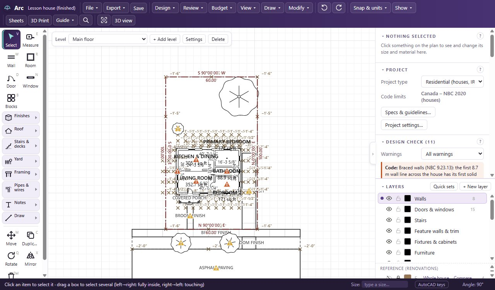
| Area | What it does |
|---|---|
| Top bar | Menus in the order you'll usually want them, each in short groups with headings: File ▾ (plans, bringing in a drawing, settings), Export ▾ (showing it to people, drawings, 3D files) and a quick Save; Design ▾ (style, rooms designed for you, suggested layouts), Review ▾ (design checks, codes, the permit set, schedules, markups), Budget ▾ (what it costs, each trade, quotes for the client, the schedule), View ▾ (what the 3D view shows), Draw ▾ and Modify ▾; undo and redo; Snap & units ▾; Show ▾ (clean floor plan, dimensions, grid, floor patterns, wall fill); Sheets, Guide ▾, search, fit and 3D view. Can't find something? Press Ctrl+K and type a word. |
| Tools (left) | The tools you use most are one click: Select, Measure, Wall, Room, Door, Window and Blocks. The rest sit under short headings (Finishes, Roof, Stairs & decks, Yard, Framing, Pipes & wires, Notes, Draw): click one to pick a tool from it (see The tool bar's headings). Then Move, Duplicate (copies right in this plan; Ctrl+C / Ctrl+V copies into another plan), Rotate, Mirror and Delete. The letter in each corner is its keyboard shortcut. |
| Level bar | Above the plan: pick the floor you're drawing on, + Add level, level Settings, ▼ ▲ to go down or up a floor, and the This floor / + below / Whole house switch for how much of the house shows, on the plan and in 3D. |
| Panel (right) | The settings for the tool you're using, or for whatever you've selected. With nothing selected it shows the Project settings and the Design check. Click a section's heading to fold it away (click again to open it); the panel remembers which ones you folded. The small tab on the panel's left edge hides the whole panel for a bigger drawing (click the tab at the window's right edge to bring it back), and dragging either tab makes the panel wider or narrower. |
| Layers | Below the panel. The eye hides a layer; the lock stops it being selected; the snowflake (when you point at a layer) freezes it. Quick sets opens Floors & layers. Click the Layers heading to fold the list down. |
| Status bar | At the bottom. Tells you what the tool wants next. Read it whenever you're unsure. |
The tool bar's headings
Click a heading and a picker opens beside it, with each tool's picture, its name, its key letter and what it's for. Pick one and the picker closes; the heading lights up and shows the tool you're using. The pin at the top of the picker keeps it open as a small window you can drag out of the way, handy when you use several of its tools in a row. Esc closes it and the arrow keys move through it. Keys still work without opening anything: S is Stairs, F is Roof, U is Ducts, pipes & wires. On an iPad or a phone the picker opens from the bottom of the screen with big rows for your finger, and with Bigger text on the tool bar's names grow too.
| Heading | Its tools |
|---|---|
| Finishes | Floors & baseboards (A), Paint (K), Decorate (Y) |
| Roof | Roof (F), Dormer, Skylight, Chimney |
| Stairs & decks | Stairs (S), Porch or covered deck (G), Terrace or balcony, Floor opening, Trellis or pergola, Spiral ramp |
| Yard | Outdoor (O: patios, decks, fences, beds, the lot), Plants, Sprinklers, Rock, Stone facing |
| Framing | Framing piece (J), Post, Beam, Stud, Joist, Column grid |
| Pipes & wires | Ducts, pipes & wires (U), or start straight on Ducts, Pipes or Wires |
| Notes | Text (T), Dimension, Markup (I), Section cut, Detail callout |
| Draw | Line (L), Polyline (P), Rectangle, Circle, Arc, Hatch (H), 3D shape |
In ArcRes the drawing tools (Draw, and Pipes & wires) show a small lock until the first lesson is done, or until you say you know your way around.
Samples
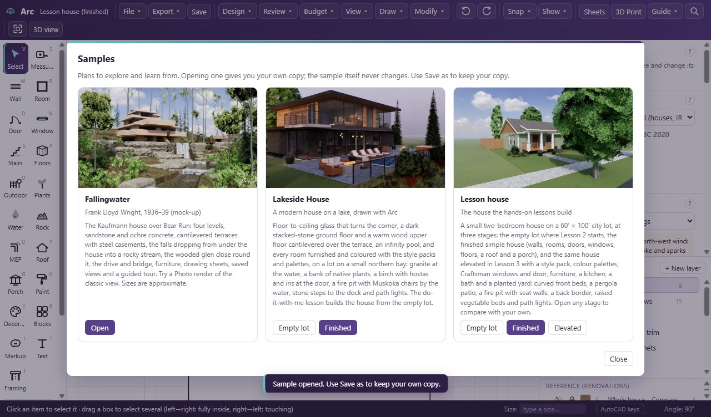
The Lakeside House is a modern house on a lake made only with Arc's own tools: floor-to-ceiling glass that turns the corner, a stacked-stone ground floor and a wood upper floor cantilevered over the terrace, an infinity pool, furnished rooms and a guided tour. Its lot on a small bay is planted with the Landscape tools: granite at the water, a bank of native plants, a birch with hostas and iris at the door, a fire pit with Muskoka chairs by the water, steps down to a dock and path lights. Open it at the Empty lot stage to build it yourself with its hands-on lesson (Guide ▾ → Hands-on lessons).
The Lesson house is the small house the hands-on lessons build, on a 60′ × 100′ city lot. Its Elevated stage shows a small yard done well: curved front beds with edging, a flowering crabapple, a stone walk with path lights, a pergola patio, a fire pit with seat walls, a mixed border along the back fence and raised vegetable beds. Select a bed to see what's in it, or open Budget ▾ to see what it costs.
Welcome screen
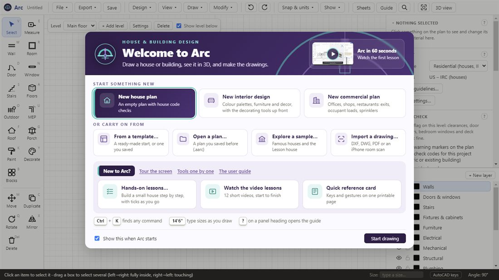
When Arc starts, the welcome screen offers the quickest ways in: New house plan, New commercial plan, Start from a template, Open a plan, Explore a sample and Bring in a drawing or scan, with links into this guide. Untick Show this when Arc starts to skip it; open it again any time from File ▾ → Welcome screen…. It doesn't show when Arc brings back unsaved work after a crash.
Templates: house plans by size, duplexes, garages and commercial shells
File ▾ → New from a template… opens the template gallery: folders down the left, the folder's templates beside them. The house plans are laid out for city lots with the garage entered straight from the street (a front garage with a bonus room over it), or a laned lot with the garage at the back; the long acreage bungalows are in the larger sizes, one with a side-entry garage.
- Size folders: Under 1,200, 1,200–1,500, 1,500–1,800, 1,800–2,000, 2,000–2,400, 2,400–2,800, 2,800–3,000, 3,000–3,300, 3,300–3,500 and 3,500–4,000 sq ft, measured outside above grade (the basement and garage aren't counted).
- Style starter houses: the front-garage two-storey (about 2,100 sq ft) already dressed as a Modern farmhouse, Modern, Craftsman, Tudor or Mid-century, as 3 bed + office + bonus room or 4 bed + bonus room.
- Duplexes & townhomes: a side-by-side duplex with front garages (paired in the middle), a laned duplex with garages at the lane, and a row of four townhomes with garages at the back. Party walls are drawn between the homes and the size shown is each home's.
- Garages & garden suites: detached double, oversized double with a workbench, triple, a garage with a garden suite above, and a garden suite on its own.
- Rooms, shells & 3D print: the blank plan, the small cottage and studio, single rooms and the 3D print starts.
Every house card says the building pocket it needs: the house's width across the front, measured outside, which has to fit between the side setbacks, with the lot width that gives with 4' side yards, and the house's depth. For example Fits a 29' building pocket (8.8 m): about a 37' lot with 4' side yards. House depth 49'. Check the actual lot's setbacks and zoning. The same note goes in the plan's Project notes.
Use asks for a style (or Plain, to choose finishes later) and builds the house: walls, doors and windows, stairs, roofs, the porch or covered entry, the kitchen, bathroom, laundry and mechanical fixtures fitted around the doors, furniture, smoke and CO alarms, and cars in the garage. Its basement comes in Design ▾ → Design options…: left open to develop, finished (a rec room, bedrooms with egress windows, a bath), and on the laned houses a legal basement suite. Change anything afterwards: it's an ordinary plan.
Bi-levels and narrow infill. Bi-level: 3 bed + ensuite, raised main floor (41' wide, for a 50' lot) has a split entry: a landing at the front door, a half flight up to the main floor and down to the lower level. The ground is set about 5' below the main floor (spot heights you can move with the Outdoor tool), so the lower level is half out of the ground with full-size windows. Its lower level comes three ways in Design options: to develop, finished (two more bedrooms, a family room and a bath) or a legal suite. Infill two-storey, 20' wide is for a 28'–30' lot with a back lane (Edmonton's 25' skinny lots need a narrower house): three bedrooms up, the garage at the lane, and the same three basement choices.
New lot: size, setbacks and the houses that fit
File ▾ → New lot (size and setbacks)… starts a plan from the lot. Type its width along the street and its depth, and the setbacks: how far the house has to stay from the front, the back and each side (in feet or metres). They start from typical numbers (front 15', back 25', sides 4'): check them against your city's zoning; Arc remembers yours for next time. As you type, it shows the building area (what the setbacks leave) and the house templates that fit it, roomiest first.
- Start with the lot: the property line, the street along the front, the building area as a dashed blue outline, and their sizes.
- Use this house: the template is built (in the style you pick) and the lot drawn round it, the house centred across the building area and at the front setback, in every one of its design options. A garage at the lane may sit in the back yard.
Either way, the plan gets a design check (in Review ▾ → Project specs & guidelines) that warns if a wall goes outside the building area, on any floor above the ground; a detached garage or shed is left out.
Lots that aren't rectangles. Pick the Lot shape; a picture beside the numbers shows the lot, its street side and the building area as you type:
- Pie (wider at the back), as on a cul-de-sac or the outside of a curve, and Reverse pie (wider at the street): type the width at the street, the Width at the back and the depth.
- Irregular: type its sides for any other shape. Go round the lot with the lot on your left: side 1 is along the street, from its left-hand corner as you stand in the street, then each side's length and the corner angle where it meets the next (90° is square). Add as many sides as it has; leave the last one out and Arc closes the outline with a straight line. It starts from the rectangle you had, so you only change what's different.
- From a Real Property Report or survey plan: open Paste the bearings, type or paste one side a line (a bearing and a length, the street side first, either way round) and click Use these. Arc turns them into sides and sets true north from them, so the property lines show the report's own bearings and the sun study's shadows fall the right way.
Each side keeps its own setback (the street side the front setback, the sides facing the back the back setback, the others the side setbacks), and the dashed building area follows the lot's shape. The house templates that fit are tried against the building area's real shape, as near the front as they go (a reverse pie is widest at the street, so a wide house can fit there). A pie's front can follow the street's curve: type its radius in Front curve radius (0 for a straight front). In Edmonton, a pie lot keeps the city's lot area: change a width and the depth follows.
An Edmonton lot from its address. File ▾ → New lot from an Edmonton address… (or the address box at the top of New lot): type the house number and street, like 10736 122 Street NW, and click Find. Arc looks it up in the City of Edmonton's open data (it needs the internet) and fills in:
- The lot's size and shape: its area from the city, its width from the spacing of the neighbouring lots on the same street, and the depth from the two. The city no longer publishes lot lines (they come from the province's licensed mapping, which is what SLIM Maps shows), so on a straight street the lot is a rectangle. Round a cul-de-sac's bulb or a curve in the street (from the city's road centre lines), Arc works out a pie (wider at the back) or a reverse pie (narrower at the back, on the inside of a curve), with its front following the curve, from the lot's area, where its middle is and the lots on either side; it says Shape guessed from address points: check the survey or Real Property Report. Either way, check it against the Real Property Report or the survey plan from Alberta Land Titles and type the right size. Change the width and the depth follows, keeping the area.
- The zone's setbacks under Zoning Bylaw 20001 (RS, RSF, RSM, RM, RL and RR, and the special areas' GLDF, GRH, SLD, SRH, SRA, PLD, RVRH and BRH), and its height and site coverage as design checks, with the zone's link and its overlays. For other zones (a Direct Control zone, say) it gives the zone's name and link to look them up. A treed boulevard, a lane or a corner can change the numbers: check with the city.
- A corner lot: when there's no lot beside it on one side (a street, then), Arc says so and sets Corner lot to that side, so that side gets the zone's flanking setback (and, in some zones, a smaller rear setback). A corner house addressed on the avenue still counts as the neighbour, and a lot round a cul-de-sac isn't a corner lot (the gap beside it is the bulb). Change it if Arc got it wrong.
- A ravine or the river valley nearby: an environmental reserve lot (like Lot 27ER), land zoned A (River Valley) or NA (Natural Areas), or the River Valley and Ravine System Protection Overlay near the lot. Arc warns and points to the City's Top-of-Bank policy (C542A): always check it before you design near a bank.
- Ground that has changed: when the lot's subdivision is newer than the city's contour lines (2021), or the house was built after them, or the contour lines and the ground the city measured beside the buildings differ by more than about half a metre, Arc says so: use the lot grading plan or a survey for the heights.
- The ground: the city's contour lines every 0.5 m round the lot, and the ground beside each building, become the plan's contours and spot heights, so the 3D view and the grading tools have the real slope. The main floor is taken as 8" above the ground at the house; the plan notes how high that is above sea level. Untick Ground heights to leave them out.
- The buildings already there, from the city's 2019 roof outlines with their heights: as pre-existing walls kept (for a renovation or a yard), as walls being removed (for a new house; a template house always does this), as outlines, or left out. The walls go 18" inside the roof outline. The neighbours' buildings come as outlines with their heights.
- Where it is: the sun study's place (Edmonton) and true north, so the shadows fall the right way, and the address and legal description for the title block.
Arc works out which side the street is on from the lots across it (or the garage behind the house); if it's wrong, click The street is on the other side. The address is only sent to the city's open data site, data.edmonton.ca. Contains information licensed under the Open Government Licence – City of Edmonton.
No Real Property Report? The Edmonton lookup's Find your lot's survey shows the lot's legal description (plan, block and lot, with a Copy button) and the ways to get its shape: the report you may already have (the papers from buying the house, the lawyer, the survey firm on it, the lender); the lot's own survey plan from Alberta Land Titles (SPIN2 or a registry agent), whose side lengths and bearings go straight into Paste the bearings; a new report from an Alberta Land Surveyor; and meanwhile tracing a screenshot from SLIM Maps with File ▾ → Plot plan or survey…. If the lot you draw is more than 8% off the city's lot area, the window says so.
Your own templates go in folders. Save this plan as a template… (or File ▾ → Save as a template…) suggests the size folder from the plan's square footage; pick another, or choose New folder… and name it (a client's name, a builder's series). Each saved template has Move to… to file it somewhere else. They're kept on this computer or iPad.
Commercial shells (Arc). In Arc the gallery has Homes and Commercial at the top; it opens on the side the open plan is (a house plan shows the house templates). The commercial folders have a 1,200 sq ft retail bay, a restaurant, an office suite, a clinic, a warehouse with offices, a four-bay strip plaza with demising walls, and Empty commercial shell, which asks for the floor area and the width across the front. They start as commercial projects with occupant loads, exits and fixture counts checked. ArcRes shows only the homes.
About & licence
The first time the program starts, it shows its licence: it's licensed to one person for their own use, so please don't share the program, its installer or your sign-in. Your plans and drawings are yours. Click I agree to carry on; it doesn't ask again. File ▾ or Guide ▾ → About & licence… shows the version, who your copy is licensed to (with its licence number) and the full terms. That name also appears in small print on the drawing sheets and the PDFs you save.
Privacy. About also says what leaves this device. Your plans stay on it, and Arc has no ads, tracking or account of its own. Arc sends something only when you ask: the address you type into New lot’s Edmonton lookup goes to data.edmonton.ca, with nothing else from the plan; a share link you publish puts that page on Cloudflare Pages; and a video lesson that isn’t on this device plays from arc-137.github.io. On the web, the app itself comes from arc-137.pages.dev, and Cloudflare checks your sign-in.
Search for any command (Ctrl+K)
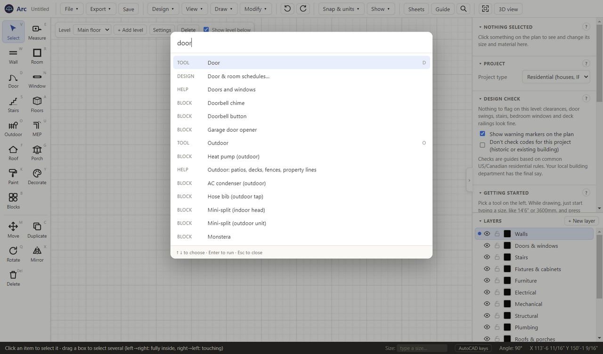
Press Ctrl+K, or click the magnifier on the top bar, and type a word or two: wall, pdf, sofa, grid off, basement. The list finds tools, every menu command, the Snap & units and Show switches, levels, the 3D toolbar's buttons (with the 3D view open), every block in the library and the topics in this guide. It also finds things in this plan: a window or door by its mark (W12), a room by its name or number (kitchen, 101), every block of one kind (sofa), everything marked to remove (walls to remove) and anything by the value of one of your own fields. Pick one and it's selected on the plan, on its floor. Use ↑ ↓ and Enter, or click. With nothing typed it shows what you used last. The letter beside a tool is its shortcut, so search is also a way to learn them.
The ? buttons
Most headings in the side panel have a small ? on the right. Click it and this guide opens at the part that explains that tool or setting. The guide opens in its own window, and every ? reuses it.
Learning while you draw: Guide ▾
The Guide ▾ menu on the top bar keeps the help in one place, without leaving your drawing:
- Video lessons: each lesson is listed by name and length. Pick one and it plays in a small window over the drawing; drag it aside, make it bigger, or pop it out onto a second screen.
- Hands-on lessons: a panel walks you through the steps and ticks each one off as you do it.
- User guide, Tour of the screen and Tools, one by one: this guide, opened at the right place.
- Quick reference card, Search commands and help (Ctrl+K) and the Welcome screen.
Everything for pricing a job is under Budget ▾: the takeoff, takeoff on a PDF, the quote, change orders, selections and allowances, and the shopping list and budget.
Preferences and Project settings
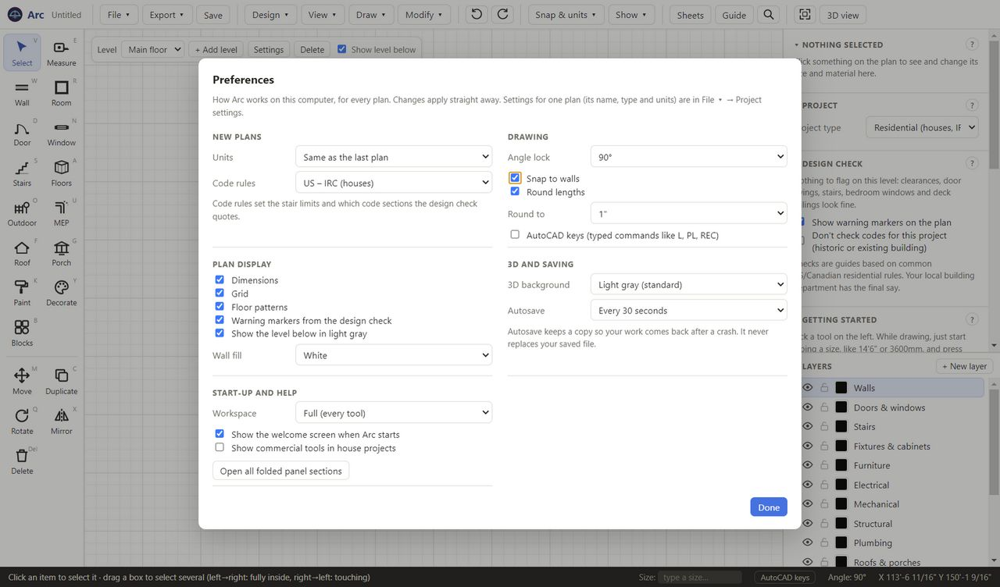
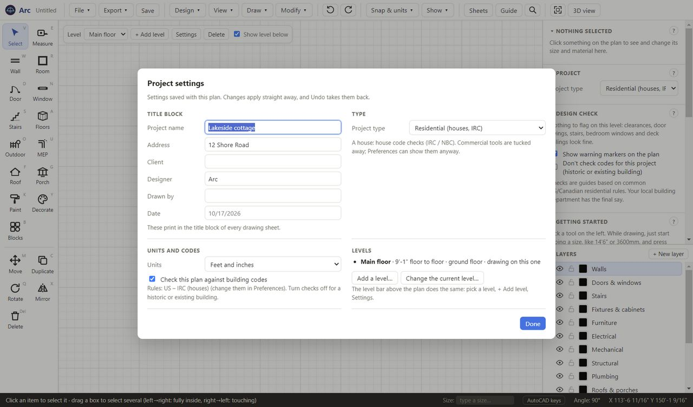
File ▾ → Preferences… (Ctrl+,) holds how Arc works on this computer, for every plan: units for new plans, the code rules (Canada NBC, US IRC, UK), the country for prices and money (Canada, the US or the UK), angle lock, snapping and rounding, AutoCAD keys, what the plan shows, the 3D background, how often autosave runs, the welcome screen, showing commercial tools in house projects, and a button that opens every folded panel section again.
Backup copies. Arc keeps earlier copies for you. On a computer: the last 10 copies of each plan from before it was saved over (one every 10 minutes at most), a copy of unsaved work every 15 minutes, and always one when a plan with unsaved work is replaced by a new one (New, Open, Start fresh). In a browser or on an iPad: the last 4 copies of your work. File ▾ → Backup copies… lists them; Open starts one as a new, unsaved plan, so the file it came from is never changed. Save it under a name to keep it.
On an iPad or in a browser, autosave and the backup copies are kept in the browser's own storage. When that room is nearly full, Arc says so once (before anything fails): save your plan to Files (File ▾ → Save) and remove old copies in Backup copies. Everything you tap on an iPad is at least finger size (44 px).
File ▾ → Project settings… holds what's saved with this plan: the title block (project name, address, client, designer, drawn by, date), the project type, its units, whether to check it against codes, and its levels. The Project heading in the panel (nothing selected) has a ? that leads here too. Changes in both apply straight away.
Houses and commercial projects
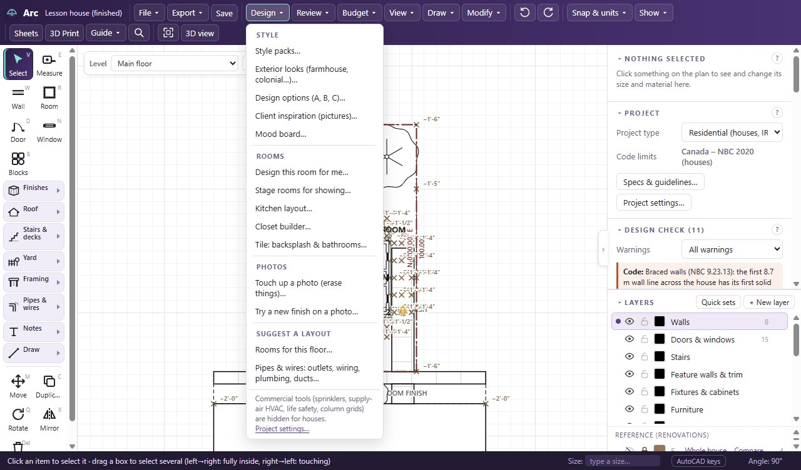
A house project keeps the screen simple: the commercial-only tools are tucked away. That's Design ▾ → Sprinklers and HVAC (supply air), the life safety plan, room numbers and door marks and steel framing in View ▾, the column grid in Draw ▾, and the commercial blocks (office, restaurant, commercial restroom, life safety, ceiling, HVAC, building core). Set Project type to Commercial or Mixed-use (Project settings, or the Project section of the panel) and they all appear. To keep them in house projects too, tick Show commercial tools in house projects in Preferences.
Building codes follow the project type too. A new house plan uses the house code set chosen in Preferences (House code: Canada NBC, US IRC or UK; new installs start with NBC). A new commercial plan uses the matching commercial set (Canada NBC Part 3 if your house code is NBC, otherwise US IBC), with exit-stair limits of about a 7" riser, an 11" tread and a 44" width. Changing a plan's type switches its code set with it. To use another set for one plan, pick it under Code limits in Project settings, or change the limits in the Stairs tool's Code limits section; the plan keeps them.
Project specs, guidelines and notes on warnings
Review ▾ → Project specs & guidelines… (also a button in Project settings and in the panel's Project section) holds rules for this plan: a client brief, a bylaw, neighbourhood or HOA guidelines, an accessibility goal, or your own standards. When the plan goes against one, the Design check shows it as a purple Spec warning, with a purple marker on the plan.
| Group | Rules |
|---|---|
| Rooms | Minimum room area, minimum room width, minimum ceiling height, window glass area as a % of the floor. Rooms are picked by name: bedroom finds Bedroom 2 and Primary bedroom; leave it blank for every room. |
| Doors, halls & stairs | Minimum door width (every door, outside doors or inside doors), minimum hallway width, stair limits (riser, tread, width) |
| Site | Setback from the property lines, maximum building height (to the ridge), maximum lot coverage. These need the property lines drawn with the Outdoor tool (closed round the lot for coverage); until then the rule reminds you. Driveway length: from each garage door straight out to the back of the sidewalk (a path or line named Sidewalk), or to the front property line when no sidewalk is drawn. Maximum building length: the outside of the walls, front to back or side to side, every floor from the ground floor up. New lot adds both for an Edmonton RSF lot (6.0 m and 30 m). |
| Developer guidelines | No vinyl siding (what each outside wall is really clad in, its Exterior finish first: stone or stucco over a vinyl wall type isn't vinyl, and fibre-cement lap isn't either), approved roofing only (type the list, one per line), the garage's share of the house front, a triple garage's jog (the third stall steps back), minimum door height (garage doors, the front door, or every outside door), and the rear eave's height above the grade on a walkout (from the design grades). |
| Checklist | A reminder in your own words ("Client wants no carpet", "HOA: black windows only"). It stays at the top of the Design check until you click Done. |
Each rule can say where it comes from (Source: "City bylaw 4.2", "HOA", "Client brief"), and that shows beside its warnings. Untick a rule to pause it, or click × to delete it. The ready-made sets add several at once: Accessible / aging in place, Neighbourhood / HOA guidelines and Comfortable family home; change their numbers to suit. The dialog shows how many warnings each rule has right now.
Developer rule sets. Arc, ArcRes and Arc Landscape (Ctrl+K → "developer rule sets"). A new subdivision's developer has architectural guidelines of its own. Melcor Jagare Ridge (first pass) adds them as rules: no vinyl siding, approved roofing, the garage no more than 71% of the front, a triple garage's jog, 8′ garage doors, and on a walkout the rear eave no more than 20′ above the grade. What a plan can't measure is a checklist reminder: decks built with the house, the limit on bare parging, 24″ returns of the front's stone or siding round the corners. It is a first pass: developers change their guidelines, and the developer's architectural approval is what counts, so check each rule against the current guidelines (the approved roofing list starts empty: type it in). For your own subdivision or client, set up the rules, type a name and click Save these rules as a set: the set is saved with the plan, and its button adds the rules again (in another design option, say).
Notes on warnings. Every warning in the Design check, codes, tips and specs alike, has a Note button. Type why it's fine, what to do, or who to ask; it's saved with the plan when you click away, shows under the warning, and stays even if you Ignore the warning. Ignore moves a warning to the "ignored" list at the bottom, where Check again brings it back.
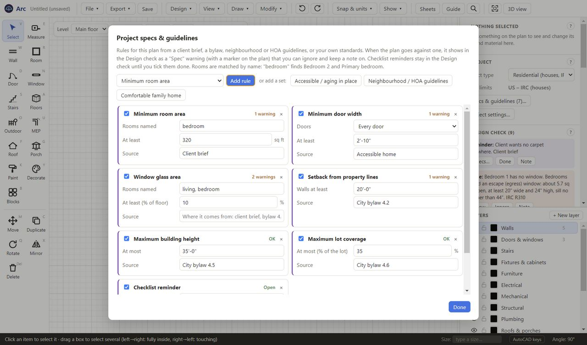
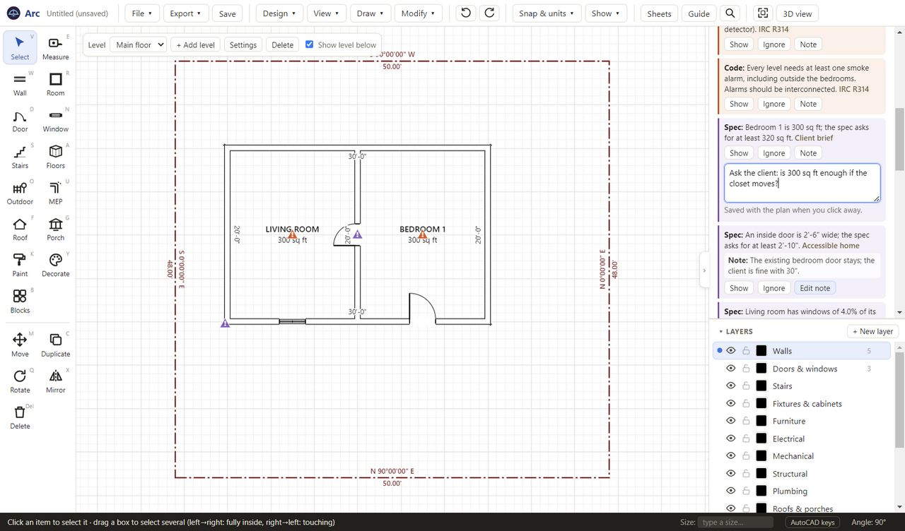
Lot type & design grades
A new house on a new lot comes with an approved lot grading plan: the finished ground's elevation at the house's corners, front and back, and the main floor or top of the foundation. Review ▾ → Lot type & design grades… (Arc and ArcRes) takes them as the plan prints them, in metres (or feet), with a sketch of the house showing which corner is which, seen from the street. Pick the lot type too: Regular, Walkout (Edmonton's "Type W", the back a storey lower) or Split.
- The design grades are kept apart from the existing ground (the city's contour lines and spot heights). If you typed a main floor and the city's ground was set with a different one, saving moves that ground to match, so its real elevations stay the same.
- Height is measured from the average grade, the average of the four corners' grades, to the ridge, not from the main floor. That's Arc's reading of how Edmonton measures height; it isn't checked against the wording of Zoning Bylaw 20001 (section 5.70), so check it with the city. On a walkout or split lot Arc also warns when the house is over the limit measured from the lowest grade, so you can check how the city measures that lot.
- The Design check warns where the top of the foundation (where the wood framing starts) is less than 150 mm above a design grade (NBC 9.15.4).
- Drafted elevations and sections show the average grade with its elevation, the top of the foundation and how far it shows above grade, the overall height from grade, and the height limit from grade. The ground line near the house follows the design grades.
- A slab-on-grade house's footings go the frost depth below the lowest design grade. The site plan shows each design grade in a blue box, with the existing ground's height under it.
Untick Use these to keep them in the plan but measure from the main floor as before. A plan without design grades works as it always has.
3. The menus
Each menu is in short groups with a heading. Where a menu has the same tools as the tool bar (Draw ▾), it uses the tool bar's headings. Each command is in one menu only.
Project notes
Review ▾ → Project notes… keeps everything about this job in one place: what the engineer changed, what the inspector asked for, the client's wishes, a supplier's lead time, your own reminders. Each note has a title, the note, its kind (engineer, inspector, client, supplier or general), who said it and the date, and, if you like, the things on the plan it's about.
- About something on the plan: select a beam, post, door, window or wall, and pick Add a project note about this… at the bottom of its panel (or Add the selected items in the note). For a door or window the note is about its header; for a wall, its footing.
- Engineer says: an engineer's note can set a size. Tick Engineer says and type what they specified (for example 3-ply 1-3/4" × 11-7/8" LVL). On its items Arc then shows their words plus (per engineer) in place of its own size: in the 3D labels, the plan label, the door and window schedules, the framing, the foundation notes and the parts list. Arc's own size stays beside it ("Arc: 2-2x10 header") so you can see the difference. Arc's structure warning on those items is quieted; their panel says Per engineer: name, date, and the Permit-set check lists them so the engineer's letter goes in with the set.
- Show on drawings: each note has its own switch. A note that's shown prints in a General notes block in the title block of the sheets: on the cover sheet (the first sheet), or on the sheet of its item (the floor, framing or foundation plan of its level, or the door or window schedule). Notes you keep for yourself stay off the drawings.
Notes are saved with the plan and undo like any change. A plan with no notes draws, counts and warns exactly as before.
File ▾
New (a new plan, from a template, a new lot, a building on this site), Open & save (open, samples, save, print this floor plan, save as a template, My library, backup copies), Bring in a drawing (DXF, DWG, a room scan, a PDF plan, a plot plan, an aerial photo) and Settings (project settings, preferences, workspace).
Draw ▾
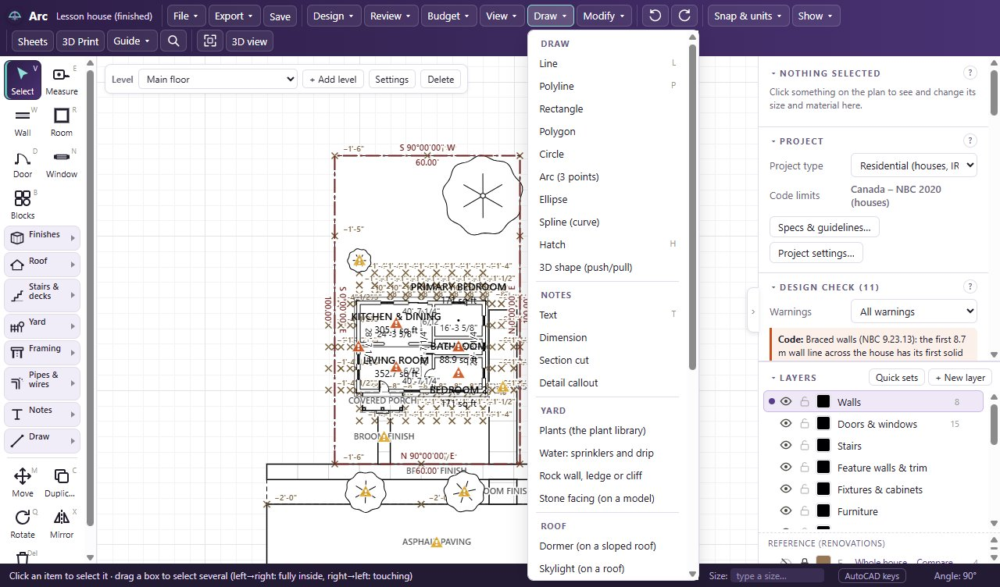
View ▾
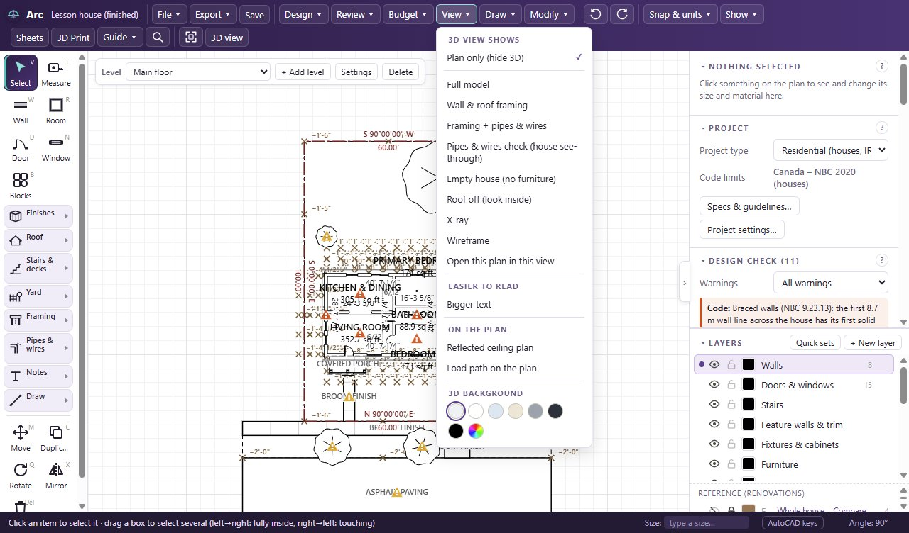
Design ▾
Review ▾
Everything for checking the design and getting it built: Check the design (design check markers, project specs & guidelines, the building code summary, aging in place, lighting), Measuring an existing home, Site & yard (before you build, privacy and views, FireSmart, yard challenges), Permit drawings (permit-set check, door, window & room schedules, wall types, window and door products), Energy (NBC 9.36, heat loss, energy performance) and Notes for the builder (markups & RFIs).
Budget ▾
Everything about money and time: The budget (takeoff & cost estimate, build budget, cost room by room, options & upgrades, the takeoff as a spreadsheet), Buying (purchases & invoices, allowances, comparing a contractor's quote, shopping list), Yard (yard phases, do it or hire it), By trade (framing, electrical, plumbing, heating & cooling, assemblies and cut lists, the trim cut list), For the client (the client brief, quote, change orders, selections & allowances) and Plan the job (phase schedule, takeoff on someone else's PDF). A selected wall's panel shows its own budget too.
Export ▾
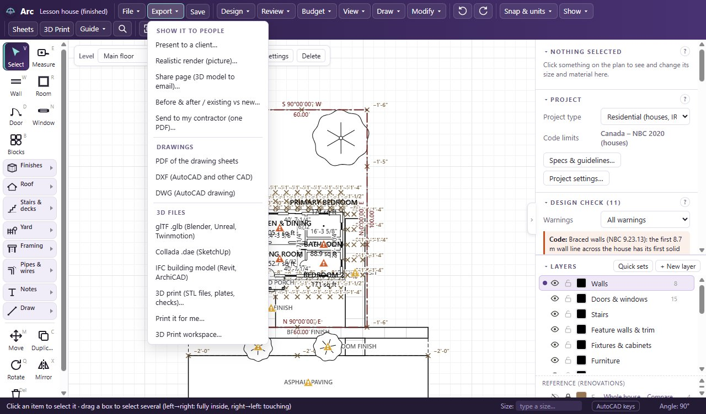
3D printing a house
Export ▾ → 3D print (STL files, plates, checks)… turns the plan into parts for a 3D printer. Pick your printer (the Bambu Lab H2D, X1/P1, A1, A1 mini, Prusa MK4 or Ender-3) and nozzle, the model and the scale. On the H2D, tick Two nozzles when a part prints in two colours with both nozzles: the bed both nozzles reach is 300 × 320 mm, smaller than the 325 × 320 mm of one nozzle, and the checks and plates follow it.
- Floors that stack (plus the roof): each floor is its own part, and the roof lifts off. With Pegs and sockets ticked, small posts in the corners of each floor carry a peg up into a matching socket under the floor above, and under the roof. The roof gets a flat base to stand on (with its sockets), and its attic is filled in so it prints solid. Peg clearance sets how snug they are: 0.2 mm usually; 0.3 mm if your printer runs tight.
- Dollhouse: the same, with the furniture in each floor. Tick Leave staging decor out to print the furniture without the staging and seasonal decor (vases, books, wreaths, pumpkins). One solid piece: everything as one model.
The Checks list each problem with a button to fix it:
- Too big for the bed: the parts are measured against your printer; the fix prints at the biggest scale that fits.
- Walls too thin: walls need to be at least about three nozzle widths (1.2 mm with a 0.4 mm nozzle). Thicken walls too thin for the nozzle fixes it for the print only; your plan keeps its walls.
- Overhangs: eaves and other undersides steeper than 45° need supports; the check says how much and suggests tree supports. Window and door heads are short enough to bridge without them.
- Window glass is left out (it prints as a thin skin that fails), and so are downspouts. At 1:96 the furniture in a dollhouse is very small: the check suggests 1:48.
The parts are laid out on plates that fit the bed (turned a quarter turn when that fits better), shown under the checks. Save files… saves one STL per plate, one per part (or just one kind, under Save), and a print guide PDF: the slicer settings for each part (orientation, supports, layer height, wall loops, brim), a picture of each plate, and how the parts go together. Open the plate files in Bambu Studio, PrusaSlicer or Cura. Tick Show the printer bed on the plan to see a dashed outline of the bed at the print scale while you draw. To start from something small, use File ▾ → New from a template… → 3D print: a house model.
Filament to buy, under the checks, estimates the filament for every part: the walls and top and bottom skins solid, the inside at the infill the print guide suggests, in PLA. It's totalled by colour (each shape's colour; a ground plate's base colour below its filament change and the ground cover above), with the 1 kg spools to buy, 10% extra for colour changes and reprints. Type your Price per kg for the cost, and click Add to the budget to put one line per colour in the cost estimate (Budget ▾ → Takeoff & cost estimate), under 3D printing filament; clicking it again replaces those lines. The print guide lists the grams for each part and the spools to buy. Your slicer shows the exact grams.
Plate infill (for ground plates) picks what goes inside them. Lightning, the default, only props up the top, so a plate takes about half the filament and much less time. Gyroid fills it evenly, for a sturdier plate. The estimate and the print guide follow your choice. They're matched to Bambu Studio's own slicing, within about 10%.
Organise as a kit (for 3D shapes) turns a model made of many small shapes into a kit of numbered parts. Shapes that touch, or that share a print group, print as one part: a lamp's post, globe and cap come out as one lamp. Identical parts print from one file, marked "print 6". Each part gets a number from its layer (TR-04, LT-12), the plates are sorted so each holds one main colour, and a parts list (CSV) comes with the files. A part in more than one colour also comes as a 3MF file with one piece per colour, so the slicer can give each colour its filament.
When the print files are saved, Arc seals each part's mesh: combining shapes can leave tiny gaps where pieces meet, and a slicer may read those as holes and skip layers. Every part is sealed: 3D shapes, ground plates, imported models, and a house's floors and roofs. A house part is many pieces that overlap (each wall, the floor slab, the posts and pegs, a roof's ceiling plate), so first Arc joins them into one solid in the background, then seals it. The print check says how many gaps it closed, which pieces it couldn't join (they're saved overlapping, which Bambu Studio merges), and which parts still have open edges. Should print well only shows when nothing is in the way: no warnings, no open edges and no thin spots.
3D printing an object in millimetres
For anything else (a bracket, a stand, a part that broke), use File ▾ → New from a template… → 3D print: an object in millimetres. The plan is in millimetres at full size, with the printer's bed outlined. Draw with Draw ▾ → 3D shape:
- Rectangle: click a corner, then type the size, width by depth, like 40 x 25, and press Enter. Circle: click the centre and type the radius. Any outline: click the corners. Set the Height in the panel first, or push and pull the shape in 3D afterwards.
- A shape drawn inside another cuts a hole straight through it.
- Select a shape and its panel shows a 3D printing box: the printed size, and a warning if it's thinner than the nozzle can print, too big for the bed, floating above the bed, or wider at the top than the bottom (an overhang).
Then Export ▾ → 3D print… with Model set to 3D shapes I drew and model ground: each shape is its own part, checked and laid out on a plate, with the print guide. The hands-on lesson 3D printing: an object, then a house (Guide ▾ → Hands-on lessons) walks through both.
Model ground: dioramas, site models and printed landscapes
The ground tools (contour lines, spot heights, flat pads, hills and hollows, driveways and paths, water, rock and retaining walls) also shape the ground of a model: a diorama, a site model for a client, or a landscape to 3D-print. Pick Outdoor and set Draw to Ground: model base, then click the corners of the board the ground sits on. The ground then covers just the base and stops square at its edges, shaped as finely as you need. Draw two bases side by side for boards at different heights, like a table and a lower side table; the ground flows smoothly from one to the other.
- Bottom at: the height of the board's top. Ground detail: the size of each square the ground is shaped on (empty for automatic, about 500 squares across). 1.5 to 2 mm suits a landscape for a 3D printer.
- Base colour, and Ground cover colour starts higher up: below that height the ground shows the base colour, as a print does when it changes filament there. A path or plaza sunk below it shows the base colour. Ground cover (in any ground panel) makes the ground grass, snow, bare earth or sand.
- Water has a Depth and can be Frozen (ice), and so can a waterfall. A driveway or path can have Heights at each bend, so it can level off and steepen like a ski run (the panel shows its steepest stretch), and a Groomed snow or Ice surface. Only lowers the ground makes a path a cut that never fills, like a lane kept clear under a chairlift.
- Surface patterns on a flat pad or a path: cobblestones, flagstones, bricks, herringbone bricks, basketweave bricks, square slabs, hexagon pavers, wood planks, snow ripples, ice cracks, corduroy (groomed snow, running down a ski run) or moguls, with their size and groove depth. They show in 3D and are pressed into the printed plates on a finer mesh. A pad can also carry LEGO studs (4.9 mm, on an 8 mm grid), printed with the plate. Stays level over paths and walls keeps a pad flat even where a path or ski run passes close by.
- My paving (on a model): under Surface pattern, a picture of the pad's or path's paving, and Pictures of every pattern to pick from. Besides the patterns above there are more paving looks (in the list under More paving): running bond and stack bond brick pavers, mixed-size ashlar (cut stone in three sizes), fish-scale fans of setts, cobblestones with a brick edge (on a path or a round pad), a boardwalk with gaps, log rounds and crazy paving. Change this paving… opens a window you can move, with a live picture and only the sliders that make sense for that pattern: pattern size, groove depth, joint width, flat-bottomed joints, soft edges, rounded corners, how far along each row of bricks or slabs starts (0% stack bond, 50% running bond), gaps between boards, and a brick edge. It says what you might have missed: a joint narrower than about 0.5 mm won't show with a 0.4 mm nozzle (make it 0.6 mm or more), and a groove shallower than one 0.2 mm layer may not show at all. Save as My paving… keeps it with a name, in the plan and in My library for your other plans and editions (your paving from another edition shows marked ⤵ and is copied here when picked); Reset puts the pattern back as Arc ships it. The paving keeps its pattern's name, so joined paths still count it as paved, and an older Arc shows the pattern it was made from.
- Rock shows on slopes over (in the model base panel): where the ground is steeper than this angle, bare rock shows through the snow or grass, in the Rock colour. About 45° looks like real mountains. It colours the 3D view and renders only; to print rock, add rock ledges.
- On a model, rock ledges are sized to the model and drawn in a plain colour you can set. Retaining walls in stacked stone or fieldstone, and walls drawn with the Rock tool, are real rock: see Rock.
- Print plates: 3D printing cuts the ground into plates. Type the Column widths and Row depths (the last ones take what's left), a Plate names start and Row names (like F, R for front and rear), or leave them empty to split the base evenly to fit the printer. Puzzle tabs lock neighbouring plates together, with a little clearance in each pocket.
- A 3D shape's panel has When 3D printing: print it on its own, join it to the ground plates (studs, ledges), cut it out of the plates (holes, sockets, wiring channels underneath; shown as a faint red ghost in 3D), or leave it out (for show only). Cuts count even when their layer is hidden.
Export ▾ → 3D print… with The ground, as plates ticked adds a part for each plate, named on the plan, checked against the printer like any other part (with Patios with their paving pressed in, each patio's herringbone, bond, hexagons, flagstones, cut stone, slabs or circle kit is pressed into the plate as 0.6 mm joints at any scale; pavers too small to print at the scale are drawn bigger; exposed aggregate, asphalt, grass pavers and stamped wood print flat), with the filament change height in the print guide. A plate taller than the printer prints as stacked layers (C1R layer 1, C1R layer 2…): each layer above sits on pegs on the one below, with sockets underneath, so the ground can be as tall as you like.
A 3D shape can Glow (a light): a lantern, a lit window or a string of fairy lights. It glows in the 3D view, and an Evening (lights on) render turns each one into a real light.
Shape the ground by hand in 3D, and draw a road on it
You don't have to draw contour lines to shape a model's ground. In the 3D view, click Sculpt ground (or, with the Outdoor tool set to Ground: model base, Sculpt the ground in 3D… in the panel). Then drag on the ground of the model base. A ring shows the brush.
- Raise pulls the ground up where you drag. Lower pushes it down. Drag back and forth to build a hill or dig a valley.
- Smooth softens bumps and sharp edges. Flatten levels the ground to the height where you first pressed: press on a spot that is the right height, then drag across what should match it. Or type a height in Flatten to and it levels to that.
- Grab drags the ground under the brush sideways as one piece, like pulling a bank along. Hold Shift and drag up or down to lift or sink it instead.
- Ridge raises a ridge along your stroke, as wide as the brush: a snow drift or a bank. Gully cuts one: a creek bed or an avalanche chute. Height sets how tall or deep (empty: a quarter of the brush size).
- Hill and Hollow stamp a round hill or hollow the size of the brush with one click.
- Freeze paints areas the other brushes may not touch, shown as blue dots: a road, a plaza, a turntable socket. Shift thaws. Freeze what's drawn freezes every pad, path, water and ground shape on the plan in one go; Thaw all clears it. Frozen areas are saved with the plan.
- Roughen adds small random bumps and dips, like rough ground or drifted snow. Terrace steps the ground into level bands, using the Terrace step height.
- Mirror copies every stroke across the middle of the base, left–right or front–back, so one side of a hill shapes the other. Stamps, ridges and grabs mirror too; a fainter ring shows where the copy lands.
- Size and Strength set how wide the brush is and how much each drag does. Falloff is how the brush fades to its edge: soft, round (a dome) or sharp (full strength to near the edge). [ and ] make the brush smaller or bigger. Holding Shift does the opposite: Raise lowers, Smooth roughens.
- Contours every draws lines of equal height over the ground while you work, so you can see the shape. Set it to 0 to hide them. Colour by height paints the ground blue (low) to red (high) while the brush is out, and the status line reads out the ground's height under the pointer.
- Smooth all softens the whole base once. Clear sculpting takes all the hand shaping off (the contours, pads and paths drawn on the plan stay).
- Ground from a picture… (in the model base's panel, beside Sculpt the ground in 3D…) shapes the ground from a greyscale picture (PNG or JPG) stretched over the base, its top edge along the back of the plan: white is the highest ground, black the lowest, and you type the height of white. It replaces the sculpting; Ctrl+Z takes it back.
- On the plan, a sculpted base shows its ground as faint purple contour lines, at the Contours every step (or about 60 across the base). Show the sculpted ground as contour lines on the plan in the base's panel turns them off.
Each drag is one undo step: Ctrl+Z takes it back. Drag off the base to turn the view, or right-drag to slide it. Esc or Done puts the brush away. The shaping is saved with the plan, and the printed plates follow it like any other ground. Pads, roads and plazas drawn on the plan still win where they are: sculpt the hillside, and the road stays level. After the first drag Arc keeps the solved ground and only lays the sculpting and what's drawn on the plan again, so later drags on a big, fine base are quicker; if it still lags, set its Ground detail coarser while you rough out the shape, then finer at the end. The ground Arc solves from contour lines keeps faint steps between the lines, which print like a topographic map. To soften them, set Smooth the ground in the model base's panel (next to Ground detail) to a number of passes: 0 leaves the ground as drawn, 20 or so takes the steps out, more makes it smoother still. Pads and paths are levelled afterwards, so they stay flat.
To put a road on the hill, click Road on ground in the 3D view (or Draw a road on the 3D ground… in the Outdoor panel). Set its Width, Surface and, on a model, the Pattern (cobblestones, planks, groomed snow…), then click points along the middle of the road on the ground. Each point takes the ground's height where you clicked, so the road follows the slope; an orange ribbon shows it. Backspace takes the last point off, and the panel reads out the steepest stretch between your points as you go. Enter, a double-click or Finish makes the road. It is an ordinary driveway or path: select it to change its width, surface, pattern or the height at each bend, make it a printed insert, or tick Smooth curve.
Fine snow and stone on printed ground
A printer lays plastic in layers, usually 0.2 mm tall, so a slope prints as little steps 0.2 mm ÷ its steepness apart: about 5.7 mm apart at 2°, 2.3 mm at 5°, 0.9 mm at 12°. On gentle snow those steps look like the contour lines on a map. Snow prints best dead flat, or steeper than about 12°, with its texture made of small crisp forms one to four layers tall. These tools do that, on a model base, and line it all up across the plates' seams (everything is worked out from its place on the whole board). Each one is off until you turn it on: a plan without them prints exactly as before.
- Print detail (the model base's panel, under Fine snow and stone): Automatic uses a fine mesh, about 0.27 mm, only where the ground has detail (a pattern, a snow form, a bench edge), as soon as the base uses any of these tools; plain snow stays on the ground's own grid, so the files stay about the size of a textured plate before, or smaller. Finer is about 0.23 mm (bigger files); Standard is as before.
- Flat ground on whole layers sets nearly flat ground (under 1°) to an exact layer, so its top is one clean layer. Benches on gentle slopes turns 1° to 12° slopes into flat steps 0.8 mm tall joined by short 30–45° faces, their edges wandering across the slope, so the layer steps read as wind-packed slab edges. Paths keep their own slope.
- Wind blows toward sets the way the wind crosses the board, in degrees on the plan (0 to the right, 90 up the page). Drifts, scour hollows, drift tails, tree wells and wind ripples face it, and the Bambu Studio project runs each plate's top lines along it, so the sheen reads as wind grain and matches from plate to plate.
- Deep snow (round mounds all over): a thick blanket of soft round scoops over the whole base, like the storybook village: mounds about Mound size across (15 mm if empty) and up to Mound height tall (3.2 mm), with a layer of smaller scoops on top, sizes as printed. Covers less than 100% leaves it in soft patches about 80 mm across. Paths, pads, ponds, rock ledges and the shapes on the base stay clear, the snow rising from each edge over 1.5 to 9 mm, so sets, sockets and roads still sit level; sockets, channels, tabs and inserts are still cut from the plates. The mounds carry on across the plates' seams. The plates print it on a mesh of about 0.5 mm (about twice the triangles of a plain plate); with fine patterns on the same base, the whole base goes to the fine 0.27 mm mesh, which makes much bigger files.
- Patterns for pads and paths (the Surface pattern list): Wind ripples (a sawtooth one layer tall, 3 to 5 mm apart, crests wandering, in patches; Ripples cover sets how much: about 15–35% looks natural), Sastrugi (wind-carved ridges 0.6 to 1 mm tall with a blunt nose into the wind), Flagstones in rectangles and Herringbone bricks (2:1 brick pavers at 45° to the way; Pattern size is a brick's length, so 6.8 mm makes 6.8 × 3.4 mm bricks; flat-bottomed joints Joint width wide, 0.7 mm if empty; on a path it follows the path's direction, so the bricks stay at 45° to the curb round a bend), Herringbone bricks (square to the edge) (the same bricks running along and across the path), Basketweave bricks (two bricks side by side in each square, turning from square to square), Square slabs (a sidewalk's even grid; Pattern size is a slab's side), Hexagon pavers (Pattern size is across the flats), Pillow flagstones (big sidewalk stones in rows; Pattern size is a row's depth, each stone 9/8 to twice that long, corners rounded 1.2 mm, joints 0.8 mm if empty, a fifth of the stones a layer low and a tenth split by a crack) and, on a pad, Bricks in rings (rings round the pad's middle a half brick and a joint apart, bricks a brick long round each ring, every other ring half a brick round; on a round pad the rings are fitted between its edges so no thin ring is left over). These pavers all have flat-bottomed joints Joint width wide. On a pad, Middle across and Middle up move the middle the rings go round (it starts at the pad's own), and Inner edge radius stops the pattern round an island or a hole in the middle. Bricks and slabs can have Round the corners (0.5 mm), as worn pavers look. On a path of stones or pavers, Soldier border along the edges adds a row of bricks laid across the path along each edge, one Pattern size deep, with a joint between it and the rest, and Border across the ends lays one across its start, its end or both: a threshold where the path meets a square or a round pad (past that end the path adds no pattern, so the pad's own shows). A round pad of stones or pavers can have Soldier border round the edge: a ring of bricks pointing to its middle round its edge, and round its inner edge too. Border one layer proud stands any of these borders one 0.2 mm layer above the rest, like a low curb. Stone patterns (cobbles, setts, flagstones, bricks and the pavers) can have Flat-bottomed joints (at least 0.8 mm wide, two nozzle widths, so the slicer keeps them open where a V joint closes up) and Some stones one layer lower, which looks hand-laid.
- Paving that joins and edges smoothly (on a model base). A paved path or pad (a stone or paver pattern, or a paved surface) whose sides slope over less than two ground squares, such as a sidewalk raised 1.4 mm with Sides slope over 0.5 mm, is a curb: Arc works its edge out exactly instead of on the ground's grid, so the 3D view and the printed plates show a clean curb that follows the outline, in the paving's colour, with no saw-teeth and no snow on the paving. Edges sets it (Automatic, Crisp or Soft, as before). Paved paths and pads at the same height that touch are one surface: One surface with paving it meets at its height (on unless you untick it) rounds the inside corners where they meet, about a fifth of the narrower one's width, or the Corner radius you give. Where they meet, one pattern shows, the one drawn last. On any path, Width at the end tapers it from start to end, and Widen to meet the path it starts on (or ends on) makes it as wide as that path where they meet, narrowing to its own width over the length you give: a narrow road leaving a wide street. Ease into and out of its climbs rounds the path's height where its slope changes, over that length, so a climb leaves a level street without a kink; its ends keep their heights (the middle gets a little steeper to make up for it).
- Sculpted surface (the model base's panel, at the end of Fine snow and stone): Bring in a sculpted surface… takes a surface shaped somewhere else, such as Blender, and prints the plates from it. A mesh (STL, GLB or OBJ) gives its top as seen from above; its heights are the ground's, in mm above the base's bottom, placed by its own x and y from the base's front left corner. A height picture (PNG or JPG) is added to the ground: white is 10 mm up, black nothing, spread over the base. Arc keeps it inside the plan as heights every 0.5 mm (about 1 MB for a 400 × 300 mm board). Where the surface has a hole, Arc's own ground shows, so leave holes where Arc's paving, pads or sets should show. Its heights switches between the two ways; Keep paths, paved pads and shapes clear (added heights only) lets it rise from their edges as deep snow does; From the base's left edge, From the base's front edge and Raise it by move it; Heights times makes it taller or flatter; Remove the surface takes it off. The plates follow it on a mesh as fine as its heights, then cut every socket, channel, tab, peg and insert from it as always, so they all stay. The print check warns where the ground is less than 1 mm thick over a channel cut inside a plate. The 3D view shows it a little coarser than it prints; Relief preview… shows a plate as it will print.
- Snow drifts and tree wells: the Outdoor tool's Ground: snow drift or tree well, one click on the base. A drift is a crescent across the wind: a long back at about 14°, a steep 45° lee and a crisp crest, its horns trailing downwind, in whole layers. Cornice lip on the crest adds a lip up to 1.5 mm past the crest with a 45° underside and a tip at least 0.8 mm thick, so it prints with no supports. A tree well is a dish 6 mm wider than the trunk, about 1 mm deep, with a low rim on the lee side. Select one to change its size; move or delete it like any area.
- Snow round it (a 3D shape's or a rock ledge's panel): Scour hollow and drift tail digs a moat 0.6 to 1 mm deep on the windward side and lays a tail behind, 3 to 5 times as long as the shape is wide; Keep clear within stops anything rising near its middle, like a turntable tray's sweep. Tree well puts a well round a printed tree.
- Plow bank (a path's panel, on a model): a chunky bank beside the road, its road face about 50° with clods and notches, soft behind, its top wandering 2.5 to 4.5 mm, with a gap where a walk crosses. Packed snow on it lays snow 0.6 mm thick along the edges and in a broken strip down the middle, leaving the wheel ruts bare. Above the colour change it all prints white with no extra swap.
- Matte white on the drifts: a second filament change above each plate's flat snow, so every drift, bank top and drift tail prints matte with one swap. Matte starts at empty works out each plate's flat snow by itself. In the 3D Print workspace, No matte on plates leaves it off steep plates, where a height split would draw a hard line across the slope (the print check names them).
- Ledges for snow (the Rock tool's panel, on a model): about 5 to 8 real ledges every 300 mm, at different heights, each with a snow pillow printed in white on the second nozzle, at least 1.2 mm thick with its front leaning back, so no supports.
The print check names each wide patch of gentle slope ("L2F: 120 × 300 mm at 2.4° (lines about 4.8 mm apart)") and says how big the fine files are. The Bambu Studio project comes ready to print: each ground plate has its filament changes set (the ground cover colour, then matte white), with Bambu's own PLA Basic and PLA Matte profiles for the H2D, and the top lines along the wind. Relief preview… in the 3D Print workspace shows one plate as it will print, from above under a low sun: its real print mesh cut into layers, in its filament colours (matte shown a little warmer). Lower the sun to see one-layer detail; click the picture to look closer.
The 3D Print workspace
The 3D Print button in the top bar (or Export ▾ → 3D Print workspace…) gathers every printing tool in the side panel, in the order you use them. The plan and the 3D view stay as they are, and the sections follow what you select on the plan. ← Back to the plan closes it. Nothing here is a new setting: each control is the same one the panels and the 3D print window use.
- Printer and bed: the printer, nozzle, layer height (automatic by scale, or the one you print at: it goes into the print guide and the filament estimate), scale and model, and the bed outline on the plan. Save a fit test… saves a small plate to print before a big model: a puzzle tab and its pocket, a peg with three sockets (0.1, 0.2 and 0.3 mm clearance, marked with 1, 2 and 3 dots), and a step at your colour-change height. Its read me says what to check and which setting to change.
- Model ground and plates: Start a model base if there isn't one, then the base's settings (bottom, detail, colours, the plate columns, rows, names and puzzle tabs). With Ground cover colour starts higher up ticked, it says exactly which layer to change filament at in the slicer. Under it, the plate infill and a plate map with every plate's name (inserts hatched, holes cut through the plates in red), which you can save as a picture.
- Surfaces: the surface pattern of the selected pad or path, with its size and depth, and for cobblestones and flagstones the joint width and (cobblestones) soft edges, for pillowy stones. Select a model base to see its side relief, if a script gave it some.
- Inserts: see below.
- Parts and numbers: for the selected shapes, the part name, Print together as and the layer's part number letters. Make the parts list builds every part as the print files would and lists its number, name, how many to print, colours, size, grams, what the filament costs (the $ column: grams × how many × the Filament price a kilogram, set under the list) and which bed plate it's on; click a line to select its shapes; Save as CSV keeps it. Numbers are given automatically each time, in order, from each layer's letters.
- Check and export: Check and save files… opens the 3D print window (the checks with their fixes, the filament to buy and the print time with Add to the budget, the plates, Save files…). To make one thing again, tick plates under Just some plates and Save just these plates…, or select the shapes of a part and Save the selected parts…: only those are built, with their usual numbers and a print guide.
- What to watch out for: quick notes, without building anything, on what's selected (or the whole plan): a shape that crosses a plate seam, a puzzle tab under it, a shape standing in an insert's pocket, something that starts or ends right at the colour-change height, and anything too big for the bed. The print check looks closer.
- Mesh doctor and collisions: warning colours on the model, open edges in red, and parts that overlap. See below.
Above the sections, Print it for me does it all in one go: see below.
Learn it hands-on: Guide ▾ → Hands-on lessons has three short lessons on a practice landscape (also File ▾ → New from a template… → 3D print: a small landscape): plates and the colour change, surfaces and printed inserts (including changing the snow), and parts and part numbers. Each one ticks off its steps as you do them.
Print it for me
The Print it for me button, at the top of the 3D Print workspace (also Export ▾ → Print it for me…, the 3D print window, and Ctrl+K), does the whole job in one go, for someone who just wants it printed:
- Best side down. Each 3D shape and imported model is turned so it needs the least support, keeps a good footing on the bed and isn't needlessly tall: a flowerpot that flares out at the top prints upside down, a part with a big flat side lies on it. A part you've turned yourself (Print orientation), one that stands up to print, or one that pauses for magnets is left as it is.
- Too big for the bed? It's split into pieces that fit, joined with printed pegs (or filament pins where a cut is too small for pegs), as Print in pieces does. A house too big for the bed is printed at the scale that fits.
- The plates are filled, and the filaments are matched to the ones loaded in your H2D (see below).
It ends with a plain checklist: Load red PLA on the right nozzle. White PLA is loaded on the left nozzle already. 2 plates, about 3 h 10 min., then what Arc turned or split, any pauses for magnets, the hardware to have ready and any warning still left. Save the Bambu Studio project… saves it, and on the desktop Open in Bambu Studio opens it there, so there's no hunting for the file. In Studio, check each filament matches its spool and press Slice all.
The filaments in your H2D, and Open in Bambu Studio
File ▾ → Preferences → 3D printing lists the filaments loaded in your Bambu H2D: for each, the nozzle it feeds (left or right), the kind (PLA Basic, PLA Matte or TPU 95A) and its colour. Add a filament adds one; Remove takes one off. Print it for me asks the first time if the list is empty, then stops asking. Each colour a print needs is matched to the nearest loaded one of the same kind; one that isn't loaded goes on the nozzle with fewer, and the checklist says to load it. TPU always goes on the right nozzle, from the spool at the back. The Bambu Studio project (section 6) follows the list too: with filaments on both nozzles, the parts are laid out where both nozzles reach (300 × 320 mm). With an empty list, everything goes on the right nozzle as before.
On the desktop, after Save a Bambu Studio project… in section 6, an Open in Bambu Studio button opens the project you just saved in Bambu Studio (or whatever opens .3mf files on this computer, if Studio isn't in the usual place). It only ever opens a project Arc has just saved.
Printing imported models
A model imported with File ▾ → Import (STL, 3MF, GLB, OBJ and the rest) prints as a part of its own when the model is 3D shapes I drew and model ground: as it sits on the plan, its lowest point on the bed, sealed and checked like any other part. A very fine mesh (over 200,000 triangles, a 3D scan say) is made coarser when it's imported, which keeps the plan quick and prints the same; the import says so. To print it at full detail anyway (a sculpt made in Blender, say), tick Keep full detail for printing when you import it: the plan and 3D view show the lighter copy, and the print files use the full mesh (the plan file grows by its size). Anything on the plan that doesn't print this way gets a note in the print check, so nothing is left out without a word: blocks from the library (they print in a dollhouse), shapes set not to print, and bought machine parts.
Warning colours, the mesh doctor and collisions
Section 8. Mesh doctor and collisions of the 3D Print workspace looks at the selected shapes and models, or all of them when nothing is selected:
- Show print warnings on the model paints the 3D view: red where a part hangs out steeper than 45° (it needs supports, or turning over), amber where it's thinner than two lines of the nozzle (0.8 mm with a 0.4 mm nozzle). The thickness is measured for real, by a ray from each face straight through the part, so a thin fin on a fat part is caught; the print check warns about it too, with the thinnest spot. The colours follow your changes while it's on.
- Mesh doctor: Check for open edges draws each part's open edges as red lines in 3D and lists how many each has. A part is watertight when every edge is shared by two faces, like a balloon; an open edge is the rim of a hole, where a slicer can't tell inside from outside. Imported models are checked as they are, and Patch the holes fills them (Undo takes it back) and checks again. Arc's own shapes are closed when they print, so for them it only shows what Arc couldn't close. The lesson 3D Print workspace: the mesh doctor goes through it with a broken cup.
- Do these parts collide?: Check for collisions finds parts that overlap (two gears that cut into each other, a shaft too fat for its hole) and says by how much: Gear and Housing overlap by 4 cm³ here, with the overlap shown in red in 3D. Show selects the two parts and shows just that overlap. Parts with the same Print together as are one part, so they don't count. Parts that slide or push together need a gap, not an overlap: 0.1, 0.2 and 0.3 mm are the fit test's three, and 0.2 mm suits most printers.
Vase mode and drain holes
A 3D shape's panel, under its print settings, has Vase mode: one wall going round and up in one go, with a solid bottom and no top, for a vase, a pot or a lampshade. It's quick, light and smooth. The part goes on a plate of its own, and the Bambu Studio project turns on Studio's spiral vase mode for that plate (one wall, no top, no infill). Leave the shape solid: vase mode prints only its outside wall anyway.
A hollowed shape (Hollow it out) has Drain hole: a round hole 5, 8, 12 or 20 mm across through the middle of its floor, so a planter drains. It shows in 3D and prints with the shape, and moves with it.
Plates changed since their files were saved
When you save plate files (from the 3D print window, Save just these plates… or the Bambu Studio project), Arc remembers what each plate looked like. Afterwards the plate map and the Just some plates list mark any plate that has changed (orange) since, and any plate that is new (blue); section 2 says when the files were last saved. Tick the changed ticks them all, ready for Save just these plates…, so you only print again what you have to. A plate changes when its base, the ground on it (pads, paths, inserts, shapes that join or cut), the terrain, the ground cover or the print settings change.
Draw on the sides of a model base
With a model base selected, section 3. Surfaces has Draw on the sides…: the base's upright sides unrolled flat, left to right the way round the base from its first corner, with the ground line at the bottom and the colour change shown. Place snow drifts along the bottom, snowflakes and dots higher up (the Size slider sets how big), or Draw a shape by clicking or tapping its corners, then tapping twice in the same spot (or Close the shape) to finish. A stamp always stays on the side: one bigger than the side there shrinks to fit. Take one off removes a shape you click or tap; Undo last and Clear do what they say, and the plan's Undo takes each step back too. Choose Raised off the side (printed in its own colour by a second nozzle) or Engraved into the side, and how far. The shapes show in 3D at once and print on the plates.
A Bambu Studio project
Section 6. Check and export → Save a Bambu Studio project… writes one .3mf project: every plate as a build plate with its parts laid out where Arc put them, each part on the extruder that matches its filament colour, and the layer height, wall loops and infill in the project settings. For the H2D with a 0.4 nozzle it carries Bambu's complete 0.20 mm Standard settings, with PLA Matte for matte filaments, PLA Basic for the rest, and every filament on the right nozzle. Open it by itself, in a newly started Bambu Studio or after File → New Project, because opened on top of another project it can warn about an invalid config and keep only the shapes. Check that the filaments match the spools you have (it matches them by colour), and slice. With the filaments in your H2D listed in Preferences, each colour goes on the nozzle that has it loaded, and on the desktop Open in Bambu Studio opens the project you just saved. With other printers and nozzles, set the print settings in Bambu Studio yourself. The plate and part files save as before; the project is an extra.
Lettering on a 3D shape
Select a 3D shape and type a word or number under Lettering in its panel: a sign, a house number, a name on a base. Choose Raised off the shape or Cut into the shape, The top or The front (the side facing the street), one of the fonts (plain, rounded, serif, classic serif, the scripts Grand Hotel, Brusher and Pacifico, and the playful Mouse Memoirs) or a font file of your own (Add a font file…: a .ttf or .otf, kept on this device only, never in Arc's installer, web copy or backup), the letter height and how far the letters stand proud or are cut in, a turn for letters on the top, Italic to lean them over, and a colour: for raised letters their own colour, for cut letters an inlay colour (the letters are cut in and filled with letters in that colour, flush with the surface, like a name plate). The letters show in 3D straight away and print with the shape: raised letters and inlays in their colour as their own piece for a second nozzle, plain cut letters taken out of the shape. Keep cut letters at least two nozzle widths wide so they print cleanly.
How each part prints
A 3D shape's panel also keeps Print orientation (as drawn, or upside down with its top on the bed) and Supports (let Arc suggest, none, tree supports on the build plate only, or normal supports everywhere). The print check, the print guide PDF and the parts list follow what you set, so a part you have printed once prints the same way next time.
Below those, a part can have its own slicer settings: Filament (PLA, or TPU 95A, the flexible one, for grips, pads and tyres), Walls (2 to 8; 6 for strong parts like bases and hubs), Infill (10% to 100%; 100% is solid, so light glows through evenly), Brim (none, or 5 mm outside only for tall or thin parts) and Fuzzy skin (on the outside walls, a rough finish like stone or bark). Left blank, a part uses the project's settings. The Bambu Studio project writes them on each part, so Studio opens it with them already set; the print guide PDF lists them and the filament estimate counts them. TPU parts go on plates of their own. On the H2D, TPU uses Bambu's TPU 95A profile on the right nozzle (Studio won't slice TPU on the left), and a project with only TPU in it prints at 25 mm/s. Feed TPU from the external spool, not the AMS.
Turned shapes, ropes and rails, and gears
The Shape tool's Draw list has three more ways to make a 3D shape, each still an ordinary shape on the plan (it moves, prints and takes lettering like any other):
- Turned shape (centre, then size) — a half profile spun round the middle, like work on a lathe: a vase, a bowl, a finial for a post, a roller with a ball groove, a ball. Pick a preset in the panel before you click, or afterwards choose Edit the profile… and click the corners of your own half profile, from the bottom up (the other half is mirrored as you go). The profile is kept as a proportion, so making the shape wider or taller keeps its form.
- Rope or rail along a path — a round or square section run along the points you click: a rope, a cable, a pipe, a rail, a moulding, a curb. Enter or a double-click finishes the path; clicking the first point again closes it into a loop (a ring, a track). Section and Thickness (printed millimetres) are in the panel, before and after.
- Gear (click the centre) — an involute spur gear with a hole for its shaft: Teeth, Tooth size (the module, in printed millimetres: 2 mm is a sturdy printed gear, 1 mm a fine one), Bore and Thickness. Two gears mesh when their modules match: with a gear selected, Add a matching pinion… makes a second one to its right, meshing, at the right centre distance (the panel says how far apart their centres are).
Sizes for gears, ropes and rails are in printed millimetres at the print scale (the 3D print settings), so what you type is what prints.
My printed parts
In the 3D Print workspace, section 5, select the shapes of a part you will want again (a tree, a lamp post, a turntable, your inlaid name plate) and Save selected shapes to my parts…. They are kept on this device, with their colours, lettering and print settings, and listed under My printed parts in every plan: Add to the plan puts a copy in the middle of the view on the current level, selected, so you press M to move it where it goes. Remove takes one out of the list. Like My fonts, the library lives on this device only, never in a plan file, the installer or the backup.
A print kit for someone else
Section 6 has Save a client print kit…: one folder with everything a print shop or a friend needs. The plate and part files are numbered in the order to print them; READ ME FIRST.txt says, in plain words, what is in the folder, the printer, scale, nozzle and layer height, how each part goes (orientation, supports, walls, colours, size, grams and time) and the filament to buy; the parts list, the plate map and the print guide come too. Only the kit name, who it is for and the note you type go in from your side, nothing else from the plan.
Plates built in the background
The ground plates (the slow part of a print with cobbles and patterns) are now built in the background: Arc stays usable while they build, the status shows Building the plates: 3 of 20 (L2F)…, and a Cancel button beside it stops the build. This applies in the 3D print window and to every save in the workspace (plates, the Bambu Studio project, the client kit). The plates come out exactly as before.
One file per insert, and its own guide page
With a printed insert (section 4), the files now include Pad name insert (all pieces).3mf: every piece of the insert laid out as it sits in the pocket, one object per colour, so the whole insert slices together. The print guide gets a page for each insert: its pieces with their sizes, colours, grams and time, and how to fit it. In the Inserts section each piece's line shows its size and about how many grams and how long it takes, with a total for the insert.
Printed inserts
A printed insert is a flat pad that becomes its own part: a pocket in the ground plates with a separate piece that drops in, with stones or tiles on top. Select a flat pad on a model base (draw one with Outdoor → Ground: flat pad), open the workspace's Inserts section (the pad's own panel has a Make it a printed insert… button that takes you there), pick the stones or tiles and click Make it a printed insert. The pad drops by the pocket depth (3 mm) to become the pocket's floor, so the finished surface stays where it was, and its pressed-in pattern comes off (the insert has its own stones).
- Stones or tiles: soft cobblestones (rounded stones like the cobblestone pattern, each with a smaller rounded top), cobble setts, square tiles on the diagonal, basketweave, herringbone or long tiles in rows, with their size, height and joint width, and soft edges for cobblestones. The base under them has its own colour.
- Snow on the stones: drag the slider (or type a percentage) for how many stones get a thin white cap of snow, in drifting patches, more toward the edges and fewer where people walk round a socket. The insert is made again as soon as you let go. Snow cap height and Snow colour go with it.
- A hole is left wherever a shape cut from the plates (a turntable socket) passes through the insert, with a little clearance, and the stones are cut back round it.
- Split into: as few pieces as fit the bed, or one, two or four. When there is one hole, the pieces are split through its middle, so each has a bite out of its corner rather than a hole in its middle. Each piece has a 0.3 mm gap to its neighbour and 0.25 mm clearance to the pocket.
- Only where the ground is the pocket's floor: where something else (a street) lowers the ground inside the pad, the insert stops short of it.
- What was made says how many pieces, stones and snowy stones there are, and each piece's size and whether it fits the bed. Make the insert again rebuilds it; Remove the insert takes it away and puts the pad back up.
The pieces are 3D shapes in the plan (on the pad's layer), one print group per piece, so they print as kit parts: each is one numbered part, in two colours when it has snow (its 3MF file has a piece per colour: give the snow its own filament in the slicer). Move, resize or lower the pad, or change any setting, and the insert is made again by itself. Undo works as usual.
Joining printed pieces
Arc has several ways to join printed pieces. Ground plates lock with puzzle tabs or dovetails (select the model base and pick Shape of the joins under Print plates), stacked floors sit on pegs, and path inserts push onto pegs. For any 3D shape there are two more:
- Print in pieces (in a shape's panel, under 3D printing): As many as fit the bed, or two to six pieces, cut the long way, left to right, front to back or across its height. Pick what each cut is Joined with: printed pegs (diamond-shaped on a side cut, so they print without supports), magnets (6 × 3 or 10 × 3 mm, glued into open pockets or sealed inside while the print pauses), steel dowel pins (3 × 12 mm, a 3.1 mm hole to press into and a 3.2 mm hole to slide into), filament pins (2.0 mm holes for a piece of 1.75 mm filament), keyed pins (printed D-shaped pins, so the pieces only go together one way) or dovetail slides (side cuts only). Arc finds room on each cut face, keeping 1.2 mm of plastic round each hole, and the print check says how the pieces go together and if a cut face is too small. The plan isn't changed: the shape is only cut for the print. Good for a mini golf hole longer than the bed, a big model base or a long frame.
- Hole for hardware (Shape tool, Draw): click on a shape to cut a magnet pocket, an M3 or M2 heat-set insert hole, an M3 nut trap (with its screw hole through), an M3 screw hole, or a hole for a steel or filament pin into its top or bottom. Use it for a roof that lifts off on magnets, or a motor mount held by screws.
The sizes are printed millimetres, the same at any scale, with fits for a 0.4 mm nozzle on the Bambu H2D. The fit test in the 3D Print workspace now has a second plate that tries each one first. The print check and the read me list the hardware to buy, with starting prices from Canadian suppliers first (Lee Valley, Princess Auto, Spool3D, Fastenal Canada), then US and UK ones. Magnets: stack them all in one column and mark the top face; on each cut, the piece before it gets the marked face toward the cut and the piece after it the marked face away, so every pair pulls together.
Paths as inserts (a ski run in another colour)
A driveway or path on a model base, a ski run say, can print as pieces in another colour that push into a recess in the ground plates. Select the path and tick Print it as an insert in another colour in its panel, then pick the Insert colour. In the 3D view the path shows in that colour.
- The plates get a recess the shape of the path, 4 to 11 mm deep (deeper where a flat piece sits on sloping ground), with pegs 4 mm wide standing up from its floor.
- The pieces are cut at the plates' edges and about every 120 mm along the path. Each has the path's own surface on top (its pattern, corduroy say, comes with it) and a ribbed hole over each peg underneath: three thin ribs squeeze the peg a little, so it holds without glue and still lifts out. Where a shape is cut from the plate (a light pipe), the piece has a hole too.
- How each piece prints: where the ground under it is near enough flat, its underside is one flat face and the file is already turned to lie on it, so it needs no supports and its top prints level and smooth. Where the ground changes too much (a bend in a steep run), its underside follows the ground instead, about 4.5 mm thick all over, and it prints as it sits with tree supports underneath (hidden once it's in). The print guide says which is which.
- Slivers: where a path only just clips a plate's edge, the thin strip is left in the plate's colour (too thin to print) and the print check says so. So does a piece left out because its recess would cut too deep into the plate.
- Not yet: a path that runs off the model base, or two inserted paths that cross. The print check warns, and leaves those pieces out.
- Print one piece and its plate first to check the fit on your printer.
Taking a drawing to AutoCAD
Export ▾ → DXF saves the plan as a 2D drawing that every version of AutoCAD opens, and so do DraftSight, LibreCAD and SketchUp Pro. Choose this level or all levels (each level gets its own layers), and whether to include wall dimensions and floor patterns. Export ▾ → DWG saves AutoCAD's own format for the version you pick; Arc makes it with the free ODA File Converter, which you install once (Arc offers the download page the first time).
When it opens in AutoCAD:
- It's in model space at full size: 1 unit is 1 inch (1 millimetre for a metric plan). If the screen looks empty, type ZOOM, Enter, E (Extents).
- Type UNITS and check that Insertion scale says Inches (or Millimeters), so blocks and xrefs you add land at the right size.
- Lines are on standard layers: A-WALL, A-DOOR, A-FURN, A-FLOR-STRS, A-ROOF, A-ANNO-DIMS, A-ANNO-TEXT and so on, ready for your own layer standards.
- Dimensions and labels arrive as lines and text, not live dimensions: re-dimension in AutoCAD where you need them to update. Walls are outlines you can hatch or offset. Floor patterns add many lines, so they're off unless you tick them.
To print the drawings, Arc's own Sheets already have title blocks and scales; save them as a PDF.
Taking a model to SketchUp
Export ▾ → Collada .dae (SketchUp) saves the whole 3D model: walls, floors, roof, doors, windows, stairs and furniture, in inches with Z up, so it arrives at the right size and the right way up. In SketchUp:
- File → Import, set the file type to COLLADA (*.dae) and pick the file. Under Options, tick Merge coplanar faces for a cleaner model.
- It arrives as one component at the origin. Double-click into it, or right-click → Explode, to edit. Inside there's a group for each floor, and in it a group for each trade (walls, siding & trim, doors & windows, roofing, cabinets…); each piece is named by its floor, room and wall, so you can move them or swap them for your own. Framing, footings and other repeated pieces come across as every copy, each in its place.
- Colours come across as SketchUp materials named by their finish ("Brick_red", "Siding_lap_gray"); photo textures come across as their average colour.
For a flat plan to trace or push and pull, export DXF and use File → Import in SketchUp Pro (AutoCAD files). For Blender, Unreal or Twinmotion use Export ▾ → glTF .glb, which keeps the photo textures.
Sending the model to Blender
Export ▾ → glTF .glb (and Collada) is made for finishing pictures in Blender:
- Groups per floor and trade. Each floor is a group, and in it a group per trade: Foundation, Walls, Drywall & paint, Siding & trim, Doors & windows, Roofing, Floors, Ceilings, Finish carpentry, Stairs, Cabinets & built-ins, Plumbing fixtures, Fireplaces, Furniture & decor, Porches & decks, Site & landscape.
- Names that stay the same. Pieces are named by floor, room and wall ("Main_floor_Wall_S_3", "Main_floor_Kitchen_base-cab_2"), and materials by their finish ("Siding_lap_gray", "Brick_red", "Drywall_painted", "Roof_asphalt_charcoal", "Metal_flashing"). The same plan gives the same names every time, so a material you set up in Blender (a real brick, a scanned oak) is still on the right pieces when you export again: in Blender, File → Link or Append your materials, or use the same names.
- Its data. Each piece carries its wall type, thickness and height, outside finish, paint, room, trade and Arc id. Blender shows them under Object Properties → Custom Properties.
- The small real pieces: sloped sills and drip caps at the windows, flashing where roofs meet walls (see Finishes where a builder puts them).
- With framing (ticked in the export window): the studs, plates, headers, joists, rafters and footings, built just for the export, as each floor's own Framing group, so you can show the frame or hide it.
- High detail: rounder round parts (posts, lamps, faucets) and trees with leaves, as in renders. A bigger file that takes longer to make.
Render in Blender (the desktop app). In the Render window, Render in Blender sends the plan to Blender, which renders it with Cycles in the background: the same Camera, Size and Lighting (its sun and a real sky; with Lights on or the evening lighting, the room's light fittings), with the finishes as they are in Arc. Pick the Blender quality (Quick 64, Good 256 or Best 1024 samples) and Render on (the graphics card when Blender can use one, or the processor only, for older or built-in graphics; if the graphics card runs out of memory part way, it finishes on the processor). Progress shows under the picture, with Cancel. The picture shows in the Render window, Save PNG… saves it again, and it's saved by itself beside the plan ("plan Blender render date.png"; a plan not saved yet: Pictures\Arc renders). Arc finds Blender in its usual places; if it doesn't, it asks you to point to blender.exe (or use Where is Blender…) and remembers. Your Blender setup isn't changed: Blender runs with its own factory settings and nothing is saved there. Blender is free from blender.org; Arc was tried with Blender 4.2 to 5.2.
Handing the model to an engineer or energy advisor (IFC)
Export ▾ → IFC building model saves the building as IFC4, which Revit, ArchiCAD, Vectorworks, FreeCAD (Bonsai), Solibri and the free BIM viewers open. Levels become storeys, and walls, doors, windows, rooms, roofs, stairs, 3D shapes and furniture come across as what they are. For the engineer, beams and posts drawn with the Framing tool come across as beams and columns at their size, and the footings (strip footings, stepped where they step, and the pads under posts, as on the foundation plan) as footings. Each item also carries its data:
- Walls: the wall type's layers outside to inside, with their materials and thicknesses; the U-value worked out from the layers; the fire rating and STC; whether it's an outside wall and whether it carries a load; its length, height, and side area with and without the doors and windows.
- Windows and doors: the mark from the schedule, the U-value and SHGC from the product, the maker, a door's fire rating, and the size and area.
- Rooms: the room number, floor area, height, perimeter and volume.
- Existing or new: walls, windows and doors marked existing to stay come across as EXISTING, ones to remove as DEMOLISH, and the rest as NEW, so the other program can show the phases.
- Arc_Common: every field the panel shows for the item, your own fields (Supplier, Ordered…) and the item's Arc id. Copies of one component share one furnishing type.
Each item keeps the same IFC id every time you export, so the person you send it to can compare this week's model with last week's. The first export gives the plan its own IFC id and saves it with the plan. Porches, decks and site work aren't in the IFC yet.
4. Tools, one by one
A short note on each tool and what its panel settings do. Click a tool on the left (open its heading first if it's under one, or press its letter), then read the status bar at the bottom: it always says what to click next. You can type a size instead of clicking, and Esc goes back to the Select arrow.
Walls (W)
Click where a wall starts, then click each corner; right-click, double-click or press Esc to finish. F flips which side of the line the wall sits. Type a length and press Enter to make a wall exactly that long. The panel sets the preset (exterior 2x6, interior 2x4 and so on), thickness, height, material and which way the wall sits on the line you draw (centred, left or right). Walls join at corners by themselves. Select a wall to change it; drag it to push or pull it (attached walls stretch), or drag a blue grip to move an end. Shape makes curved or round walls.
Adding onto a house. Start a wall on the house's outside wall (its line, either face or a corner), or end one there, and the new walls take that wall's build: its thickness, height and siding, so an addition joins the house instead of standing in plain drywall. Roof it with Roof ▸ Auto and cut a door through the old wall with the Door tool.
Can't be moved. In a renovation some walls have to stay: a condo or townhouse's shared wall, a structural wall holding up the floor or roof, or a wall with plumbing or ducts inside. Set Can't be moved in the wall's panel. The design check then warns if the plan moves it, takes it out, or cuts a new door or window in it, and says what that would need.
A selected wall glows in the 3D view too. Its panel has:
- Framing (all walls in this plan): wood or steel studs and their spacing for every wall. They're saved with the plan, so it shows the same studs on any computer. A plan from before 0.90 uses the setting this computer had, until you change it. The tall-wall stud check uses each wall's own spacing.
- This wall's framing: its own stud spacing (12", 16", 19.2" or 24"), + Extra studs (doubled, tripled or a 4-stud post at a distance from the start grip: under a beam, beside a heavy cabinet) and + Cut-out (a framed hole for a duct chase, a recessed medicine cabinet or a pass-through: set where it starts, its width, bottom and height). Cut-outs wider than a stud bay get king and jack studs and a header; narrower ones get blocking and a trimmer each side. They show in the 3D framing view (your extra studs a shade darker), the takeoff and the cut lists.
- Budget for this wall: what it costs, line by line, from the takeoff: studs, plates, headers, drywall sheets, paint by colour, wallpaper or panelling, sheathing, insulation and siding, at the takeoff's prices (typical prices to start with; type your own in Budget ▾ → Takeoff & cost estimate). Select several walls to see them together.
- Interior finish: each side named by the room it faces. Pick Paint (any colour, with flat, matte, eggshell, satin or semi-gloss), a Feature wall colour, Wallpaper, Wood or slat panelling, Tile, Stone or brick, Plaster, limewash or Venetian (see Plaster walls), Drywall only or Bare framing; Same on both sides copies it across, and Apply to all walls… puts that side's finish on the inside walls of this room, every room on this floor or the whole house in one step. It shows in 3D and is priced in the takeoff. The outside of the house is set under Exterior.
Siding styles, and your own (My siding). An outside wall's Exterior finish has today's 13 finishes and, under More siding, ten more: narrow lap (4″ showing) and wide lap (8″), vertical vinyl, log and half-log siding, cedar tongue and groove, horizontal metal, corrugated metal, acrylic stucco with joint lines, and two-tone (stacked stone up to about 3′, lap siding above), and fibre-cement lap siding (7″ showing) and fibre-cement board & batten. Under the colour, a picture shows the siding as it is. For a fibre-cement wall all the way through, pick the wall type 2x6 R-22, fibre-cement siding on a rainscreen: lap siding on it is counted and noted as fibre-cement, with fibre-cement trim at the corners and round the windows and doors.
- Change this siding… opens a window beside the panel with a live picture and only the settings that finish can take: Board showing, Batten or rib spacing, Batten width, Shingle row height and How ragged, brick length, course height, Mortar joint, Bond (running, stack or third) and Mortar colour, stucco Joint lines every, panel width and height, a two-tone wall's Stone up to and Stone below, and Shadow depth. Each change is the wall's own when you let go (one undo step). The window says what you might have missed: boards wider than lap siding is made, battens too far apart, shingle rows showing too much for a wall, a stack bond with no steel, stucco joints too far apart.
- Save as My siding…: give it a name, and it's one of My siding, in the same Exterior finish list, kept in the plan and in My library for your other plans. Your siding from your other editions shows there too: pick one and it's copied here. My stones are in the list too: pick one and the wall is stone veneer in your stone. Reset puts the finish back as Arc ships it.
- The wall keeps its finish type and colour as before, so the fire checks near the property line and older versions of Arc still read it (an older Arc draws a new style as the finish it sits on: vertical vinyl as lap siding, say).
- The estimate (Budget ▾) adds a Siding materials section, worked out from the same numbers the 3D view draws with: 12′ boards from how much of each board shows, board-and-batten boards and battens by the foot from their spacing, cedar shingle bundles from the row height, bricks from their size and mortar bags from the joint, metal and fibre-cement panels, and stucco control joints, each with the siding waste (10% unless you set your own). They're materials only: leave them out if the siding's square-foot line already has an installed price. A two-tone wall's stone has its own square-foot line.
Make this a feature wall. In Interior finish, each inside face has a Feature wall list: the plan's style pack's own look first (shiplap for a modern farmhouse, a slat wall for contemporary or Scandinavian, brick for industrial, limewash for Mediterranean, reclaimed wood for rustic, picture-frame moulding for traditional or French…), then every ready-made design. Pick one and it goes on, fitted round the wall's doors and windows, in one undo step; Take the feature wall off clears it. For your own design, work on the face in 3D:
Work on a wall in 3D (a drawing kit of real materials). In Interior finish, click ✎ Work on this face in 3D on a side. The 3D view turns to look straight at it (use 🔒 Lock view to keep it still), and a drawing board of that face opens beside it with its tabs. Pick a piece and drag on the wall (or click, for the ones that go at a point); the + pieces fill the whole face or go round every window. Click a piece with Select to change its size, how far it sticks out, its material or colour. With nothing picked, Wall colour paints the wall behind the pieces, and Apply to all walls… puts that paint on this room's walls, every room on the floor or the whole house.
- Feature wall: shiplap, tongue & groove, board & batten, a slat wall, wainscot panels, picture-frame moulding, a chair rail, stone and brick veneer, reclaimed wood, acoustic panels, a floating shelf, a picture ledge and medallions, a mirror and limewash, each at its real board or trim size; or start from a ready-made design (it steps round doors and windows): board & batten (to 60" or floor to ceiling), wainscot, picture-frame or grid moulding, shiplap, tongue & groove, a slat wall, stacked stone, brick, reclaimed wood, limewash, a mirror wall for a home gym, or acoustic panels.
- Exterior: board & batten, shutters beside every window, window trim round every window and door, corner boards, a band board, a stone wainscot along the bottom, a shake panel for a gable, a single shutter, a gable vent and corbels.
- Framing: the 3D view switches to the framing and the studs show behind the board. Add a stud, doubled studs or a post (click), a header (sized from its width), blocking or a plate (drag across), or a cut-out (drag a box). They go into the wall's own framing: darker in the 3D framing view, and in the takeoff and cut lists.
- Electrical: outlets, GFCI and USB outlets, switches, dimmers, 3-way switches, data, a thermostat and wall sconces, clicked onto the wall at their usual height (16" for outlets, 48" for switches) unless you click well above or below. They're real blocks on the Electrical layer, in the takeoff and the wiring.
- Draw & fill: draw on the wall itself and fill what you draw. The plan's drawing tools work on the face (Line, Polyline, Rectangle, Polygon, Circle, Ellipse, Arc, Spline) plus a freehand Pen. A line, level, sloped or curved, splits the wall into two zones: it carries on (dashed) to the wall's edges. Two lines make three bands; a closed shape is a zone of its own, so a line and a circle make three. Pick a finish under Fill with (paint, or any siding, stone or brick in the siding list's own colours, charcoal shale too) and click a zone with Fill. Each zone is laid flat in the wall's own siding, its stone or boards at their real size, with no lines between the pieces, and steps round the doors and windows; the wall stays one wall, with the same framing, openings and corners. With Select, drag a line to move it (the stone stays on its side), type a sloped line's end heights or click Make it level, or press Delete to take it off (its zones join up again, in the fill painted last). On a gable, the board shows the whole gable up to its peak.
- Half-timbering (Tudor): Half-timber: posts, cross or curved, then click a zone. Dark 1×8 timber boards go on over stucco, kept inside that zone and clear of the windows: a rail along its foot, posts up it, and cross or curved braces between them, lower near a gable's ends. Click a board with Select to change its width or colour.
- In the estimate: each zone is counted by its area as the finish it is (the same line as that siding on another wall, with its siding materials), and that area comes off the wall's own siding or paint on that face. A zone in a gable, above the wall's height, is counted too. Timber boards are counted by the foot (Half-timber trim boards). Stone veneer and stacked stone on outside walls start at about $14 a sq ft supplied plus the mason's time in the build budget, about $29 a sq ft installed (an estimate: check it against a quote).
- On the drawings: the elevations hatch each zone as its finish and label it (Stacked shale / ledgestone (Charcoal shale), Half-timbering: 1×8 trim boards over stucco).
Straight from the 3D view. Click a wall in 3D: a small ✎ Draw on this wall button comes up where you clicked. It opens that side of the wall (the side you clicked, inside or outside) flat and big, as its elevation, with the same tools. Nothing changes until you click Save, which puts it on the wall in one undo step; Cancel leaves the wall as it was, and Undo on the board takes back one change at a time. On an outside wall the button also offers Whole … side: every outside wall facing that way, laid out as the elevation of that side of the house, so one line or one stone band runs across all of them. Lines and fills already on those walls show and stay (change them on one wall); walls at an angle to the elevation are drawn as they're seen. Ctrl+K → Draw on a side of the house opens it too, with the side to pick at the top.
Find it with Ctrl+K: Draw on a wall (with a wall picked), or the lesson Draw on a wall.
Feature and exterior pieces stand out from the wall in 3D, show on rendered elevations, are priced in the takeoff by what they are (shiplap by the square foot, trim by the foot, shutters each), and sit on their own Feature walls & trim layer: hide it to see the plain walls.
Rooms (R)
The Room tool draws four walls at once: set the width and depth (inside or outside sizes) and click to place it. Rooms are also found by themselves when walls you draw close a space, and an inside wall drawn across a room splits it in two (the bigger part keeps the name, floor and ceiling; the new one copies them, ready to rename). Select a room to name it, see its area and set its floor, ceiling height and ceiling type; in commercial projects, its occupancy. On an upper floor, Joists under it puts the floor joists under that room at 12" or 8" on center, or doubles them, for a heavy load (a tiled bath, a tub, a piano, a kitchen island): the extra joists run the full span and show in the 3D framing view, the floor framing plan, the takeoff and the framing package.
Floor framing as it's built. The floor over a stair, a floor opening or a sunken room is framed round it: the joists through it are cut back to doubled headers (tail joists, each on a hanger), a doubled trimmer runs the full span each side, and the headers hang on the trimmers. The floor framing plan draws them heavier with the opening crossed through, the 3D framing view shows the same pieces, and the takeoff lists the headers and the joist hangers. The joists are sized for the clear span between the walls and beams on the floor below, and where a piece would be longer than 16' (lumber) they break over a wall or beam and lap there: the plan marks it JOISTS LAP OVER BEARING. On the floor framing sheet's panel, Joists run turns them to run the long way. Openings wider than 3.2 m, and trimmers beside headers over 2 m, are sized by calculation (NBC 9.23.9): Arc says so.
Where a room stops. Finding a room (Floors, or clicking inside one) stops at doorways and archways up to 8' wide, so a bedroom doesn't run out into the hall. Where two rooms run together with no opening to stop at (a kitchen and its dining area, a hall and the landing), set the Room tool's Draw to A dividing line and click its two ends: a dashed line on the plan that finding a room stops at (select any line and tick Dividing line to make it one, or untick it to make it a plain line again). Room names that would print over each other (a closet inside a bedroom, two small rooms side by side) move apart on the plan.
Vaulted ceilings and sunken rooms. Select a room and set Ceiling to Vaulted (rises to a ridge): the ceiling rises from the tops of the room's two long walls to a ridge down the middle, as it does under scissor trusses (a bonus room over a garage, a great room), with the ends filled in above the walls. Vault rises sets how far it rises at the ridge (empty is a 4/12 pitch). The 3D view, renders and walks show it. A room set a step down (or up) from its floor, a sunken bonus room or living room, shows its own flooring, its walls painted down to its floor, and its baseboards on that floor; furniture in it sits on the lower floor. A feature wall in a sunken room can start below the main floor so it reaches down to the room's floor.
Doors (D) and windows (N)
Hover over a wall: the distances to each end show. Click to place, or type the distance from the blue end. Pick the style in the panel first (hinged, double, pocket, sliding, bifold, barn, garage or a cased opening; hung, casement, sliding, fixed, awning, ribbon or curtain-wall windows) with its width, height, sill and header. Select one to flip the swing, change its design, colour, grilles and trim, or make a glass corner.
Big glass (Arc and ArcRes). More in Type: for doors, a Multi-slide / lift-and-slide door (2 to 6 panels, sliding to one end or half to each, into a pocket in the wall if you tick it), a Folding glass wall (3 to 8 panels), a Pivot entry door (set how far the pin is in from the edge) and a Dutch door; Door height has 8', 9' and 10' as well as the standard 6'-8". For windows, a Bay window or Bow window that stands out from the outside of the wall (how far, the side angle or the number of units, a window seat, a little roof over it and a skirt or brackets under it; Flip to other side if it faces the wrong way), a Mulled unit (several windows joined: how many across, the end windows' width and kind, a row of transoms above; it is one tag in the window schedule), and shaped windows: Trapezoid, Triangle, Round and Half-round. Each has its own plan symbol, shows in 3D, and is counted in the schedules, the energy worksheet (a bay by all its faces), the heat loss, the estimate and IFC. For egress, the part that opens counts: a bay's side units or a mulled unit's casements; shaped windows are fixed glass. A wide one (multi-slide, folding wall, mulled unit, bay or bow) can have a Portal frame ticked under Header over it: an engineered frame that braces the wall there, so the braced-wall check (NBC 9.23.13) counts that stretch as braced, and the permit list asks for the engineer's letter.
Arched tops. A door, a window or a cased opening (between rooms too) can have an arched top: select it (or pick the Door or Window tool before you place one) and set Top to a Round top (a half circle), a Segment arch (a shallow curve), an Elliptical (basket) arch, an Eyebrow (a gentle wave), a Gothic (pointed) arch, or a Peaked top that follows the roof. Rise is how far the top rises above where the straight sides stop. A door has In the arch: glass in the arch over the door (a transom), or the door arch-topped too (a storybook plank door). The height is to the top of the arch. The wall is framed square, with a header the full width and an arch form (plywood cut to the curve) under it; the frame, glass, casing and siding follow the curve in 3D, the elevations and sections. The plan shows a dashed curve across the wall, the schedules add a Top column, the parts list prices it higher (about 1.8 times a window, 1.6 a door, 1.5 a cased opening) and counts the arch forms, and NBC 9.36 and the heat loss use the true glass area. Only the part below the curve opens, so that is what egress measures. Product has arch-top units ready to pick: a round-top fixed window over a picture window, a segment-top casement, a peaked gable window, an arch-top entry door with an arched transom and an arch-top plank door. A GLB export (for Blender) has the arch as drawn; IFC has the opening as its square size.
A window up in a gable end. A wall under a gable roof rises to the roof, so a window can go up into the gable: put it in the gable end wall and set its Sill height above the wall's height (Ctrl+K: Window up in a gable end). Give it a Peaked top and press Match the roof slope to make its top follow the roof. A window that runs past the slope is trimmed to fit and Design check says so; one above a wall with no gable or vault over it can't show, and Design check says that too. A gable with a window in it is framed as a rake wall (its studs up to the roof, the window framed with a header, sill, king and jack studs) in the framing view and the parts list.
Several at once, evenly spaced. In the panel's Several at once section, set How many (say 4) and pick the spacing:
- Equal sections: the wall is split into that many equal parts (dashed tag lines) with one centred in each.
- Equal gaps: the space at both ends and between each one is the same.
- Centred on the wall: the group sits on the wall's middle with the gap you set between them.
- From the end: the first one starts a set distance from the end nearer your cursor and the rest follow with your gap. Type a distance and press Enter to change where the first one goes.
- From where I click: the first one goes where you point and the rest follow along the wall with your gap.
Hover over a wall to see them all with tag points at their centres and the space between each. One click places the whole set, and one Undo takes it off. It turns red if they won't fit or would overlap another door or window. Set How many back to 1 to place one at a time.
Door designs include 4 panel (2 over 2), and for bifold and sliding closet doors, Mirror: a slim frame round mirror glass on both faces. Bifold and sliding doors now show the design you pick (2 leaves on a narrow closet, 4 on a wide one).
Real wood doors. A door or garage door (not a glass one) can be Real wood: western red cedar, Douglas fir, white or red oak, walnut, cherry, mahogany, hard maple or pine, under a Wood finish (a clear coat, natural oil or a stain). The grain shows in 3D and runs the way the boards do: up a door and its stiles, across its rails; across a flush, raised-panel or ribbed garage door; up a carriage door's boards. Picking a colour paints it again.
Outside trim and inside casing. A door or window can have an Outside trim colour and an Inside casing colour of its own, so black trim can go round black sashes outside while the casing inside stays cream. Left at As it is, both faces show the trim as before (a palette's trim colour, else white).
Walls whose outside changes along them. Arc works out the outside face for each stretch of a wall from what is on each side: an open porch or outdoors is outside, a room or a garage is inside (even where the garage door is drawn as a gap). So a wall that runs from an open front porch on into the house gets siding on the porch stretch and drywall past it. The Design check warns when an outside face shows drywall.
Windows set in the wall, sills, pull bars and pivot doors. A window's Set in the wall moves it back from the outside face (flush, 2", 4" or 6" back), so the wall's thickness shows round it as a reveal, as in stone or brick. Sill outside adds a stone (or precast) or wood sill under it, out past the wall. A door's Handle can be a Long pull bar, and a hinged door can be a Pivot door: wider and taller than a hinged one, turning on a pin set in the floor and the head.
Window opening control device. A window that opens, with a low sill on a floor more than 1.8 m (6') above the ground outside, is flagged by the design check: a child could fall out. Tick Window opening control device in its panel for a stop (ASTM F2090) that lets it open only 100 mm (4") until it's released; the release still lets the window open fully, so a bedroom's escape window still works. The check is then met, and the window schedule lists the device. In Alberta it's accepted on a bedroom escape window too (STANDATA 23-BCV-001), but not in an adaptable or barrier-free home.
Stairs (S)
Set the floor-to-floor height, width and tread, choose straight, L, U or spiral, then click where the stair starts and the direction it climbs. The number of steps and the riser height are worked out. Select a stair to change each flight and landing, or click one step to give it its own depth, height or shape (a bullnose or a winder). Warnings compare it with the code limits in the Code limits section (choose the rules in Preferences).
Curved stairs. Set Shape to Curved (follows a curved wall), click the centre of the curve, then where the middle of the bottom step goes. Select it to set the Inside radius, Width and how much Each step turns; it's checked against the ordinary stair limits, with the treads measured 12" in from the inside like winders. Beside a curved wall, Fit to the curved wall gives it the wall's centre and runs its outside edge along the wall.
Stair parts: treads, stringers, railings and finishes. Select a stair and open Stair parts in the panel. Quick style sets a whole look in one go (open risers with glass on steel beams, turned balusters with box newels, metal balusters with a wood rail, a steel beam with cables, floating treads, a half wall with a cap), or set each part: How it's built (solid steps as before, closed stringers, open stringers that show each step, one or two steel beams, or floating treads), open or closed Risers, Tread thickness and Nosing; the Railing on the open sides (handrail only, balusters: square, turned, round metal or flat bar, glass on standoffs or in a channel, steel cables, or a solid half wall), Newel posts (box, turned or steel), the Handrail shape, and which side is Against a wall (that side gets a handrail on brackets instead). The railing goes on the sides chosen in Handrails, and round the open edges of each landing. Each part can have its own finish: wood, paint, stone or metal. The 3D view and Photo renders draw every piece, the estimate counts the treads, risers, stringers, balusters, newels, rail, glass and cable, and the stair's warnings check the guard height (900 mm on a stair in a home, NBC 9.8.8.3), the gap between balusters (a 100 mm ball mustn't pass, 9.8.8.5) and, under US or UK rules, open risers. Flared bottom (left, right or both sides) gives the bottom steps rounded ends that stick out past the side, the bottom one furthest (Flared steps, Sticks out), shown on the plan and in 3D, on straight, L, U, curved and spiral stairs (a spiral flares on its outside). The railing sweeps out over them, and At the bottom ends it in a curl (a volute, the scroll a stair builder carves) or on a newel post of the stair's own newel style. The side board (stringer) on a flared side starts above the rounded steps. The plan draws the balusters, newel posts, glass and handrails to scale from above. The estimate gives the stair and railing parts starting prices (treads, risers, stringers, starting steps, the curl and the railing: estimates from Canadian stores, to check with yours), and an IFC export writes the stair as its flights, landings, stringers, railings, balusters, glass panels and newel posts, so a building-model program sees each part. Back to a plain stair puts it back as it was. The Stairs tool's Style gives new stairs a look before you draw them. Printing the house on a 3D printer, thin balusters, rails, cable and glass are made about 0.8 mm thick on the print (two lines of the nozzle), so the railings show on the model; the 3D view, the plan and the IFC keep them as drawn.
The opening upstairs. A stair that goes up to the next floor cuts that floor where you need headroom over it: the slab, the room's flooring (in 3D, the flooring count in the estimate and the IFC file) and a drawn ceiling under the top of the stair below. A guard runs round the opening's open sides upstairs, not where you step off and not along a wall: the stair's own railing (balusters, glass, cable or a half wall, from Stair parts), or a plain rail for a stair without parts. Its parts are in the estimate. Untick Guard round the opening upstairs in the stair's panel if a wall or your own railing is there instead. (A Floor opening with a rail drawn round the stair opening replaces it.) The floor framing round the opening is shown in the framing view.
Floors and baseboards (A)
Pick a floor (hardwood, laminate, vinyl plank, tile, stone, carpet, concrete, cork, rubber gym tiles…) with its colour, plank or tile size and direction, and a baseboard, then click inside a room. Open areas can be outlined by clicking their corners. Show ▾ → Floor patterns shows them on the plan; the 3D view shows real planks and tile.
How much grain shows. A hardwood, laminate or vinyl plank floor has a How much grain shows slider: None for a plain, smooth look, 100% as it comes, or up to 300% for a strong, rustic grain. It's kept on that room's floor, and shows in 3D and in Photo renders.
Kinds of carpet. A carpet floor shows a picture of each kind, in the room's colour: Plain (the carpet Arc has always drawn), Plush (cut pile), soft with a velvet sheen; Berber (loop), rows of tight loops with darker flecks; Frieze (twisted), long curly yarns that hide footprints; and Cut-and-loop pattern, with lower loops making diamonds. Carpet texture sets how much the pile stands out in 3D. Change this carpet… opens a window with a live picture and that kind's sliders (texture, tuft size, flecks of another shade, and for cut-and-loop the pattern size), notes on what you might have missed (big loops snag on pets' claws, carpet in a bathroom), Reset, and Save as My carpet…, which keeps it in the plan and in My library for your other plans and editions. The kind changes only the look: the estimate and the transition strips are the same for every kind.
Where two floors meet. Wherever a doorway or an open edge joins two different floors (carpet against plank, plank against tile), the 3D view shows a transition strip, and the estimate counts Transition strip by the foot under Floors.
Ceiling texture and steps. A room's panel has Texture for a drywall ceiling: smooth, popcorn, knockdown, California knockdown, orange peel, skip trowel, stipple, swirl or Santa Fe, in the ceiling's colour, on plain, tray, coffered and vaulted ceilings; the estimate has a line for it. Old popcorn to scrape off adds the scraping to the estimate (popcorn sprayed before 1990 can hold asbestos: have it tested first). Where a high ceiling meets a lower one with no wall between (a 9' living room open to an 8' hall), the 3D view drops the drywall down between them as a bulkhead, by itself.
Tray, coffered, beamed and vaulted ceilings. In Arc and ArcRes, select a room and pick its Ceiling. A tray steps up in the middle: one step or two, how far each step comes in from the walls and how high it is, a crown moulding in the step, and LED cove lighting (a hidden strip that washes the ceiling; pick its brightness and colour, and its lumens are counted in the lighting study). The middle stays at the ceiling height and the edge drops, or the middle rises if there's room above. A coffered ceiling is sized by the size of each coffer or by how many there are, with the beam width and depth, a finish for the beams and the panels (paint, beadboard, oak, walnut, cedar), a crown in each coffer, and Line them up with: the room (equal coffers), the middle of the room, or a table or island so a coffer sits right over it. Exposed beams (box beams, solid timber or reclaimed timber) go on a plain ceiling or follow a vault, at the spacing, size and finish you set. A vaulted ceiling has a Shape: a ridge down the middle, a ridge off-centre, follows the roof above (a cathedral ceiling at the roof's pitch: change the roof and it follows), one slope (shed), barrel (curved) or groin (two curves crossing; a long room gets a row of bays). Vaults with a ridge take timber trusses: king post, scissor or hammer beam. Ceiling lights sit on whatever ceiling is above them, and a fan, pendant or chandelier gets a rod up to a high ceiling. The ceiling plan draws the steps, beams and ridge lines, sections cut through them, and the estimate counts the drywall along the slopes, the beams by the foot, the trusses, the crown and the LED strip. The trusses and beams here are for the look and the budget: an engineer sizes the real ones.
Framing a curved wall. A curved or round wall (Wall tool, Shape) is framed the way a builder frames it, as one curve, not a row of short straight walls. Its top and bottom plates are cut to the curve from 3/4" plywood, two layers glued together for each plate, and the parts list counts them as plywood sheets (how many strips fit on a sheet depends on how tight the curve is). Its studs are laid out along the whole curve: 12" apart on a curve tighter than 20 ft, 9" under 6 ft, and 6" to 8" on the tightest. The drywall on each face is picked for how tightly that face bends: ordinary board on a gentle curve, 1/4" flexible board in two layers on a tighter one (wetted on the tightest), and plaster on metal lath past that. The sheathing on an outside face is 1/2" plywood stood on end, then 3/8", then two layers of 1/4", then bending plywood as the curve gets tighter. These follow CertainTeed Canada's flexible drywall data sheet and APA's plywood bending table. The curved wall's panel says what Arc assumed under How it's framed, and the 3D framing view draws the plates curved. A framer may build it another way, so check with yours.
Walls under a vaulted ceiling. In a vaulted room the walls run up to the slope: a gable end wall up to the ceiling (and outside, up to the roof), a partition up to the ceiling over it, and the wall between a vaulted room and a flat one up to the vault on the vaulted side, with its paint, wallpaper, tile or feature wall going all the way up on that side. Windows and doors can go up past the wall's height into the slope (a triangle or a trapezoid of glass under a gable, say), kept just under the ceiling; their headers are sized for the room under the slope, and they're in the schedules as usual. In the framing view each of these walls is a rake wall: its studs run up to the slope under a doubled sloped top plate, and the roof's gable studs are left out over it. A post drawn with the Framing tool and left Up to the wall tops runs up to the vaulted ceiling over it. An interior elevation of a vaulted room shows the slope along the wall, with its lowest and highest heights. Where a vaulted room is open to another room with no wall between, the 3D view still fills the end in above the lower ceiling. Not yet: the estimate and cut lists still count a rake wall's studs and the gable at the wall's own height, and the IFC file has flat-topped walls.
Trim with real profiles (Arc and ArcRes). Select a room. Under its floor, Base profile gives the baseboard a real shape (colonial, craftsman, modern square, stepped…) in place of the simple one, at the height and colour you set. Under Trim, pick a Crown, a Casing for this room's side of its doors and windows, and a Chair rail: twenty profiles in all, each shown as a small drawing of its shape. Each has a size and a colour (it follows the baseboard's colour unless you choose one), and the chair rail has its height above the floor. In 3D each one runs round the room in its true shape, mitred at the corners; the baseboard and chair rail stop at each door, and, as a builder fits them, at cabinets, a tub, a shower, a vanity or a fireplace set against the wall. Crown stops where something reaches the ceiling (a tall cabinet or built-in, a fireplace surround to the ceiling). The estimate, the shopping list and the trim cut list count only the trim that's there, and the cut list says where each piece stops ("square (at the tub)"). Use this trim in every room copies it to the whole plan. The cost estimate counts crown, casing and chair rail by the foot under Trim & mouldings; a baseboard with a profile is its own line under Floors, named for the profile.
A profile of your own. Draw the moulding's shape at its real size with the Line or Shape tool, as you'd see its end: the wall on its left, the floor along the bottom (for crown, the ceiling along the top; a casing lies flat with the door or window on its left). Select the shape: its panel shows Trim profile from this shape. Say what it is (crown, baseboard, casing or chair rail), name it, and Save as a trim profile. It is now in each room's lists as My: its name, and it is kept in the plan. A shape bigger than 16" either way isn't offered.
Panelling on every wall of a room. In the same place, Wall panelling puts one look on every wall of the room at once, fitted round the doors and windows: wainscot with a chair rail, picture-frame moulding, full-height panelling, beadboard, board and batten, a tall wainscot with a plate ledge, tongue and groove, shiplap, fluted wood panels, wood veneer panels or limewash. Tile already on those walls stays. Boards and battens carry on under a window and over a door; a look's own chair rail is left out where the room already has a chair rail at about that height. Take the panelling off every wall removes it, and Undo takes either back. Each wall can still be changed on its own in the wall designer, where a picked frame (a wainscot panel, picture-frame moulding) has Corners: top and bottom running the full width, sides running the full height, or mitred at 45°, and Same corners on every frame here.
Rock: walls, ledges and cliffs in real rock
Open Yard on the tool bar and pick Rock (or Draw ▾ → Rock wall, ledge or cliff). The panel shows a picture of each rock: laid stone (stacked shale, ledgestone, rough shale, fieldstone, carved blocks, and the newer stones below) for walls, and natural rock (granite boulders, Rockies layers, layered rock, limestone cliff, mountain cliff) for ledges and cliffs. Click one, set Top of wall and Thickness, then click along the wall and press Enter. Every stone stands out in 3D, in renders and in the print files. On a house the rock is sized in inches (a shale course is 2 to 4 in. tall); on a model base, in millimetres. Level ground behind makes it a retaining wall.
- Colour: a real stone colour from the squares, or any colour from the box beside them. Each stone its own shade makes every stone a little lighter or darker; Darker joints shades the gaps.
- Some stones in a second colour, and How many of them (up to 60%).
- Stone size, Depth (how far the stones stand out), Roughness (lumps, chips and grain) and Wobble (how much the lines wave). Reset the shape puts them back as the rock was designed.
- Carved blocks: square-cut stone blocks in level rows of mixed lengths, each with rounded edges, chisel marks and a deep joint all round (a castle, a bridge, a storybook wall). Two more sliders: Block length and Joint depth. Printed standing up, the underside of each block becomes a 45° slope, so it still needs no supports.
- The newer stones, in every edition with the Rock tool (house stone first in Arc and ArcRes, garden walls first in Landscape, models first in Hobby):
- Rundle stone (ArcRes: Dark mountain stone): dark grey Bow Valley stone in rows of mixed height, about one stone in seven rusty, for fireplaces and house fronts in the Banff and Canmore style.
- Tyndall stone (ArcRes: Smooth cream limestone): big smooth cream blocks with thin joints and a soft mottled pattern, the Manitoba stone on many Canadian public buildings. On a model its joints open to 0.6 mm, so the nozzle can draw them.
- Squared stone in three heights (ArcRes: Cut stone, mixed sizes): squared stones with split faces, some two rows tall, the cultured stone pattern on many newer Alberta houses.
- River rock (ArcRes: Round river stones): smooth round stones in a flat bed of mortar, for chimneys, pillars and cabin foundations.
- Split-face wall block (ArcRes: Retaining wall blocks): same-size blocks with a rough face, each row half a block over, like the stacking blocks at a landscape yard. (Each row's step back comes later.)
- Armour stone (ArcRes: Big quarry blocks): very big squared quarry blocks with rough faces, for retaining walls, shorelines and seating edges.
- Storybook boulders: fat rounded stones of mixed sizes, some joined into big ones: the bubbly cartoon stone of a Christmas village or a fairy house.
- Castle wall: worn blocks, a few sunk deep, corners knocked off, for castles and ruins.
- Railway stone: big blocks with a flat border round each one and a rough bulging middle, as on old railway bridges and tunnel mouths.
- Change this stone…: a window you can move, beside the panel, to change the stones themselves, with a live picture: the height of the rows and the length of the stones, the joints, how far stones stand out, chipped or rounded edges (each rock shows only the sliders that make sense for it: fieldstone has stone width and height, not rows). Each change goes on the wall as you let go of a slider (one undo step). Reset to puts the rock back as it comes. On a model it says what you might have missed, like joints too thin for the 0.4 mm nozzle to show.
- Save as My stone…: give it a name, and it's one of My stones: in a row of its own under the rock pictures, kept in the plan (it opens the same anywhere, on the web too) and in My library (File ▾ → My library…) for your other plans. Your stones from your other editions show in the row too, marked ⤵: pick one and it's copied here. A plan from someone else with stones you don't have shows them too, with Keep in My stones. An older Arc shows the rock your stone started from.
- Select a rock wall to change any of these later. Retaining walls in Stacked stone or Fieldstone are rock walls too.
- Printing (on a model): each rock wall prints as a part of its own, standing up. Every stone keeps to the 45° rule, so it needs no supports. Stones in a second colour are a second piece of the part, for a second filament (the Bambu Studio project gives each its own). A second colour makes a print much slower, because the printer changes filament on every layer.
- Save a test tile… (on a model): a piece 50 mm long and 30 mm tall of the rock, as a Bambu Studio project, to try on the printer before the whole wall.
- A rock wall along the edge of a model base is a skirting piece: it stands against the base and lifts off.
- House finishes: walls finished in Stacked shale / ledgestone or Stone veneer outside (Stone veneer's Cut stone blocks is the carved blocks), or in a stacked stone or fieldstone material inside, show real stones in 3D and renders, with light and shadow on each one. One of My stones can be a house finish too: on a wall finished in Stone veneer or Stacked shale, pick it under My stone (it takes the finish's colour, and the budget names it), or pick it in the Stone or brick list of a wall's inside face. Only laid stone that repeats with no seam can be a finish (not granite or the cliffs).
The lesson Do it with me: rock walls and cliffs (Guide ▾ → Lessons) goes through all of it on a small landscape.
Stone facing: a carved stone face on a model
On a model base the Rock tool also draws stone facings: a sculpted stone face that is a piece of its own and lifts off the model, like the carved walls of a storybook village. Pick Rock and set Draw to A stone facing (or Draw ▾ → Stone facing (on a model)), then click along where it goes and press Enter:
- Along a base's edge (start and end on the edge): it covers the base's side, round corners too, from the base's bottom up past the ground by Height above the ground. Hangs below the base by takes it lower, down over a skirting.
- Anywhere else: a facing on its own line, its face on your right as you click. Select it to turn on Smooth curve through its points, or to Face the other way.
- Stone: Carved blocks on a plinth (square blocks in level courses, pillowed edges, chisel marks, deep joints, and a course of longer, flatter stones along the foot), or a rock from the Rock tool (pick it from the pictures). Shuffle the stones lays the same stone differently. Solid behind the joints is how thick the piece is where the joints are deepest.
- Arches, windows and columns (select the facing): Storybook wall sets the village's wall at once: carved blocks on a plinth, a stone column at each end and arches between, each in a ring of nine wedge stones with a proud keystone, a deep recess and a lantern hanging inside. Add arch, Add arched window, Add lantern niche, Add column and Add shale panel put one in the widest stretch of plain wall; Space the arches evenly spreads them 50 mm apart, clear of the ends and the columns. Each has a row with where it is along the facing and how wide; × takes it out. Above them the face is laid out flat: drag a numbered marker to move that one along.
- Snow (select the facing): A snow cap rolling over the top lays soft round scoops along its top, with lobes hanging a little lower and a pillow on each column; How far it rolls over and Lumpy shape it. Drifts banked at the foot pile snow against it, kept off the arches' sills (How high, How many). Snow always meets the stone at a slant with a small rounded fillet, never as a sheer step, and is never thinner than 0.6 mm. On its own line, Snow round it on the ground lets the board's snow scour a hollow on its windward side and trail a drift behind. Storybook wall turns the cap and drifts on.
- Lit arches (select the facing, Lights): a groove 4 mm deep runs along the facing's back, 11.5 to 22.5 mm above its foot, for a 12 V WS2811 LED strip (60 LEDs a metre: one light you can set every 50 mm, the arches' spacing). The strip sticks to the side the facing covers and the facing lifts off over it. The face moves out 4.4 mm, so behind each arch is a 1.2 mm wall of white that glows, and the lantern glass prints white too. The panel counts the lights and the strip's length and says about how much power it draws. In 3D the arches glow.
- Sizes that print: nothing is thinner than 0.6 mm, and a lantern's glazing bars are 0.64 mm. An arch narrower than 12 mm gets no lantern, and the panel says so.
- In 3D a facing shows a little coarser than it prints (about 60,000 points each), so a big model stays quick to turn.
- Printing: each facing is a part of its own, printed at full detail (a point every 0.3 mm). A straight one prints face up, lying on its back: no supports, so every joint and undercut prints. A curved one prints standing on its foot, its stone and the snow cap's underside kept to the 45° rule (round arch tops bridge). Prints in its panel can choose. A facing longer than the bed is cut into pieces that butt together, each cut halfway across plain wall, never through an arch or a column ("piece 2 of 3"). Its colours (stone, snow, the dark recesses and frames, the lanterns' gold) are each a closed piece of their own in one Bambu Studio project, each with its filament; Colours: Stone and snow only keeps it to two filaments, one in each of the H2D's nozzles. A project with facings is saved compressed (a facing is often a million triangles).
The lesson Do it with me: a stone wall with arches (Guide ▾ → Lessons) goes through it on a small landscape.
Outdoor (O)
Patios, decks (with height, posts and railings), landscape areas (mulch, rock, gravel, grass, garden beds), fences and property lines. Property lines can be typed as surveyor bearings like N 45°30' E 120'. Sloped ground, rock and water are here too.
Paver patterns. A patio's Design list has herringbone, basketweave, running bond, stack bond (a straight grid, every joint lined up), cobblestone, ashlar, large slabs, hexagons (8" across), a circle kit (rings round the middle, nice under a fire pit) and grass pavers (a concrete grid with grass in the holes, so rain soaks in). Brick has stack bond too. Direction turns the pattern: for herringbone, Left to right lays it at 90° to the edges and Diagonal at 45°. Tick Soldier border for a row of pavers laid crosswise round the edge. The plan, the 3D view and the amounts to order all show it.
The ground's look on a sloped site. Under the ground tools' settings (any contour, spot height, water or rock panel, or the Outdoor tool with a ground mode):
Graded ground round the house. Where the ground outside a ground-floor wall is below the floor, the concrete foundation shows down to the ground, parged grey. Patios, walks and fences on the ground floor lie on sloped or graded ground (a walk down a bank, a terrace that falls away from the house). The Design check's drainage note looks only outside the house, and beside paving asks a 2% fall (about 2½" in 10′) instead of the 6" it asks of planted ground.
Glass and cable railings. In the Outdoor tool's Fence, the Metal kind has Glass panel railing and Cable railing at guard height (42"): along the edge of a terrace or a retaining wall where the drop is more than 600 mm, so a guard is needed, without hiding the view.
Walls, fences and hedges that join. Where two meet, Arc joins them the way they're built. A retaining wall's corners are mitred (no notch at the outside, no gap at a wide bend), in 3D, on the plan and in a printed rock wall. Two walls drawn to the same corner make one corner; where one is lower, the taller runs through the corner and the lower stops against it; a wall drawn into the side of another, or a little short of it, stops at its face. Fences that meet share one post (the taller fence's); an end drawn a few inches short of another fence meets it; a fence that tees into another gets a post there, with the posts on each side spaced again. Hedges placed end to end or round a corner are one hedge: one outline on the plan, and in 3D each hedge is a row of shrubs its whole length. To keep one as it was, untick Joins the walls it meets, Joins the fences it meets or One hedge with the hedges it touches in its panel.
Fence styles, and your own (My fences). The Outdoor tool's Fence has 27 styles in six kinds: wood, vinyl, metal, chain link, composite, and Farm & rural (page wire, post-and-rail, a hog panel in a wood frame, and a snow fence of wood slats on wire). Wood also has a good-neighbour fence (each panel's boards on the other side from the last, so both yards see a good side), a lattice screen and boards across on steel posts; chain link comes with privacy slats too. Under the style, a side view shows the fence as it is.
- Change this fence… opens a window beside the panel with a live side view and only the settings that style can take: Height, Board width, Gap between boards, Top of the boards (flat, dog-ear, pointed or scalloped), Rails, Post spacing and Post cap (none, flat, pyramid or ball). Each change is the fence's own, one undo step at a time. Notes say what you might have missed: a gap over 100 mm a small child fits through, posts too far apart for 8′ rails, a fence over 5′ with only two rails, a fence taller than the bylaw allows, or a snow fence that isn't about half open.
- Save as My fence…: give it a name, and it's one of My fences: a row of pictures under the side view, kept in the plan and in My library for your other plans. Your fences from your other editions show there too, marked ⤵: pick one and it's copied here. Reset puts the style back as Arc ships it.
- The estimate (Budget ▾) adds a Fence materials section: posts (gate posts come with each gate), boards counted from their width and gap, rails, wire, panels and caps, at typical prices for your country. They're the materials to build it yourself: leave them out if the fence's own line has an installed price.
- Round a pool, the Design check reads the real rails and gaps: rails closer than 45″ (1.14 m), boards or cables across with gaps a foot fits in, or wire mesh, are easy to climb; a gap over 100 mm lets a child through.
An infinity (vanishing) edge. Select an in-ground pool and set Edge to a vanishing edge on one side: the water runs to that edge with no coping and spills over it into a catch basin below. Its price is on the pool's lines in the takeoff.
- Ground cover: grass, snow, bare earth, sand or Forest floor (leaves and moss), for a house in the woods. It shows on a house's site as well as on a model.
- Ground detail: Fine (18") or Very fine (12") shapes the ground more closely, for steep banks, rock and streams. Normal is quicker for big, gentle sites.
- Bare rock: where the ground is steeper than the angle you pick, it shows as sandstone. Banks made by retaining walls, paths, pads and water stay ground.
Water now shelves down from its edge to its full depth, so banks run down into a stream instead of stopping at a wall. Trees, shrubs and boulders on the ground floor stand on sloped ground by themselves (unless you give one a height of its own). Boulders come in 6' and 10' sizes and in Sandstone or Mossy stone, and sandstone rock ledges look like natural layered rock. Samples → Fallingwater uses all of it: Bear Run running under the house, its falls, and the stream stepping down the glen through the woods.
A deck's height is above the ground under it, whatever floor you draw it on: a deck 24" up drawn on the basement level is 24" above the yard, not 24" over the basement floor. Where the ground slopes (contours or spot heights), the height is from the ground under the middle of the deck, each post and pile reaches the ground under it, and the guard is worked out from the lowest edge. The panel shows where the deck's top is against the floor it's drawn on (a deck off a door is usually a step below the floor inside). A deck from an older plan keeps its height above its floor, so the plan opens as it was; its panel says so and has a button to measure it from the ground.
Deck framing and the deck permit drawing. Select a deck and its panel shows Deck framing: what holds it up, sized for the plan's city (File ▾ → Plan info). A deck carries 1.9 kPa or the snow load, whichever is more (NBC 9.4.2.3), so in Edmonton the 1.9 kPa governs and in St. John's the snow does. Arc picks:
- Joists (treated S-P-F, CSA O86 with the wet-service and treated-lumber factors, no more than span/360 of sag) at the spacing you choose (12", 16" or 24"), or the size you choose.
- A beam set back from the outer edge, with the fewest posts no more than 10' apart; a freestanding deck gets a second beam at the back.
- 6×6 posts on round concrete piles sized for the heaviest post on firm clay, each reaching the ground under it and taken below your city's frost line; the takeoff counts them by length, and the foundation plan sheet shows them.
- A ledger when the deck runs along an outside wall (Arc finds it, or set Built), bolted to the rim joist and flashed. Not on brick or stone veneer: Arc tells you to frame it freestanding.
- The guard the deck needs (over 600 mm up: 900 mm high, 1 070 mm above 1.8 m) and the stairs down to the yard, from the plan's stair limits.
Hover any size for why it's that size. Show the framing on the plan draws the joists, ledger, beam, posts and piles over the deck, and Make the deck permit drawing adds a one-page sheet: the framing plan with its dimensions, a section through the deck, and every size with its reason. The framing lumber, hangers, connectors and piles are in the takeoff. The 3D view builds a raised deck from the same sizes: the ledger on the house, rim joists, joists at their spacing, the beam under them, 6×6 posts and round concrete piles down below the frost line, so an export to Blender has the real frame. These are estimates for a homeowner's permit: your city's deck guide sets the pile depth and the ledger bolts, and an engineer has the last word.
An aerial or drone photo under the plan
The quickest way to get an existing yard in: trace it off a photo from above. File ▾ → Aerial or drone photo… offers two:
- Your own photo: a drone shot taken straight down, or a screenshot of a satellite map. It comes in see-through; click two points on it a known distance apart (the two front corners of the lot, or both ends of a fence you can measure) and type that distance. It's then to scale: move and turn it onto the lot.
- The City of Edmonton's aerial photo (2019, about 7.5 cm a pixel), for a lot made with File ▾ → New lot from an Edmonton address…: a 90 m square round the lot, already to scale and turned to the plan's north. It's free to use with credit to the City. It works in the desktop app; the City's map server turns away web pages on other sites, so on the web Arc says so and you bring in your own photo instead.
Select the photo for its panel: Fade to see the plan over it, Set scale… again, and Lock it in place so it doesn't move while you trace. Roofs lean a little in an aerial photo: trace what's on the ground (bed edges, paths, fence posts, tree trunks), not roof edges. The lot lines stay the ones New lot worked out (from the City's open data, never from the photo or SLIM Maps): check them against your Real Property Report.
Buried lines from the locate marks
When the free locate is done (Click Before You Dig in Alberta, 811 in the US), the yard has paint and flags: yellow for gas, red for power, blue for water, green for sewer, orange for phone, internet and cable. Draw them with Outdoor → Buried line: pick the line, type its depth if the locator said, and click along the marks. Each is drawn dashed in its colour with its name along it; select one to see the 1 m hand-dig band either side.
The Design check warns about anything dug within 1 m of a buried line: fence and deck posts, footings, a retaining wall, a patio or path base, a court's base, a tree or shrub's hole, a pond, a sprinkler trench, a shed or a gazebo. In Alberta, within 1 m of a mark you dig by hand or with a hydrovac until the line is showing: no machines, augers or post-hole diggers. Better, move it. Before you build lists the lines drawn and how many things are too close. The locate doesn't mark lines you own (power to a garage, gas to a BBQ, sprinkler mains): draw them as Your own line after a private locator finds them.
Privacy and views
Review ▾ → Privacy and views… answers "what do I plant so they can't see the hot tub". Add a sight line, click the neighbour's window or deck, then the seat in your yard (clicking a hot tub or bench takes its middle). Pick where they look from (an upstairs window, a main-floor window, a raised deck or their yard) and how you sit (a chair, the hot tub, a lounger, standing): each sets the eye's height.
Arc follows the line of sight across the seat, from 1 m to its left to 1 m to its right, past solid fences, buildings, sheds and plants, and says how much of the seat is hidden now, after 5 years and after 15 years, with each plant at its size then and each thing there once its year comes (Yard phases). The Winter column counts only evergreens, fences and buildings: leafy plants are bare from October to May. When it isn't hidden, Arc says how tall a screen 1, 2 or 3 m from the seat would need to be (near the seat a short screen hides the most) and names narrow evergreens and columnar plants hardy where you are that would get there in 5 years. Look from their side in 3D puts the camera at their eye; Now, 5 and 15 years in 3D shows three pictures from there. The sight lines show on the plan, coloured by how hidden the seat is now.
Yard phases: year by year
Most yards are built over two or three summers. Select anything in the yard (a patio, a bed, plants, a fence, a court) and pick Built in: Year 1, 2 or 3 in its panel. Budget ▾ → Yard phases: year by year… then shows each year's estimate (the takeoff's own prices, with its contingency and tax) against a budget you type, and what's left over. Show it shows the plan and the 3D view as the yard stands at the end of that year; Add a sheet for each year adds a site plan sheet per year. The takeoff and Yard: do it or hire it show the split by year too. Things with no year count as this year's.
A sensible order: year 1 the ground, drainage, hard surfaces, sprinkler mains and trees (they take longest to grow); year 2 the beds, shrubs, a deck or pergola; year 3 perennials, lights and a fire pit. Run the sprinkler and light trenches before the sod goes down.
Ducts, pipes and wires (U)
Choose duct, pipe or wire and its kind (supply air, cold water, drain, 120V branch and so on) and size, then click along the route; it snaps to fixtures, devices and walls. Runs are colour-coded and tagged. To draw them in 3D (risers, drops, stacks) use Draw pipes & wires on the 3D toolbar: see Drawing ducts, pipes and wires in 3D. Design ▾ → Pipes & wires: outlets, wiring, plumbing, ducts… drafts outlets, plumbing and ducts for a whole floor.
An exhaust duct out through a basement wall. Select a duct (or pipe) and set End rises to: the run turns up at its end to that height (from this floor), so an exhaust duct from a 3D printer's enclosure, a dryer or a bath fan in a basement rises to its hood above the ground outside; the plan marks the rise UP with its heights and the 3D view shows it. Empty takes the rise away. The Design check says when an exhaust duct meets an outside wall below the ground (a basement wall: the ground outside is taken as 8" below the ground floor), when it reaches the wall with no exhaust hood on the outside face, and when an inline duct fan or printer enclosure has no exhaust duct to an outside wall yet.
Roofs (F)
Watch the house break. Select a roof framed with rafters and click Watch it break: pile on snow under Roof framing. Snow piles up on a section through the roof while a meter shows how much of the rafters' strength it uses (CSA O86, the same check that sized them). It passes your city's design snow, sags past span/240, and at last the rafters' check trips: they turn red, snap, and Why it broke says at how much snow, whether bending or shear gave out, and how many times the design snow that was. Drag the slider to try any depth. Real rafters usually hold more than Arc's check: the code keeps a margin.
Click inside the building and the roof follows the outside walls, or draw its outline. Choose hip, gable, shed, flat, barrel, gambrel or mansard, the pitch, overhangs and ridge direction, the roofing, fascia, soffit and gutters. Roof framing adds rafters or trusses with a lumber list and span checks.
Framed the way it's built. Ceiling joists stop at a vaulted room: they don't run across it. A room whose vault follows the roof above has nothing tying its walls together, so the ridge over it becomes a ridge beam sized for the roof and the snow (CSA O86), on a post at each end down to the foundation: the framing plan, the 3D framing view and the lumber list show the beam and the posts. A vault of its own shape keeps the ridge board, with a note that its rafters need ties higher up. On a truss roof, a dormer or a skylight wider than the truss spacing takes out the trusses it cuts: the truss each side is doubled (a girder truss), doubled 2x6 headers run across at the top and bottom of the opening, and 2x6 rafters and ceiling joists are framed in between. The truss maker designs the girders; the notes call a dormer a dormer.
Select a roof and orange handles show at each end, each eave side and, on an L or T shaped roof, each wing. Click an end to make it a hip, a gable, a dutch gable (a hip with a small gable wall at the top: Small gable starts at says how high) or a clipped gable (a gable with its peak hipped back, a jerkinhead: Clip starts at), and give a hip end its own pitch. Click a side to give just that side its own pitch (a steep front and a long low back, say: the ridge moves to where the slopes meet), or a wing to give that wing its own pitch. Same pitch as the roof puts it back.
A gable over one wing, and a finish for each gable. On an L or T roof, click a wing and set Ridge to Turned the other way to turn just that wing: a garage's gable to the street, with the rest of the roof as it was and a valley where they meet. A wing against a taller wall leans on it as a shed; set its Shape to Gable for two slopes and a whole gable at each end (a garage beside a two-storey house), or to Shed to tuck it against the wall. Where one wing runs on through another and pokes out the far wall, click that end and pick Runs into the roof beside it: the wing stops under the other's ridge and they meet in valleys. Where a garage steps out at the front, wider than the part behind it, turn the front wing so one gable spans the whole front, and make that wing's back end a gable: it stands on the roof behind. Then click each of its ends to make it a gable, hip, dutch or clipped gable. An inside end made a gable (where the wing stands over a lower roof) gets its whole gable wall, standing on the lower roof. Click a gable end (on the plan, or in 3D with the roof selected) and pick This gable's finish to give just that gable its own siding or stone and colour: one front gable in charcoal stacked shale with the rest in cream stone, say. The others keep the roof's Gable ends finish; a lower wing's gable inside a bigger one on the same wall takes the bigger one's unless you give it its own. Each gable's finish is in the estimate as that siding's square feet, and noted on the elevations.
Gambrel and mansard roofs. A Gambrel is a barn roof: a steep slope from the walls, then a gentler one to the ridge, with gable ends. A Mansard has steep sides on every wall and a low top, so a whole storey fits in the roof. Set the Lower pitch (the steep part), the Upper pitch and how high above the walls the Slope changes at. The framing puts a plate at the break for the upper rafters and lists it in the lumber, and the eaves, gutters and eave protection follow the steep lower slope.
Trim and flared eaves. Tick Frieze board under the eaves for a 1×8 board along the top of the walls, Rake boards up the gable ends for a 1×6 under the roof's edge, and Eave returns at the gables to carry the eave's soffit and fascia about 2' round each corner onto the gable with a small flashed cap. Flared (bellcast) eaves (hip and gable roofs) kick the roof out flatter over the overhang, like the rim of a bell: best with an overhang of 18" or more. Each adds its lines to the estimate (the flare as a sprocket on each rafter tail).
Gable ends, deep edges and gravel roofs. A gable or shed roof's Gable ends can have their own finish (cedar shingles or board and batten over lap siding, say). Fascia goes up to a 2×12 and to 16" and 24" slab edges for flat roofs, and Roofing has Gravel (ballasted flat roof). On siding, an outside wall's Corner boards put a trim board up each corner in the colour you pick.
Finishes where a builder puts them. Arc puts a few things where a builder would, by itself:
- Inside an outside wall is drywall, not the siding, brick or stone colour carried through the wall. Paint the wall, or give that face a finish, and that shows instead.
- Corner boards go only at real corners. An outside wall drawn in two pieces in a straight line gets none where the pieces meet: the siding runs straight through.
- Stone and siding: a two-tone wall (stone below, siding above) gets a cut-stone cap along the top of the stone, which sheds water, stopping at doors.
- Sills, drip caps and flashing: each outside window gets a sloped sill (cut stone in brick, stone or stucco) and a metal drip cap over its head trim; a porch roof or a lower roof gets flashing where it meets the wall, and a dormer gets flashing where its walls meet the roof. They show in the Real and Balanced looks when the view is still, in renders and in exports, not in the Simple look or while you turn the view, so it stays quick.
- Trim stops at cabinets, tubs, showers and fireplaces (see Trim with real profiles).
- A design check warns when a cabinet, a tall built-in or a fireplace runs into the ceiling: under a sloped ceiling's low side, a beam, a tray's edge or a coffer, or a ceiling set lower than it is tall. A piece made to reach the ceiling that just meets it is fine.
Gable walls and a roof that keeps up with the walls. In Arc and ArcRes the wall under each gable end is built up to the roof the way a framer builds it: a real wall, as thick as the wall below, with the wall's siding running up into the gable (or the roof's own Gable ends finish above the top plate), and a window can go up into it past the wall's height. A roof keeps the outline of the walls it was made from, so when you move a wall or add a part after roofing, a card comes up at once: Re-fit the roof gives the roof the walls' new outline and keeps its style, pitch and trim (one undo step), and the roof's panel shows the same warning until it fits. A wall on the same floor taller or shorter than where the roof sits (Sits on walls at, else the height most of the floor's walls are) gets a card too, with the fix: make it that height, or give that part a roof of its own with its own Sits on walls at.
Smooth curves and bends. A driveway or path is one strip along its whole line, its edges meeting at every bend with no gaps. Tick Smooth curve (in the Outdoor tool before you draw, or in a selected path's panel) and it bends gently through the points you click instead. Landscape areas and patios have Smooth curve too: a gravel or garden bed's edge rounds through the corners you click.
Clicks far apart make a long gentle sweep, and clicks close together make a tight bend, so one path can do both and swing one way and back.
Closed loops and figure 8s. Click the first point again (or press Close the loop when drawing a road in 3D, or tick Closed loop in a selected path's panel) and the end joins the start with no kink. A figure 8 is a loop that crosses itself: click round one ring, through the middle, round the other, and back to the first point. A loop stays level unless you set heights at its bends. A path printed as an insert can't cross itself yet: the two pieces would overlap there, and the print check says so.
Pattern follows the bends. On a model, cobblestones and other path patterns turn with the path, so the joints run along the road instead of one way across the board. New paths do this; an older path keeps its look until you tick Pattern follows the bends in its panel. Stones squeeze a little on the inside of a tight bend and spread on the outside, as they do on a real road.
Porches and covered decks (G)
Two clicks along the house and one for the depth. Start on the house wall (its line, a face or a corner) and the porch sits against the wall's outside face.
Set the floor (concrete, pavers or deck boards) and its height (a minus height, like -7", sets the porch a step or more below the house's floor, with the steps down from the door counted), the columns, the roof (shed, hip, gable, flat or open rafters), ceiling, railings and steps.
The beam along the front columns is sized for the widest gap between columns and the roof and snow on it (lumber first, then LVL or glulam), and the 3D porch draws it that size. The design check looks at where the porch roof meets the house: on a one-storey wall it has to stay under the main roof's eave, on a taller wall it has to clear the window above by 4" for the flashing, and a window or door behind the porch has to stay under the porch roof's ledger. Each warning says what to change.
Where the columns go. Column layout in the porch panel: One every so far puts columns along the front and down the sides no farther apart than Columns up to; Front corners only puts one at each front corner and none between. Either way the panel and the parts list show the beam the columns carry, sized for its span, the roof on it and your town's snow, and warn when no wood beam holds that span.
One piece at a time. Select the porch and orange handles show on each column and on the steps. Click one: the panel shows Selected piece. Drag a column to move it, press Delete to take it out, or use + Add a column; from then on the porch keeps your columns (Back to automatic spaces them evenly again). Drag the steps to slide them along the front, and untick any side under Railing on. A deck (Outdoor tool) works the same way: click the handle in the middle of a side to turn its railing or posts off.
Framing: posts, beams, studs and joists (J)
The Framing button on the left (or J, or Draw ▾ → Post, Beam, Stud, Joist) draws one structural piece where you click, at its real size. Pick the kind at the top of the panel: a Post or Stud goes where you click; a Beam or Joist runs from where you click to where you click next (or type its length). Choose the material (lumber, LVL, glulam, I-joist, steel or concrete) and the size (2x4 to 2x12, 4x4 to 8x8, LVLs, glulams, W-beams, HSS and lally columns…); a lumber or LVL beam can be 2, 3 or 4 plies together. Posts and studs stand from the floor to the wall tops unless you give them a height; beams and joists sit with their tops level with the walls unless you set how far their bottom is off the floor. Joists can be a row: How many and their Spacing (they repeat to the left of the line you draw).
Select one to change it in the panel like a wall: material, size, plies, length, height, turn. A beam or joist has an orange handle at each end to stretch it. They show in the 3D view (and the framing views) at their size and colour, on the Structural layer, and in the takeoff as Structural members, by the foot, with typical prices. Have an engineer size beams and posts that carry loads.
Span check: a joist or beam drawn this way is checked against Arc's rough span table (the same one roof and floor framing use: #2 SPF, house loads). Too long a span shows in the Design check with a one-click Make it a bigger size, or another ply on a beam. Outside every room a joist counts as a deck joist (a little less span for wet wood). It's a rough estimate: have the lumber yard or an engineer size beams before you build.
Paint and materials (K)
Pick a material by its picture (paints, woods, marbles, stone, tile, brick, metals, fabrics, wallpapers, glass), then click walls, room floors or furniture on the plan or in 3D. Custom paint color… mixes any colour; Import paint colours… brings in your own fan deck (see Your paint colours); Add a photo material… turns your own photo of a tile or fabric into a material (see Your own photos as materials). The eraser takes a material off again. A click on a wall paints only the side you clicked, and only the stretch facing that room, so the room next door keeps its colour. One click paints in the panel does more at once: the whole wall (both sides), every wall in that room, every room on this floor or the whole house (the inside faces only: outside faces keep their siding). With those, clicking a room's floor does the floors of those rooms too. A selected wall's Interior finish shows what each side has.
Decorate (Y)
Pick a colour palette and click a room: its walls, an accent wall, the trim and baseboards, the ceiling and its curtains, pillows, art and rugs take the palette's colours. See Decorating.
Blocks library (B)
Shelves. The library opens with a row of shelves over its categories: Kitchen & bath, Living & bedroom, Decor & styling, Seasonal, Outdoor, Building services, Commercial (commercial projects) and Fun & people, with Mine for the blocks and models you saved. Click a shelf to see just its categories; the Category list under it then lists only those. All shows everything, and the search box always looks through every shelf.
Furniture, cabinets, appliances, bathroom fixtures, closets and built-ins, lights, people, cars and plants. Pick a category and an item, choose its size and finish, then click to place it; most items turn to sit against the nearest wall. Cabinets join side by side and get a countertop. Select a placed item to change its size, finish and style, or save a copy as your own. Sofas, beds, tables and vanities have more choices: legs (wood, metal or skirted) and seat cushions; a footboard and the bedding colour; a trestle, pedestal or hairpin base; a vanity with doors, drawers, floating on the wall or on furniture legs, and the faucet and pull finish. Search (Ctrl+K) finds any block by name.
Home gym and 3D printing. The Fitness group has a treadmill, an exercise bike (spin, upright or recumbent), a rowing machine, an elliptical, a power rack with its barbell and plates, an adjustable weight bench, a dumbbell rack with its weights, a yoga or exercise mat (flat or rolled), a gym wall mirror (36" to 96" wide) and a hanging punching bag, each at its real size. Hobby & 3D printing has an enclosed 3D printer (Bambu and Prusa sizes), an open-frame printer, a resin printer with its wash station, a printer enclosure with a 4" exhaust port on the back, and a filament dry box with its spools. The printers and the enclosure start 30" up, to sit on a desk or bench; set the height in the panel. To take the printer's fumes outside, Mechanical has an inline duct fan, a round duct (stretch it to the length of the run) and a louvred exhaust hood for the outside wall: see Finish a basement. Also new: a standing desk, a dehumidifier, a floor-mounted tub filler for a freestanding tub, a basement egress window well, and three styles of counter stool (a pedestal base, four wood legs, or a low back; the base follows the finish).
Range hoods and columns made your way (My range hoods, My columns). Arc and ArcRes (columns in Arc Landscape too). Select a Range hood or an Island range hood (Kitchen), a Porch column (Exterior), a Column (inside) or a Pilaster (column on a wall) (Wall panels & trim), or pick one in the Blocks tool, and the panel shows a picture of each style to start from:
- Range hoods (20): a modern box, a slim floating box, the tapered chimney hood, a wide pro hood, a curved bell in stainless or in plaster, the chimney hood Arc always drew (stainless or matte black), a sloped plaster canopy to the ceiling (for an 8′ or a 10′ ceiling), wood-clad with iron straps, plaster with brass straps, a wood mantel hood with corbels, plaster with a crown and shelf, a riveted zinc hood, a French swoop whose outline you draw yourself, a hood hidden between the cabinets, a round island hood, a glass canopy and a flush ceiling hood. Picking one sizes the hood and sets its finish.
- Columns and posts (24): round, slim round, Tuscan, Doric (fluted), Ionic (scrolls) and Corinthian (leaves), a square 6×6 post, a boxed column, a panelled box column, an octagonal column, a tapered craftsman column, craftsman on a stone base, paired columns on a stone pier, craftsman on a brick pier, a tall stone pier with a short column, a turned porch post whose outline you draw, timber posts with straight or curved knee braces or arched brackets, a rough-sawn timber post, a timber post on a stone base, round and square steel posts, and a Tuscan pilaster.
- Change this range hood… or Change this column… opens the sliders window: the shape, width, depth and height, how much it narrows to the top, the chimney's height and width, the band along the bottom, a mantel shelf and corbels under it, crown moulding along the top, metal straps and their metal, rivets, the liner under the hood and the finish; for a column, its base, its top (flat, moulded, a flared capital, Ionic or Corinthian), flutes up a round shaft, raised panels on a square one, a pair side by side, flat against a wall (a pilaster), a stone or brick pier's height, width and colour, and knee braces (straight, curved or solid arched brackets). A photo or material instead puts one of the plan's photo materials, or one of My materials, on the hood or column. The window says what you might have missed: a hood too low or too high over the cooktop, narrower than the cooktop, or a plaster or wood hood that needs its fan insert picked first; a column too spindly, a pier taller than half the column, flutes too shallow to show, a squat Corinthian capital, or a pilaster mistaken for a support.
- Draw your own: a round or classical column's Shaft shape, a turned post's outline and a hood's Side outline (pick the shape Your own outline) are drawings of dots: drag a dot out or in, + Add a dot for more detail (it goes half way along the longest stretch) and − Take a dot away (the one you last moved). Each change is the hood's or column's own as you let go.
- My stone (base): a column on a stone base can use one of My stones, as a wall's siding can. So can the Porch post on a stone base block, and a Custom pergola with its posts on stone bases.
- Save as My range hood… or Save as My column… keeps it in the plan and in My library; your other editions see it too. A porch's Or one of My columns (under its column style) puts a preset or one of yours on every column of the porch.
- The block's own Width, Depth, Height and Finish change that one hood or column. A hood's Height runs from the bottom of the hood to the top of its chimney. Plain range hood or Plain column puts back the one Arc always drew; hoods and columns in older plans are unchanged until you pick a style.
Your own blocks. Select furniture, fixtures, lines and 3D shapes together and use Save as my block…: a custom piece (a built-in bench, a table from a top and legs) goes into My blocks, in 3D as well as on the plan. Edit the drawing takes one apart to change it, on its own: everything else fades and can't be moved, and Save as block on the bar puts it back together (Cancel puts the original back). When the same block is used elsewhere in the plan (or came from My blocks), saving asks whether to Update it everywhere (every copy takes the new shape, keeping its own place, turn and size, and My blocks is updated) or Save as a new block (only this one changes).
Manufacturers' products. While placing a block, Import a 3D model… brings in a maker's model as GLB, glTF, OBJ, FBX, COLLADA (DAE), 3DS, STL or 3MF (SketchUp files: export them from SketchUp as COLLADA, OBJ or FBX first). Import a product list (CSV)… reads a spreadsheet from a supplier, or one you make: each row (Name, Item, Width, Depth, Height, Manufacturer, Model, Price, Link, Finish) becomes one of My products at its exact size, drawn like the closest item (a sofa looks like a sofa), with its price and link carried into the shopping list and quote. Save an example list… gives a sheet to fill in.
Plaster walls: lime plaster, limewash and Venetian plaster. Arc, ArcRes and Arc Landscape. In a wall's Interior finish, pick Plaster, limewash or Venetian, then one of the ready-made ones: lime plaster, limewash in five colours, Venetian plaster in four, Roman clay and tadelakt (polished, waterproof lime for showers). Movement, right there, sets how much the trowel or brush marks and clouds show. Change this plaster… also sets its colour, the size of the marks and its sheen (matte to burnished), and Save as My plaster… keeps it in the plan and in My library. Changing one gives that wall its own copy; walls you then give the same finish with Apply to all walls… share it. The estimate prices it by the sq ft, supplied and applied by a plasterer (estimates: limewash about $5, lime plaster $12, Venetian $18, tadelakt $30 a sq ft). The older Lime plaster and Limewash colours under Stone or brick are still there, as they were. Wallpaper has twelve more: grasscloth in navy and sage, champagne silk, woven linen, a brass-on-navy geometric, a trellis, chinoiserie, a charcoal and gold damask, a wide stripe, a fine herringbone, cork, and a Rocky Mountains mural.
Your paint colours (import a fan deck). Arc comes with no paint maker's colours: you bring the ones you use. In a painted wall's Interior finish, or the Paint tool, click Import paint colours…, then paste a list or open a CSV or text file: one colour a line, with its name, its code and its colour as a hex code (#F5F3E9) or as red, green and blue (245, 243, 233), with or without a header row. Arc shows what it found; type the Maker and a name for the list, and Keep in My materials. Then a wall's My paint colours finds one as you type its name or code, and the Paint tool's From My library… lists them too. Where to get your list: each colour's page on the maker's site (Benjamin Moore, Sherwin-Williams, Cloverdale Paint, General Paint) shows its name, code and colour, and their stores and apps can share the ones you chose. Screen colours are close, not exact: always try a real sample on your wall, in your light.
My library. File ▾ → My library… lists everything you keep for other plans, from every edition on this computer: blocks, products, 3D models you imported, printed parts, fonts, palettes, templates, golf obstacles, your own plants, materials (your paint colours and photo materials), wall types, and windows and doors. Each edition keeps its own; Use in … copies one from another edition. To keep one of your colours or photos, pick it in the Paint tool (My colors & photos) and click Keep in My library (a photo is kept as a small tile, not the whole photo); a wall type or a window or door, in Wall types or Windows and doors. From My library… in the same three places copies one into the plan you have open: the plan gets its own copy, so it opens the same anywhere, and a change there changes only that plan. If the device is full, Arc says so and nothing is lost.
My models. A 3D model you imported can be kept for your other plans. Select it and click Keep in My models… (under Parts and colours): Arc keeps its name, a small picture, its real size, how many triangles it has, how big its file is, and a category. To use it, open File ▾ → My library…, pick My models, and click Use in this plan; or click it under My models in the Blocks library. Models you kept in another edition show there too. The models are kept on this computer, not in the installer. A model already in a plan gets the same size check as an import: when it looks the wrong size for its name (a sofa 70' across, brought in with the wrong units), its panel says so, with Make it … to put it right or Keep this size. Lesson: Your own 3D models.
- One file, many copies. A model is stored once in a plan however many copies stand in it, so ten dining chairs make the file no bigger than one. Importing the same file again uses the copy already there.
- The size check. When you import a model, Arc compares its size with the thing its name says it is. If it is far off, it asks: "This sofa would be 14' across. A sofa is usually about 7'. Was it drawn in centimetres?" One click fixes the units; Keep leaves it as it is.
- Parts and colours. The panel lists the model's parts (its materials), each with a dot of its colour. Give a part an Arc finish (a wood, a fabric, a leather, a metal) or a colour of your own; As imported puts it back. Only that copy changes. A picture on the model (a fabric pattern, say) comes in with it; very large pictures are kept at 2,048 pixels across.
- Use it as a product. Type its Manufacturer, Model, Price and Link in the Product box (or in My models with Details…). A model with those goes on the shopping list and gets its own line in the cost estimate at your price. The price is in the money your Arc shows (Canadian dollars unless you changed it); a model priced in other money says so when you use it.
- My blocks with a model inside. A block you save from a selection that includes an imported model now keeps the model with it, so the block works in your other plans too.
The library folds into groups. Each group is one line: its name, how many pieces it has, and three quick pieces to click: the one you used last, then the ones you use most (until you've placed some, the usual ones: a range, fridge and sink in Kitchen, a toilet, vanity and shower in Bathroom). Click the group's name (▸) to see everything in it; Arc remembers which groups you leave open. Open all and Fold all are at the top, and typing in the search box or picking a category opens just the groups that match.
How a cabinet is built (Arc and ArcRes). A cabinet's Cabinet style has Construction: Frameless (the doors cover the box, as Arc has always drawn them), Framed (a face frame shows round each door) or Inset (the doors sit flush inside the frame). Wall and tall cabinets take a Crown shape (square, cove, classic or a stacked crown) once Crown molding is ticked, a Light rail under wall cabinets, and a Stacked upper: a shorter row of doors on top, in glass if you like. The crown and light rail run along the whole row of cabinets as one piece and turn back to the wall at each end. Base and tall cabinets have a Toe kick height and recess, or a Furniture base with feet. Door styles now include Slim shaker, Fluted and Cane insert, and fronts include glass with mullions, reeded glass, a plate rack, wine cubbies and wicker baskets. A door with a frame (shaker, beaded inset, slim shaker, cane, any glass door) is drawn as it is made, the sides running the full height with the top and bottom rails between them; Frame corners changes that to the top and bottom running the full width, or to mitred corners (a cane door starts mitred).
Fillers, panels and corners. The Cabinets group has a Filler or scribe strip (to close the gap at a wall or an appliance), a Finished end panel for the end of a run (plain, or framed like the doors), an Appliance panel to put on a panel-ready dishwasher or fridge, a lazy Susan corner and diagonal corner cabinets. Crown and light rail carry across a filler or an end panel. A lazy Susan's countertop joins the countertops along both of its walls, and the automatic backsplash covers both walls behind a corner cabinet.
Specialty insides. Open Specialty insides on a cabinet and tick what goes in it. Only the ones that fit that cabinet are listed: a cutlery divider, a spice drawer insert, a knife block, a charging drawer, a peg drawer for plates, a pot and pan organizer, pull-out garbage and recycling, a spice and oil pull-out, a utensil pull-out, tray dividers, roll-out shelves, a mixer lift, a tip-out sink tray, an under-sink caddy, a blind corner pull-out, a towel bar, a toe-kick drawer, pantry pull-outs, lift-up door stays, lights behind glass doors and a pull-down shelf. Show it open in 3D draws the drawer pulled out with the organizer in it, for a picture. Each one is on the cabinet schedule and is counted in the cost estimate with a typical Canadian price for the hardware (checked against Lee Valley, Rona and other Canadian stores in November 2026; type your own price in the estimate when you have a quote).
Built-ins. A closet or built-in (bookcase, media wall, lockers, window seat, desk) has the same choices under How it is built: construction, a door style, frame corners, a furniture base and a crown. Set a section to Your own to decide what is in it: how many drawers and how tall (above the lower doors, like a sideboard, or stacked from the bottom when there are no lower doors), doors (on the lower part, the whole section, glass, or solid below with glass above) and how high the lower part reaches, a ledge on top of it, shelves by number or at heights you type (42, 56, 70), and a hanging rod.
Staging and seasonal decor
Pieces that make a model feel like a home, for showing it to people. They're never priced: the takeoff, the shopping list, room costs and quotes leave them out. They sit on their own Staging & seasonal decor layer, so one click on the layer's eye hides them all (for the drawings, say) and shows them again.
| Group | Pieces |
|---|---|
| Styling accessories | Tabletop picture frames, a bowl with orbs, a tray with a candle, books and greenery, a bookshelf set (books, bookends, a vase and a plant), a sculpture, a lantern, decorative boxes, bud vases, a dining centrepiece, a blanket ladder with throws, bath accessories, towels on a bar |
| Kitchen countertop | Coffee maker, espresso machine, toaster, kettle, stand mixer, blender, knife block, utensil crock, fruit bowl, a cutting board with bread, canisters, paper towel holder, herb pots, a cookbook on a stand, wine bottles and glasses |
| Fall & Thanksgiving | Pumpkins (orange, white or mixed), a harvest wreath, mums in pots, a corn stalk bundle, a straw bale, a Thanksgiving centrepiece |
| Halloween | Glowing jack-o'-lanterns, a skeleton, a cauldron of candy, bats on the wall, tombstones, a porch ghost |
| Christmas | A decorated tree, 6', 7½' or 9' (green, flocked or blue spruce, with lights, ornaments in any colour, a star, a skirt and gifts), a wreath with a bow, a lit garland for a mantel or stair, stockings, a pile of gifts, poinsettias, a snowman, nutcrackers, a lit reindeer |
| Valentine's Day | Roses in a vase, a heart garland, heart pillows, a table with candles and chocolates |
| St. Patrick's Day | A shamrock garland, a pot of gold, a green wreath with a gold bow, a shamrock plant |
| Spring & Easter | An Easter basket with eggs, tulips in a pot, a spring wreath, an egg tree, bunnies, egg-hunt eggs for the lawn |
| Entry & mudroom | Coats on hooks, a boot tray with shoes, an umbrella stand, entry table styling (keys, mail, a lamp), a doormat, a folded stroller, a bike on a wall hook |
| Living & bedroom | A record player and LPs, board games, a magazine rack, a knitting basket, a guitar on a stand, nightstand and dresser styling, a full laundry hamper, a clothes valet, an aquarium, a bird cage |
| Kids' rooms & play | Toy bins with blocks and a teddy, a play kitchen, name letters, a growth chart, pennant bunting, stuffed animals |
| Home office | Two monitors and a keyboard, a desk lamp, a pin board, a printer, an open laptop and mug, headphones on a stand |
| Bathroom & spa | A bath caddy, robes on hooks, a eucalyptus bundle, apothecary jars, a bath mat and slippers |
| Kitchen & dining extras | A dish rack, a sink caddy, an air fryer, a bread box, a cake stand, oil and vinegar, tea tins, open-shelf dishes, table settings for 4, 6 or 8, a bar cart, fridge art |
| Pets | Dog bowls, a dog bed with a sleeping dog, a cat tree with a cat, a dog crate |
| More seasons | Fall: a leaf pile and rake, a scarecrow, an apple basket. Halloween: a spider web, a witch's hat and broom, a candy bowl, a giant spider. Christmas: an advent calendar, a gingerbread house, a lit village, a train round the tree, icicle lights, a lit wire tree, candy cane markers, window candles, a candy-cane walkway arch with a wreath, lit JOY yard letters (a candy-cane O with a little wreath), Santa's sleigh, Santa's chair, a Christmas market stall and a timber lodge sign. Winter: a shovel and boots, a firewood rack, a sled and skates, a porch urn, ice luminaries, mittens, a hot cocoa bar, snowflake clings, a bird feeder, an elk statue, a chairlift chair bench (Santa style, on a stand) and a ski rack with skis. |
| Celebrations | Canada Day (a porch flag, bunting), summer (café string lights, tiki torches, lemonade, beach towels, a hose reel, a kiddie pool, sand toys, a window box, a hammock), back to school (backpacks, a homework station, a first-day sign), Hanukkah (a lit menorah, dreidels and gelt, a blue and silver garland), Diwali (diya lamps, a rangoli, a marigold toran, paper lanterns), Lunar New Year (red lanterns, door couplets, a kumquat tree, a fu hanging), birthdays (a balloon arch and cluster, a banner, a party table, a piñata), graduation, New Year's and Pride |
Countertop pieces start at counter height and table pieces at table height; change Off the floor to set one on a shelf, a mantel or a coffee table. Wall pieces (wreaths, garlands, stockings, bats) turn to sit against the nearest wall. Each takes a colour from its swatches, and many have a second colour (the ornaments, the roses, the throws). The Christmas tree is drawn at its real size on the plan, so you can see whether it fits beside the sofa or blocks a walkway, on the plan and walking through in 3D. Staging pieces never raise design-check warnings. Search the library by everyday words too: xmas, spooky, bday, wfh.
Stage rooms for showing. Design ▾ → Stage rooms for showing… (or Stage this room… in a room's panel) sets out staging that suits each room by its name: the coffee maker, knife block, utensils and herbs on the kitchen counters and a fruit bowl on the island, a table set for dinner with a centrepiece, a tray, frames and a bowl in the living room and a blanket ladder by the wall, books, glasses and a carafe on the nightstands, the desk setup in the office, soap and towels in the bathrooms, and a doormat, coats on hooks, shoes and an umbrella stand in the entry. Choose this room, every room on the floor or the whole house, and a season or holiday for its decor in the rooms it suits: the tree (stepping down to a smaller size if it must) with the gifts under it, the wreath in the entry, the centrepiece on the dining table. Pieces go on the furniture that's there, against a free stretch of wall or on clear floor away from the doors, so furnish the rooms first; anything with no place is listed. Remove staging takes out what it set out, and it all undoes in one step.
Showing it without the decor. Photo mode has Show staging & seasonal decor, and the share page has a tick for it, so a client can see the house dressed or plain.
Work on just this part
Select what you want to work on (click it, or drag a box round it) and click ◎ Work on this part at the top of the panel (or Modify ▾ → Work on just this part). Only those pieces can be picked and changed: the rest of the floor fades on the plan and leaves the 3D view, so nothing else moves by accident. A wall's doors and windows come along with it, and anything you draw joins the part. You're changing the real plan, so nothing needs copying back: Done keeps it all, Cancel puts back everything changed since you started. Edit the drawing on a block opens it this way too, with Save as block on the bar.
Pieces and handles. With one thing selected, its pieces show orange handles: a porch's columns and steps, each side of a deck, the corners of a duct, pipe or wire run, and each end and wing of a roof. Click a handle to edit that piece in the panel, drag it to move it, Delete to remove it. The panel says so too when a thing has pieces.
The quick bar. Whatever you select gets a small bar just above it: Lock, Move, Turn 90° (a quarter turn each click, round its middle), Edit (work on just this part) and Delete. For furniture, cabinets or fixtures near a wall it also has Face the room: the back goes against the nearest wall and the front faces into the room, which fixes one that came in backwards from a converted drawing or another plan. Turn it off in Preferences → Drawing if you'd rather not see it.
Lock part of the drawing. Select the part to keep still (click it, or drag a box round it) and click Lock on the quick bar (or Ctrl+L, or Modify ▾ → Lock the selection together). Everything picked is locked together as one group, with a dashed outline and a padlock: it can't be picked, dragged or box-selected, and walls joined to it leave it where it is, so you can move everything else around it freely. To change it again, click any part of it and choose Unlock: the whole group is freed at once and comes back selected. Modify ▾ → Unlock everything (Ctrl+Shift+L) frees every group. Locks are saved with the plan and undo like any change.
Groups. Select two or more things and press Ctrl+G (or Modify ▾ → Group, or right-click → Group). From then on a click on any piece picks up the whole group, so it moves, turns, copies and deletes as one. Alt+click picks just one piece of it. With the group selected, the panel shows its Name, Ungroup (Ctrl+Shift+G) and Lock the group. Group a group with other things and it goes inside the new one; Ungroup takes apart only the outer group. A copy of a whole group is a group of its own, and one piece copied on its own comes out loose. Groups are saved with the plan.
Components (linked blocks). Select one of your blocks (or some lines and 3D shapes) and click Make component in its panel (or Modify ▾ → Make component). Every copy of it on the plan, and every copy you make after, stays linked. Edit component opens its drawing on its own, as Edit the drawing does; Save component changes every copy at once. Each copy keeps its own place, turn, size and floor, and can have its own name (This copy's name). Select all copies picks them all, and Unlink this copy makes one a plain block that no longer changes. The fixtures schedule counts a component's copies in one row. Components are kept in the plan (not in My blocks), so they go with it, also when you copy and paste into another plan. A plan with groups or components needs Arc 0.86.0 or newer to open; older plans open as before.
Vanities, showers and wood cabinets. A vanity's panel has Sinks (Auto puts two on a vanity 60" or longer; or choose one or two) and, with one sink, where it sits: in the middle or a third of the way in from either end, for a long top with the sink to one side. A shower's Framed door style is a hinged door in a metal frame, with Door glass clear, frosted or in frosted stripes and a Door frame in chrome, brass, oil-rubbed bronze, almond or black. Cabinets and vanities can be Honey oak or Cherry with the wood's grain showing in 3D, and in natural oak, maple, walnut or espresso they show their grain too. How much grain shows, under the finish, goes from None through 100% (as it comes) to strong, for that cabinet; Apply style to all cabinets takes it to the rest of the kitchen.
Metal sheens, lacquer and grain on furniture. Cabinet hardware, faucets and light fittings that come in brass can also be brass, bronze, nickel or blackened steel, each polished (a mirror shine), satin (a soft shine), brushed (fine lines one way) or aged (worn, darker; bronze is oil-rubbed). Cabinets can also be high-gloss lacquer in white, black or navy, with a clear coat that reflects the room. Wood furniture (tables, beds, dressers, desks, shelves) in natural oak, maple, walnut or espresso shows its wood grain in plans started since this version, with a How much grain shows slider under its finish; plans made before keep their furniture plain until you move the slider. All of it shows in 3D and in Photo renders.
Photographed finishes. The Paint tool's Stone, Wood, Brick & concrete, Fabric and Metal lists end with real photographed materials, marked (photo): Carrara, Calacatta and black marbles, quartzite, travertine, limestone and granite; herringbone and wide-plank oak and walnut floors, and oak and walnut for furniture; smooth plaster, limewash in three colours, polished and board-formed concrete; cognac, white and black leather, linen, bouclé and wool; aged brass, bronze and brushed nickel, stainless or brass. Paint them on walls, floors and furniture like any material; the stones and concretes are in a counter's Countertop list too, and polished stone has a clear shine. Each loads the first time it's used (a moment later in 3D, which shows the drawn look until then), and they're free (CC0) photos from ambientCG and Poly Haven. Preferences → Photographed ground and finishes turns them off with the ground photos.
Countertops: patterns and edges. A base cabinet's Countertop list has quartz (white or grey), marbles (soft veins, or bold Calacatta), granites (black, grey, brown, speckled white, gold and green-black), laminates (beige, grey, white and almond, with a fine fleck), butcher block and concrete, each drawn with its pattern in 3D: granite's crystals, marble's veins, butcher block's strips running the length of the counter. Any of your photo materials is in the list too (Photo: …), for a slab you photographed at the stone yard. Edge shapes the front: Square (as before), Bevel, Half bullnose, Full bullnose, Ogee, or Rolled (a post-formed laminate top that rolls over the front and turns up into a coved splash at the wall). Shaped edges add a Countertop edge line to the estimate by the foot of front edge (in Canada, bevel $5, half bullnose $6, bullnose $14, ogee $24.50 a foot to start; type your fabricator's price over it).
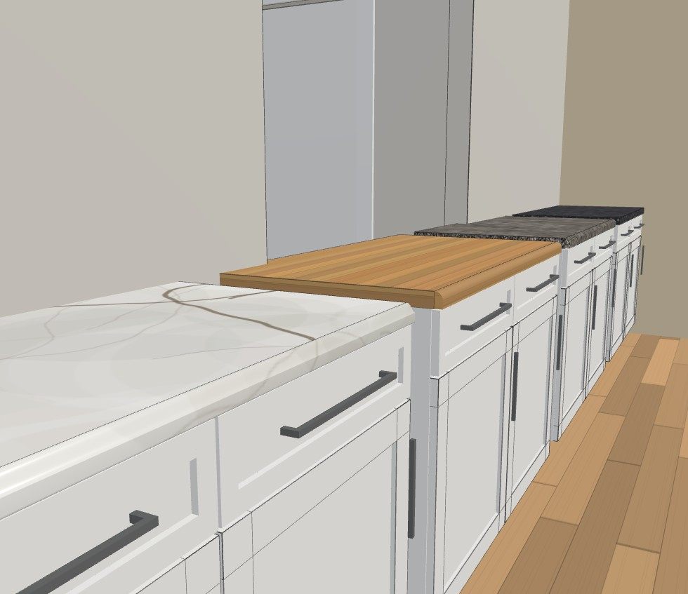
Countertop slabs (My countertop slabs). Arc and ArcRes. Under a counter's Countertop row, Slab draws it as real slabs of stone, quartz or concrete: Calacatta, Calacatta gold, Carrara, Statuario and Nero Marquina marble, Taj Mahal quartzite, soapstone, black granite, white quartz, Calacatta-look quartz and cast concrete. Setting it on one cabinet sets the whole counter it's part of; an island's top is one slab. In 3D and Photo renders the slab is laid along the counter at its real size, with a fine seam where one slab meets the next; polished stone shines under a clear coat. Waterfall turns the slab down the left end, the right end or both, to the floor, with its veins carrying on over the edge. Change this slab… sets the base colour, the vein colour and strength, the size of the pattern, its movement (straight veins to swirling ones), honed or polished, where the first seam falls, and book-matched (each second slab the mirror of the one before, so the veins meet at the seam), with notes on what you might have missed (marble etches; a waterfall needs a mitred corner); Save as My countertop slab… keeps it in the plan and in My library. The estimate counts the slabs at their standard size (about 120" × 65" for marble, 130" × 65" for quartz), from the counter's area and its waterfalls plus a quarter for cuts and matching, in pairs when book-matched, and adds the fabrication and install by the sq ft. Concrete is cast, so it's by the sq ft. The prices are estimates in Canadian dollars: slab prices vary a lot, so pick yours at the stone yard and type its price over. A counter with no slab draws and prices just as before.
Move (M), Duplicate (C), Rotate (Q), Mirror (X) and Delete
Select something first. Move and Duplicate: click a base point, then where it goes (or type a distance); Duplicate keeps making copies until Esc. Rotate: click the centre, then the angle (or type it); tick Rotate a copy to keep the original. Mirror: click two points on the mirror line; tick Keep the original for a mirrored copy. To copy into another plan use Ctrl+C and Ctrl+V (more).
Dormers
Draw ▾ → Dormer (on a sloped roof), then click the roof slope where the dormer's front wall meets it (on the level the roof is on). It stands up out of the roof with a front wall, side walls down to the roof and its own roof, and a window in the front. In the panel: Gable (a small peaked roof) or Shed (one shallow slope, for a wide dormer), its width, front wall height, roof pitch, overhang and window. Its walls take the siding of the wall below and its roof the main roof's finish, and it follows the roof when you change the roof. Move slides it along the slope.
A room in the dormer. A new dormer opens into the room: the main roof is cut under it, and inside it has drywall on its walls, a ceiling under its own roof and jambs round its window, so a bedroom or bonus room in the roof gets its headroom and light. The roof framing is headed off round it (doubled headers at its front and back, doubled rafters each side), its own rafters, ridge, valleys and wall studs go on the framing plan and in the lumber list, and the estimate counts it: its roofing in place of the roof it stands on, its walls, window, insulation, drywall and step flashing. A dormer from before keeps standing on the roof until you tick Opens into the room (cuts the roof under it) in its panel. It has to sit on one slope (not across a hip, valley or ridge) and be at least 2' wide; the panel says if it can't open. A bedroom's dormer window still needs to meet egress: check its size.
The ceiling under a dormer. A dormer that opens into the room opens it in every view: the 3D view, the Render window, exported models for Blender or SketchUp, and sections on the sheets. The room's ceiling under it is cut and lined up to the roof. Over a vaulted ceiling the room gets the dormer's headroom and light. Over a flat ceiling it opens as a light well: a shaft from the ceiling up to the dormer, like a skylight's. That can be built, but it brings light, not headroom, and its window is out of reach, so it can't be a window to climb out of in a fire; the shaft's walls face the cold attic, so they're insulated and air-sealed like outside walls (the estimate counts them). The dormer's panel says which it is. For headroom, give the room a vaulted ceiling that follows the roof. A dormer that opens into the room also has a fascia and soffit under its overhangs and metal flashing across its front and up its sides, in 3D and in the estimate. A 3D print of the house keeps the roof whole.
Skylights
Draw ▾ → Skylight (on a roof), then click the roof where it goes (on the level the roof is on). It cuts the roof and, under a flat ceiling, opens a light shaft down to the ceiling. In the panel: Fixed, Venting (it opens for air) or a Sun tunnel (a small dome and a tube of light for a hall or a bathroom); its width and length up the roof; on a curb or low on the roof deck; a shaft straight down, flared to spread the light, or none under a vaulted ceiling; and its U-value. It follows the roof when the roof changes, and Move slides it. Skylights have their own tags (S1, S2…) in the window schedule, a row each on the NBC 9.36 worksheet against the skylight table, a share of the heat loss, a line in the estimate and a place in the IFC file. They don't count for bedroom egress. Fit one between the rafters where you can (22 1/2" fits 24" spacing): a wider one needs the roof framing headed off, and on a truss roof that is the truss supplier's design. In a stick-framed roof Arc sizes the headers round it, and checks the rafter each side (the trimmers) for its own roof and the headers' ends: doubled when that holds, tripled when it needs it (one more rafter in the takeoff), and a warning to have an engineer size them when even three don't.
Terraces, floor openings, trellises and chimneys
In Draw ▾. Click the corners of the outline (click the first corner again, or press Enter, to finish). A terrace is a cantilevered slab with a parapet or railing; a floor opening cuts the floor, open to the floor below; a trellis is an open pergola; a chimney rises up past the roof.
Open to below. A floor opening takes the floor out: the slab, the joists (framed round it with headers and trimmers) and the subfloor in the estimate stop there, and the room under it opens up to the ceiling above, in 3D, sections and Blender renders. A plan template's "open to below" (over a foyer or a great room) is a real floor opening. On an upper floor, select a room and press Make it open to below to turn it into one. Any edge open to the floor below needs a guard: the Design check flags one without a guard rail or a wall along it, and its Fix adds the rail.
One tall wall. A two-storey room's wall is drawn on each floor. Select the lower one and tick One tall wall up through the floor above: the two are framed and counted as one wall, with studs from this floor to the top of the wall above and that wall's windows framed in it. Past 3 m Arc checks the studs for wind and load; long or engineered studs may be needed. The floor framing notes that the joists hang off the tall wall on a ledger.
3D shapes (push/pull)
Draw ▾ → 3D shape: draw a rectangle, circle or any outline and it becomes a solid. In the 3D view drag its top to change the height, its bottom to lift it, or a side to push it in or out. Corners and edges of the top can be raised for slopes; the panel sets taper, a dome, glass, holes and merging or cutting several shapes.
Engrave or raise a pattern: in the Shape tool's panel set Drawn inside a shape to Engraves it into the top or Raises it from the top, set the depth (0.6 mm is three 0.2 mm print layers: crisp, and it prints in one colour), then draw a rectangle, circle or any outline inside a 3D shape's top: a snowflake, a star, initials, a border. It's cut into the shape (or stands on it) and moves, copies and prints with it; Undo takes it back out. Keep lines at least 0.8 mm wide so a 0.4 mm nozzle can print them. It works on flat tops; on a sloped top it cuts from the lowest corner.
Bevel edges (in the shape's panel) eases the edges where the top meets the sides, like Blender's Bevel tool: type how wide (say 2 mm), then pick Chamfer (a flat 45° cut) or Round (a quarter-round), and tick The bottom edges too if you want them eased as well. It shows in 3D and prints in the STL; holes get the same eased rim, and a tapered or sloped top keeps its bevel. Turned, swept and domed shapes keep their own form, and a bevel too big for its shape is left off (the panel says so). 0 or blank means sharp edges, as before.
Round the corners (in the shape's panel) rounds off the upright corners of the outline, and of its holes, by the radius you type: a tile, a plinth, a phone stand. The plan keeps the corners as drawn for stretching; the 3D view, the plan's outline and the print show them rounded. A corner between short sides takes what radius fits. It goes with a bevel: round the corners, then ease the top edges.
Hollow it out (in the shape's panel) makes a shape a shell with the wall thickness you type, open at the top (a planter, a box, a pot) or closed (hollow inside, to save filament). The floor is as thick as the wall. A tapered or sloped shape keeps its wall even; holes keep their rims. Turned, swept and domed shapes keep their own form. For printing, keep the wall at least two nozzle widths (0.8 mm); a closed hollow wider than about 30 mm needs supports inside or an open top.
Copies in a row or ring (at the bottom of the panel when anything is selected): type how many and the spacing to make a row of copies (fence posts, battlements, a run of cabinets), or how many in all and a radius for a ring (chairs round a table, posts round a gazebo), with the copies turned to face the middle or kept as they are. They are real copies, like Duplicate makes, so each can be changed after; Undo takes them all back.
Type a distance while pushing or pulling: start dragging a face, then type the distance (450, 450mm, 1'6" or 18") and press Enter. The face moves exactly that far, the way you were dragging; a minus sign (-100) sends it the other way. Pulling the middle of a top, = first sets the height itself: =450 makes it 450 tall. The number shows beside the pointer as you type, Backspace takes a character back and Esc stops typing. You can also let go first and type straight after, the way SketchUp does: the push you just made is set to the number.
Section cut in 3D: the Section button in the 3D bar slides a plane through the model to look inside a house, a box or a machine. Pick Across, Along or Level (a plan cut, looking down), drag the slider or type how far in, and Flip to keep the other side. Fill cut faces fills where the plane cuts walls, floors and shapes, so they read as solid. Save the view (Saved views → + Save this view) and the cut is kept with it: a 3D view on a sheet made from that saved view shows the cut, and so does a tour stop added while the cut is on. Off shows the whole model again.
Turn in 3D (in a 3D shape's panel) turns the finished shape any way: ↻ 90° about east–west, north–south or upright, or Turn by any angle about any axis (pick about my own axis and type it as east, north, up, such as 1, 1, 0 for a diagonal). Lay it on a face… asks you to click a face of the shape in 3D, and turns it so that face is down, the way a part is laid on the print bed. A turned shape rests on its base height and stays where it was on the plan, which shows what it covers now; merged and cut parts turn with it, rotating or mirroring it on the plan keeps its turn, and Push/Pull still works on its faces. A turned (lathe) shape can lie on its side. Stand upright again undoes the turn. (Stand it up, below, stands a flat outline on edge; Turn in 3D turns any finished shape.)
Round or chamfer chosen edges: Pick edges in 3D… (under Bevel edges in a 3D shape's panel) lets you click just the edges to ease: a top or bottom edge (click on its rim), or an upright edge (click up a corner). Each click rounds that edge, or chamfers it when the bevel style is Chamfer; click it again to put it back to sharp, and Esc when you're done. The bevel size and style in the panel are used (3 mm round when there isn't one yet). All edges again goes back to the whole top (and bottom). It shows in 3D and prints like any bevel.
Draw on a face, then push it: the Draw on face button in the 3D bar lets you drag a rectangle on a flat face of a 3D shape: its top, its bottom or an upright side (hold Shift for a circle). Let go, then move the mouse to pull it out (green: a boss, a tab, a peg) or push it in (red: a pocket, a slot, a hole) and click, or type a distance and press Enter. It becomes part of the shape, so it moves, turns, prints and separates with it, and Undo takes it back. Draw as many as you like; Esc stops. It works on shapes standing upright as drawn.
Snapping in 3D: Measure, Draw on face and Guides snap like SketchUp's inference: to a corner (Endpoint, green), the middle of an edge (Midpoint), anywhere along an edge (On edge), a guide, and from the last point along the red (east–west), green (north–south) and blue (up) axes, with a dashed line and a label by the pointer. Hold Shift while on an axis to lock it, or press → (red), ← (green) or ↑ (blue); the same arrow again unlocks.
Keys in 3D (with the pointer over the 3D view): P Push/Pull, F Draw on face, S Section cut. While pushing, Tab turns the push round and Esc puts the face back. On a tablet a number pad comes up after a push, to type the distance; Draw on face has a Rectangle / Circle switch. The compass takes N, S, E, W and T from the keyboard.
More on Draw on face: the rectangle starts and ends on snapped corners and edges, and on a top it lines up with the shape's nearest side, so a shape turned on the plan gets a square-on rectangle. While pushing it, type a size instead of a distance to change it: 40x20 for a rectangle, r15 or d30 for a circle. Hole for hardware… in its bar puts a magnet pocket, a heat-set insert, a nut trap, a pin or a screw hole where you click, sized for the hardware at the print scale. It works on turned and stood-up shapes too.
Guides and the tape: Guides in the 3D bar: click two points for a guide line, or click a point, point along an edge or an axis, and type a distance (600, 2') for a guide point that far away, like SketchUp's Tape Measure. Guides are kept in the plan, show as dashed orange lines and small crosses, and everything that snaps in 3D snaps to them. Delete last, Clear all and Hide are in its bar; they don't print or show on sheets.
Prints · Holds · Cost: with 3D shapes selected, small chips under the 3D view say whether they fit the printer's bed and need supports, whether they hold (Engineering's structure check, Hobby's wood checks), and what the filament and print time come to, updating as you change them. Click a chip for the details. Chips in the 3D bar hides or shows them.
Linked copies: Make a linked copy in a 3D shape's panel makes a copy that changes whenever the original does, and the other way round, like a SketchUp component: chair legs, drawer sides, brackets. Each copy keeps its own place, turn, mirror and base height; the shape itself (its size, pushes, pockets, bevels, colour) is shared. Unlink this copy lets one go its own way.
Follow Me: select a drawn path or a room and its panel has Follow Me: pick a profile (crown moulding at the ceiling, baseboard, chair rail, quarter round, a round handrail, a wall cap), set its height, and Run it round the room or along the path. Corners are mitred; round a room it sits on the inside. On a path, Rises to makes it climb, for a stair rail. Select a closed shape with the path and that shape is the profile. The result is a 3D shape: move, copy, print or price it.
Dimensions that move walls: a dimension stuck to walls has a Measures box in its panel. Type a new number and the wall (or door or window) at its far end moves to it, with the walls joined to it stretching and what stands against it coming along; a dimension along a wall from its end makes that wall longer or shorter. Locked walls stay put. Undo puts it back.
History: History in the 3D bar shows your steps by name (Pull the top 450 mm, Pocket 10 mm on the top) on a slider. Drag it back to watch the model go back step by step, press ▶ Play to run it through from the start, or click a step to go there. It works by undo and redo, so going forward again loses nothing; a change made at an earlier step starts a new history from there.
3D tips: the first time you pull a top, push a side, draw a boss or a pocket, ease an edge, turn a shape and so on, a small card says what just happened and what it's called; Show me plays the move again on the shape. Each shows once. Stop these tips ends them; Tips in the 3D bar starts them again.
Make a kit: in the 3D bar or a shape's panel. From the selected shapes (or all of them) Arc numbers the parts in the order they go together, sets parts too big for the bed to print in pieces that peg together, adds up the filament, print time, hardware and cost, and offers Save the build guide (a web page with the parts list, what to buy and the steps, to print or hand out) and Print it.
The solid engine: merging, cutting and overlapping shapes (and the print parts made from them) use Manifold, a free solid engine (Apache 2.0) that always gives closed, watertight results, so printed parts need no patching. It runs inside Arc, offline and on the web, and in the background worker that lays out print plates. A shape it can't take, such as an imported model that isn't closed, is worked out the old way instead.
Stand it up (in a selected shape's panel) stands its outline up on edge, like a sign, a wreath, a star or a cut-out letter: draw it flat on the plan, then stand it up. It reads from the front the way you drew it, its height becomes its Thickness, and any holes go through it. Turn and move it like any shape; stretching it or changing its height stretches the outline. Lay it flat puts it back. When 3D printing, a standing shape prints lying on its back, so it needs no supports.
Lines, text, hatch and dimensions
Text is under Notes on the left tool bar (or press T): click where it goes and type. The drafting tools in Draw ▾: line (L), polyline (P), rectangle, polygon, circle, arc, ellipse, spline, hatch (H), dimension and text (T). Modify ▾ has offset, trim, extend, fillet, scale, array and the rest. The panel sets the line type, weight, colour, lettering and hatch pattern.
Typing points, snaps and guide lines
While a wall, line, polyline or other drawing tool is going, type where the next point goes and press Enter. The text shows in the Command box as you type.
| Type | The next point |
|---|---|
12'6" | That far from the last point, toward the pointer |
10'<45 or @10'<45 | That far at that angle (degrees, counter-clockwise from straight right) |
@12',8' | 12' across and 8' up from the last point (a minus goes left or down: @-3',0) |
30',20' or #30',20' | That spot on the plan, measured from its origin. A wall can start there: pick Wall and type it before clicking. |
Any unit works (@3600mm,0, 2.4m<90); a plain number is in the plan's units.
Which snaps are on. Snap & units ▾ has a switch for each kind of point: ends and corners (F4), midpoints (F5), centres (F6), intersections (F7), the perpendicular, tangent and parallel guides (F10) and line up with ends (F11). F3 turns all object snaps off and on, F8 swaps the angle lock between 90° and free, and F9 turns rounding to the step off and on. Each press says what it did. These keys sit where AutoCAD puts its own (F3 object snap, F8 ortho, F9 snap, F11 tracking).
Guide lines while drawing. From the point you're drawing from, Arc offers:
- Perpendicular (blue): the spot on a nearby wall or line where yours meets it square. The line it squares off to shows dashed.
- Tangent (green): where a line from your point would just touch a circle or arc.
- Parallel (purple): with the angle free (hold Shift, or F8), a line within 3° of an angled wall or line runs exactly parallel to it. Straight across or up the plan, the angle lock already does that.
- Line up with ends (orange): stop level with another wall's or line's end, or with where the shape you're drawing started, so the last side of a polyline closes square.
Levels (floors)
The level bar over the plan picks the floor you're drawing on. + Add level adds a floor above or a basement below, starting with the outside walls, every wall or nothing; Settings renames a level or changes its floor-to-floor height and its wall height. Change the floor-to-floor and the level's walls follow (the floor framing keeps its depth); change the wall height and the floor-to-floor follows. Walls you set to their own height (a guard, a knee wall) only change if you say so. If the floor above is deeper than the room left for it (deeper joists picked on the floor framing sheet), the Design check says so, and its Fix, the floor framing panel or Settings make the level fit. Select items and use the Level section of the panel to copy or move them to another floor. The list also has your detail drawings, under Details.
One floor at a time, on the plan and in 3D. The level picker is the one floor picker: the plan draws that floor and the 3D view follows it. ▼ ▲ beside it (or Page Down / Page Up) go down or up a floor. The switch next to it says how much of the house shows round that floor, and it's saved with the plan:
- This floor: just this floor. The plan shows nothing else, and 3D shows it alone with its roof and ceilings off, so you look down into its rooms.
- + below: this floor with the floors under it in 3D, and the floor below in light gray on the plan to trace over (Arc snaps to its walls).
- Whole house: every floor in 3D; the plan as before, with the floor below in light gray. New plans start here.
The faint floor below can be turned off for good in Preferences (Show the level below in light gray). With several buildings, the arrows go through the floors of the building you're drawing in, and the switch hides when that building has one floor. The same floor and switch are in the 3D view's Layers panel and Ctrl+K ("this floor only", "up a floor").
Buildings: several on one site (an acreage)
One plan can hold several buildings on one site: an acreage's house, shop and guest house, or two houses on one lot. Each building has its own floors, floor heights and ground floor, so a two-storey house can sit beside a one-storey shop with a 14' wall. A plan starts with one building and works exactly as before until you add another.
- Add one: File ▾ → Add a building to this site… (or + Add a building to this site… at the bottom of the level list). Start it from a template or house plan (the garages and shops are in the list), a saved plan file, a copy of the building you're in, or one empty floor. Give it a name, turn it a quarter turn if you like, and set its ground floor height against the first building's (a shop down the slope might be -2'). The first time, Arc also asks for a name for the building already in the plan. The new building's outline then follows the mouse: R turns it a quarter turn and a click puts it there (Esc leaves it 30' east of the others). A plan or template brought in leaves its own lot behind (its property lines and ground shaping) unless you tick Bring its lot too.
- Switch buildings with the Building picker that appears in the level bar. The level list then shows that building's floors, and + Add level adds a floor to it. The other buildings show in gray with their names on the ground floor, to line things up by them.
- The building tools are at the bottom of the Building picker: its name, ground height and services; Move or turn this building (its outline follows the mouse again, every floor goes with it); Connect with a driveway or path; Select the whole building (every floor, ready to move with M or turn with R, and its upper floors go with it); Move the selection to another building (to split a plan where a house and a detached garage were drawn together: select the garage and move it to a new building); and Delete this building. Delete down to one building and the plan is an ordinary one-building plan again.
- Driveways and paths between buildings: Connect with a driveway or path… picks two buildings, a 12' driveway or a 4' path, and gravel, asphalt, concrete or pavers. Arc runs it door to door (garage doors first for a driveway), sloping from one building's floor height to the other's, and shapes the ground along it; drag its points to bend it. It's priced in the site work.
- Shared services: in a building's settings, tick Power, Water and Sewer from the first building (a new building starts with power). The budget's site work gets the trench (about 3' deep for power alone, below frost at about 8' with water or sewer), the feeder cable and a 100 A sub-panel, and the water and sewer lines, measured from the gap between the buildings plus 10' at each end. They show dashed on the ground floor and the site plan, marked P, W and S.
- The site (property lines, ground shaping, paths, driveways, fences and the Site & landscaping layer) belongs to the whole site: it's drawn on the first building's ground floor and shows on every building's ground floor. The first building's ground floor is the site's elevation 0.
- 3D: a second picker beside the floor picker shows the Whole site, The plan's building (it follows the plan), or one building by name; the floor picker then lists that building's floors.
- Budget: Budget ▾ → Takeoff & cost estimate… counts each building on its own and the site work (with lines added by hand and PDF counts) as its own part, lists each one's subtotal, and adds them up to the site total. Showing picks one building's lines. The spreadsheet has a Building column.
- Sheets: Create a standard set starts with one site plan of every building, then each building's own sheets, numbered with the building's number in front (1A-101, 2A-101…) and its name in the title, with elevations and a 3D view of it alone. Room numbers start with the building's number (2-101), and the IFC export has one building each.
- Design check: each building is checked on its own (upper floors, height limits and the building area count its own floors and ground), setbacks are checked for every building, and two buildings closer than 10' are flagged on their ground floors (fire separation).
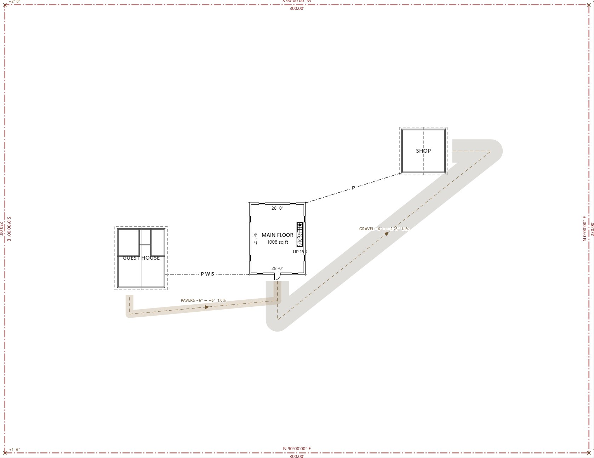
Layers
Every item sits on a layer (walls, doors and windows, furniture, electrical…). In the Layers list under the panel, click a layer to draw on it, the eye to hide it and the lock to stop it being selected; double-click a name to rename it. Select items and use the Layer section of the panel to move them to another layer.
Freeze the layers you don't want to see. The snowflake on a layer freezes it (it shows in place of the count when you point at the layer; on an iPad, tap Quick sets and use the snowflakes there): it's hidden on the plan, in 3D and on pictures, nothing on it can be picked or snapped to, and it stays hidden when you use a quick set, Show everything or the clean floor plan. You can't draw on a frozen layer (new drawing moves to the first layer still showing). Unfreeze all at the top of the list brings every frozen layer back in one click; the snowflake or the eye unfreezes one. If you add something that goes on a frozen layer (a chair on Furniture, say), that layer unfreezes by itself, so new work is never out of sight. Frozen layers are saved with the plan, and undo leaves them frozen. A sheet that picks its own layers still prints them.
Quick sets (the button at the top of Layers, or Layers on the 3D toolbar) show just the layers for a job, in one click:
- Everything: every layer (frozen ones stay frozen).
- Structure only: the bones: walls, doors and windows, stairs, beams and posts (Structural) and roofs.
- Shell: the house closed in, as you see it from outside: the structure and the yard, nothing inside the rooms.
- Finishes: the structure with feature walls and trim, cabinets and fixtures, room names and the yard: no furniture, wiring or notes.
- Wiring, pipes & ducts: the structure with Electrical, Plumbing and Mechanical, for planning the rough-in.
- Furniture off: hides Furniture and Staging & seasonal decor and leaves the rest as it is.
Quick sets change Arc's own layers; layers you made yourself keep their eye (Everything shows them too). Arc Hobby and Arc Engineering have Parts only, Frame only (Engineering) and Sketch lines & text off; Arc Landscape has Yard only, House off and Notes off.
The Floors & layers panel (Layers on the 3D toolbar, under More ▾ when the toolbar is narrow; or Quick sets in the Layers list) has the floor arrows and the switch, the quick sets, the walls-as-built switches and every layer with its eye and snowflake, in one window you can drag out of the way. It's sized for a finger on an iPad and grows with Bigger text.
A clean floor plan for reading: Show ▾ → Clean floor plan shows just the layout (walls, doors, windows, stairs), cabinets and fixtures, furniture, the room names and the outside walls' dimensions: no small labels, notes, areas, floor patterns or warning markers. Electrical, plumbing, mechanical, structure, roofs, the site, text and drafting lines hide, in the plan and the 3D view, until you tap a layer's eye to bring one back. Everything still works as normal: anything you add goes on its own layer, and a hidden layer shows itself when something is added to it. Untick it (or Show everything at the top of Layers) to put every layer back as it was. It's saved with the plan, and printed sheets still show everything.
Design check
With nothing selected, the panel's Design check lists things worth a second look on this level: clearances, door swings, stair sizes, bedroom windows, railings, smoke alarms and more, each with its code section. Click Show to zoom to it, Ignore to hide it, or Note to keep a note with it. Warning triangles mark them on the plan (purple ones are your own project specs). The checks are a guide: your building department has the final say.
What the Design check counts. Blocks on a hidden layer still count: a smoke alarm on a hidden Electrical layer, or a fan on a hidden Mechanical layer, isn't reported missing. When a hidden layer holds walls, rooms, doors and windows, stairs or roofs, the check says so at the top, since it can't see them. Every range hood block is a range hood, the plaster, metal-strapped and wood mantel hoods too; type the fan insert's rated flow in its panel (Arc takes 600 cfm until you do). Under the NBC a hood over about 300 cfm (142 L/s) gets the make-up air check (9.32.3.8). Wall cabinets, a wall hood or a range with no wall behind them (along an open side of a kitchen) are flagged. Bedroom checks (escape windows, smoke alarms) go to bedrooms only: Guest bedroom is one, Guest bath and Guest walk-in closet aren't. In Edmonton, the grading check uses the City's lot grading numbers: the ground falls at least 5% for the first 2 m from the house, then at least 1.5%; elsewhere it asks for 6″ in the first 10′.
How many warnings a plan shows. The Warnings picker at the top of the Design check (also in Project settings, and Ctrl+K → "warnings") is saved with each plan: All warnings; Safety only (stairs, guards and railings, escape windows, smoke and CO alarms, radon, fire separation and exits, pool barriers, buried lines, and structure that won't hold; the clearances and planning tips wait); or Off while drawing. With Safety only or Off, a small N warnings · Show note at the bottom says how many are waiting; click it to pick a level, and they all show at once. A new house, addition or renovation starts with All; a plan started as New interior design or Decorate a room starts with Off. Plans from before this setting show All. The permit papers and the code summary sheet always list every warning, whatever the level. (Don't check codes for this project still drops the code warnings for a historic or existing building.)
Checks & analysis: only what you ask for. The Checks & analysis ▾ drop-down at the top of the Design check (also in Project settings and Review ▾ → Checks & analysis…) has a tick for each extra check or calculation, saved with the plan:
- Code checks: the code warnings, the Code summary sheet and its line in the Permit-set check.
- Structure checks: spans, braced walls and tall walls.
- Renovation hazards: what to test for before opening up an older house (asbestos, lead paint, old wiring), from the year it was built.
- Energy (NBC 9.36 and tiers): the 9.36 worksheet, the energy performance tier, and their lines in the code summary and the Permit-set check.
- Heat loss, heating and cooling: Heat loss, room by room and Budget ▾ Heating & cooling.
- Sun study: the Sun & shadow study sheet in a new sheet set.
- Planning tips: clearances, door swings and layout tips while you draw.
Anything not ticked shows nowhere: not in the menus, the panel, the Permit-set check, the warnings or a new sheet set. Ctrl+K still finds it, marked (turn it on): pick it and it's ticked and opened. A new Arc plan starts with code, structure and hazards ticked; ArcRes adds planning tips. Plans from before this drop-down show everything, as they always did. Safety warnings are not ticks: stairs, guards, escape windows, alarms, radon, fire and structure that won't hold follow the Warnings level above, whatever is ticked. Sheets you already made are never taken away; to add the sun study to a set you have, Ctrl+K → "sun study".
Tall freestanding furniture (a bookcase, a wardrobe, a dresser, a TV on a stand) gets a note to anchor it to the wall with an anti-tip strap into a stud.
An indoor golf simulator
Pick Blocks (B) → Game room for the golf pieces: the enclosure (8, 10 or 12 ft screen with side nets, or a wide 16:9 one), an impact screen on its own frame, the hitting mat, and three kinds of launch monitor: a radar behind the golfer, a camera beside the ball, or a camera on the ceiling. The projector is under Living. Or press Ctrl+K and type golf.
Put the enclosure's back near a wall, then the mat in front of it with its arrow pointing at the screen. Select the mat to set Who hits (right-handed, left-handed, or both with the ball in the middle), the Tallest golfer and the Clubs (every club, or irons only). The dashed circle round the golfer is the swing.
The Design check then looks at the room the way a golfer would:
- The swing: a circle about 7′ (2.1 m) across round the golfer, clear of walls, posts and furniture. 9′ is comfortable.
- The ceiling over the swing, and anything hanging in it: a beam, a duct, a light, the projector. A driver needs about 3′4″ more than the golfer's height (9′4″ for a 6 ft golfer); makers ask for 9′ to 10′ (2.7 to 3 m). Irons need about 2′ over the golfer (8′).
- The screen: the ball about 10′ (3 m) from it, 8′ at the least, lined up with its middle; 4′ to 7′ behind the ball; 12″ to 16″ (300 to 400 mm) clear behind the screen.
- The launch monitor: a radar 6′ to 8′ straight behind the ball (about 10′ for larger units), with at least 8′ of ball flight, so the room is about 16′ deep or more; a camera 1′ to 2′ beside the ball, across from the golfer (it moves across for a left-handed golfer); a ceiling camera 9′ to 10′ up, about 3′6″ toward the screen from the ball.
- The projector: whether its picture fills the screen. Throw ratio × picture width is how far it sits from the screen (0.7 × 10′ = 7′).
Most warnings have a Fix: move the mat to a spot where the swing and the ceiling both pass (its launch monitor goes with it), move it back from the screen, line it up, move the screen out from the wall, put a launch monitor in its place, or move the projector so the picture fits.
A room that works: 14′ × 20′ (4.3 × 6.1 m) with a 10′ ceiling lets right- and left-handed golfers both hit from the middle. 10′ wide is the least, with the golfer off to one side; 15′ deep is the least with a camera unit.
In a basement, the ceiling is usually the hard part. Fix the cheap things first: move the lowest duct up between the joists, pick a hitting spot between beams and ducts, choose a camera unit (no extra depth needed), or plan for irons only. Moving a beam or a post, cutting joists or lowering the floor needs an engineer and a building permit.
The shopping list prices each piece (a 10 ft enclosure, a mat, a radar, a camera unit, a ceiling camera, a projector) at typical Canadian prices, in US or UK money if that's your region. They're estimates: check the store.
Room to play: pool, ping-pong, darts and more
Each game in Blocks → Game room shows the room it needs round it as a dashed purple area on the plan (turn it off in Show ▾ → Play space round games; it isn't printed). The Design check says when a wall or furniture is inside it, and Fix → Move it to fit slides the game to a spot that clears.
| Game | Room it needs |
|---|---|
| Pool table | About 58″ (1.47 m) all round for standard cues. An 8′ table wants a room about 13′ × 17′. |
| Ping-pong | 4′ (1.2 m) behind each end, 3′ (0.9 m) at the sides: a room about 17′ × 11′ (5.2 × 3.4 m) at least. |
| Darts | Bull 5′8″ (1.73 m) off the floor. Throw line 7′9¼″ (2.37 m) from the board's face for steel tip, 8′ (2.44 m) for soft tip; pick which on the board. A lane 3′ wide from the board to 2′ past the line, with no furniture, walkway or door swinging across it. Add a Dart throw line and the check says if it's in the right place. |
| Shuffleboard | 2′ to 3′ at each end, and about 18″ along one side (the other can be against a wall). A 12′ table needs a space about 16′ × 6′. |
| Air hockey | 3′ (0.9 m) at each end where the players stand. |
| Foosball | 3′6″ on each players' side: the rods stick out about 6″. |
| Arcade game, pinball | 3′ in front to stand and play, and a plug nearby. A pinball machine weighs about 120 kg: plan the trip down the stairs. |
| Card or poker table | 36″ from the table's edge to pull a chair out and sit; 42″ to 48″ where people walk behind the players. |
| Bar and stools | About 24″ for each stool along the bar (26″ to 30″ is comfier), and 36″ in front for the stools; 44″ lets people walk behind them. |
These are comfortable playing sizes from the makers and the games' own rules, not building code.
Converting a drawing to walls, stairs, cabinets and fixtures
File ▾ → Turn a drawing into walls… finds the walls, doors and windows in an imported DXF, DWG or CAD-made PDF, or in a scanned plan that's been scaled. From a CAD drawing it also finds stairs (a run of evenly spaced riser lines; the "UP 8R" note gives the way up and the riser count), cabinets and appliances (the counter line 24" off a wall for base cabinets, 12" for wall cabinets, split by the lines across it; a DW, F, W or D note, three or more burner circles or a sink outline name the dishwasher, fridge, washer, dryer, range or sink base; an oval basin makes a vanity) and bathroom, laundry and mechanical fixtures (a toilet's oval and tank, a tub's rectangle with the oval inside, a shower's square with its note or diagonals, a pedestal sink, washer and dryer, water heater and furnace by their notes). Green bands are walls, blue are doors, teal are windows, orange a stair, purple a cabinet or appliance, plum a fixture: click or tap any you don't want, then create them. Everything made is a real wall, stair or block, so you can move, resize or change any of it afterwards, and one Undo takes the whole conversion back. A stair marked DN on an upper floor is the floor below's stair seen from above, so it starts left out. Scans give walls only.
Converting a plan: a checklist
- Get the drawing in. File ▾ → DXF / DWG / room scan… (or PDF plan, then turn into walls… for a PDF made by a CAD program; a scan or photo goes in through Plot plan or survey… and only gives walls). Pick the drawing's units when asked; leave "show in black" ticked. A big drawing is read in the background with a progress box (and Cancel). When the sheet holds several drawings (a main floor, a foundation plan, a second floor, elevations), Bring in offers each one by its title and size, floor plans first, or everything on the sheet: pick the floor you want and only its lines come in, so there's nothing to drag a box round or delete.
- Check the scale. Hover a known length (a door, a dimension string) and read the Size box, or measure it with Measure. If it's off, undo and import again with the right units.
- Pick one floor. If you brought in just one drawing, skip this. Otherwise drag a box round the one you want (left to right, fully inside) so only its lines are selected; the conversion uses the selection.
- Choose the level. In the Level bar at the top, pick (or add) the floor this plan is for, so the walls land on the right storey.
- Convert. File ▾ → Turn a drawing into walls…. The panel shows how many walls, doors, windows, stairs, cabinets and fixtures were found and which layers the walls came from; tick or untick layers if walls were missed or notes were taken for walls.
- Review on the plan. Click or tap anything you don't want (it turns grey); click again to bring it back. Check the stair's UP label is at the bottom end, that cabinets sit against the right wall, and that nothing was found in a dimension string or a title block.
- Set the wall height and leave "Round thicknesses" ticked unless the drawing's walls are unusual sizes. Press Create (or Enter).
- Tidy up. Select a converted stair and check its risers and width in the panel; drag any cabinet or fixture that landed a little off; add doors and windows the drawing showed only as notes. The traced drawing is hidden on its own layers (Layers panel) if you need to look back at it.
- Repeat for each floor, then look at it in 3D.
5. Decorating: palettes, styles and decor
Arc can paint and dress rooms the way a decorator would: pick a palette and click a room, restyle the whole house with a style package, and furnish it from the decor library. Everything stays editable, and Ctrl+Z takes back each step.
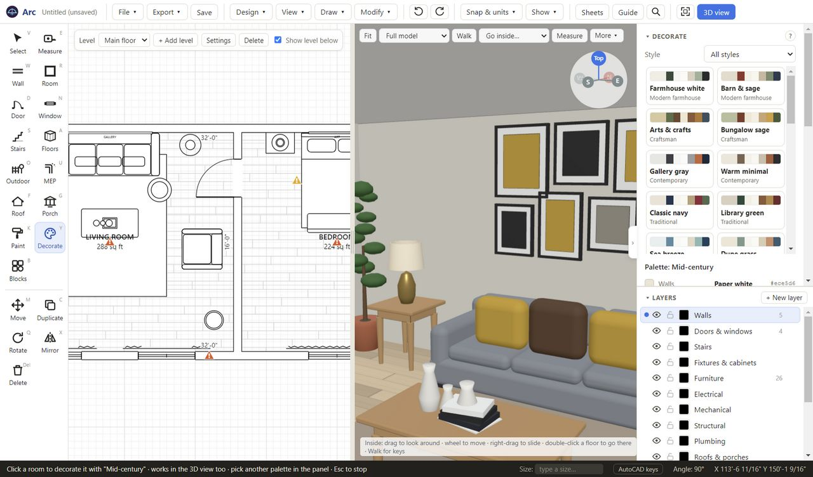
Colour palettes
Open Finishes on the tool bar and pick Decorate (or press Y). The panel shows 32 palettes, two or more for each of the 16 styles; the Style list narrows them down. Each palette has seven colours, and each has a job:
| Colour | Where it goes |
|---|---|
| Walls | Every wall face in the room |
| Accent wall | One wall: the longest stretch with the fewest doors and windows |
| Trim & baseboards | Door and window casings in those walls, and the room's baseboards |
| Ceiling | The room's ceiling |
| Curtains & fabrics | Curtains, sheers, Roman shades and poufs in the room |
| Pillows & art, Throws & accents | Throw pillows, blankets, framed and canvas art, bedding, and a softened version on rugs |
Untick any of Walls, Accent wall, Trim, Ceiling or Decor to leave that part alone. Then click a room on the plan, or a floor or wall in the 3D view. Every room on this level and Whole house do many rooms at once, and Clear this level takes the palette paint off again.
Each side of a wall is painted on its own, and a long wall that faces several rooms gets each room's colour on its own stretch. Under the palette the panel lists each colour's name and code, and notes how they read together: trim that will disappear into the walls, an accent that's too close to the walls to show, or a strong colour that will look stronger on four walls than on a chip.
Making your own palette
- From a photo…: choose a picture of a room you love, a rug, a painting or a fabric. Arc finds its main colours and places them: the softest light colour on the walls, the lightest on the trim and ceiling, the strongest on the accent wall. Click any of the colours it found to use it as the accent instead.
- From one colour…: pick one colour and a harmony (complementary, analogous, triadic, split complementary or monochrome). Walls come out soft, the accent deeper, trim and ceiling near white.
- Edit a copy of this one…: change any colour of the palette you're looking at.
In each, every colour has a picker and a name box, so you can type the paint names or codes from a brand's fan deck. Save palette keeps it under My palettes on this computer, and it is saved with each plan you use it in. The × on a palette card deletes it.
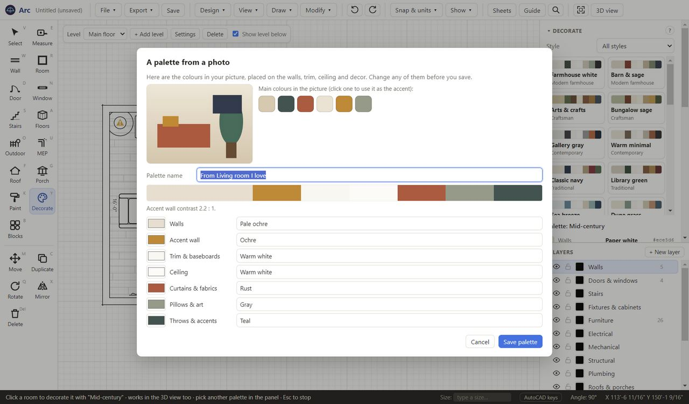
Style packages
Design ▾ → Style packs… restyles the whole house in one go: siding, roof and trim, cabinets, counters and appliances, floors and baseboards, porch columns, and now the inside paint from the style's palette. There are 16: Modern farmhouse, Craftsman, Contemporary, Traditional, Coastal, Scandinavian, Industrial, Mediterranean, Mid-century modern, Japandi, Bohemian, Transitional, Rustic / lodge, French country, Art deco and Minimalist. Untick any part you want to keep as it is. New things you add afterwards follow the style too.
Inside, each style also sets:
- Floors that suit each room. Bathrooms, the kitchen, the laundry and the mud room get the style's tile; a room named for a living space as well (an open "Great room / kitchen", a "Bedroom / ensuite") gets the main floor. A gym or fitness room gets rubber, a basement gets vinyl plank in the wood's colour (hardwood doesn't go on a slab), and a polished-concrete style uses a concrete-look vinyl plank upstairs. Garages, mechanical rooms, storage and unfinished rooms are left as they are, floor and paint.
- Light fittings, mirrors, sinks, tubs, stools, sofas and furniture wood: pendants, chandeliers, sconces, mirrors and tub fillers in the style's metal; its kitchen sink (farmhouse apron, undermount or workstation), shower (glass door or curbless walk-in) and freestanding tub colour; stool, sofa and bed finishes; and floating or legged vanities for the looks that have them.
- Tile: its kitchen backsplash behind every run of counters, and tub and shower surrounds to the ceiling with a 4" splash behind each vanity, on every floor (each replaces the same kind of tile put there before).
- Built-ins and mantels (bookcases, closets, the fireplace mantel) take the cabinets' finish, and panel-ready appliances take the cabinets' colour.
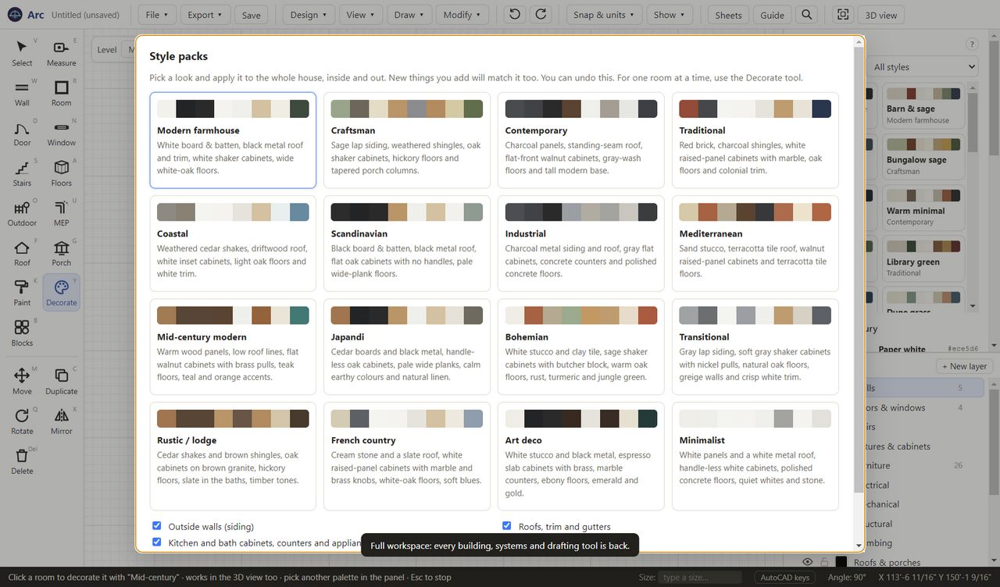
Exterior looks. Design ▾ → Exterior looks… does just the outside, in one click: Modern farmhouse (white board & batten, black window trim, corner boards), Traditional colonial (white lap siding, black shutters), Craftsman (sage siding, wide trim, stone along the bottom), Coastal cottage, Mountain lodge, Contemporary and Mediterranean. The siding goes on every outside wall, and the trim, shutters, corner boards and stone are fitted round each wall's own windows and doors, on the Feature walls & trim layer and in the takeoff. Change any wall afterwards in its panel or with Work on this face in 3D; undo takes the whole look back in one step.
Design options (A, B, C)
To try different versions of the design in one file (a bigger kitchen, another layout, a different look): Design ▾ → Design options (A, B, C)… → Make Option B from this plan. The plan as it was is kept as Option A, and a copy comes onto the plan as Option B to change. The window lists every option with a note and its estimate; Show it brings that option onto the plan (the one you leave is kept as it is), and Compare shows it next to the option showing, side by side or with a wipe, in 3D or on the plan, ready to save for the client. Each option is its own drawing (walls, rooms, furniture, floors); the project, sheets and prices are shared. Options are saved in the plan file. Undo starts again after switching options.
Each option has its own budget lines. Costs you add by hand to the estimate (an allowance, a bought part, a hot tub) and quantities you type over counted ones belong to the option showing, so Option A and Option B add up separately and the Design options window shows each one's own total. An option kept before Arc 0.71 starts with the lines showing when you first switch to it.
Tile: backsplashes, bathrooms and floors
Design ▾ → Tile: backsplash & bathrooms… tiles a kitchen backsplash (between the counters and the upper cabinets, around windows, to the ceiling behind the range if you like), a tub surround, a shower, a vanity wall or a wainscot in one go. Choose the look (26 ceramics, porcelains, stones, glass, zellige and more), the size, the pattern (stacked, brick, ⅓ offset, vertical stack, herringbone, double herringbone, basketweave, chevron or diagonal; hexagons, penny rounds, arabesques and other shaped tiles lay in their own pattern), the grout colour and joint, and an edge (bullnose, a metal edge in brushed, black or brass, or a pencil liner). In Design ▾ → Wall design the Tile kit draws a tile area, a band or a niche on any wall, and a room's floor set to tile gets the same chooser in the panel. The 3D shows the pattern with its grout lines.
The takeoff counts it the way you buy it: boxes of tile (by the size's coverage, with waste), bags of thinset and grout, backer board, waterproofing in wet areas, edge trim in feet and niches. Every quantity in the estimate can be changed (see below), so an extra box for breakage or a different grout count is one click.
More patterns and any colour. Patterns include Versailles (a French 3-piece pattern of oblongs and squares on a grid of half tiles: 12" × 24" gives 12 × 24, 12 × 12 and 6 × 12 pieces) and Hopscotch or pinwheel (each square with a half-size square at its corner). Colour gives any tile any colour (slate grey, a beige vinyl…); The tile's own goes back to its look's colour.
Basketweave, double herringbone, arabesque and borders.
- Basketweave: oblong tiles side by side in square blocks, each block turned from the next. 3" × 6" or 12" × 24" gives pairs; 2" × 8" gives fours. Square tile can't make blocks, so it shows as a grid. About 12% extra for cuts.
- Double herringbone: herringbone with the tiles in pairs. Looks best with long, thin tile (2" × 8", 3" × 12"). About 15% extra.
- Arabesque (lantern): a tile shape, in white or blue, 4" × 5" or 6" × 7½". The lanterns fit into each other in their own pattern. About 15% extra, as the edges need cutting.
- More looks (after the older ones, which look just as they did): large-format slabs (48" × 96" porcelain panels in a Calacatta or Statuario look, or concrete, with hairline joints), terrazzo (white, blush or charcoal, with chips of stone), fluted (ribbed) tile, kit-kat finger tile, more zellige colours, picket tile (long, with pointed ends that nest), black and terracotta hexagons, green penny round, and pre-cut chevron in marble or an oak look. Picket and chevron need about 15% extra for cuts.
- Finish: how shiny the tile is in 3D and Photo renders: the tile's own (glazed tile shines, the others don't), Matte, Satin or Glossy.
- My tile: Save as My tile… names the tile design you've set up (its look, size, layout, colour, grout colour and width, and finish) and keeps it in the plan and in My library. Its My tile list lays one again anywhere: a backsplash, a shower wall or a floor, keeping that spot's own edge trim and border.
- Border: in the room's panel, Border lays one or two rows of the tile round the walls, with the pattern inside, like a picture frame. It's a shade darker (or lighter on dark tile) unless you pick a Border colour. It shows in 3D and on the plan (its rows, a mitre at each corner and a joint every tile length), the swatch shows one corner, and the budget counts the border tile on its own line. Wall tile can have one too: pick Border on the wall face designer's Tile tab, and it runs round the tile's edges and round any window in it, but not along the joins where the tile steps round the window. Square-edged tile only (not hexagons, pennies, fish scales, mosaics or arabesques).
The decor library
Six new categories in the Blocks library (B), and in search (Ctrl+K). There's also Outdoor living: chaise lounges, an outdoor sofa and lounge chairs, an outdoor dining set, a round fire pit and a linear fire table, a market umbrella, a hot tub and a kayak, with cushions and canopies in a second colour a palette can set.
| Category | Pieces |
|---|---|
| Window treatments | Curtain panels on a rod, sheer curtains, Roman shade, roller blind, vertical blinds (patio doors and wide windows), horizontal blinds (1" and 2" slats), plantation shutters |
| Lamps | Floor lamp, tripod lamp, ceramic and glass table lamps, wall sconce, globe, drum and cluster pendants, picture light |
| Wall decor | Framed art, a seven-frame gallery wall, canvas art, round and arched mirrors, styled floating shelves, wall clock |
| Indoor plants | Fiddle leaf fig, snake plant, monstera, olive tree, hanging plant, small table plant, floor vase with pampas grass |
| Pillows, throws & accents | Throw pillows (2, 3 or 5), folded throw, pouf, woven basket, vases, books, candles |
| Wall panels & trim | Wainscoting, board & batten, picture frame moulding, crown moulding, chair rail |
Wall pieces (curtains, art, mirrors, shelves, panelling) turn to sit against the nearest wall. Table pieces (lamps, vases, books, candles) start at table height; change Off the floor to set them on a dresser or shelf. Every decor piece takes any colour from its row of swatches (the rainbow swatch is any colour at all), and pillows and art have a second colour. Decorate's palettes colour them too.
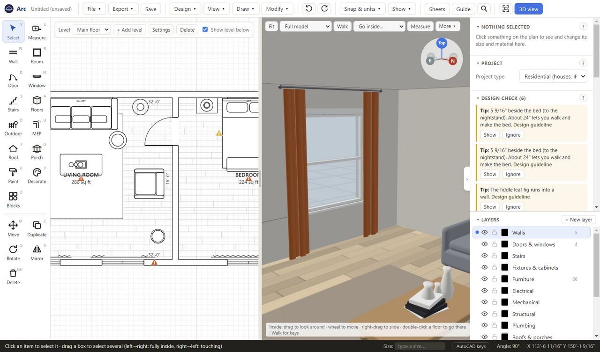
Luxury kitchen, spa bath and statement lighting
Four more groups in the Blocks library (B) of Arc and ArcRes, for a custom high-end home, and in search (Ctrl+K: try steam, sauna, chandelier or lantern). Arc Landscape has the outdoor lanterns. Each piece comes in real sizes, with its finishes and choices in the panel, a starting price in the estimate (Canadian dollars first, through Preferences → Prices and money), and a Good to know note when it's selected: what it needs (a circuit, a water line, a vapour-proof enclosure) and the clearances to ask about.
| Group | Pieces |
|---|---|
| Luxury kitchen | Built-in coffee machine, warming drawer, steam oven and speed oven (alone, over a wall oven or over a warming drawer), full-height wine column, pro range 36" to 60" with a griddle, char grill, both or a French top, workstation sink with a ledge, board, colander and rack (undermount or apron front), scullery sink with drainboard, butler's pantry with glass uppers, appliance pantry with pocket doors, plaster, metal-strapped and wood mantel hoods, refrigerator drawers, 42" or 48" built-in fridge |
| Spa bath | Steam shower with a bench and a sealed, sloped ceiling, curbless shower with glass panels, wet room (a tub in the shower), barrel sauna (electric or wood heater, with a porch), indoor sauna room, bidet, smart toilet (floor or wall-hung), vessel sink (round, square or carved stone), trough sink, heated towel rail, drop-in tub with a stone deck, sit-down makeup vanity, linen tower, cold plunge tub, deep soaking tub |
| Statement lighting | Linear, tiered crystal, ring, sputnik, orb and candle chandeliers, lantern pendant, a cascade of glass pendants for a stair hall, candle, globe and swing-arm sconces, a vanity light, a pair of bath sconces beside the mirror, a hardwired picture light and a cove light (LED strip) |
| Outdoor lanterns | Carriage lantern for the wall, hanging porch lantern, up-and-down wall light, gooseneck barn light, pillar or post lantern |
The lights count in Lighting study by their Light output (bigger ones give more: a 60" linear chandelier more than a 36" one; type your fixture's own lumens to change it) and in the electrical plan as lights. A hanging light's Ceiling height sets how long its stem is. The pro range, steam and speed ovens, coffee machine, built-in fridge, wine column, refrigerator drawers, steam generator, sauna heater and cold plunge chiller each get a circuit of their own in the electrical plan. The plumbing summary counts the new sinks, toilets, bidet, showers and tubs (a wet room as a tub and a shower, a smart toilet as a toilet) and the built-in fridge's water line.
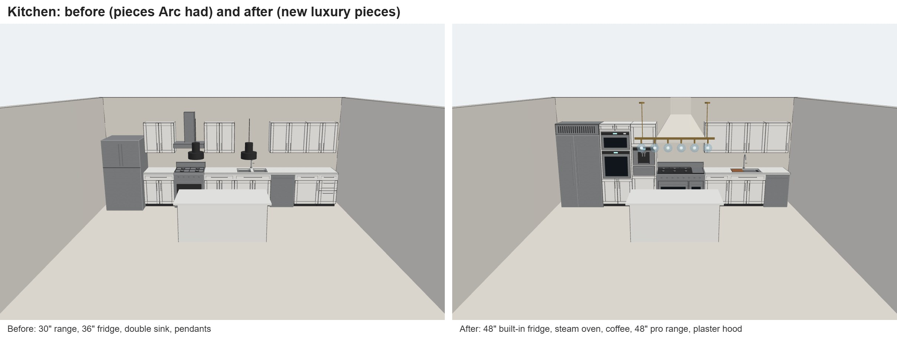
A tiled shower you draw yourself
In Arc and ArcRes, Blocks (B) → Spa bath → Tiled shower (draw your own): click one corner and then the opposite one (or type a size like 60x36 and click). Its back goes on the far side from the way in; R turns it before you draw. In its panel pick the Walls round it (an alcove, a corner or open both ends), Curbless or a curb, the Drain (a linear drain along the back wall or at the way in, or a centre drain), the Slope, a Bench, one or two Niches, the Glass (a fixed panel and a door, fixed glass with an open way in, or a door only), the wall and floor tile, and a sheet or liquid waterproofing membrane. The plan shows the curb, the glass and the door's swing, the drain, the bench and arrows down to the drain with the slope; 3D shows the sloped floor, the tile, the niches, the bench and the glass.
The panel adds up the tile (floor and walls), the membrane (floor, walls, bench, niches and curb) and the glass, and checks the shower against the plan's code: in Canada, safety glass (NBC 9.6.1.4); the NBC and the plumbing code set no slope, so Arc gives the tile trade's 2% (¼" a foot) as advice. In the US the IRC's slope of ¼" to ½" a foot and curb of 2" to 9" above the drain (P2709.1), a shower at least 900 sq in and 30" each way with a 22" way in (P2708.1). A curbless shower tells you how far to set the floor down; a centre drain warns when its short sides get too steep or the floor tile is too big to fold four ways. The estimate gets the tile with its thinset, grout and the Waterproofing membrane line, the drain, the valve, the sloped mortar bed, the curb or the set-down floor, the bench, the niches and the glass.
Millwork, wine and bar, fine furniture, and outdoor rooms
Six more groups in the Blocks library (B) of Arc and ArcRes, for the rest of a custom home, inside and out. Search finds them too (Ctrl+K: try library, wine, canopy bed, cupola or pergola). Arc Landscape has the outdoor rooms and the entry and garden accents. Like the luxury kitchen pieces, each comes in real sizes with its finishes and choices in the panel, a starting price in the estimate (Canadian dollars first), and a Good to know note when it's selected.
| Group | Pieces |
|---|---|
| Millwork | Full-height panelled wall (flat, raised, picture-frame or grid), fluted or reeded panel, built-up crown for the top of a built-in, library wall with a rolling ladder, window seat nook with storage and bookcases, mudroom bench with cubbies and hooks, butler's pantry run with a sink and wine fridge, floating vanity shelf, wall niche (arched or square, lit), fireplace built-ins |
| Wine & bar | Wood wine racking (cubbies, a lit display row or case bins), a metal peg wall with the labels forward, racking with a tasting arch, a glass wine room front with its door, back bar with lit shelves, bar sink with a glass rinser, beverage fridge and ice maker, tasting table (on a barrel, a pedestal or steel legs), hanging stemware rack, wine cellar cooling unit |
| Fine furniture | Upholstered, panel (including sleigh), canopy and platform beds; benches; console and sofa tables; counter and bar stools (upholstered, wood and metal); chaise longue; daybed; curved sofa; U-shaped sectional; executive or writing desk and desk chair; nightstands and dressers by style; live-edge, pedestal and trestle dining tables; upholstered and wood dining chairs; accent chairs; an étagère |
| Exterior character | Porch post on a stone base, timber gable truss, timber knee brace, corbels, gable vents and gable accents, shutters by style (louvred, panel, board and batten, Bahama), chimney cap and chimney pots, cupola with a weathervane, door surround with a pediment, door canopy on brackets, corner quoins |
| Entry & garden accents | Address plaque and house numbers (type the number in Label), tall entry planters, a garden urn on a pedestal, a rain chain; and in Outdoor lanterns, a craftsman wall lantern and a gas lantern |
| Outdoor rooms | Custom timber pergola (open rafters, slats, louvres or a clear roof, on its own or against the house), timber pavilion, outdoor kitchen pieces that line up in a run (built-in grill, side burner or griddle, fridge or kegerator, sink or bar centre, pizza oven, raised bar counter), round or square fire table, fire bowl, water feature, outdoor TV cabinet |
The bar sink, the butler's pantry run and the outdoor kitchen sink count in the plumbing summary; the wine cellar cooling unit, beverage fridge, outdoor fridge, fountain pump and outdoor TV get a circuit of their own in the electrical plan; the two lanterns count in the Lighting study.
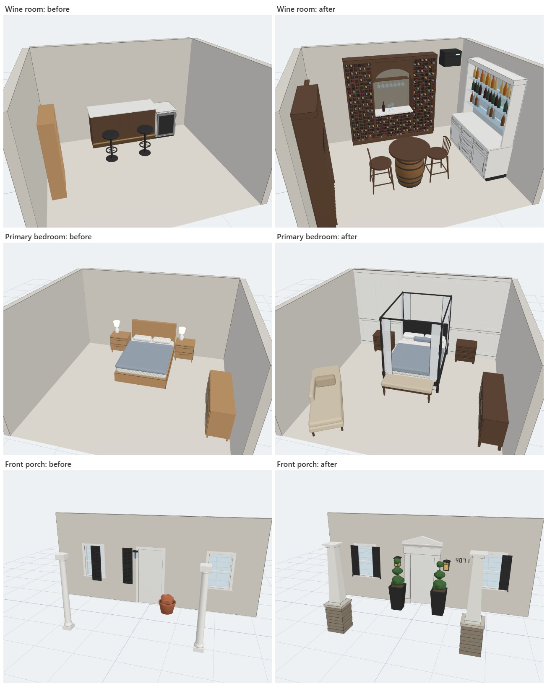
Finish a basement: an office with a 3D printer, and a home gym
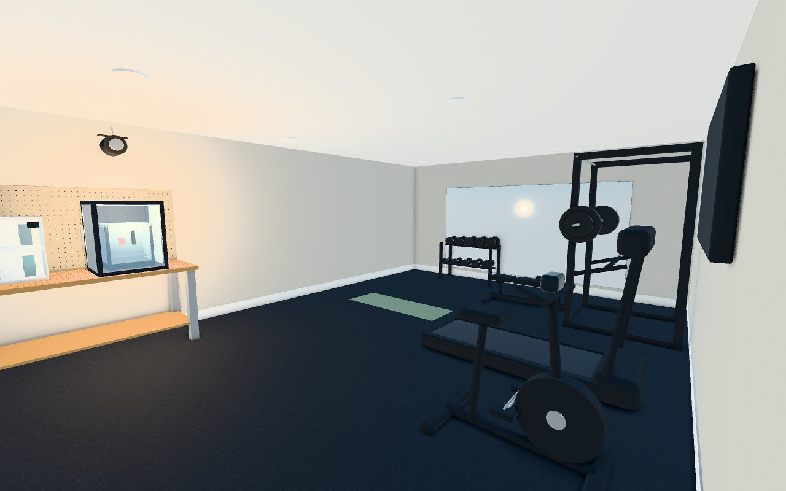
- Rooms. Draw or find the office, the gym and the bath (Rooms, R), and name them: a room named "gym" or "fitness" gets rubber flooring from a style package, and one named "storage" or "mechanical" is left alone.
- The gym. From Blocks → Fitness: the treadmill and bike facing a TV, the power rack against a wall with the bench in front, the dumbbell rack, a yoga mat. For the floor, Floors (A) → Rubber (gym), 24" tiles. For the mirror wall, select the wall → ✎ Work on this face in 3D → Start from a design… → Mirror wall (home gym), or place Gym wall mirror panels.
- The 3D printer. A bench or desk on an outside wall (so the exhaust has a short way out), the printer enclosure on it (set its height to the bench top, 36" for a workbench), the 3D printer inside it at the same height plus 1", and the filament dry box beside it.
- The exhaust. Fumes from printing (ABS, ASA, resin) go outside: the enclosure's 4" port, an inline duct fan up near the ceiling, a round duct to the wall, and an exhaust hood on the outside face of the wall, above the ground outside (in a basement, high on the foundation wall or through the rim joist). They're on the Mechanical layer and in the takeoff; check the hole through a foundation wall with your builder.
- See it. Turn on the Mechanical and Electrical layers (or leave Show light fittings, feature walls and equipment ticked in Render…), stand the camera in the room, and render: inside rooms the render uses the indoor look.
Design this room for me
Design ▾ → Design this room for me… (also on a selected room's panel, and in the Decorate tool) suggests three furniture arrangements for a room. Pick the room, the kind of room (living or family room, bedroom, kids' bedroom, nursery, dining room, home office; Arc guesses it from the name) and a style for the fabrics and woods. Each arrangement is scored for comfort, and the best is marked ★ Most comfortable. The notes under each picture say why:
- walkways and clearances, from the same rules as the Design check (room beside a bed, in front of a dresser, behind a desk chair)
- doors that swing and open clear, and windows not blocked by tall pieces
- living rooms: the TV 7'–12' from the sofa, seats close enough to talk, the rug under the front legs
- bedrooms: the bed on a solid wall, not under a window, with room to walk round it
- dining rooms: 36" (better 42") round the table to pull out chairs
- offices: a view of the door, and daylight from the side rather than behind the screen
In each picture the blue edge is the front of a piece and the dashed squares are door swings. Use this arrangement places the pieces (sofa, tables, lamps, rug, plants…) in the room in the chosen style, coloured from the room's palette if you've decorated it. Move anything afterwards; running it again replaces only the suggested pieces. With the 3D view open it shows that floor on its own, roof and ceilings off, and looks down into the room (pick Whole house on the level bar or in the 3D floor list for every floor again).
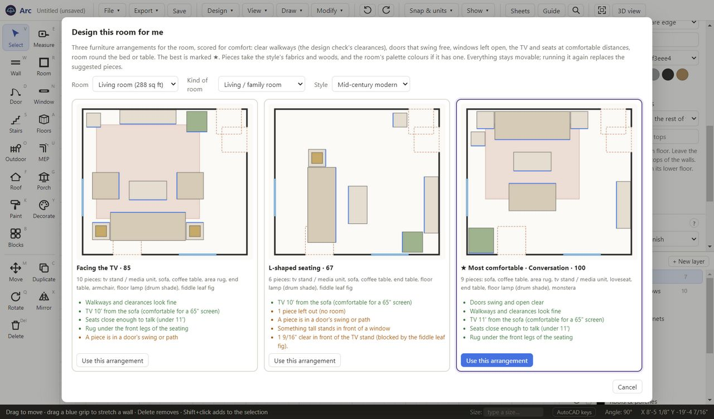
Shopping list & budget
Budget ▾ → Shopping list & budget… works out everything to buy from the plan: paint by the gallon (two coats, from the painted wall area less doors and windows, with ceiling and trim paint), wallpaper by the roll, flooring and wall finishes by the square foot with 10% for cuts, baseboard and panelling by the foot, and each piece of furniture, lighting, window treatment, decor and plant. Show the whole plan, one level, or one room; tick Include kitchen, bath and built-ins for those too.
Prices start as rough retail figures. Type your own in Each, paste a product link (the ↗ button opens it in your browser), change a quantity, and tick items off as you buy them. Set a Budget and Tax %: the bar shows the total against the budget, with what's bought in dark green. A selected piece of furniture can carry its own Price and Link in its panel. Save as spreadsheet (CSV) opens in Excel, Numbers or Google Sheets. Everything you type is saved with the plan.
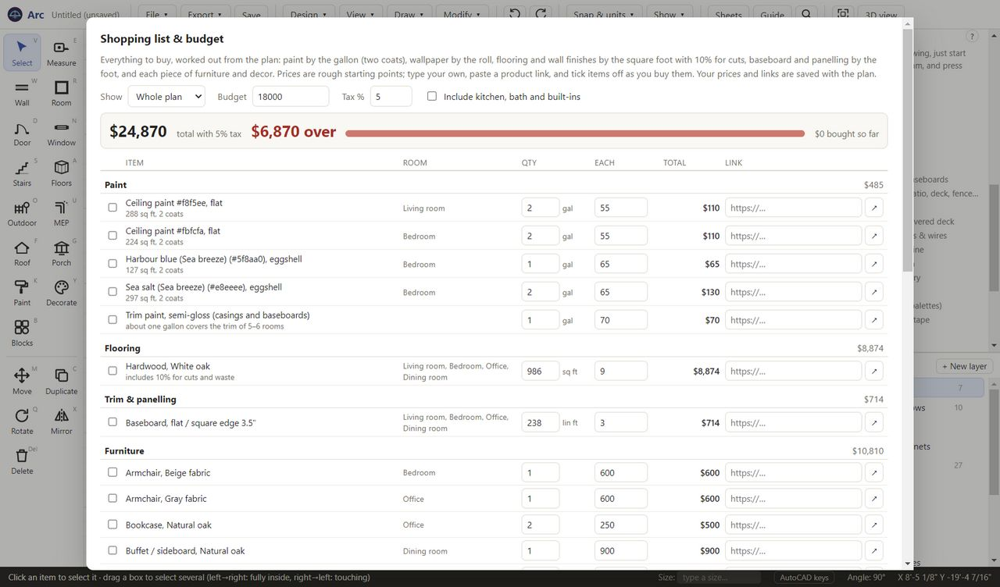
Cabinet hardware: the list counts every cabinet's pulls or knobs, concealed hinges (two a door, three on a tall one) and drawer slides, priced like Arc Hobby's hardware, in the cabinets' hardware finish. I own this on a piece of furniture or decor leaves it out of the total, and Arc remembers it for every plan on this computer.
Trim cut list (Budget ▾): each room's baseboard as the pieces to cut, which 8', 12' and 16' sticks to buy, and the saw setting at every corner (cope or miter inside corners, miter outside ones).
Woodworking tools: Preferences → Woodworking tools adds Arc Hobby's Make, Join, Finish and Shop menus the next time Arc starts: real board sizes, joints and fasteners, a cut list, a shopping list and a build guide for a mudroom bench, a window seat or a built-in. A board's Change this wood… makes it look like your own board (My wood), keeping its wood's strength and price, as in Arc Hobby. Wood decks show their wood's grain and stain in 3D whether it's on or not.
Client inspiration
Design ▾ → Client inspiration (pictures)… keeps the pictures a client sends you (magazine pages, screenshots, photos from their phone, a tile they liked) with the plan. Drop JPEG, PNG or WebP files on the window or click + Add pictures…; big photos are made smaller so the plan file stays light. For each picture, choose the room it's for (or Whole house) and type what they like about it. Its colours pulls the main colours out of a picture into a palette you can paint with (see Decorating). Save as PDF prints them six to a page with their room and note, and the mood board can add the room's pictures as pages after the board (tick Client's inspiration pictures).
Mood board
Design ▾ → Mood board… makes a one-page board (11" × 8½", landscape) for the whole plan or one room: a 3D picture, the colour palette with its codes, the materials and fabrics, the furniture and decor, the budget from the shopping list, and your notes. The picture can be a bird's-eye view into the room with the roof lifted off, a view from inside the room, or the 3D view as it is (set up a saved view or the sun first). Untick any part you don't want, then Save PDF to email or print, or Save picture.
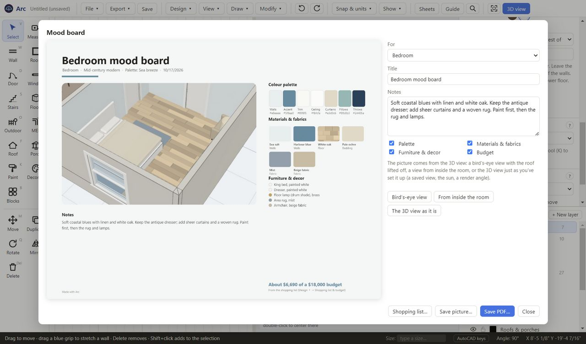
The Interiors workspace
For decorating only, switch to the Interiors workspace: File ▾ → Workspace… → Interiors, Preferences → Workspace, or New interior design on the welcome screen. The tool bar keeps Select, Measure, Wall, Room, Door, Window, Floors, Paint, Decorate, Blocks and the editing tools; stairs, roofs, porches, outdoor and pipes & wires tools, the framing and pipes & wires views, sheets, CAD drafting and the DXF, DWG, IFC and STL exports are tucked away, and the library leaves out the mechanical, structural, electrical, garage, exterior and landscaping pieces. It's the same program and file format, so a decorator can open a builder's plan and the other way round. File ▾ → Workspace… → Full brings everything back.
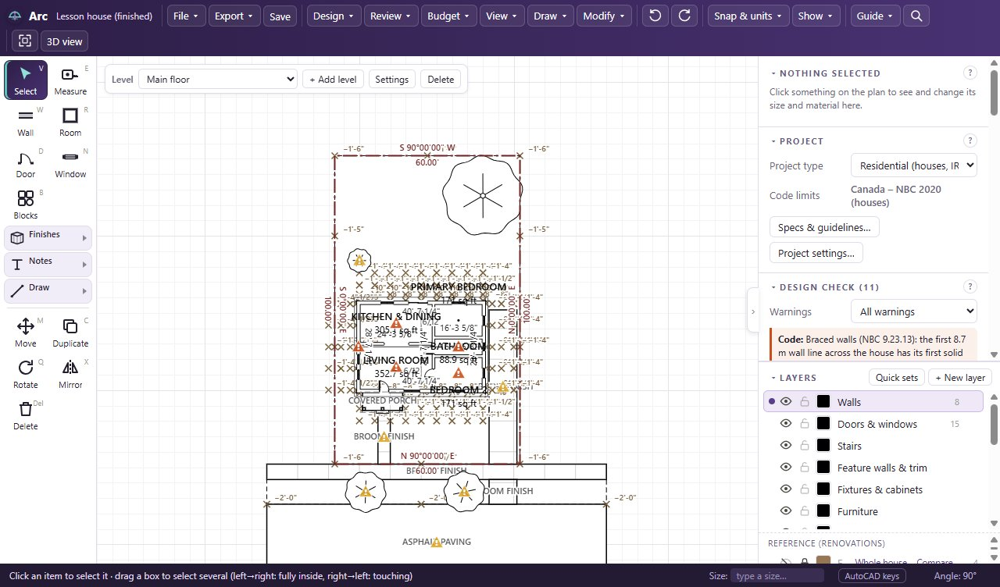
The Model maker workspace
For printed models, dollhouses and dioramas: File ▾ → Workspace… → Model maker (or Preferences → Workspace). The walls, rooms, doors, windows and roofs stay, for houses to print, with the 3D shapes (Draw ▾ → 3D shape), the model base and ground (Outdoor), text, measuring and moving. The wiring and ducts, framing members, markups, the Budget and Review menus, sheets and the contractor's files are tucked away, and search leaves them out. The 3D Print workspace opens beside the plan, and New from a template… opens on the 3D print templates. Switch back the same way: the plan is the same in every workspace.
Start from a single room
To try out colours, furniture or a layout for one room without drawing walls first, choose File ▾ → New from a template… (or Start from a template on the welcome screen) and pick a room: a bedroom 12' × 14' with a closet, a kitchen 12' × 14', a bathroom 8' × 10' or a living room 16' × 18'. Each one comes with its door, windows and a floor. Drag a wall to change the size, then decorate, use Kitchen layout or Design this room for me.
Send to my contractor
Export ▾ → Send to my contractor (one PDF)… puts everything a contractor needs to price the job into one PDF file you can email or print:
- a cover page with who it's for, your name and phone or email, the size of the plan, a 3D picture, and your notes and questions (type one per line; end a line with ? and it's marked as a question)
- a floor plan of each level with dimensions and room sizes
- the outside views (elevations)
- the mood board
- the shopping list with prices and the total
Untick any part you don't want; the list underneath shows the pages in order and the preview shows the cover. Save PDF takes the 3D picture and builds the file. What you type is saved with the plan, so the next pack only needs a new date.
Before & after
To show what a makeover changes: Export ▾ → Before & after… and click Keep the plan as it is now as "before". Then change what you like (paint, floors, furniture, even walls). Open Before & after again and Arc takes the same picture of both versions; drag across it to wipe from before to after.
- Bird's-eye, roof off (the first view): looks down into the house, best for changes inside.
- Use the 3D view as it is: set up the 3D view first (orbit, a saved view, Go inside a room), then take the pictures from there. Fit the model brings the whole model into the picture.
- Plan: the plan drawing before and after, as it shows on screen.
Save side by side or Save this wipe makes a picture for the client. "Before" is saved with the plan; Make the plan now the new "before" starts a new comparison.
The existing building next to your changes. When you've marked what's already built as pre-existing, Export ▾ → Before & after / existing vs new… (or Compare… beside Existing in Layers) can compare with Existing building: everything marked pre-existing, including what's being removed, as it stands today, next to the plan with your changes. No need to save a "before" first. Choose Side by side or Wipe, in the 3D view or on the Plan, and save the picture for the client.
Present to a client
For a meeting, on an iPad or a big screen: Export ▾ → Present to a client…. Tick the slides to show and put them in order (↑ ↓); Arc keeps your choice with the plan. Then Start presenting: Arc goes full screen with the tools out of the way.
- Title: the project's name and address, and today's date.
- The 3D model and each saved 3D view (save views with the 3D view's Views ▾): the live model, so the client can turn it with a finger.
- Each floor's plan, as the clean floor plan (room names and outside dimensions).
- Design options side by side, with each one's price if you tick Show each design option's price (off at first): what the quote would ask, with your markup, labour and tax (your quote's, or your usual ones), never your own costs.
- Before and after (or existing and new), with a line to drag to wipe between them.
Swipe, use ← →, the ‹ › buttons, or the strip of slide names at the bottom to move; ✕ Exit or Esc stops and puts the plan and 3D view back as they were. The client brief, your notes, quotes and invoices never go on a slide.
Share page
Export ▾ → Share page (3D model to email)… saves one web page file with the project in it: a 3D model to turn and zoom, the floor plans, the mood board, the before & after slider, the shopping list and your notes. Email it, or put it on a website or a shared drive (OneDrive, Dropbox, Google Drive): it opens in any up-to-date browser on a computer, tablet or phone, with nothing to install, and nobody can change your plan. If a browser can't show the 3D model, the page shows a picture of it instead.
On a phone or tablet the page is made for fingers. Under the 3D model is a row of buttons: Whole house, From above, each of your saved views, and each room. Tap one and the camera glides there; inside a room, drag to look around from where you stand. ▶ Take the tour plays through your saved views, and ⛶ Full screen fills the screen. Tick Pictures of your saved views to add a gallery of realistic pictures to swipe through (tap one for full size).
Post as a private link… (on your own copy of Arc on this computer, once it's signed in to Cloudflare) puts the page online at a long, random address such as arc-137-view.pages.dev/k7m2…/ and copies the link, so you can text it to a client: it opens straight away, with no sign-in and nothing to download, and search engines are asked not to list it. Anyone with the link can open it, so share it only with the people it's for. Your posted links are listed in the same window; Remove takes one down for good, and QR code shows a code to point a phone camera at (on the screen, or printed on a card): the page opens on the phone.
Realistic renders and photo mode
In the 3D view, Render… makes a picture of the view (or a saved view) at the size you choose, with a real sky, sunlight and soft shadows. Pick the Lighting (sunny afternoon, golden hour, overcast, your sun-study date and time, or Evening (lights on), where the sun has set and every lamp and light fitting in the model lights its room) and the Quality:
- Draft and High take seconds.
- Photo works the way architectural visualisation software does: light bounces off walls, floors and ceilings, so daylight fills a room the way it really does, glass and polished floors reflect, and shadows soften. The picture builds up in passes (Quick 64, Good 160, Best 400) and gets smoother as it goes; the window shows it as it builds and how long is left, and Stop keeps the picture so far. Indoor views are brightened the way a photographer would. It takes minutes rather than seconds, much longer on a computer with built-in graphics: try HD and Quick first. The first photo of a session spends a minute getting the graphics card ready.
Sky. Renders use a photographed sky to suit the lighting: partly cloudy for a sunny afternoon or inside rooms, overcast for overcast, and dusk for golden hour and evening. It's a 360° photo of a real sky, so there are real clouds and haze, the light has a real sky's colour, and the sky shows in the windows. It's turned so its sun is where your lighting puts the sun, so the shadows still follow your sun-study date and time. Pick another under Sky (partly cloudy, clear blue, overcast or dusk), or Computed sky for the clear sky that follows the sun exactly. Custom lighting and the Tour keep the computed sky. The first render with each sky loads its photo (about 5 MB on the web).
Glass and outlines. In a render, windows, glass doors, glass railings and shower glass are real glass: they let the light through and reflect the sky and the room at an angle, as glass does (frosted glass blurs what's behind it). The dark outlines the 3D view draws round each shape are left out of renders, as a camera wouldn't see them.
Bumps and shine. Brick, stone, siding, shingles, metal roofs, tile, floors, counters and wood grain have their relief and shine: mortar and grout sit back and are duller, glaze and polished faces shine. Fabric, velvet, leather, rugs, felt, jute, mattresses and brushed steel on furniture and fixtures have their weave, grain or brushing at its real size. You see it in the 3D view as well as in renders. If a slow computer struggles, turn off Bumps and shine on surfaces in Preferences.
Inside rooms. When the camera is inside (under a ceiling), High and Draft renders light the room the way a camera sees it: the sky's light is turned down so it doesn't come through the walls, a warm bounce from the floor and walls fills the shadows, colours stay true to the paint and tile you chose, and the exposure is set from the picture itself (metered on the bright surfaces, so white walls stay white). The Inside rooms (daylight, lamps on) lighting also turns the light fittings on at half strength. Show light fittings, feature walls and equipment (ticked) puts them in the picture even when their layers are hidden for the plan. If the graphics card gives up part way through a Photo render (it asks a lot of it), Arc renders the same picture at High quality instead and says so under the picture; Photo with Quick passes at HD size may work after closing Arc and opening it again.
Plants in renders. In every render quality (Draft, High and Photo) trees and shrubs have leaves: sprays of leaves round each clump, needles hanging from a spruce's tiers, grass blades, and flowers as heads of petals, not balls of colour. A flowering tree or shrub shows its blossom only in the months it flowers; with no month picked (Garden over time) it's in summer leaf. Perennials keep their flowers. Drawings and exports keep the plain plant shapes.
Plants grown from branches. With the real look and in every render, trees, shrubs and hostas grow the way real ones do: a trunk, limbs, branches and twigs, with sprays of real, photographed leaves out on the twigs (a linden's, a birch's, a dogwood's, a lilac's, a maple's or ninebark's own kind of leaf), darker deep inside the crown and with gaps of sky through it. In winter you see the bare branches and twigs; in fall the same leaves turn the plant's fall colour. Evergreens have photographed fir sprigs, and perennials photographed leaves. The plain look keeps the simple shapes. (The leaf and bark photographs are CC0, from ambientCG.)
Realistic trees, rock and water (Photo). With Photo quality, Realistic trees, rock and water shows them as you'd see them outside, not as drawn. It's ticked when the Ground cover is Forest floor, the plan has a lake, or the plan has plants from the plant library, and you can tick it for any plan. Woodland trees have slim trunks, branches down to fine twigs and sprays of leaves: spring's light green from March to May, full summer leaves the rest of the year (the month comes from the sun study). Hemlocks, rhododendrons, boulders and rock ledges are weathered and mossy, worn back underneath. Streams and ponds are clear water over a stony bed, and falls break into strands with foam and a light mist. On a forest floor, ferns, bushes and saplings fill the ground near the camera, and far trees fade into the haze. Out in the open, shade trees grow the way they do on a lawn, with a short stout trunk, low limbs and a full rounded crown; spruces keep their branches down to the ground and birches have white bark. A lake (still water at least 30' wide with no waterfall) mirrors the sky and the far shore, rippled by the wind, dark looking down and brown in the shallows. On Grass ground the lawn is real mown grass, with clover, faint mowing stripes in the yard and the fields beyond fading into the distance. Green shade trees, spruces, birches and stone boulders are swapped for these; every other plant (shrubs, perennials, grasses, flowering and purple-leaved trees) is drawn with real leaves too, as in Draft and High. The 3D view and the drawings don't change. It asks more of the graphics card: expect about 10 minutes for an HD Quick photo of a wooded site.
Photo of just one room. With Photo quality, tick Just the room I'm standing in when the 3D camera is inside: furniture, fixtures, stairs and plants in the other rooms are left out (the walls, floors and ceilings stay, so the room is lit as it really is). Far less goes to the graphics card, so a room in a big, furnished house finishes on built-in graphics. Low memory goes further for laptops: smaller textures (a little less sharp up close) and smaller pieces of work at a time.
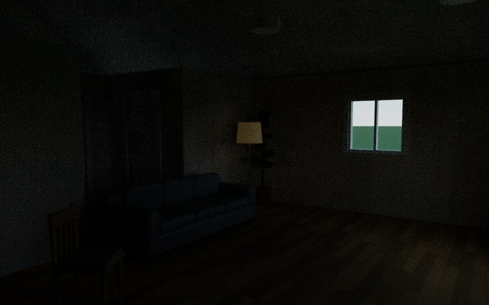
Custom lighting. Pick Custom… under Lighting for your own: Start from one of the others, then set the Sun height (degrees above the horizon; below 0 is dusk) and where the sun shines from (90 east, 180 south, 270 west), its strength, the picture's brightness, lights on in the model and how bright they are, a background of sky or a plain colour, the ground (the lawn or a tabletop in a colour you pick), and the field of view (smaller is like a zoom lens; empty uses the camera's). It's saved with the plan, so the next render starts from it. In the Tour, a stop's Light can be My custom lighting too.
Try a new finish on a photo
Show a client their own room with new paint, a new floor or new cabinets: pick a surface in a photo and give it a new finish. The photo's own light and shadow stay, so it looks as though it was always there. Open it from:
- a photo pin or a markup's photo: Try a new finish… in its panel;
- the client's inspiration pictures: New finish… under a picture;
- any picture on this computer: Design ▾ → Try a new finish on a photo…, saved as a new picture beside it.
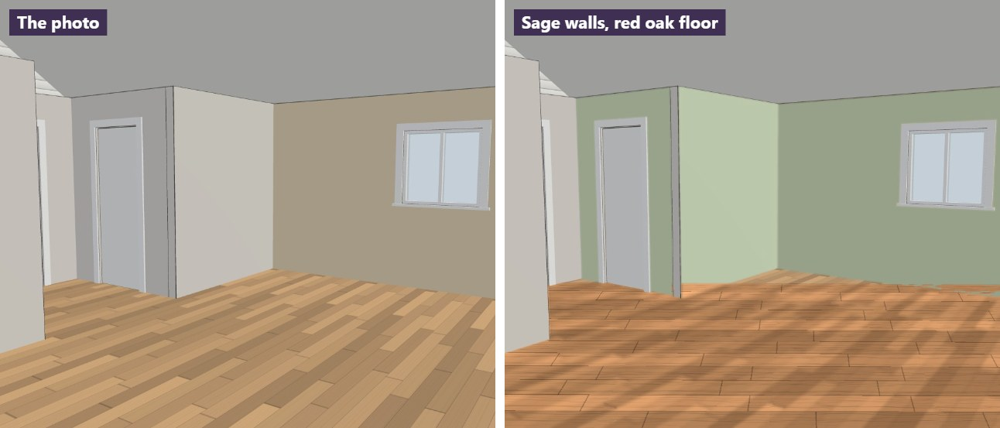
- Pick the surface. Click to pick takes what's joined to the click and close in colour, stopping at edges; click more of it to add. How alike lets it reach further (or less far: lower it if it spills onto something next door). Brush and Unbrush tidy the edges.
- Choose the finish: a paint colour, any colour, your own colours and photos, a cabinet or countertop finish, or a wood, tile, stone, brick or wallpaper.
- For a floor or a wall with a pattern, tick Lay it flat in perspective and drag the four white corners onto the corners of the surface (they can go past the edge of the photo), then say how big it is (Across and Front to back). Planks and tiles then run the right way and get smaller into the distance, and the new finish stays inside the corners.
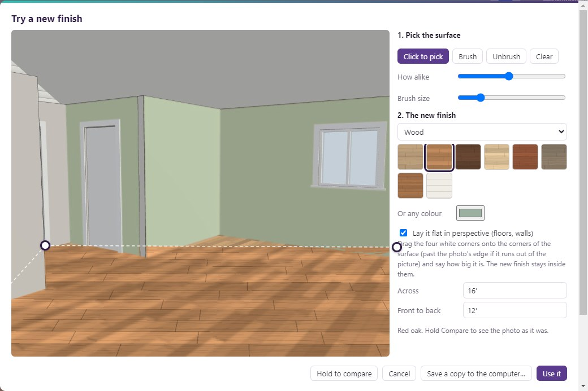
Hold to compare shows the photo as it was. Use it keeps the new picture in the plan (Undo puts the old one back); Save a copy to the computer… keeps a copy as a file and leaves the plan alone.
Lighting study: today vs new
Review ▾ → Lighting study: today vs new… settles "a brighter kitchen" with a number. For each room it adds up the light from its fittings (in lumens) and works out how much reaches the floor and counters, in foot-candles, beside what that kind of room wants (a kitchen 30 to 50, a bathroom 20 to 40, a living room or bedroom 10 to 20, a hall 5 to 10). Today is the saved Before (Before & after), or what's marked existing; lights being replaced or removed aren't in the new plan.
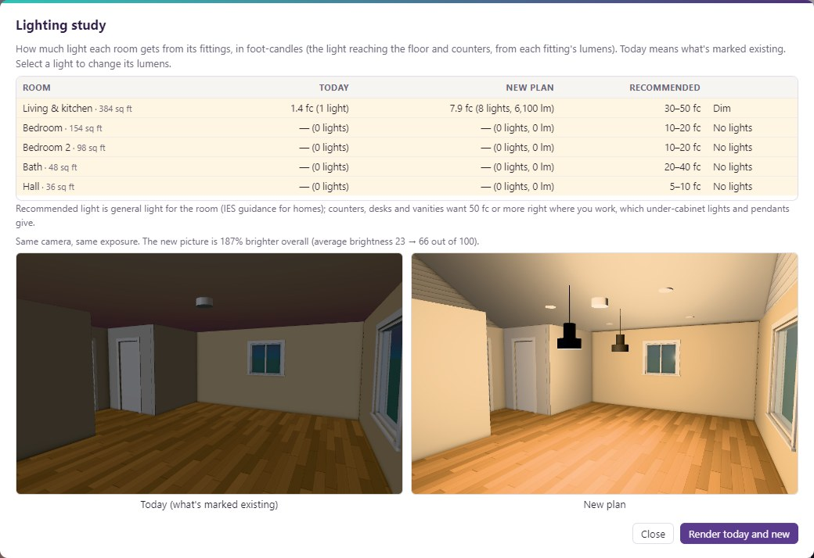
- Each light has a typical output for its kind with LED bulbs (a recessed light 750 lumens, a ceiling light 1,100, a pendant 800, a chandelier 2,400). Select a light and change its Light output to the bulb's own number (on its box).
- Render today and new makes two pictures from the 3D view's camera with the lights on and the sun down, at the same exposure, so the brighter one really looks brighter, and says how much brighter overall.
- The foot-candles are for the room's general light. Counters, desks and vanities want 50 or more right where you work: under-cabinet lights and pendants over an island give that.
Photo eraser: take something out of a photo
Brush over something unwanted in a photo (a garbage bin, a hose, a sign, wires, a crack, a car in the drive) and Arc fills it in from what's around it. Open it from:
- a picture traced over on the plan (a plot plan, survey or site photo): select it, then Erase from it… in the panel;
- a markup's photo: Erase from photo… in its panel;
- the client's inspiration pictures: Erase… under a picture;
- any picture on this computer: Design ▾ → Touch up a photo (erase things)…, which saves it as a new picture and leaves the original alone.
Brush a little past the edges of the thing and over its shadow, then Erase. Unbrush takes brushing off again, Hold to compare shows the photo as it was, and Undo takes back the last erase. The ? beside the window's title opens this page. Zoom in for small things: the mouse wheel and right-drag, or on an iPad pinch and two fingers. Use this photo puts the touched-up photo into the plan; Undo on the top bar puts the original back.
It works best on smaller things over grass, siding, brick, sky, paving or a plain wall. Big things in busy scenes (a person in front of a detailed room) are a job for an AI photo tool, like the Erase tool in the Windows Photos app or Clean Up in an iPad's Photos app. Everything stays on your computer: nothing is sent anywhere.
6. Looking at the model in 3D
Click 3D view on the third row to show a live model beside the plan. Drag to orbit, right-drag to pan, scroll to zoom. The buttons along the top of the 3D view hold saved views, Tour, Draw pipes & wires and more.
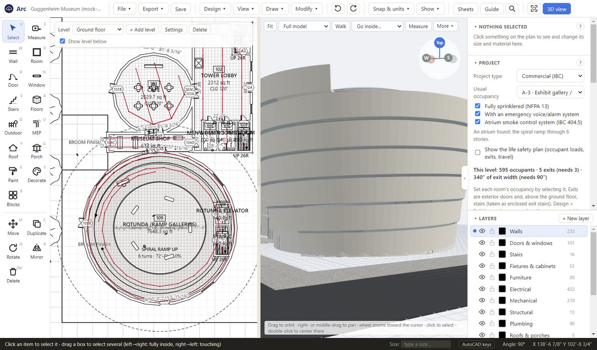
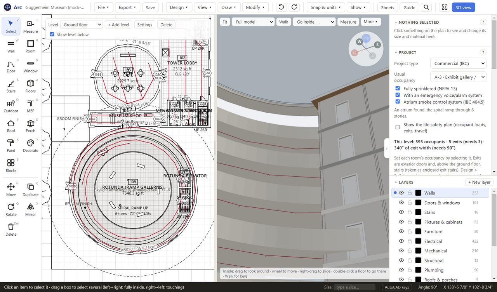
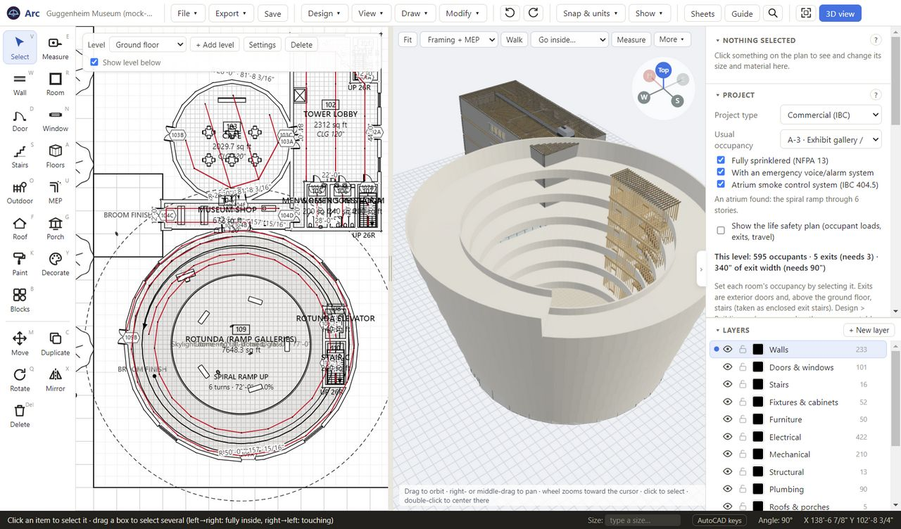
See inside the walls, as built. In Layers on the 3D toolbar, Walls in 3D, as built has four switches: Framing (studs, plates, headers and sills), Insulation (pink batts in each stud bay: the wall type's fill, or batts in every outside wall that has no type), Drywall (on the inside faces) and Sheathing & siding (on the outside faces, in the siding's colour). Tick any of them and the 3D view shows the walls part by part, each with the door and window openings left open; tick them one at a time to build the wall up, or untick Framing to see just the board. Untick them all to go back to the full model. Picking Wall & roof framing from the view list is the framing alone, as before. Stone, block and concrete walls stay solid.
The real look, Night, the lens and the eye height (Look ▾)
The 3D view is lit the way the Render window lights a picture. Outdoors (any plan with a lot, ground, landscaping or a fence, and every Arc Landscape plan) there's a sky behind, the sky's light on every surface, sun shadows without opening the sun study, lawn out to the horizon fading into the haze, and soft shading where things meet the ground and each other (it comes in a moment after the camera stops, and goes while you turn the view, to keep it smooth; on a very big plan it is left out). Paving, gravel, mulch and deck boards have real relief that catches the light, lawns have lighter and darker patches and mowing stripes that change as you walk round them, and ponds reflect the sky. Shadows near the camera stay sharp on a big lot: they're worked out for what you're looking at. In Arc Hobby and Arc Engineering, and for a house with no lot, the background colour stays and the light is a soft studio.
Inside a building the light changes by itself as soon as the camera goes in through the walls (orbiting or in Walk), and back when you come out: the sun shines in at the windows and casts shadows (lot or no lot), the roof keeps the sky's light out, the picture opens up as your eyes do indoors, light bounced off the floor lights the ceiling, and the biggest windows of the room you're in send daylight in. Corners where walls meet the floor and ceiling are softly shaded and furniture has a soft shadow under it, even while you move. Counters, tile, stone and glass reflect the room you're in (worked out when you stop in a new room). It's made for looking round quickly; for a finished picture, use Render or Blender.
Look ▾ on the 3D bar (under More ▾ when the bar is narrow):
- Real look, Balanced look or Simple look. The balanced look has the real look's sky, sun shadows and inside light, but leaves out the extra shading pass and draws fewer pixels; if the view gets slow it steps down by itself. The simple look is the plain light from before, the quickest to draw, for a slow computer. The web and iPad versions start with the balanced look; the desktop app starts with the real look. Arc remembers your choice (it is also in Preferences → 3D look).
- Night: the sky goes dark, windows glow warm, and lamp posts, path lights, uplights, wall floods and fire pits are lit. The ten nearest the camera (and four uplights or floods) shine on what's around them, chosen again as you move, so a long path of lights stays quick. Pick it again to go back to day. For a finished night picture, Render → Evening (lights on).
- Lights on: inside, the room's own lights (pendants, pot lights, lamps) light it, brightest for the fittings with the most lumens; the twelve nearest the camera, those in your room first. At Night they come on by themselves inside. Pick it again to turn them off.
- Lens: 24 mm takes in a whole yard, 35 mm is like a phone, 50 mm is close to your eye; Standard is the 45° view from before. Saved views keep the lens.
- Eye height: the camera at standing, seated on the patio or a child's height above the ground under it, looking out level: the way the yard will really be seen.
Plants in the real look have leaves: each clump of leaves (or a spruce's tier of needles) is a shell of small leaf sprays round a darker crown, so trees and shrubs read as trees and shrubs and let a little light through. Plants of the same kind and size share their shape (each is one of a few variations, turned its own way), which keeps a yard of hundreds of plants quick to turn. Beyond about 25 m a plant is drawn as a picture of itself, taken from eight sides; closer, it's the real plant again.
The season: the month picked under Garden over time (Arc Landscape) shows in 3D. From November to March (unless snow is turned off) snow lies wherever the sky can see the ground and the surface is flat enough to hold it: on lawns, beds, paving, roofs, furniture and shrubs, but not under a spruce, a deck or a roof, or inside the house; drifts lie along fences, deeper on the side away from the north-west wind; ponds and rinks are ice with skate marks, reflecting the sky. In October fallen leaves lie on the lawn.
Match a photo of the yard… (in Look ▾) shows your design over a real photo of your yard. Pick the photo, then click a point on it you can also find in 3D (a corner of the house, a fence post, the corner of the deck) and the same point in the 3D view; do this four times or more, spread across the photo. Clicks in 3D snap to the nearest corner. Match works out where the photo was taken from and how wide it is, and shows the design from there with the photo behind it: the plan's ground and the house are left out (they're in the photo; Show the house brings the house back), and the ground still catches the design's shadows. The panel says how closely the points agree. Save as a view… keeps it with its photo in Saved views; turning the view leaves the photo, and going to the saved view brings it back. The photo is kept in the plan file. In the Render window, pick the saved view to get a finished picture of the design over the photo, the photo's shape (at High quality: Photo can't leave the background clear for the photo).
7. Commercial drawings, takeoff on a PDF and quotes
When the project type is Commercial (IBC) (set in the panel with nothing selected), these extra drawings and checks switch on. Takeoff on a PDF, price books and quotes, at the end of this part, work for any project.
Life safety plan
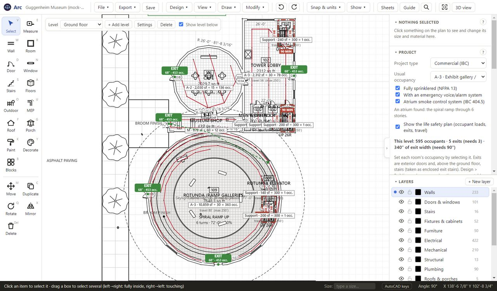
Reflected ceiling plan
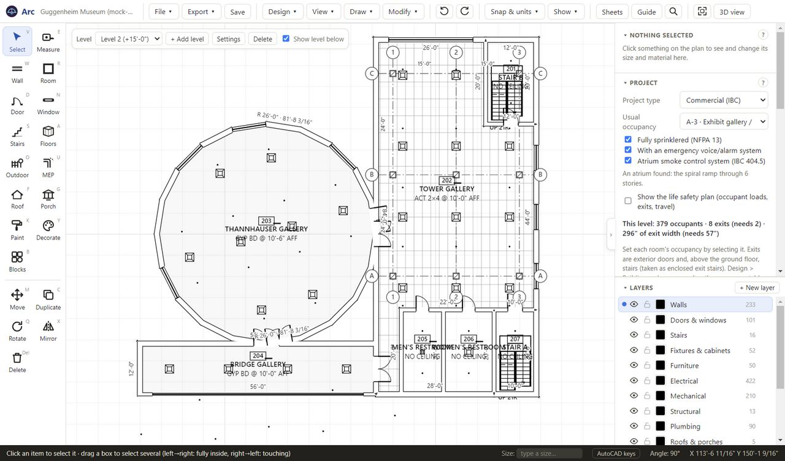
Building code summary
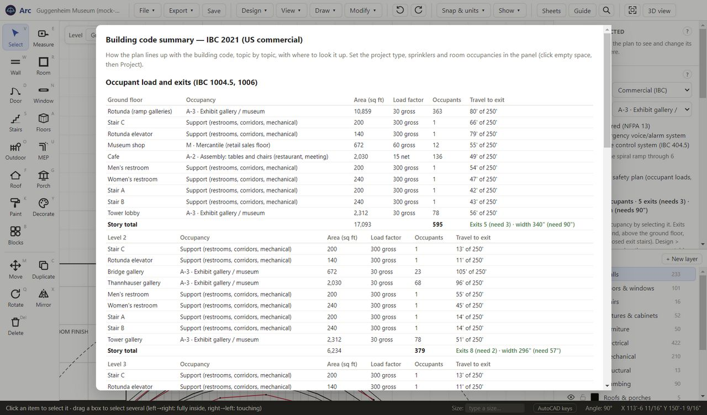
What the Status column says. OK: checked, nothing to fix. Not in plan: nothing of that kind is drawn. Check by hand: it's drawn with blocks Arc can't check (a shower block rather than a Tiled shower you draw, a plain island block rather than an Island from cabinets); the line under it says what to check. Distances to the property line read not surveyed until the lot lines are ticked From a survey (Real Property Report) in the property line's panel (New lot ticks it when the sides came from a Real Property Report's bearings). With Energy off in Checks & analysis, the energy row says so instead of "Not in plan".
In Alberta (the plan's province, from Project settings → City), the house checks follow the National Building Code – 2023 Alberta Edition, in force since 1 May 2024. Its Part 9 is the same as NBC 2020's, clause for clause, so the numbers don't change. The summary lists what Alberta allows on top (its STANDATA variances), and the checks say so where it matters:
- A window opening control device to ASTM F2090, with an emergency release, on a bedroom escape window (23-BCV-001).
- Bathroom, kitchen and dryer exhaust outlets 900 mm from an air intake beside or below them (23-BCV-008).
- Unvented roofs designed to the "Alberta Unvented Roofs" report (23-BCV-017), and an intumescent vented soffit near the property line (23-BCV-018).
- Spans from the CWC Span Book (23-BCV-007).
- Energy: Tier 1 of 9.36 is the minimum (23-BCB-001). The permit checklist reminds you to send in the 9.36 papers.
Schedules
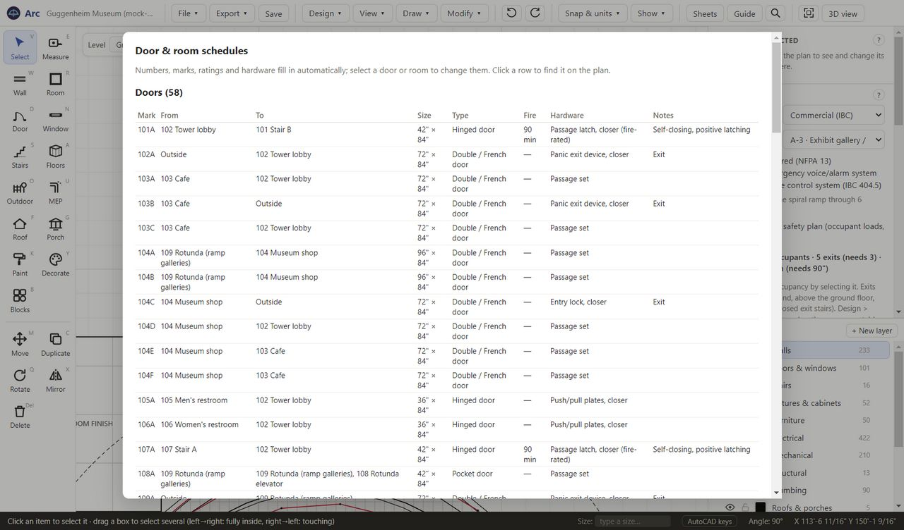
Below the rooms are Walls (each wall's level, length, thickness, height, material and whether it's new or existing) and Fixtures & furniture (each kind of block with how many there are), folded away until you open them. Each schedule has two buttons:
- Columns…: untick any of its own columns to leave it off, or tick a field to add it as a column: a wall's height, a window's width, a room's ceiling height, the layer, or one of your own fields. The schedules on the drawing sheets and in the CSV show the same columns.
- Save as CSV…: the schedule as a spreadsheet for Excel, Numbers or Google Sheets, to send to a window supplier or keep with the budget.
Click any row to select that item on the plan.
Your own fields
Keep what you need to know about each item with the plan: who's supplying it, which phase it's in, the trade, whether it's paid. Review ▾ → Schedules… → Your own fields… (or search for your own fields). Give the field a name, pick its kind (text, a number, yes / no, or a list of choices) and tick which items it's for: walls, rooms, doors & windows, blocks or stairs. Then:
- Select an item and fill the field in on the side panel, under Your fields.
- Select several of the same kind (three chairs, six windows) and the side panel's Properties sets one value on all of them at once, your fields and their sizes too. "varies" means they differ now. It's one undo step.
- Add the field as a column on any schedule with Columns…, and Ctrl+K finds items by its value.
Removing a field takes its values off every item. The fields are saved with the plan.
The cabinet schedule. When the plan has cabinets, the same window lists Cabinets: every cabinet, filler, panel, island and built-in with its tag, room, type, width, height and depth, construction, door style, finish, hardware and notes (crown, light rail, specialty insides). Tags are filled in for you (B1, B2… for base cabinets, W for wall, T for tall, F for fillers, P for panels, I for islands, BI for built-ins); type your own in a cabinet's Tag box. Save as CSV… makes a spreadsheet for the cabinet maker, and Add the cabinet schedule to the drawing sheets puts it on its own sheet; once it is on a sheet, the floor plan sheets show each cabinet's tag.
Shop drawings and the cut list. For a cabinet maker (in Arc and ArcRes): select any cabinet and open Shop drawings and cut list in its panel, or use the buttons under the cabinet schedule. Shop drawings (PDF)… saves them; Add to the sheets puts them in the drawing set (A-711 on). Each run of cabinets (the cabinets along one wall, or an island) gets a sheet with its front elevation (every box's width, each door and drawer front's size, the toe kick, countertop, uppers and crown heights, the tags), a plan with the depths and the countertop's edge, and a section through a base and an upper with each part named; and a cut list sheet: every box's sides, bottom, top or stretchers, back, shelves and toe kick, the face frame on framed and inset cabinets, the doors (stiles the full height and rails between, unless their corners are set otherwise) and drawer fronts, and the drawer boxes, with the sheets of plywood or melamine to buy. Pick the boxes (Baltic birch 18 or 15 mm, white melamine ¾" or ⅝"), the backs and the drawer boxes for the whole plan. Sizes are to the nearest 1/16" (millimetres in a metric plan); drawer boxes are sized for undermount slides (inside width = opening − 42 mm): check your slides' instructions.
An island from cabinets. Blocks → Cabinets → Island from cabinets builds an island of real base cabinets: on one side with a seating overhang on the other, or back to back. Its panel sets the countertop (2 cm, 3 cm or a thick mitred edge), waterfall ends (the top running down to the floor at one or both ends), finished end and back panels framed like the doors or plain, the cabinet widths (or even boxes), the fronts, supports under the overhang (corbels, legs or hidden steel brackets; Arc adds corbels when a 3 cm top overhangs more than 10"), and the receptacle the electrical code asks for at a fixed island (CEC Rule 26-724 in Canada; NEC 210.52(C)(2) in the US): in an end panel or a pop-up in the top. The doors take the island's door style, construction, frame corners and hardware. Its cabinets are in the schedule as I1-1, I1-2…, in the shop drawings and the cut list, and in the estimate with the top, the waterfall ends and their mitres, the panels, the supports and the receptacle.
Wall types made of layers
A wall type is what a wall is built of, layer by layer from the outside face to the inside face: siding, house wrap, sheathing, studs with the batts between them, the vapour barrier and drywall. Select a wall and pick its Wall type in the side panel; the wall takes the type's thickness and stud size. Review ▾ → Wall types… (or the Wall types… button on a wall, or search for wall types) lists every type and its layers.
- Effective R-value. Each type shows its RSI and R the way NBC 9.36.2.4 works it out: the studs and the batts between them together (the parallel-path method, with studs taking 23% of the wall at 16" on centre), then the other layers and the air films. A 2x6 wall with R-22 batts comes to about R-17 effective, not R-22. Layers outside a ventilated gap (siding on strapping, brick) don't count.
- Starter types for Canadian houses: 2x6 R-22, 2x6 with mineral wool outside, 2x4 R-14, brick veneer, 2x4 and 2x6 interior, a suite wall (Type X both sides, batts, resilient channel: 45 min and the STC 43 path), an ICF basement wall, an 8" foundation, and Existing 2x4, insulation unknown for an older house (Arc assumes R-8 until you look).
- Change a layer (its material, thickness, the stud size or spacing, what's in the cavity, or the order) and every wall of that type changes thickness to match. It's one undo step. The plan keeps its own copy of each type it uses, so a change stays in this plan. Copy this type makes a new one to change.
- Use it in other plans. Keep in My library keeps the type with all its layers; From My library… brings it into another plan, where its R-value and cost are worked out again from its layers (in that plan's money). A layer this Arc doesn't have becomes the nearest one it has, and Arc tells you, with the R-value before and after. See My library.
- What uses it: the heat loss (each outside wall's own R-value), the framing (the stud size), the detail drawings (each layer drawn and named), the takeoff (a line for each layer), the walls schedule (Wall type and Effective R columns), and the property-line cladding check (the type's siding and gypsum sheathing).
- Costs are rough material prices per m² (CAD) for comparing types; the takeoff and quote price the job. Fire ratings and STC are only given where a type is built to a known assembly: confirm them with the building department.
A wall with no type works as before: just a thickness and a material. Typing a new thickness takes a wall off its type.
Windows and doors as products
A window's or door's look (casement, slider, French door…) says how it opens; its Product says what it is. Select a window or door and pick its Product in the side panel. Review ▾ → Windows and doors (products)… (or the Windows and doors… button on an opening, or search for u-value) lists every product.
- What a product has: its frame and glass (or a door's core), the U-value (W/m²·K, with the imperial U-factor), the solar heat gain coefficient (SHGC), the Energy Rating (ER), a fire label for doors, the maker and series, and a price (per ft² of window or per door, CAD).
- Built-in products are typical values to compare with: vinyl double and triple low-e, fibreglass triple, aluminum-clad wood, thermally broken aluminum, insulated steel and fibreglass entry doors, a 20-minute garage-to-house door, a patio door, and four Existing windows (single glass, single with a storm, old aluminum, 1980s–90s vinyl) for a renovation. For the window you buy, put the values from its label in your own product.
- A maker's list. Import a maker's list (CSV)… adds a row for each product. Columns, in any order: Name, Kind (window or door), Maker, Series, Frame, Glazing, U, SHGC, ER, Price per ft2, Price, Fire, Core, Glass. A U under 0.7 is read as the imperial U-factor. Save an example list… gives you one to fill in.
- Use it in other plans. Keep in My library keeps a window or door with its U-value, SHGC, ER and price; From My library… brings it into another plan. Prices here are typed in Canadian dollars: if Preferences → Prices and money is set to another country, Arc says so when it comes in, because the estimate changes the price with a rough price level, not today's exchange rate. See My library.
- ENERGY STAR. A window meets ENERGY STAR in Canada (2020 criteria) with a U of 1.22 or lower, or an ER of 34 or higher; Arc says so beside the product.
- Replacing windows. A window marked Replace (Existing vs new) also gets Old window: name what's there now and the panel and schedule show the old and new U side by side, and how much less heat goes out through it.
- What uses it: the heat loss (each window's and door's own U, and its SHGC for sun through the glass), the takeoff (the product's name and price), and the window and door schedules (Product and U columns, once any opening has a product; Maker, SHGC, ER and Price can be added with Choose columns).
An opening with no product counts as before: a generic window (U 1.70 W/m²·K) or door.
Energy worksheet (NBC 9.36)
Review ▾ → Energy (NBC 9.36)… fills in the prescriptive path of NBC 9.36 (Tier 1), the energy form a permit office asks for on a new house or an addition.
- Climate zone from the place's heating degree-days (Project settings → Location; or type them in). Edmonton has 5120, so it's zone 7A.
- Which place? Project settings → Location lists the places a province at a time. Under the picker Arc says how far to trust the numbers: checked against the building code's own table (NBC 2020 Appendix C, Table C-2), not yet checked line by line, or, for a town the table doesn't list (Airdrie, St. Albert, Okotoks and others), borrowed from the nearest place that is listed, with how far away it is. For a borrowed town, ask the building department for its own numbers. Where a city publishes its own frost depth for footings (Calgary, Edmonton, Lethbridge, Airdrie and others), the foundation notes give it with where it's from.
- Walls use their wall types' effective R-values; a wall with no type says so. Foundation walls (on levels below the ground floor) are checked against the below-grade values.
- Windows and doors use their products' U-values (or the Energy Rating instead, for windows). Generic ones count at U 1.70 and say so. A garage's overhead doors, and its doors and windows to the outside, are left out: the garage isn't heated, so it's outside the part of the house the code checks. For a garage kept warm all winter, set Garage to Heated in the worksheet: its doors, windows and ceiling are then checked with the house. In Edmonton (zone 7A, U 1.44 or less) a double-glazed patio door (U 1.8) falls short: pick Vinyl patio door, triple low-e, argon (U 1.1) in its Product.
- Ceilings, vaulted ceilings and the slab take their insulation from the choices in the window (blown cellulose for attics, batts in rafters for vaulted ceilings, XPS under the slab), worked out as effective values the way the code's appendix says.
- With a heat-recovery ventilator (an HRV on the plan, or chosen in the window) the code's second table applies, which asks less of walls and ceilings in the colder zones.
- The trade-off (9.36.2.11): when walls or ceilings fall short, Arc tries trading them against each other by area, as long as none goes below 55% (walls, vaulted ceilings) or 60% (attics) of its own value.
- A renovation counts only the new work and the parts marked Replace.
- It prints as a sheet: in Sheets, add a view → Energy (NBC 9.36). The permit checklist shows its result.
Floors over unheated spaces are found from the plan: the parts of a heated room over a garage, a porch or another unheated room on the floor below, and the parts that stand out past the floor below (a cantilever or a bump-out). Pick their insulation under Floors over unheated space in the form. The degree-days and the 2020 window values are as Arc knows them: check them with your building department.
Heat loss, room by room
Tick Heat loss, heating and cooling in Checks & analysis first (a new plan leaves it off). Then Review ▾ → Heat loss, room by room… (or the button in the Energy window) works out how much heat each room loses on the coldest design day and gains on a hot one, the numbers a heating contractor sizes the furnace or heat pump and each room's supply from.
- From the plan's own parts: each room's outside walls (their wall types), windows and doors (their products' U-values and SHGC, and the way they face), skylights, the ceiling under the attic or a vaulted ceiling, a floor over the garage or out past the floor below, the slab edge, and basement walls and floors, where the ground helps.
- Vaulted ceilings and dormers: a vaulted room counts its ceiling at its true sloped area and its air at its real height, not as if it were flat; a dormer's window counts in the room its opening is over (at a generic window's U-value).
- The weather is your place's design temperatures from the building code's table (Project settings → Location), or type the winter one in. Inside is 22 °C in winter and 24 °C in summer.
- Air leaking in comes from the airtightness you pick (air changes an hour at 50 Pa, from a blower-door test; in Alberta an untested house counts as 2.5). Ventilation comes from the principal fan or HRV on the plan, less what an HRV gets back.
- Each room shows walls, glass, ceiling, floor and air in watts, the total in watts and BTU/h, and the heat gain. Save the sheet for the heating contractor prints it as a PDF, with every room's parts, areas and U-values.
It is an estimate in the style of CSA F280, not a stamped F280 calculation: the heating contractor's own F280 goes in with the heating permit. Use Arc's to talk it over and check theirs. (Heating & cooling under Budget keeps its own simpler numbers for equipment and ducts.)
Energy performance and tiers
Review ▾ → Energy performance & tiers… estimates the house's energy over a year against the code's reference house: the same rooms and windows, each part built just to the prescriptive values for your climate zone, at 2.5 air changes, with the same kind of heating at the code's lowest efficiency.
- It shows how much less energy the house uses, and the tier of the 2020 National Building Code (9.36.7) it would likely reach: Tier 2 at 10% less energy and 5% less heat loss, Tier 3 at 20% and 10%, Tier 4 at 40% and 20%, Tier 5 at 70% and 40%. Tier 2 and up also keep the peak cooling no higher than the reference house's. In Alberta, Tier 1 is the minimum.
- What would move it: triple-glazed windows, tighter air sealing, a better HRV, insulation outside the walls, more in the attic, basement wall insulation or a heat pump, each with how many points it adds.
- Heating, ventilation and hot water (9.36.3, 9.36.4): pick the furnace, boiler or heat pump and the water heater and type their efficiencies from the labels (AFUE, HSPF, UEF, the HRV's recovery). Arc checks each against the code's minimum (a gas furnace 95% AFUE, an HRV 60% at 0 °C, a gas tank water heater by its size).
It is not HOT2000 and not an EnerGuide rating. For a tier above 1, an energy advisor models the house and a blower-door test confirms the airtightness. The permit checklist and the code summary show these results.
Size up? (beams and headers near their limit)
When Arc sizes a beam or header and the smallest that holds is past 95% of what it can take, it offers the next size up: a porch beam (porch panel), a header over a window or door (the wall's panel, or a big-glass opening's own panel), a ridge beam over a vaulted room (the roof's framing), the beam that replaces a wall you take out (the Can I take this wall out? window), and a beam you draw. The code allows 100%: the room above 95% is for a snowier winter than the code's, snow sliding off a higher roof, or a heavier roof later. Click Use … and that size is drawn, listed and priced, and kept in the plan. If the plan changes so your size no longer holds, Arc goes back to the smallest that does and says so. Back to the smallest that holds undoes your pick.
Can I take this wall out?
Select a wall and click Can I take this wall out?… in its panel (or find it with Ctrl+K). Arc works out what the wall holds up from what's drawn: the roof (with your city's snow), ceiling joists under a stick-framed roof, and the floors above.
- Not load-bearing: it says so, with what to check first (wires, pipes, ducts, and the attic and basement for anything not drawn).
- Load-bearing: it sizes a beam to replace it (built-up lumber by CSA O86, or an engineered LVL beam as a starting point), the posts at each end with the load on them, and the concrete pad under each post (NBC 9.15.3.4). Posts on an upper floor need solid blocking down to a beam or footing.
- When to call an engineer: an engineered beam, a wall that holds up more than one floor, or a post load more than built-up studs carry. Many building departments ask for an engineer's letter for any removed bearing wall.
- Take it out and put in this beam marks the wall as being removed and draws the beam and posts, in one undo step.
View ▾ → Load path on the plan shows the bearing walls as orange bands with what they carry, beams dashed red, and posts with their loads and pads. The roof and floor framing plan sheets show it too. These are Arc's estimates for planning: confirm them with your building department, a designer or an engineer.
Print this floor plan
For a quick printout without setting up sheets: File ▾ or Export ▾ → Print this floor plan… (Ctrl+P). The floor you're on, as it shows (hide layers or turn on the clean floor plan first to leave things off), goes on one Letter page, landscape, with a title block, at the same scale as the other floors (the one the biggest floor needs), so the plans compare. The window shows the page: Print… opens the print window (on an iPad too), and Save PDF… keeps a file to email or print later.
Sheets
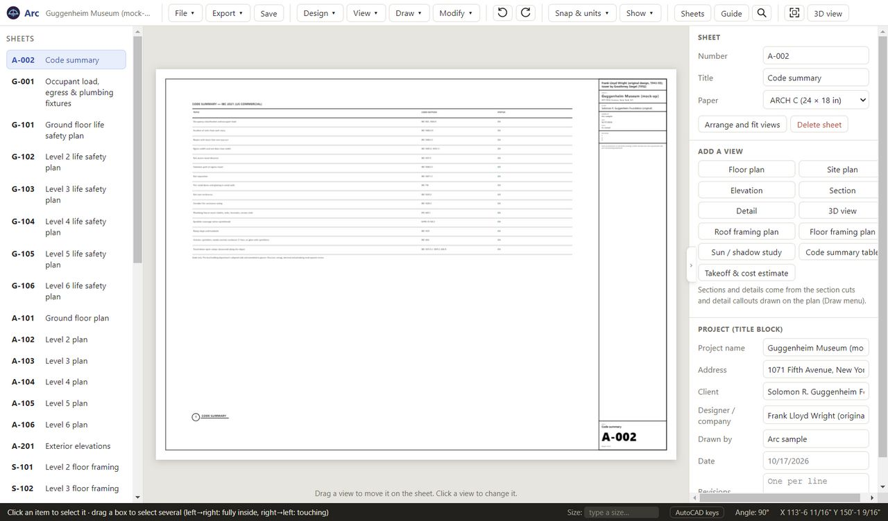
Sharp lines in the PDF. Plans, schedules, the code table and the title block go into the PDF as real lines and text at true scale. They stay crisp however far you zoom in or however large you print, wall lines are heavier than furniture, patterns and dimensions, and you can search the PDF for a room name or a door mark. Drafted elevations and sections are lines and text too (below); 3D views and the other looks are still pictures. If a sheet doesn't look right in the PDF, pick it in Sheets and set In the PDF to A picture of the sheet: the whole sheet is then one picture, as it was in earlier versions.
Drafted elevations and sections. In Arc and ArcRes, a new sheet set draws its elevations and sections the way a designer draws a permit and tender set: the ground line and cut walls heaviest, the building's outline heavy, edges further back lighter, and light hatches for siding, brick, stone and the roof taken from your finishes. Sections show each cut wall layer by layer with its insulation, the floors and roof, the footings, slab and earth. On the right are markers for grade, each floor, top of plate, window heads and the ridge, with floor-to-floor heights and the overall height (and your height limit, if you set one in Design ▸ Specs). On the left are notes with leaders made from the plan, such as "Fibre-cement lap siding, 6" exposure" or each wall's assembly ("R-22 batt, 2x6 @ 16" o.c., 1/2" drywall"). Pick a view on a sheet and press Notes on this drawing… to reword a note, take one off, or add your own by clicking where it points; your notes are saved with the plan. To go back to a picture, set the view's Look to Rendered or Line drawing. Plants are left off drafted drawings.
Create the sheet set also makes:
- A-100 Foundation plan: the lowest floor's walls with the footings under the outside walls drawn dashed, pads under any posts, and notes giving the footing size for the number of floors above, the foundation walls, the slab and the drainage. The sizes are typical starting points for good soil; have the building department or an engineer confirm them.
- The foundation as it's built. The same footings are in the 3D view (under the ground: turn the ground off or look from below), in sections and in exports: a basement's under its floor; a slab-on-grade house's below the frost line for the plan's place (1.2 m when Arc doesn't know it), with an 8" frost wall up to the floor. Inside walls that carry a floor get their own strip footing under the slab (NBC Table 9.15.3.4). A garage (a room named Garage or Carport) gets its own 4" slab, and beside a basement, a frost wall and footing that step down to the basement's footing, at most 24" up for each 24" along (NBC 9.15.3.8). The foundation plan draws them all, and the takeoff counts the footing and frost wall concrete in cubic yards.
- More of the foundation. Each of these comes from the drawing, so redraw or set it and the footings follow:
- ICF walls (an ICF wall type on the basement): counted as blocks, corner blocks, the concrete fill in cubic yards and the rebar, with drywall on their inside face.
- Pads under posts and beams: a pad under each drawn post, and under a beam's ends and any post on the floors above whose load comes down to it, sized roughly from those loads (to be engineered).
- A walkout: where the ground outside is low, the footings go the frost depth below it on a frost wall, stepping along the wall with the ground. The digging, backfill and damp-proofing follow the ground drawn round the house, or the design grades.
- A garage: beside a heated house its frost wall goes to the house's frost depth; a garage standing on its own goes to the city's figure for an unheated garage where it gives one (Edmonton: 1.5 m). The foundation notes say which depth was used and where it's from.
- A renovation: walls, posts and rooms kept as pre-existing keep the foundation they have, so they get no new footings, digging, weeping tile or sump.
- Load-bearing walls. Select a wall: its panel's Load-bearing says whether it holds up a floor or roof. Auto lets Arc work it out from what's drawn above it; Yes or No sets it, for a wall Arc can't judge (a partition under the joists, or a wall carrying something you haven't drawn). A wall set as load-bearing with nothing Arc can see on it gets headers by their width and a note to have them checked; one set as not load-bearing holds up no joists in the floor framing.
- A-201 Exterior elevations: all four sides on one sheet. For a long house or one on a big site, where four together would be smaller than 1/8" = 1'-0" (1:100), they go two to a sheet, one above the other, so they print larger: south and north on A-201, east and west on A-202.
- Interior elevations (A-202 and on, or A-203 and on when the outside elevations take two sheets) of each kitchen, bath and laundry, and any room with cabinets or plumbing fixtures: every wall seen straight on from inside, with the floor, the ceiling height and the wall's length. The floor plan sheets show a marker in the room pointing at each wall, with the view's number and the sheet.
- A-701 Door & window schedules for a house (a commercial set gets door and room schedules on A-701 and the window schedule on A-702). The floor plan sheets then show the door and window tags that match.
To add one yourself, pick a sheet and click Foundation plan, Interior elevation, Door schedule or Window schedule under Add a view. For an interior elevation, select the room first (or pick it afterwards) and choose the wall.
A view's own layers: select a floor plan view on a sheet and set Layers to Its own, then tick the layers it shows. It keeps them whatever the plan shows, so a clean A-101 can sit beside an electrical or plumbing plan of the same floor. As the plan shows them now follows the Layers panel, as before.
Detail drawings
A close-up you draw on its own page, off the floor plan: a wall corner, a window sill, a stair nosing. Draw a Detail callout box around the spot (Draw ▾), select it and click Make a detail drawing. It opens on its own page, starting with the plan's lines in the box and the wall layers drawn in: drywall, studs (with the usual X), batt insulation in outside walls, sheathing and siding, with notes beside it. Edit it with the drafting tools in Draw ▾ and Modify ▾ (lines, hatch, text, dimensions, trim, offset…); walls, rooms and furniture stay on the floors. ← Back to plan (or picking a floor in the Level list) goes back. To start a blank one, pick + New detail drawing… in the Level list.
Every detail drawing is listed in the Level list under Details. With one open, Settings renames it and sets the scale it prints at (3" = 1'-0" and so on), and Delete removes it. Create the sheet set puts them on Details sheets, and in Sheets you can add one to any sheet as a Detail drawing view.
Permit-set check
Review ▾ → Permit-set check… goes through what building departments usually ask for and marks each item ready (green), to look at (amber) or missing (red):
- Title block: project name, site address, owner and designer (from Project settings).
- Drawings: a site plan with property lines, a plan of every floor, all four elevations, a building section, roof and floor framing, a detail, the code summary and an electrical layout, a foundation plan and the door and window schedules (and, for commercial projects, life safety plans and the room schedule). Create the sheet set fixes most of these in one click.
- On the plans: rooms named, wall dimensions on, and how many design-check warnings are left to fix or explain.
Check the DXF export saves each floor as DXF and reads it back with the program's own DXF reader (the one that imports AutoCAD drawings), comparing the lines, text, wall size and room names. AutoCAD itself and the ODA converter for DWG aren't part of this check. Fill in the building department, application number, Prepared by and Reviewed by, then Save review set PDF…: the checklist and DXF results, signature and date lines and a stamp box, followed by every drawing sheet. Each department has its own list, so check theirs before you submit.
Takeoff on a PDF (count and measure)
For a trade pricing someone else's drawings: Budget ▾ → Takeoff on a PDF (count & measure)…. Pick the PDF (or a picture of the plan), then click two ends of a dimension you know and type its length so the drawing is to scale. The Takeoff on a PDF tool then opens with a list of items in the panel.
- Add item (or a starter chip such as Outlets, Lights, Pipe run, Floor area) and choose how it's measured: count, length or area. Each item gets its own colour.
- Count: click each symbol. A numbered dot marks it.
- Length: click along the run, then press Enter, double-click or right-click to finish.
- Area: click round the outline and finish the same way, or click the first point again.
The totals show beside each item. To remove a mark, pick the Select arrow, click it and press Delete. The items join Takeoff & cost estimate as a PDF takeoff section, so they're priced and go into the quote with everything else. They're saved with the plan.
Electrical: circuits & panel
Budget ▾ → Electrical: circuits & panel… lays out the circuits the way an electrician would: general outlets and lighting on AFCI circuits, two 20 A kitchen counter circuits, a GFCI circuit for each bathroom, laundry, garage and outdoors, and a dedicated circuit for each big appliance (range, dryer, water heater, heat pump, EV charger, hot tub…). Rooms with no outlets or lights drawn are estimated. It shows the panel schedule with each breaker's slots and leg, the service size (NEC 220.82 load calculation, with the minimum and the size worth having), cable by gauge measured from the panel, and the boxes, devices and breakers. Tick Put these in the takeoff and quote to price them (it replaces the electrical blocks and drawn wires there). Save PDF… gives the panel schedule and an order list. Have a licensed electrician confirm it for your local code.
In Canada: the Canadian Electrical Code. When the plan uses the NBC (File ▾ → Plan info, or Canadian plans by default), the electrical plan follows the CEC instead of the US NEC: NMD90 cable, kitchen counter receptacles on 20 A circuits with no more than two receptacles each (Rule 26-724), so a long counter gets more circuits, and none of the counter more than 900 mm from a receptacle; tamper-resistant receptacles (26-712) and arc-fault protection (26-656). The service comes from Rule 8-200: 5 000 W for the first 90 m² of living area (basements at 75%) and 1 000 W for each 90 m² more, electric heat (the first 10 kW in full, 75% after), air conditioning in full, the range at 6 000 W plus 40% over 12 kW, EV chargers and hot tubs in full, and other loads over 1 500 W at 25% with a range. A home of 80 m² or more gets at least 100 A. The window shows the working, for your electrician and the electrical permit.
Plumbing: fixtures, pipes & water heater
Budget ▾ → Plumbing… (ArcRes: Budget ▾ → Plumbing summary…) counts the toilets, sinks, tubs, showers, dishwasher, washer and hose bibs on the plan; baths, kitchens and laundries with none drawn get the usual ones (marked assumed). From their supply and drainage fixture units it works out the peak flow and the water main size, the building drain (3" or 4"), the stacks and roof vents (fixtures within about 15' share one), and a water heater: a tank sized by the bathrooms, or a tankless heater by the showers that can run at once. Pipe runs are measured from a PEX manifold at the water heater (place a Water heater block to measure from it) and from each fixture to its stack. It lists the pipe by size, fittings, valves, traps, flanges, manifold, heater, cleanouts and flashings, and flags long hot-water runs, island sinks and basement fixtures that may need a pump. Tick the box to put it in the takeoff as Plumbing. ArcRes shows the same results in plain words.
In Canada: the National Plumbing Code. On an NBC plan the drains use the NPC's hydraulic loads (Table 2.4.9.3): a toilet with a tank 4 fixture units, a basin 1, a tub, shower or kitchen sink 1.5, a washer or floor drain 2, and a dishwasher draining through the sink nothing more. A bathroom group (a toilet, basin and tub or shower in one room) counts as 6 instead of their sum, and as 3.6 supply units. Stacks are 2" up to 24 units and 3" up to 102 (Table 2.4.10.6.-A), and the building drain is 3" up to 27 units at 1:50 and 4" from the third toilet on (2.4.10.6.-C). The fixture schedule marks each bathroom group.
Heating & cooling: loads & ducts
Budget ▾ → Heating & cooling… works out each room's heat loss and heat gain from its outside walls, windows and glass doors, the ceiling under the roof, the slab edge and air leakage (a simplified Manual J), for the climate you pick (cold, mixed or hot). From those it sizes a furnace and air conditioner or a heat pump (two systems when cooling is over 5 tons), the airflow each room needs, the supply ducts, trunk, registers and returns, measured from a furnace or air handler on the plan. Rooms with lots of glass are flagged. Tick the box to put it in the takeoff as HVAC. Have a heating contractor run a full load calculation before you buy equipment.
Framing: structure & hardware
Budget ▾ → Framing… (ArcRes: Structure & lumber…) gathers the frame in one place: the wall studs and boards from the cut lists, the headers over every opening (an engineered LVL over 8'), the floor joists under each upper floor and the roof framing, each with its span checks; the roof sheathing and subfloor; the hardware that ties it together (hurricane ties, anchor bolts every 6', sill gasket, joist hangers and hold-downs); a basic nailing schedule; and everything an engineer should look at. Tick the box to put the sheathing and hardware in the takeoff as Framing package. Shear walls and wind and snow connections depend on your area: an engineer or the building department confirms them.
Assemblies, waste & cut lists
Budget ▾ → Assemblies, waste & cut lists… has three tabs:
- Cut lists: the framing of every new wall in boards to buy. Full-height studs come as precut or stock-length studs, one per board; plates, headers, sills, jacks and cripples are packed into 8'–16' boards with an ⅛" saw cut, and the PDF lists every board's cuts and offcut. Drywall sheets are counted room by room (walls less doors and windows, plus the ceiling, moisture-resistant board in baths and laundries), and flooring by room in boxes (or square yards of carpet).
- Assemblies: the small materials that go with every square foot: house wrap and vapour barrier on outside walls, compound, tape, screws and corner bead with drywall, underlayment under floors, roofing underlayment and nails, and flashing tape, shims, foam and casing for each door or window. Change the rates to match how you build, add your own, and tick the box to put them in the takeoff as Assemblies & sundries.
- Waste: a percentage for each kind of material (framing 10%, drywall 12%, tile 15%, roofing 15%…). Tick the box and every takeoff line includes its waste, with sheet counts worked out the same way.
The parts list and your own prices
In Arc and ArcRes a new plan's Budget ▾ → Takeoff & cost estimate… is a parts list first (ArcRes calls it Parts list and prices): everything you need to build it, counted and measured, with no prices filled in. Type Your price on a line when you know it; it's saved with the plan and dated. Arc's Typical price shows greyed beside it, to check a quote against: use copies it in for that line, use typical on a section's heading for that section's blank lines, and Use typical for every blank line (ArcRes: Fill in typical prices) for the lot. Under the totals it says how many lines are priced (12 of 85 lines priced), so a total isn't taken for the whole cost too soon.
Your last price. A price you typed on an earlier job is remembered on this computer and shows under the line as Your last price: $X (March 2026). It's never filled in by itself, since prices change: click it to use it. A plan made before November 2026 still fills in typical prices and your price book as it always did, so its totals don't change; Count only my prices… at the top switches it.
What's on the list. Besides what's drawn, it counts what goes with it: the framing hardware (hurricane ties, anchor bolts, sill gasket, hangers, nails, subfloor glue, roof sheathing) and the assemblies (house wrap, vapour barrier, drywall mud, tape, screws and corner bead, primer, flashing tape, shims, foam, casing); the soffit, ridge and hip cap, valley flashing, roof vents (1 sq ft for each 300 sq ft of attic), attic insulation, baffles and hatch; rebar, the gravel and poly under the slab and a radon pipe, and for a basement the weeping tile, damp-proofing, digging, backfill and sump; a countertop on cabinets with no slab picked, cabinet hinges, pulls and slides; door locksets, hinges and stops; an open porch's floor, columns, beam, roof, ceiling, railing and steps; a deck's guard and stairs; a plumbing rough-in for each fixture; and a dormer added to a roof that's already there. Nothing is counted twice: an island's top with a slab, the floor tile under a tiled shower, the siding, and the assemblies' transition strips, ice and water and casing where the takeoff measured them itself. The cabinet shop drawings and cut list leave out cabinets that are already there, and a long cut list carries on onto another sheet.
Services: gas, ducts, wiring and the lines to the street. The list counts what the drawing shows only as a symbol, or not at all:
- Gas: a line from the gas meter to each gas appliance (furnace, boiler, water heater, gas fireplace, garage heater, and a range, cooktop or rangetop whose Style in its panel is Gas or Dual fuel), along the walls and floors, each piece sized for the load past it from the low-pressure table (1/2" to the far ends, bigger near the meter), and a shut-off valve and connector at each. No gas meter drawn: it's measured from the outside wall nearest the furnace. Gas pipe you draw yourself is counted as drawn instead. A gas fitter sizes and permits it (CSA B149.1). One choice, the Style of a range, cooktop or rangetop (Gas, Electric, Induction, and for a range Dual fuel), sets how it looks (burners and grates, or a glass top), its gas line and its wiring: gas gets a 120 V, 15 A circuit for its igniters and clock, dual fuel a 40 A, 240 V circuit for its electric oven, electric or induction a 240 V circuit (50 A for a range, 40 A for a cooktop or rangetop). A range or cooktop with no style chosen is electric, drawn and wired; a rangetop with none is gas. A pro range has its own Fuel: dual fuel unless you set it to gas. The new lines keep Arc's typical price beside them, not in the total, until you click use.
- Ducts and vents: return air from each return grille to the furnace (one in each bedroom and a central one when none are drawn); an HRV's two ducts and wall hoods to the outside and its ducts inside; each dryer's 4" vent and hood; each bathroom fan's 4" insulated duct and cap (one assumed in a bathroom with no fan drawn, unless an HRV takes the bathrooms' air); each range hood's duct and cap, with make-up air (a damper that lets air back in when the hood runs, NBC 9.32.3.8); and each gas fireplace's direct vent. A duct drawn from the appliance is counted as drawn instead.
- Wiring: a home run drawn as an arrow toward the panel, the way electrical plans show it, is counted the whole way to the panel along the walls and floors with 10' to spare, by its wire size (an EV charger's 6 AWG run, for example).
- Heated floor: Blocks → Bathroom → Heated floor mat, sized to the open floor (a spa ensuite, under the tile). The list prices the mat by its area and adds its thermostat, its 15 A circuit to the panel and the breaker; with Electrical: circuits & panel in the estimate, the circuit is on the panel schedule instead.
- Services to the street: the water, sanitary and (with a basement) storm services and their trench, from the house to the property line on the street side (the side the driveway goes to; draw the property line for the real length), and a backwater valve on the sanitary line. Edmonton requires one on every new house.
- Drywall by type: sheets of regular 1/2" board, 5/8" Type X on the garage's walls and ceiling, and moisture-resistant board in the bathrooms, worked out from the room on each side of each wall. The ceilings' sheets are listed to order (the Ceilings section prices ceiling drywall by the square foot already).
- Concrete in cubic yards: a garage slab above a basement, an apron at each overhead garage door when no driveway is drawn, and a porch slab, besides the slab, footings, walls, driveway and patios, which already were.
The owner's list. Furniture, fitness and game-room equipment (a golf screen, a treadmill, a pool table), lamps and decor go on their own list at the bottom, Furniture & equipment (owner's list), out of the builder's total. Tick Count it in the total on its heading to add it in. Lights the electrician hangs (pendants, chandeliers, sconces) stay in the builder's list.
Lines with no price. Under the totals, Arc says how many lines have no price yet, so the total leaves them out, and names the first few: get a quote for them, type a price, or click Use typical for the ones Arc has a typical price for.
Each wall as it's really built. The notes on elevations and sections, the wall's Material and the parts list name what each outside wall is clad in, from its Exterior finish: stone, stucco, panels or fibre-cement, and vinyl only where it really is vinyl. Some things come with their build-up:
- Stucco: a second layer of building paper, galvanized lath, the scratch, brown and finish coats in bags, weep screed along the bottom of the ground-floor walls, casing bead round the windows and doors, and corner aid. The plastering crew's hours go in the build budget.
- Stone veneer: the stone in boxes of about 10 sq ft and its corners, Type S mortar, a veneer tie every 2.6 sq ft, rainscreen strapping, base flashing with weep vents and flashing over the openings, at about $14 a sq ft of materials (CAD; US and UK prices worked out from it), plus a mason's 0.2 hours a sq ft: about $27–32 a sq ft installed.
- A stone or brick panel from the wall designer on an outside face, and a block or 3D shape painted in stone or brick outside the rooms or up a gable, count as that stone, not as a feature or as furniture, and the wall's own siding behind a panel comes off.
- Roofs: a porch's or covered deck's roof is counted with the roofs, by its material (a standing-seam deck roof as standing-seam metal). The eave protection comes in whole 3′ courses (a 24″ eave takes two) and down the valleys; there's starter strip, step, apron and kick-out flashing where a roof meets a wall above it, intake vents in a wood soffit, and the shingles' waste on its own line (10%, or 15% with hips or valleys) unless Waste is on.
- A floor painted with a material from the library (walnut over a vinyl-plank room, say) is counted as that floor: Hardwood – Walnut. An island's countertop line says its own finish. Porch posts from My columns are drawn in the recipe's finish and counted as the recipe's posts, brackets and piers. A deck's stairs are drawn in 3D and on its framing plan, and counted once: not again when you draw a stair against the deck yourself. The Solid-core, 20-minute (garage to house) door is counted only on a door between the garage and the house, and that door gets it when it has no product picked.
A sub's price for a section
When a sub (the stair guy, the roofer, the cabinet shop) gives you one price for their part, click + Sub price (ArcRes: + Trade's price) on that section's heading and type the amount (before tax), who, the date of the quote and a note. It becomes the section's total; a green line under the heading says who and when, and the parts stay listed with their quantities, greyed and not added, so you can see what's in it and check it against Arc's typical prices. In the build budget it's one installed line, with no labour added. If you are the sub, leave it blank and price the parts yourself. It takes the place of the old Contractor tick in Arc and ArcRes (a plan that had one ticked keeps it, to take off); Arc Landscape keeps the tick.
The price list
Budget ▾ → Price list (typical prices)… is every typical price Arc knows, to look up for a rough estimate or to see whether a sub's price is fair. This plan lists each line of your plan with its typical price and yours; Everything lists every price by section, and the trades' hourly rates. Type in the box to find one (shingles, 2x6, plumber). Prices are Canadian dollars first (or your country's, from File ▾ → Preferences… → Prices and money), with the date they were checked; where each comes from is in Arc's price sources (docs/price-sources-canada.md). Nothing goes into your estimate until you click copy to my price, which puts it on this plan's lines it prices, dated today.
Items that aren't in the drawing
Some costs never show in the model: permit fees, a dumpster, temporary power, door hardware, cleaning, labour by the hour. In Budget ▾ → Takeoff & cost estimate… (ArcRes: Budget ▾ → Cost estimate…), click + Add beside any category, or + Add an item not in the drawing… under the list for a new category such as Permits & fees. Give it a name, a quantity, a unit (each, feet, square feet, hours, lump sum…) and, if you know it, a price. It's marked Added by hand; type over its quantity to change it, or click × to take it out. These lines go into the totals, the quote, change orders and the spreadsheet, and they're saved with the plan.
Changing a quantity in the estimate
Every line in the takeoff has its quantity in a box: type over it (one more box of tile for breakage, the grout you'll really use) and the line, the totals and the quote follow. A line you've changed shows the counted amount beside it and ↺ to go back to it. The changes are saved with the plan and undo like any other change.
How old the prices are
Arc's typical prices say when they were last checked against suppliers (November 2026), on the takeoff, cost room by room, the quote, change orders and the parts and shopping lists. A price you type, or load from a price book, is dated that day. The takeoff and the quote say when your prices were set, and a price more than a year old gets an old tag and a warning. Rows to re-price… in the takeoff saves a spreadsheet of every line whose price is Arc's typical one, missing, or more than a year old, with why: fill in the Unit price column and load it back with Load price book…. The price book spreadsheet has a Checked column with each price's date.
Where each price comes from
Under every price in the takeoff a small tag says where it came from: yours (typed for this plan), price book (prices you typed before or loaded from a spreadsheet), trade pack (the plumbing, heating, electrical or framing pack's own starting price), typical (Arc's typical prices, a starting point for budgeting: by default Canadian prices from Canadian suppliers, western ones first, checked in November 2026; or US or UK ones worked out from them, from File ▾ → Preferences… → Prices and money; they're for learning and estimating, so check with local suppliers) or no price (counted as $0 until you type one). Hover over a tag for more. Prices you type can be taken back with ↶ Undo in the window or Ctrl+Z afterwards, in order with your other changes; undo also takes the price out of the remembered price book.
Options & upgrades
Budget ▾ → Options & upgrades… lists the parts of the plan a homeowner can choose to have or not, each priced against the standard way to build it. Arc finds them by itself: a coffered, tray or wood slat ceiling (instead of a flat painted ceiling), ceiling beams (instead of none), a premium floor such as hardwood, stone or tile (instead of the standard floor you pick at the bottom: vinyl plank, laminate, carpet or sheet vinyl; tile in a bathroom counts as standard), feature walls and panelling room by room, exterior trim, shutters and stone, each fireplace, and built-ins room by room. Anything else can be optional too: select it (a deck, a pergola, a finished basement) and choose Optional in the panel's Layer section, or Make the selection optional in the window, giving the group a name.
Each option shows what it adds and Materials lists its lines: the upgrade's materials, and the standard ones it replaces. Untick an option and the standard version goes into the plan and 3D (the coffered ceiling becomes flat, the hardwood becomes vinyl plank, the fireplace or the optional deck comes out), so the plan, the takeoff and the quote always show what's chosen; tick it again and the upgrade comes back exactly as you drew it. The totals show the standard build, the options chosen and the price as chosen. Each tick is one undo step, and the choices are saved with the plan. Options page for the homeowner (PDF) lists every option with its price, what it replaces and what's in it, with tick boxes and a signature line.
In Arc, each option shows Your cost (materials at the takeoff's prices, plus labour hours at your own labour cost), the Client price (materials with your markup, plus labour at your rate, from the quote) and your Margin. Your cost and margin are only shown to you: the homeowner's page and the quote show the client price. In ArcRes, each option shows what it adds to the budget.
Your cost and margin on a quote. In Budget ▾ → Quote for the client…, set Your labour cost $/h (what an hour of labour costs you) next to the labour rate you charge. The green box beside the page shows materials at cost and as charged, labour at cost and as charged, and your margin in dollars and as a percentage of the price. It never appears on the quote PDF.
Build budget
The takeoff's estimate is the materials. Budget ▾ → Build budget… (or the link under the takeoff's totals) is the whole cost to build the house. At the top: the total, the cost per square foot and per square metre, the construction cost per square foot, and the contingency split into a design contingency (for what isn't drawn or decided yet: 5–10% early on, 0 once the drawings are finished) and a construction contingency (surprises while it's built; the same number as the takeoff's contingency).
By trade: site work, foundation, framing, roofing, windows and doors, exterior, heating and ventilation, plumbing, electrical, insulation and drywall, paint and tile, flooring, cabinets and trim, stairs, fixtures, landscaping. Each trade shows its materials and its labour: hours from rules of thumb for every line, times the trade's hourly rate (typical Edmonton and Calgary charge-out rates; type your own in the Rate box). Click a trade to see its lines; each line has an hours box, so you can type your own hours where you know better (a crew's quote, a harder job), and blank or ↺ goes back to the rule of thumb. The builder's fee is a box too: type any %, or 0. Untick Count the labour for materials only: a new plan starts with it unticked (your own prices, or a sub's, are what count), so tick it to add the labour. A section with a sub's price is installed, with no labour on top. A stair priced by its parts gets hours for each tread, riser and stringer. Tick I'm the owner-builder when you're running the job yourself: there's no builder's fee, the warranty line becomes Alberta's Owner Builder Authorization, and you can tick I'll do it on the trades you'll do yourself (their hours still show, at no cost).
Soft costs start at typical amounts for a new house in Edmonton, each with where it comes from and the date: permits and inspections (the City's 2026 fee schedule, by floor area), engineering, survey and Real Property Report, design, the new home warranty (Alberta requires one on a new house), utility hook-ups, builder's risk insurance, and construction loan interest. Type your own amount, or 0 for none. A renovation starts with no warranty or hook-ups.
Tax: a new plan charges the sales tax where it's built (Project settings → Location): 5% GST in Alberta and the territories, GST and 7% PST in BC (on materials), GST and 6% PST in Saskatchewan (on labour too), GST and 7% RST in Manitoba, 13% HST in Ontario, 14% in Nova Scotia, 15% in New Brunswick, Newfoundland and Labrador and PEI, GST and 9.975% QST in Quebec, 20% VAT in the UK; in the US, type your own. GST isn't charged on permits, insurance, the warranty or loan interest. A plan saved before keeps the tax it had. Save spreadsheet (CSV) keeps every line with its labour; Save PDF the headline, the trades, the soft costs and the totals. A plan with its own prices shows only the link under the takeoff's totals, not a whole-cost figure. Don't want the whole-cost line under the takeoff's totals? Click its Hide; untick or tick Show the whole cost in the Takeoff window in the build budget to change it back (on this computer).
Allowances
Budget ▾ → Allowances… (or the button in the build budget) lists each category of finish (paint, flooring, lighting, furniture…) with its allowance, what you've chosen and how far over or under it is, and each item's rooms, cost, supplier, lead time in weeks, and Ordered and Delivered ticks. It's the same information as the shopping list and Selections & allowances, not a copy: an allowance typed here is the one on the selections page, Ordered is the shopping list's Bought tick, and invoices filed under the category in Purchases & invoices show as Spent. It warns about the longest wait not yet ordered. Save it as a spreadsheet or a PDF.
Cost room by room
Budget ▾ → Cost room by room… splits the estimate by room: each room's walls, doors and windows (a wall between two rooms is shared between them), its floor and baseboard, and the cabinets, fixtures and furniture standing in it, with the room's total and cost per square foot. The roof, foundation, outside work, stairs, pipes and wires and lines added by hand are a Whole house line, so the rooms, that line, and contingency and tax add up to the estimate's total. Click a room's name to find it on the plan; Save spreadsheet (CSV) keeps the table.
Compare a contractor's quote
Budget ▾ → Compare a contractor's quote… lines a real quote up against Arc's estimate, room by room. Paste the quote (copy the text from the PDF or email) or type it a line at a time, with the contractor's name, and click Read the quote.
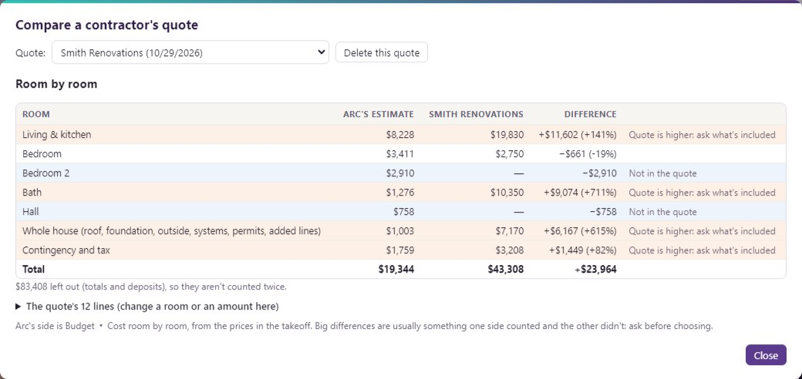
- Every line with a dollar amount becomes an item. Arc guesses its room from the words: a room's name in the plan, kitchen words (cabinets, counters), bathroom words (shower, vanity, toilet), and so on, or a heading above it ("KITCHEN" then its items). Permits, electrical and "all rooms" work go to Whole house; tax goes beside contingency and tax; subtotals, totals and deposits are left out so nothing counts twice. Sizes and counts (36", 42 sq ft, 12 boxes) aren't read as money.
- Open The quote's lines to change any line's room or amount, or take a line out.
- A difference over 20% (and about $700) is flagged: Quote is higher (ask what's included), Quote is lower (check nothing is missing), or Not in the quote. Big gaps are usually something one side counted and the other didn't.
- Keep several quotes in the plan and switch between them; + A new quote… adds another.
Purchases & invoices
Budget ▾ → Purchases & invoices… keeps what's been bought for the job with the plan. Drop invoices and receipts on the window (PDFs or photos, several at once) or click + Add an invoice…. A PDF invoice is read for you: the supplier, invoice number, date, subtotal, tax and total are filled in to check; a photo is kept as a picture. Give each one its category (the estimate's categories, plus permits, rentals and subcontractor labour), the room it's for and whether it's paid. The window shows what's been spent and what's unpaid, and the estimate's budget against what's been spent for each category, in red where it's over. Tick Client on the invoices the client may see: PDF for the client lists only those.
Client brief & priorities (only you see it)
Budget ▾ → Client brief & priorities (only you)… holds everything about the client in one place: their details, the all-in budget, a contingency and the finishes & upgrades allowance, their first, second and third priorities and what matters least (the kitchen, the primary suite, curb appeal, the basement…), a quick survey with drop-down answers to fill in together (how long they'll stay, who lives there, entertaining, cooking, working from home, pets, upkeep, energy, accessibility, storage, a basement suite), your notes and a dated meeting log.
From that it suggests, from the designer tips: Put the money here (the biggest visual difference for what matters to them), Save here (what costs a lot and shows little for this client, or looks the same for less) and Don't skimp (what doesn't show but is hard to fix later), each with the reasons, such as First priority: Kitchen or Selling within 5 years: finishes that pay back at resale. It sets the budget against the plan's cost estimate after the contingency and splits the allowance across the rooms and trades, leaning to their priorities.
The brief is saved with the plan but never goes on the quote, the options page, the share page or a PDF. To send the plan file itself, use Save a copy for the client…: the copy leaves out the brief and the invoices you haven't shared. In ArcRes it's My brief & priorities: the same survey and suggestions for your own home.
Designer tips: where the money shows
Guide ▾ → Designer tips: where the money shows is a sheet to print and keep beside you with a client, in four columns: the biggest difference for the money (paint, the garage and front doors, the front elevation, layered lighting, the kitchen cabinets and island, one continuous floor, a fireplace wall, the stair…), the same look for less, what costs a lot and shows little, and what doesn't show but shouldn't be skimped (insulation and windows, ventilation, waterproofing, sound insulation, wiring for later), each marked for impact and relative cost, with where the eye goes first and a few rules that make a house look designed. The Client brief draws its suggestions from the same list.
Price books
In Budget ▾ → Takeoff & cost estimate…, Save price book… writes your prices to a spreadsheet (CSV) and Load price book… reads one back, so your own prices are ready for every job. Edit it in Excel or Google Sheets; lines are matched by their key, or by the item name and unit.
Quote for the client
Budget ▾ → Quote for the client… turns the takeoff into a one-page quote with your logo:
- Your company: name, phone, email, address, licence number, logo and colour, typed once and used on every quote.
- Client: who the quote is for and the job address.
- Prices: your markup on materials, tax, the deposit and how many days the quote is good for.
- Labour: your hourly rate and crew size. Arc estimates the hours for each section from the quantities; type your own hours over any of them.
- Extra lines for anything not drawn (permits, disposal, travel), and the scope of work and terms in your own words.
The preview updates as you type. Show the work as one total, section by section, or line by line. Save PDF numbers the quote (Q-2026-001, …) and marks it as sent; change its status to accepted, deposit paid or paid as the job goes on.
The first time the quote is saved as a PDF (or marked accepted), Arc remembers that version of the plan as the agreed starting point for change orders.
Pre-existing work (renovations)
For a renovation or addition, draw what's already there, then tell the budget what isn't new. Select the walls, doors, windows, floors, furniture or anything else that's already built and click Mark as pre-existing… in the side panel (or Modify ▾ → Mark as pre-existing). Then choose what's happening to it:
- Keep as it is: it stays on the plan but isn't costed. Tick any work on it you do want costed: repainting, a feature wall (accent paint, wallpaper or panelling), patching drywall, refinishing a floor, painting a ceiling, new baseboard, new door hardware or trim, refinishing cabinets, and so on.
- Being replaced: the new one is costed as usual, plus taking out the old one.
- Being removed: only taking it out is costed. It leaves the finished plan, the 3D model and the sheets (a door or window taken out of a kept wall is filled in).
The whole house at once: Modify ▾ → Mark the whole house as pre-existing… (or Whole house… beside Existing in Layers). Choose every floor or just this one and tick what's already built (walls, doors and windows, floors, roofs, stairs, cabinets and fixtures, ducts, pipes and wires; furniture and the yard if you like), then the same keep, replace or remove question. Anything you draw afterwards is new and costed.
When you mark a wall, its doors and windows can be marked the same way. The estimate gets a Demolition & removal section (with a haul-away line) and a Work on existing section; Arc's quote adds labour hours for both. Footings, slab and floor framing under pre-existing rooms and walls are left out too.
At the bottom of the Layers list are two reference layers, hidden and locked to start; the plan, model and sheets work as normal whatever they're set to:
- Existing holds everything marked pre-existing. Show it (the eye) to see those things highlighted: kept walls hatched, everything else outlined in brown. While it's locked, pre-existing things can't be selected or moved by accident; unlock it to change one (a new window in a kept wall, say, or the work ticked on it), and use Status in the side panel to set it back to New (costed).
- Removal holds what's being taken out. Show it to see red dashed outlines where those walls and things were, for reference. List… lists them all, with a way to put any of them back.
Measuring an existing home
These in Review ▾ help when the plan is a real house you've scanned and measured:
- Scan vs tape measurements…: walls brought in from a LiDAR room scan remember the length the scan gave them. Once you've typed in what the tape says (the wall's Length in its panel), this lists every scanned wall with the scan's length, its length now and the gap, biggest first. Gaps over 3" are flagged to measure again. A scanner draws each inside wall as one line, so a few inches either way is normal in small rooms; Show finds the wall.
- To confirm on site…: a checklist kept in the plan for the guesses you made (which way a door swings, a window's type, a closet's depth). Select a door, window or wall first and the item is tied to it, so Show finds it on the next visit. Tick each off when it's checked.
Renovating an older house? Type the year the house was built at the top of the list (or in Project settings, or when you mark the whole house pre-existing; an Edmonton lot brings it from the city's record). Arc adds what to test for in a house of that age before walls, ceilings and floors are opened: asbestos (built before 1990), lead paint (before 1960, possible to 1990), knob-and-tube wiring (to the 1940s), aluminum wiring (mid-1960s to late 1970s), foam insulation, UFFI (1980 or earlier), Poly-B pipe (mid-1970s to 1998), Kitec pipe (about 1995 to 2007) and a radon test (every house). Each says where to look, why it matters and what to do, with a link to the Health Canada or Alberta page it comes from. They are reminders to test, not findings: only a lab or a licensed trade can say what is really there. When the plan takes out part of the house, Design check adds one note until asbestos and lead paint are ticked off.
For tear-out, the estimate sizes the haul-away: one 20-yard dumpster per 18 cubic yards or so of debris (drywall, flooring, roofing and so on, by what's marked Being replaced or Being removed), and a Disposal line for the tipping fees by the yard.
Room scan plus tape measurements
A room scan gets the shape right and the sizes nearly right: a scanner draws each inside wall as one line, so rooms come out a few inches off. Type what your tape measure says, and Arc moves the walls to suit:
- Along a wall: select the wall; its panel has a Tape box for each side, named by the room that side faces (Tape (Kitchen), Tape (Hall)). Type what you measured along that face, inside corner to inside corner.
- Wall to wall: select two facing walls (Shift+click the second) and open Review ▾ → Tape measurements & fit the walls…, then type the distance between them.
- Fit the walls to the tape (in the wall panel, that window, or Scan vs tape measurements) works out where each wall has to be. Each wall keeps its direction and only slides sideways, corners stay joined, and walls nobody measured stay where the scan put them. Walls marked Can't be moved stay put.
- The preview shows the plan now (grey, dashed) and after the fit (dark), with a tag on each wall saying how far it moves, and each measurement: the tape, the plan now and after the fit. A measurement that can't be met without upsetting the others is flagged: check it with the tape (or which side of the wall it was taken on).
- Apply moves the walls; doors and windows keep their distance from the nearer corner and rooms follow their corners. Undo puts it all back.
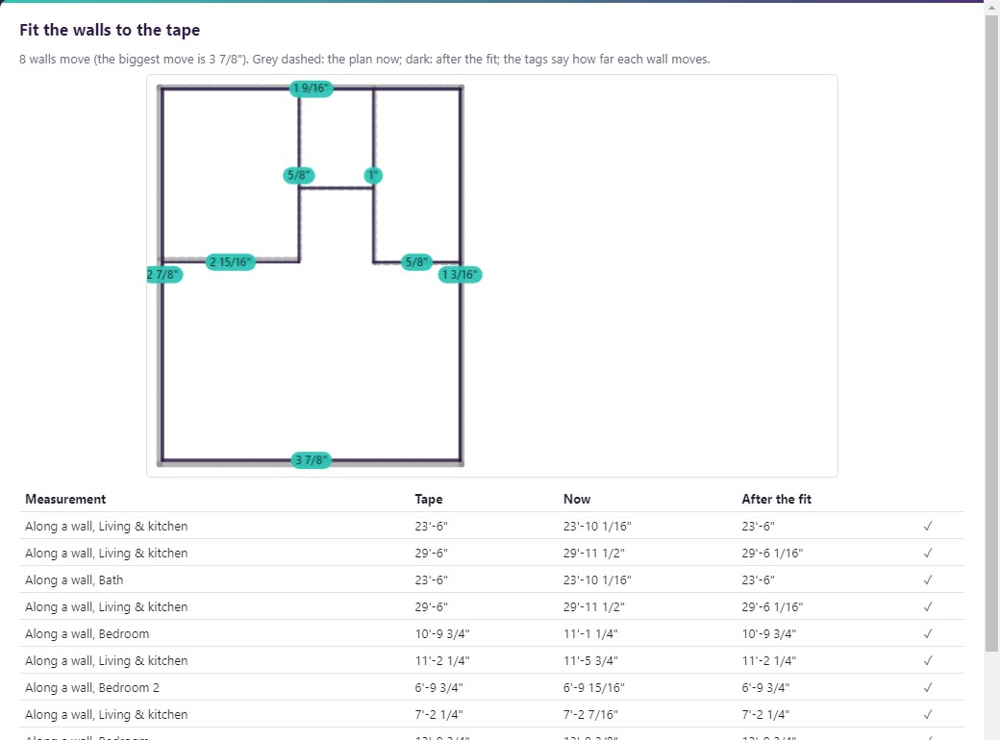
Aging-in-place check
Review ▾ → Aging-in-place check (bathrooms)… looks at each bathroom (rooms named bath, ensuite or powder, or with a toilet, shower or tub in them) for what lets someone use it safely for life:
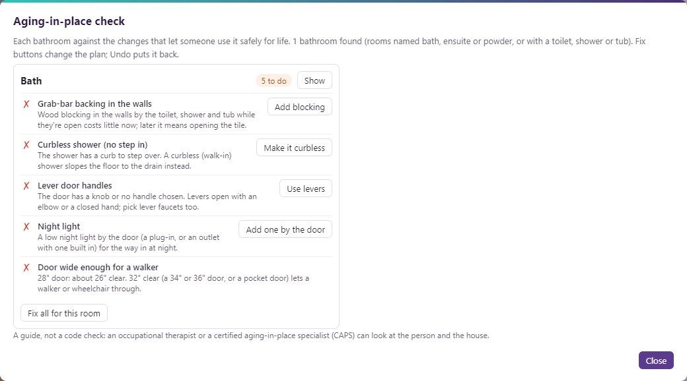
- Grab-bar backing in the walls: wood blocking by the toilet, shower and tub while the walls are open, so grab bars can go up any time. Add blocking marks the room and adds a line to the estimate.
- Curbless shower: no curb to step over. Make it curbless sets the shower to Walk-in. A tub alone gets advice (a curbless shower in a 60" × 30" tub space is the usual change).
- Lever door handles open with an elbow or a closed hand. Doors now have a Handle setting (Knob or Lever, shown in 3D; Not shown, as before, until you choose). Use levers sets the bathroom's doors.
- Night light: a low light by the door for the way in at night. Add one by the door puts a Night light block (Electrical) on the wall beside the latch side, 16" up.
- Door wide enough for a walker: 32" clear (a 34" or 36" door, or a pocket door). This one is a note only: widening a door is a design decision.
Fix buttons change the plan; Undo puts it back. It's a guide, not a code check: an occupational therapist or a certified aging-in-place specialist can look at the person and the house.
Change orders
When the client asks for something different after the quote, change the plan, then open Budget ▾ → Change orders…. Arc compares the plan with the agreed version (or with the last change order) and lists every line that changed: what it was, what it is now, and the cost of the difference with your markup, plus the change in labour hours at your rate.
- Give it a title and a reason, the days added, and any extra lines that aren't drawn (a permit revision, haul-away; type a minus amount for a credit).
- Make change order numbers it (No. 1, No. 2, …). Its page shows the changes, this change's total, the original contract, earlier approved changes and the new contract total, with signature lines for the client and you.
- PDF… saves it to send and marks it sent. Set it to Approved when it's signed: the contract total at the top goes up, and the next change order starts from there. A declined one is left out.
Plans quoted before this version have no starting point yet: if the plan hasn't changed since the quote, click The plan as it is now is what was agreed.
Selections & allowances
Budget ▾ → Selections & allowances… lists what was chosen for each room (its paint colours from the room's palette, flooring, trim, furniture, lighting, fixtures and built-ins, with prices from the shopping list) and compares each category with its allowance. Type the allowance as a total (Lighting $2,000) or a rate per unit (Flooring $8 per sq ft); the summary shows what's over and under. The PDF ends with a client approval page to sign. Add the overage to a change order puts a line for each category over its allowance into the next change order. With Pro tools off (ArcRes) it is your own sign-off: the window asks for Your name, the page is a homeowner approval, and there is no change order.
Phase schedule
Budget ▾ → Phase schedule… (in ArcRes, Budget ▾ → Project timeline…) puts the job on a working-day calendar: permits and site prep, foundation, framing, roofing, windows, doors and siding, rough-ins, insulation, drywall and paint, interior finishes, outdoor work and the final inspection, each starting when what it depends on is done. Red diamonds mark the inspections, with a couple of days to book each one before the next phase starts. Pick the start date and whether you work Saturdays.
- In Arc, each phase's length comes from the quote's labour hours for its trades divided by the crew on it (8-hour days); phases with nothing priced get a typical length for a house this size, and phases with nothing in the plan (no new walls, say) are left out.
- In ArcRes, the lengths are typical for a home of this size: just phases and dates.
Type over any length (clear it to go back), untick a phase you're not doing, and Save PDF… for a chart and a table of dates. Weather, permits and material lead times can move the dates.
Renovation diary (Budget ▾): as the job goes, the day each phase really started and finished beside the planned days, notes, and up to four photos a phase. It's saved with the plan and Save as PDF prints it for your records, the insurance file or the next owner.
House phases: building or renovating in stages
Most renovations, and many new houses, are done in stages: the kitchen this year, the basement next, an addition in a few years. Budget ▾ → House phases: stage by stage… (Arc and ArcRes; Ctrl+K → phases) keeps the stages in order:
- The phases: + Add a phase, give each a name (Phase 1: basement, Future addition) and a target date, and put them in order with ↑ ↓. Existing is always first: everything marked pre-existing (see Pre-existing work).
- Put work in a phase: select walls, doors, windows, rooms, blocks or anything else that gets built, then pick its Phase in the side panel, or right-click → Put in phase…. Work with no phase counts as the first phase. A door or window goes with its wall when the wall is new. For something pre-existing, its phase is when the work on it happens: when it's taken out, replaced or repainted.
- Finish later: a wall's or room's Finishes in (drywall, paint, tile, flooring, trim) can be a later phase: frame the basement now and finish it next year. The estimate moves those costs to the later phase.
- See the house after a phase: Show the house picks As it is now or After any phase; the plan and the 3D view show what's built by then, with what that phase takes out gone. Later phases are hidden, or drawn faint so you can see what's coming. A note at the bottom says what's showing; click it to show everything again. The takeoff, the budget and the sheets always count the whole plan.
- What each phase costs: each phase's estimate (the takeoff's materials with contingency and tax) and build budget (with labour, the builder's fee, tax and contingency), against a budget you type, with what's left over. The soft costs (permits, design, insurance) are counted once for the whole job. The takeoff and the build budget show the same split.
- Drawings for one phase: Drawings on a phase's line (or Make drawings for each phase) adds sheets numbered P1-, P2-…: for each floor that phase works on, the floor before it, a demolition plan of what it takes out, and the plan with its new work (earlier phases drawn as existing, later ones left off). That's a permit set for phase 1 alone. Making them again replaces them.
- What to test for first: when a phase takes out, replaces, works on or cuts into part of an older house, the window lists what to test for before it starts, from the year the house was built (Project settings): asbestos, lead paint, old wiring, foam insulation, Poly-B or Kitec pipe. Work on the lowest floor reminds you to test for radon again the winter after. Review ▾ → To confirm on site has what to look for and who to call.
A plan with no phases is just as it was. Taking a phase out (✕) gives its work no phase again.
Where the diary photos go. On a computer, Save keeps each diary photo once, as its own file, in a folder beside the plan named after it: House.aarc and a House photos folder. That keeps the plan file small, so it saves quickly. Keep the two together when you move, copy, rename or email the plan (OneDrive and Dropbox sync both). Arc also keeps a copy of each photo for itself, so on your own computer Backup copies and a plan moved on its own still show them. If a photo can't be found, the plan still opens, the diary says Photo not found where it was, and saving keeps its place, so it shows again once the folder is back. Arc never deletes these photo files. In a browser or on an iPad the photos stay inside the plan, and a plan saved on a computer shows its diary photos as not found there. Plans saved this way need Arc 0.90 or newer; an older Arc warns before opening them.
Markups & RFIs
To send questions back to the builder, pick the Markup tool under Notes on the tool bar (key I) and mark up the plan, or a builder's PDF you brought in:
- Cloud round an area: click two corners (or drag).
- Arrow to something: click the thing, then where the words go.
- Note on a spot: one click drops a pin.
Each one asks for words and can carry a photo from the site. Tick It's a question for the builder and it becomes a numbered RFI (RFI 001, 002, …), red while open and green once answered. Click one with the Select arrow to edit it, type the builder's answer or change its status. Review ▾ → Markups & RFIs… saves one PDF with the RFI log (question, where it is, status, answer), the marked-up plan of each level (with the builder's PDF under it) and the photos.
Photo pins: where each site photo was taken. In the Markup tool, choose Photo pin, click where you stood, then the way the camera faced, and add the photo. The pin shows on the plan as a camera with a wedge as wide as the photo. Select it to see the photo, say what it shows, and set the Lens (a phone's main camera is about 65° wide; its 0.5× wide camera about 100°) and the Camera height (60" for a phone held at eye level).
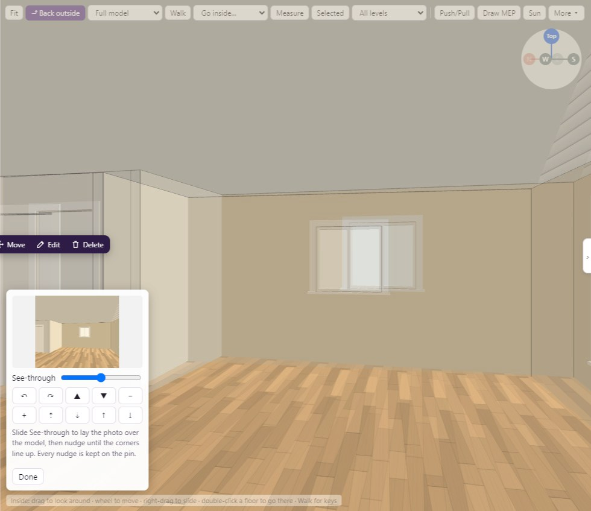
- Line up with this photo opens the 3D view from the pin (wider than the plan while you work), with a card holding the photo. Slide See-through to lay the photo over the model.
- Nudge until the corners, windows and doors line up: turn left or right, look up or down, wider or narrower (the lens), camera higher or lower, a step forward or back. Each nudge is kept on the pin, so next time it opens lined up. Done puts the views back.
- A pin lined up this way is a ready camera for side-by-sides of the real room and the model, and for checking a model against the photos.
8. Hands-on lessons
36 lessons you do in the program, with a panel over the plan that walks you through each step and ticks it off by itself when it sees the work done. Open them from Guide ▾ → Hands-on lessons…, the welcome screen, or Ctrl+K → lessons. They're in groups, as in the program: start with the first few, then pick any you like. The first time you use a feature that has a lesson, a small card offers it: Start the lesson or Skip (it won't ask again).
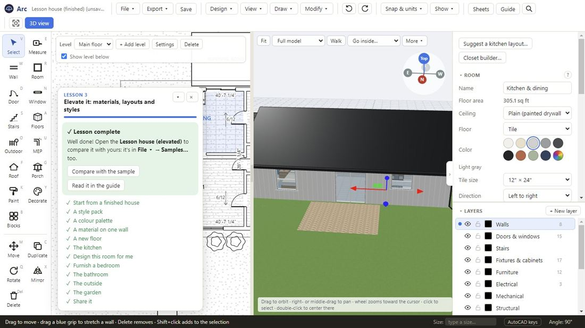
- Show me points at the button or setting the step needs (it opens a menu first if it has to).
- Skip and Back move between steps; click any step in the list to jump to it. The ▾ button folds the panel down to one line; × closes it and keeps your place.
- In the way? Drag the panel by its title bar (the ⠿ dots) to anywhere in the window, with the mouse or a finger. It stays where you put it until you close Arc; double-click the title bar to put it back. The same goes for the other floating cards: the lesson offer, the video player, the wall face designer, the 3D tour list and the photo line-up card.
- Each lesson opens its own practice plan, so save yours first if it asks. Many start from the Lesson house sample: every stage is in File ▾ → Samples… → Lesson house (the Empty lot, the Finished simple house and the Elevated one), to compare with your own.
- At the end, the panel says where to find the lesson again, and Do it again starts it fresh.
| Lesson | What you do | Time |
|---|---|---|
| Start here: a house | ||
| 1. Getting started with the tools | Draw a wall and a room, add a door and a window, measure, move around the plan, see it in 3D and find any command. | 10 min |
| 2. Build a simple house | On the Lesson house lot: outside walls, inside walls, rooms, doors, windows evenly spaced, floors, smoke alarms, a roof and a porch. | 25 min |
| 3. Elevate it: materials, layouts and styles | Take the simple house further: a style pack, a colour palette with an accent wall, materials, a kitchen, furniture, a bath, the outside and the garden. | 25 min |
| 4. Do it with me: the Lakeside House | Build a high-end modern house on a lake from the empty lot: stone and wood, walls of glass with a glass corner, an upper floor that overhangs the terrace, flat roofs, a style in one click, a kitchen and furniture designed for you, a terrace, a pool and outdoor living. | 30 min |
| 3D printing | ||
| 5. 3D printing: an object, then a house | Draw a small part to exact sizes in millimetres and cut a hole in it, read the print checks, then print a house as floors and a roof that peg together, fixing the warnings as you go. | 12 min |
| 6. Do it with me: rock walls and cliffs | Draw a rock wall on a small landscape with the Rock tool, change its rock, colour and the size of its stones, colour some stones lighter, turn it into a mountain cliff, and save a test tile to print. | 15 min |
| 7. Do it with me: a stone wall with arches | Cover the front of a small landscape with a carved stone facing, make it a storybook wall with columns and arches with lanterns, move an arch, add a little arched window, and see how it prints. | 10 min |
| 8. 3D Print workspace: plates and the colour change | Open the 3D Print workspace, see how a model base is cut into plates with puzzle tabs, change the plate sizes, and find the layer where the filament changes colour. | 8 min |
| 9. 3D Print workspace: surfaces and printed inserts | Soften the cobblestones on a street, make it your own paving, turn a raised square into a printed insert that drops into a pocket, change how much snow lies on it, and split it to fit the bed. | 10 min |
| 10. 3D Print workspace: parts and part numbers | See how Arc breaks a model into printable parts, print two shapes as one part, give a layer its own part-number letters, read the parts list, and re-make only what changed. | 8 min |
| 11. 3D Print workspace: the mesh doctor | Find out what "watertight" means: see the open edges of a broken cup in red, patch its hole, check it again, and check a shape you drew. | 6 min |
| Find your way round, and the budget | ||
| 12. Find your way round the menus | What each menu on the top bar is for, in the order you'll use them, and how to find anything by typing a word. | 5 min |
| 13. The budget: costs, prices and what each wall costs | Open the parts list, type your own prices, use a typical one or a sub's price, look up the price list, add costs that aren't drawn, see one wall's budget, set a shopping budget, and plan the job. | 10 min |
| Change what you've drawn | ||
| 14. Make and edit your own block | Choose a sofa's legs and cushions, take a block apart on its own (nothing else can move), change it and save it as your own, then build a block from 3D shapes. | 10 min |
| 15. Your own 3D models: bring one in, check it, keep it | Bring in a maker's 3D model (a lounge chair), check its size, give its parts your own finishes, and keep it in My models for every plan. | 6 min |
| 16. Bring in a maker's product | Import a manufacturer's 3D model as a block (GLB, OBJ, FBX, DAE, STL or 3MF), fit it to size, then read in a product list with sizes, prices and links and place one. | 8 min |
| 17. Edit in 3D: one part at a time, and feature walls | Work on just one part (the rest fades and can't move), lock the 3D view while you click, and draw on a wall in 3D with a kit of real materials: shiplap inside, shutters and trim outside. | 10 min |
| 18. Draw on a wall: stone below a sloped line, shapes, half-timbering | Draw a line across an outside wall and fill one side with stone and the other with stucco, fill a circle or a freehand shape, and half-timber a zone. The wall stays one wall, and each zone is counted as what it is. | 8 min |
| 19. Stairs: sizes, single steps and curves | Change a stair's height and width, edit one step (a rounded bottom step), then draw a curved stair and fit it to the code. | 8 min |
| 20. Big glass: bays, joined windows, sliding walls and skylights | On a small cottage: a bay window with a seat, a picture window joined to casements, a wall of sliding glass, a pivot front door and a skylight with a light shaft, then see them in the schedule and the budget. | 10 min |
| 21. A custom kitchen and bath: an island, a tiled shower and shop drawings | Build an island from real cabinets with waterfall ends, draw a curbless tiled shower with a bench and a linear drain, and make the cabinet maker's shop drawings and cut list. | 10 min |
| 22. An indoor golf simulator | Draw a 14 × 20 ft room with a 10 ft ceiling, put in the enclosure, the hitting mat and a launch monitor, and let the Design check find what would get in the swing. | 8 min |
| 23. Porches and decks, piece by piece | Move or remove one porch column, slide the steps, leave a railing off one side, then draw a deck and set each side's railing and posts. | 8 min |
| 24. Framing: studs, cut-outs and joists | See the studs in 3D, double up studs or build a post, frame a cut-out, change one wall's spacing, and put closer joists under a heavy room. | 8 min |
| 25. Only the checks you ask for, and the engineer's notes | Tick the heat loss on in Checks & analysis, open it, then keep the engineer's size for a window header as a Project note that shows on the drawings. | 6 min |
| 26. Pipes & wires: wiring, runs and their points | Have Arc place outlets, lights and the wiring, read the circuits, reroute a pipe by its points, draw your own wire, and look at a clean floor plan. | 8 min |
| Newer tools: locking, painting, options and costs | ||
| 27. Lock part of the plan, move the rest | Use the quick bar over a selection, lock part of the house together so it can't move, box-select and move everything else around it, then unlock it in one click. | 5 min |
| 28. Paint a room, a floor or the whole house at once | Paint every wall in a room with one click, then a whole floor, and put one wall's finish on all the walls from its panel. | 5 min |
| 29. Options & upgrades a homeowner can choose | Give a room a coffered ceiling, see what it adds over a flat ceiling with its own material list, leave it out and watch the plan change, mark the patio optional, and make the homeowner's options page. | 8 min |
| 30. Try another version: design options and exterior looks | Keep the plan as Option A, make Option B, give B a farmhouse exterior in one click, compare the two side by side, and switch back. | 6 min |
| 31. More budget tools: price tags, room costs, printing and backups | See where every price comes from and undo one, split the estimate room by room, print the floor plan in one click, and find Arc's backup copies. | 6 min |
| Drafting by typing | ||
| 32. CAD drills: exact drawing by typing | Five short drills done with typed sizes and commands, the AutoCAD way: a 3600 × 4200 room, a 900 door centred on the long wall, walls from typed points, a rectangle with @, and a line squared off a wall. | 15 min |
| Start from your lot | ||
| 33. Start from your lot: its size, shape and setbacks | New lot from the lot's size and setbacks: a pie lot, any shape typed side by side or from a Real Property Report's bearings, an Edmonton address that fills it all in, and the building area the house has to stay inside. | 6 min |
| 34. Do it with me: your Edmonton lot from SLIM Maps | Find your lot on the city's SLIM map (maps.edmonton.ca), measure its sides and take a picture of it, then make it in Arc: the address lookup, your measurements, the picture under the plan, scaled and lined up, and the zone's rules in the Design check. | 15 min |
| 35. Site plan: grading and drainage | A new house on its lot: see where the ground slopes, level a patio and read its cut and fill, follow the water from a downspout, and list what to sort out before digging. | 15 min |
| One floor at a time, and layers | ||
| 36. One floor at a time, and freezing layers | Show just one floor on the plan and in 3D, step up and down floors, freeze a layer you don't want to see, use a quick set, and look inside the walls as they're built. | 5 min |
Start here: a house
Lesson 1: Getting started with the tools
Draw a wall and a room, add a door and a window, measure, move around the plan, see it in 3D and find any command. About 10 minutes · 13 steps · starts with a new plan
1Welcome
This panel walks you through each step and ticks it off when it sees it done. The tools are on the left, the panel on the right shows the settings for the tool or whatever you select, and the status bar at the bottom always says what to click next.
2Pick the Wall tool
Click Wall on the tool bar, or press W. The letter in each tool's corner is its key.
3Draw a wall by typing its length
Click once on the plan to start the wall. Point to the right, then type 12' and press Enter. You don't need to click in the Size box: just type. Press Esc to stop drawing.
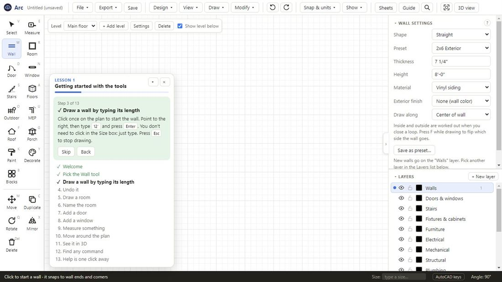
4Undo it
Everything can be undone. Press Ctrl+Z (or the curved arrow on the top bar) until the wall goes away. Ctrl+Y brings it back.
5Draw a room
Pick Room (R). Type 12' x 10' and press Enter, then click where the top-left corner goes. Four walls and the room appear at once.
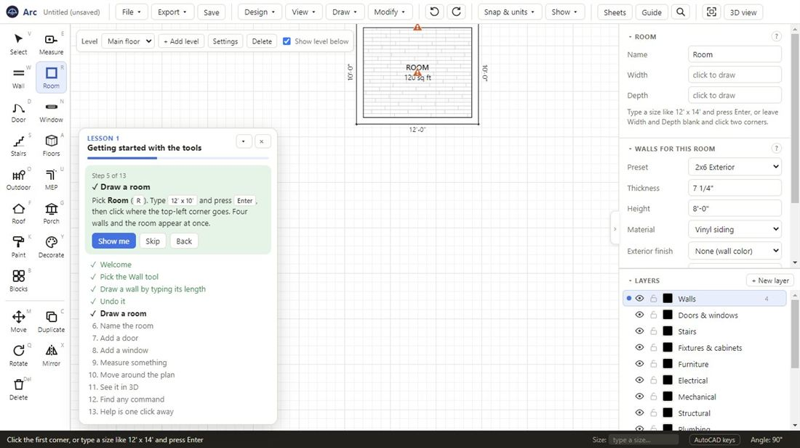
6Name the room
Pick the Select arrow (V), click inside the room, and type a new name in the panel, like Office. Press Enter or click away to keep it.
7Add a door
Pick Door (D) and hover over a wall: the distance to each end shows. Click to place it. The door swings toward the side your cursor is on; F flips the hinge.
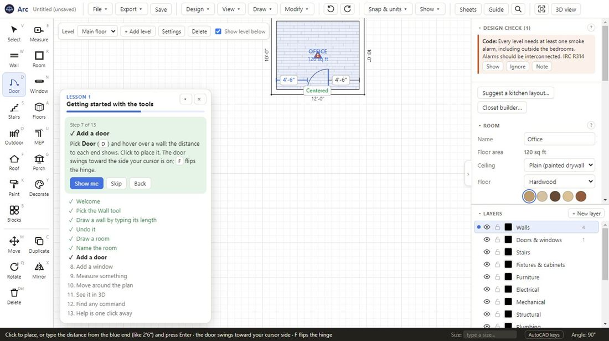
8Add a window
Pick Window (N) and click another wall. Choose the window's type and size in the panel first if you like.
9Measure something
Pick Measure (E) and click two points, like opposite corners of the room. The length shows on the plan; nothing is added. Esc clears it.
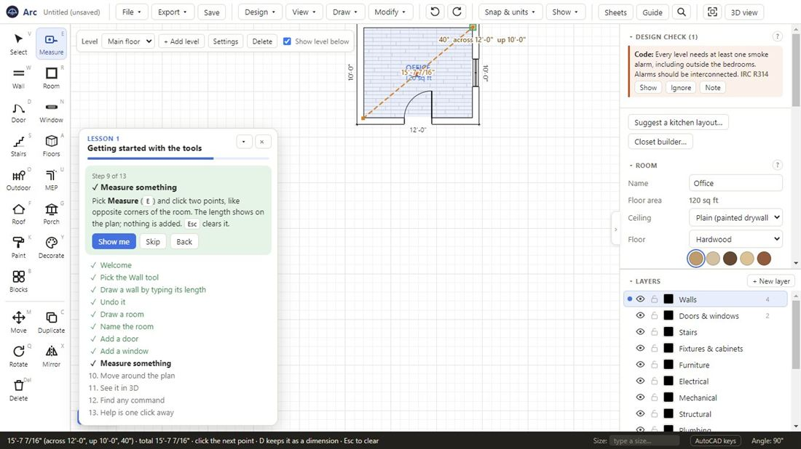
10Move around the plan
Scroll the mouse wheel to zoom toward the cursor, and drag with the right button (or hold Space and drag) to slide the plan. On an iPad, pinch and drag with two fingers. Z (on an iPad, Fit on the top bar) fits everything back on screen.
11See it in 3D
Click 3D view on the top bar. Drag to turn the model, right-drag to slide, scroll to zoom. Everything you draw shows up there straight away.
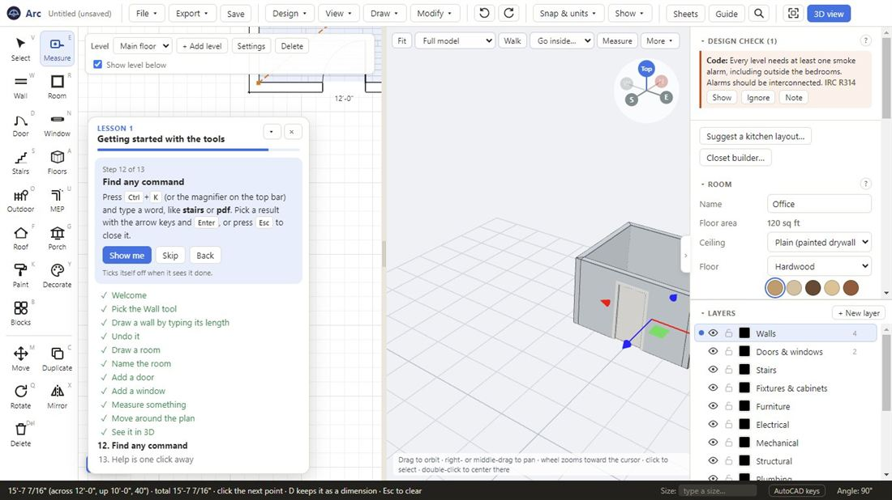
12Find any command
Press Ctrl+K (or the magnifier on the top bar) and type a word, like stairs or pdf. Pick a result with the arrow keys and Enter, or press Esc to close it.
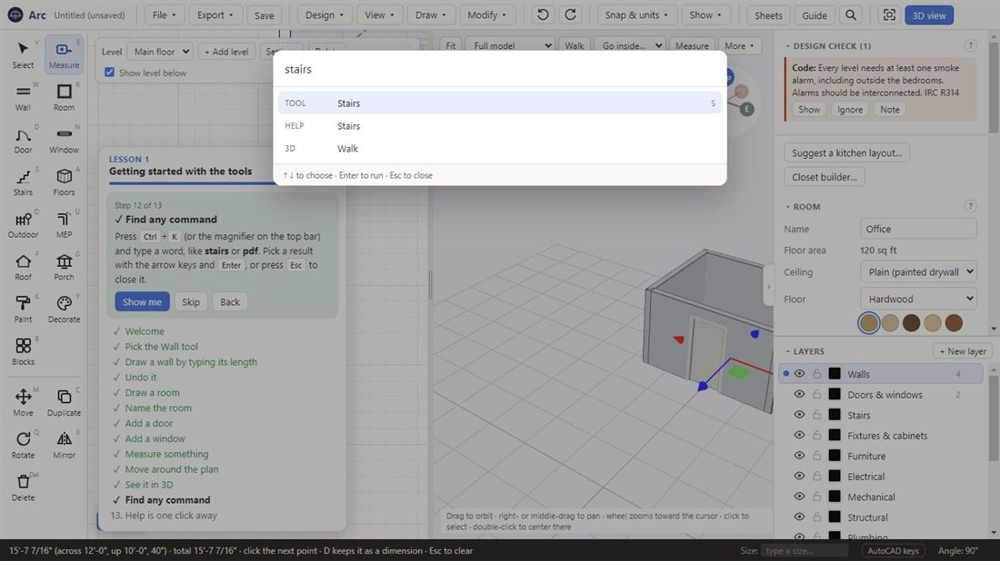
13Help is one click away
Most headings in the side panel have a small ? on the right: it opens the guide at that topic. The Guide ▾ menu on the top bar lists every video lesson (each plays in a small window beside your drawing), the hands-on lessons, this guide and the quick reference card. That's the tools: next, build a whole house.
Lesson 2: Build a simple house
On the Lesson house lot: outside walls, inside walls, rooms, doors, windows evenly spaced, floors, smoke alarms, a roof and a porch. About 25 minutes · 14 steps · starts from the Lesson house (empty lot)
1The lot
This is your lot: the red dashed line is the property line, with the street at the bottom. The blue dashed outline is where the house goes: 40' × 28' inside. You'll build a living room and kitchen on the left, two bedrooms and a bath on the right.
2The outside walls
Pick Room (R). In the panel, set Preset to 2x6 Exterior and Size measured to Inside (room size). Type 40' x 28', press Enter, and click the top-left corner of the blue outline.
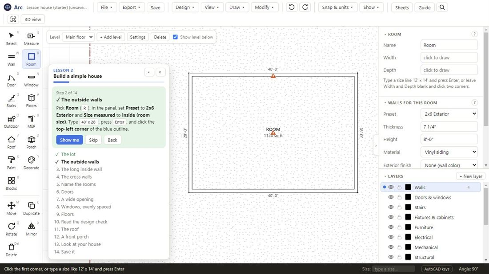
3The long inside wall
Pick Wall (W) and set Preset to 2x4 Interior. Draw a wall from the front to the back of the house 24' from the left side: click on the front wall, click on the back wall, then Esc. Hover first: the distances show as you move. The room splits in two by itself.
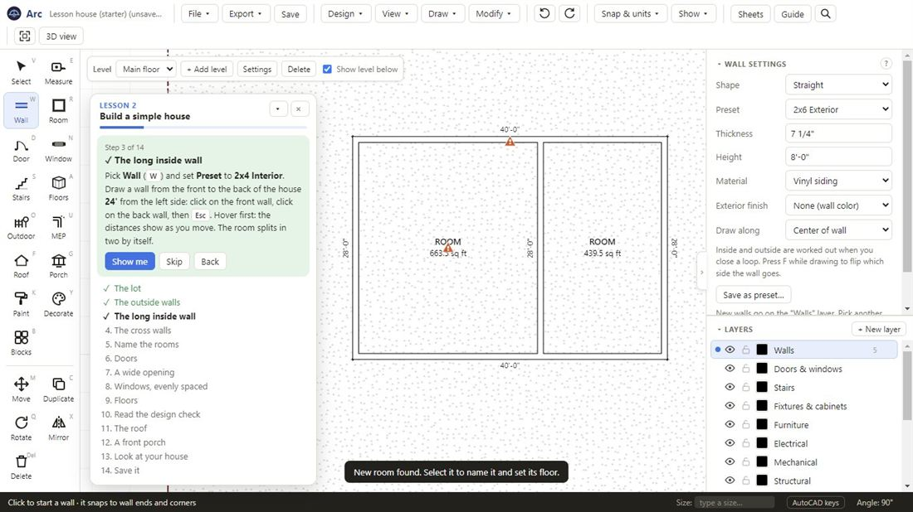
4The cross walls
Still with the Wall tool, split the right side into three: a wall 11' up from the front, and another at 17' (that's the bath between them). Then on the left, a wall 15' up from the front, from the outside wall to the long wall: living room in front, kitchen behind. Press Esc after each.
5Name the rooms
Pick the Select arrow, click each room and name it in the panel: Living room, Kitchen & dining, Bedroom 2, Bathroom, Primary bedroom. Names matter: the design check, the furniture suggestions and the takeoff all read them.
6Doors
Pick Door (D). Put the front door on the front wall of the living room, and a door from the living room or kitchen into each bedroom and the bath (make the bath door 30" wide in the panel). The door swings toward your cursor; F flips the hinge.
7A wide opening
Between the living room and the kitchen, use an opening with no door: in the Door tool's panel set Type to Cased opening (no door) and Width to 8', then click the wall between them.
8Windows, evenly spaced
Pick Window (N). In the panel's Several at once section set How many to 2 and Spacing to Equal sections, then click the living room's left wall: two windows, evenly spaced. Set How many back to 1 and add one over the kitchen sink. In the bedrooms, set Type to Casement first: it opens all the way, so it's big enough to climb out of in an emergency (the design check tells you if a bedroom window is too small).
9Floors
Open Finishes on the tool bar and pick Floors (A). Choose Hardwood and click the living room and kitchen, Carpet for the bedrooms, and Tile for the bathroom. Each click sets that room's floor and baseboard.
10Read the design check
Click an empty spot on the plan: the panel shows the Design check. It asks for smoke alarms in each bedroom and outside them. Pick Blocks, choose Electrical → Smoke / CO detector, and click inside each bedroom and the living room. The warnings clear as you go.
11The roof
Open Roof on the tool bar and pick Roof (F) and click inside the house: the roof follows the outside walls. Select it later to change the style (gable, hip, shed…), the pitch and the colours.
12A front porch
Open Stairs & decks on the tool bar and pick Porch (G). Click two points along the front of the house, either side of the front door, then click how deep the porch goes (about 6').
13Look at your house
Click 3D view and turn it round. Try Go inside… on the 3D toolbar to stand in a room.
14Save it
Press Ctrl+S (or Save on the top bar) and give your house a name. Lesson 3 starts from a finished house, so you can use yours or the sample.
Lesson 3: Elevate it: materials, layouts and styles
Take the simple house further: a style pack, a colour palette with an accent wall, materials, a kitchen, furniture, a bath, the outside and the garden. About 25 minutes · 12 steps · starts from the Lesson house (finished)
1Start from a finished house
This is the house from Lesson 2. You'll restyle it inside and out, furnish it and plant the garden. Open the 3D view beside the plan to watch each change as you make it.
2A style pack
Open Design ▾ → Style packs…, pick a look (say Craftsman or Modern farmhouse) and click Apply style. Siding, roof, floors, cabinets and inside paint all change at once; Undo takes it back.
3A colour palette
Open Finishes on the tool bar and pick Decorate (Y), choose a palette in the panel, tick Accent wall if you like, and click the primary bedroom. Each colour has a job: walls, accent, trim, ceiling and fabrics.
4A material on one wall
Open Finishes on the tool bar and pick Paint (K). Choose a category like Wallpaper or Stone, pick one, and click a wall in the living room: only the side you click changes.
5A new floor
Open Finishes on the tool bar and pick Floors, choose a different floor (try Tile with a pattern, or a darker wood with wider planks) and click a room to change it.
6The kitchen
Select the kitchen, then Design ▾ → Kitchen layout…. Pick a layout: cabinets, counters, sink and appliances go in, in your style.
7Design this room for me
Select the living room, then Design ▾ → Design this room for me…. Three arrangements are scored for comfort; click Use this arrangement on the one you like.
8Furnish a bedroom
Do the same for a bedroom: select it and choose Design this room for me… again (the room type follows its name).
9The bathroom
Pick Blocks (B), choose Bathroom, and place a tub, a vanity and a toilet. Bring each near a wall: it turns to sit against it.
10The outside
Select an outside wall and change its Exterior finish or colour in the panel (or keep the style pack's and change the roof colour instead: select the roof).
11The garden
Pick Blocks → Landscaping and add a few shrubs along the front and a tree. Then open Yard on the tool bar, pick Outdoor (O), choose Patio, and click the corners of a patio outside the back door.
12Share it
Open Design ▾ → Mood board… for a one-page board of the palette, materials and furniture, and Budget ▾ → Shopping list & budget… to see what it all costs. In the 3D view, Render makes a photo-like picture. Your house is elevated!
Lesson 4: Do it with me: the Lakeside House
Build a high-end modern house on a lake from the empty lot: stone and wood, walls of glass with a glass corner, an upper floor that overhangs the terrace, flat roofs, a style in one click, a kitchen and furniture designed for you, a terrace, a pool and outdoor living. About 30 minutes · 19 steps · starts from the Lakeside House (empty lot)
1The lot
The lot slopes down to the lake on the south. The blue dashed outlines are where the ground floor and the garage go; the teal one is the upper floor, which reaches 8' past the ground floor to shade the terrace. Open the 3D view to see the lake.
2The ground floor
Pick Room (R). Type 44' x 30' and press Enter, then click the top-left corner of the big blue outline. Four walls and the room appear at once.
3The garage
Still with Room, type 24' x 24' and click the top-left corner of the small blue outline, on the east side. Its wall joins the house.
4Stone outside
Pick the Select arrow and drag a box round the ground floor to pick its walls. In the panel set Exterior finish to Stacked shale / ledgestone and the colour to Charcoal shale.
5Walls of glass
Pick Window (N) and set Type to Curtain wall (floor-to-ceiling glass), Width about 17'. Click the lake-side wall near its west end, then again near its east end. Leave a gap in the middle for a door.
6A glass corner
Select the glass at the west end. In the panel set Glass corner to the corner it touches: the post disappears and the glass turns the corner onto the west wall.
7A big sliding door
Pick Door (D), set Type to Sliding patio door and Width to 11', and click the gap between the glass. It opens the great room to the terrace.
8Front door and garage door
Still with Door: a Hinged door on the north side for the front door, then Type → Garage door on the north wall of the garage.
9The upper floor
Click + Add level on the level bar. Pick Room, type 36' x 38', and click the top-left corner of the teal outline. It hangs 8' out over the terrace, and the floor below it is made for you.
10Warm wood upstairs
Select the upstairs outside walls and set Exterior finish to Fiber-cement panels, colour Wood look (or Board & batten in natural cedar).
11Glass upstairs
Pick Window again (still Curtain wall) and put glass on the lake side upstairs: the bedrooms get the view. Try a glass corner here too.
12Flat roofs
Open Roof on the tool bar and pick Roof (F), set Style to Flat and Overhang to 3'. Click inside the upper floor. Then switch the level bar to the Main floor and click inside the garage: the roof covers only the part that sticks out.
13Name the great room
Pick the Select arrow, click inside the ground floor and name it Living room in the panel. The furniture suggestions read the name.
14A style in one click
Open Design ▾ → Style packs…, pick Japandi and click Apply style. Floors, cabinets and the colours on every wall and ceiling change at once. (Untick Outside walls and Roofs to keep your stone, wood and flat roofs.)
15The kitchen
Select the living room, then Design ▾ → Kitchen layout…. Pick a layout with an island: cabinets, counters, sink, appliances and the island go in, in your style.
16Design this room for me
With the living room still selected, Design ▾ → Design this room for me…. Three arrangements are scored for comfort; click Use this arrangement on the one you like.
17A terrace and a pool
Open Yard on the tool bar and pick Outdoor (O). Set Draw to Patio and the stone to Bluestone, and click the corners of a terrace along the lake side. Then set Draw to Water (stream, pond, pool) and draw a long pool on the terrace.
18Outdoor living
Pick Blocks (B), open Outdoor living, and add a few chaise lounges along the pool, a fire pit with an outdoor sofa, and a hot tub.
19See it from the lake
In the 3D view, orbit round to the lake side and turn on Sun (3D bar) for evening light. That's a high-end house in a few dozen clicks! Compare with the finished one: File ▾ → Samples… → Lakeside House → Finished.
3D printing
Lesson 5: 3D printing: an object, then a house
Draw a small part to exact sizes in millimetres and cut a hole in it, read the print checks, then print a house as floors and a roof that peg together, fixing the warnings as you go. About 12 minutes · 11 steps · starts from the “3D print: an object in millimetres” template
1A plan for printing
This plan is in millimetres at full size. The dashed teal outline is your printer's bed: anything inside it prints in one piece. Two shapes are already there: a base plate and a round post.
2Pick the 3D shape tool
Open Draw ▾ and pick 3D shape. Its panel sets the shape (rectangle, circle or outline) and how tall it is.
3Draw a block to size
Set Draw to Rectangle and Height to 8 mm. Click one corner on the plan, then type the size, width by depth, like 40 x 25, and press Enter (or click the opposite corner).
4Cut a hole
Your block is picked, so the panel shows its settings. Press Esc twice, open Draw ▾, pick 3D shape again and set Draw to Circle. Draw a small circle inside the base plate: a shape drawn inside another cuts a hole straight through it.
5Read the print hints
Pick the Select arrow and click a shape. The panel's 3D printing box gives its printed size and warns if it's too thin for the nozzle, too big for the bed, or would need supports.
6Check it for printing
Open Export ▾ → 3D print (STL files, plates, checks)…. Arc checks every part for your printer and lays them out on a plate. Green ticks mean it should print well.
7Now a house
Close the window. Next you'll print a house: open File ▾ → New from a template… and pick 3D print: a house model (two floors and a roof).
8Floors that peg together
Open Export ▾ → 3D print… again. With Pegs and sockets ticked, each floor gets small posts in its corners with a peg on top, and the floor above (and the roof's flat base) gets matching sockets.
9Make it too big, then fix it
Set Scale to 1:20. A red warning says the parts don't fit the bed, with a button for the scale that does: click it.
10Thin walls
Set Scale to 1:200 and untick Thicken walls too thin for the nozzle: the walls would print thinner than the nozzle can lay. Click Thicken thin walls for printing on the warning to fix it.
11Save the files
Set the scale back to 1:48 and click Save files…: one file per plate, one per part, and a print guide PDF with the slicer settings and how the parts go together. Open the plate files in Bambu Studio and print. That's it!
Lesson 6: Do it with me: rock walls and cliffs
Draw a rock wall on a small landscape with the Rock tool, change its rock, colour and the size of its stones, colour some stones lighter, turn it into a mountain cliff, and save a test tile to print. About 15 minutes · 15 steps · starts from the “3D print: a small landscape (plates, inserts and parts)” template
1Rock, as it really is
The Rock tool draws walls, ledges and cliffs in real rock: every stone stands out in 3D and in the print files, and it always keeps to the 45° rule, so it prints standing up with no supports. This board is 400 × 300 mm, at full size, so the rock is sized in millimetres.
2Pick the Rock tool
Open Yard on the tool bar and pick Rock. The panel shows a picture of each rock: laid stone on top (for walls and house finishes), natural rock below (for ledges and cliffs).
3Pick a rock
Click the Rough shale picture: thin slabs with lumpy faces and chipped corners.
4Draw the wall
Click near the back-left corner of the board, then near the back-right corner, and press Enter. The wall stands where you clicked, from the ground up to its Top of wall.
5See it in 3D
Click 3D view on the top bar and zoom in on the wall. Each slab has its own shade, and the joints are darker.
6Select it
Pick the Select arrow and click the wall on the plan. Its panel has the same pictures, and everything below them.
7Its colour
Click one of the colour squares under Colour: Rustic brown, say. Or click the box beside them for any colour at all. Every stone takes it, each a little lighter or darker.
8Some stones lighter
Drag How many to about 30%. A third of the stones turn the colour under Some stones in. In print they become a second piece, for a second filament.
9The size of the stones
Drag Stone size to bigger or smaller. Depth, Roughness and Wobble change how far the stones stand out, how lumpy they are and how much their lines wave. Reset the shape puts them back.
10Your own stone
Click Change this stone…: a window opens beside the panel, with a picture of the stones. Drag Thinnest row and Thickest row up, and let go: the wall's rows get taller. Then Save as My stone… and give it a name: it shows under My stones, and in My library for your other plans. Close the window when you're done.
11Carved blocks
Click the Carved blocks picture: square-cut blocks in rows, with rounded edges, chisel marks and deep joints, like a castle or a storybook wall. Two more sliders come up: Block length and Joint depth.
12A mountain cliff
Click the Mountain cliff picture: the same wall becomes a cliff of buttresses, bays and long cracks. Try Granite boulders and Limestone cliff too.
13More stones
Back to laid stone: try a few of the newer stones: Storybook boulders (fat rounded stones of mixed sizes, the village look), Castle wall, Railway stone, River rock or Split-face wall block. Each has its own sliders in Change this stone…: a split-face wall's Bond, say, or how many storybook stones are joined into big ones.
14A test tile
Click Save a test tile… near the bottom of the panel: a piece 50 mm long and 30 mm tall of this rock, as a Bambu Studio project, to try on the printer before the whole wall. In two colours it takes much longer, because the printer changes filament on every layer.
15Printing it
Open 3D Print on the top bar: the wall is a part of its own, standing up, with no supports. On a house, the Rock tool makes rock garden walls and retaining walls, and walls finished in Stacked shale or Stone veneer show real stones in 3D.
Lesson 7: Do it with me: a stone wall with arches
Cover the front of a small landscape with a carved stone facing, make it a storybook wall with columns and arches with lanterns, move an arch, add a little arched window, and see how it prints. About 10 minutes · 10 steps · starts from the “3D print: a small landscape (plates, inserts and parts)” template
1A stone facing
A stone facing is a carved stone face that covers the side of a model, like the walls of a storybook village. It is a piece of its own: it prints separately and lifts off. This board is 400 × 300 mm at full size, so everything is in millimetres.
2Pick the Rock tool
Open Yard on the tool bar and pick Rock.
3Draw a stone facing
In the panel, set Draw to A stone facing. (It's also Draw ▾ → Stone facing (on a model).)
4Along the front edge
Click right on the board's front edge (the bottom edge on the plan) near its left corner, then near its right corner, and press Enter. Because both clicks are on the edge, the facing covers the board's side, its face looking out.
5See it in 3D
Click 3D view on the top bar and zoom in on the front of the board: carved blocks in level courses, with longer, flatter stones along the foot.
6Select it
Pick the Select arrow and click the facing on the plan (the stone strip along the board's front edge).
7A storybook wall
Click Storybook wall in its panel: a stone column at each end and arches between, each in a ring of wedge stones with a keystone, a lantern hanging inside, a snow cap rolling over the top and drifts at the foot.
8Move an arch
Above the list, the face is laid out flat. Drag one of the numbered markers left or right: that arch moves along the wall. Or type where it goes in its row.
9A little window
Click Add arched window: a small arched lantern window goes in the widest stretch of plain wall.
10Printing it
Open 3D Print on the top bar: the facing is a part of its own. A lantern needs an arch at least 12 mm wide, because its glazing bars are 0.64 mm: smaller, and Arc leaves the lantern out and says why.
Lesson 8: 3D Print workspace: plates and the colour change
Open the 3D Print workspace, see how a model base is cut into plates with puzzle tabs, change the plate sizes, and find the layer where the filament changes colour. About 8 minutes · 7 steps · starts from the “3D print: a small landscape (plates, inserts and parts)” template
1A small landscape to practise on
This practice board is 400 × 300 mm, in millimetres at full size. It has a grey cobbled street, a raised cobbled square with a turntable hole, two trees and a lamp. Nothing here touches your own projects.
2Open the 3D Print workspace
Click 3D Print in the top bar. All the 3D printing tools are in its seven sections, beside the plan.
3Select the board
Open 2. Model ground and plates, then click the board's edge on the plan. The board is the model base: the ground on it is cut into plates that fit the printer's bed.
4Change the plate sizes
Type 150 in Column widths and press Enter. The plate line on the plan moves: L1F is 150 mm wide now and L2F takes the rest (250 mm), with puzzle tabs between them. (The last column always takes what's left.)
5Put it back
Press Ctrl+Z to undo. Changing plate sizes changes every plate in that row or column, so only do it if you'll print all of them again.
6The colour change
Read the colour-change line in section 2: below it the plates print in the base colour (grey), above it in the ground cover colour (white). It tells you the layer to type into Bambu Studio. The street is below it, so its cobbles print grey; the raised square is above it, so its cobbles would print white (the next lesson fixes that with an insert).
7A map of the plates
The plate map shows every plate by name. Save the plate map as a picture keeps one to print out and lay the plates by. Click ← Back to the plan when you're done. That's it!
Lesson 9: 3D Print workspace: surfaces and printed inserts
Soften the cobblestones on a street, make it your own paving, turn a raised square into a printed insert that drops into a pocket, change how much snow lies on it, and split it to fit the bed. About 10 minutes · 10 steps · starts from the “3D print: a small landscape (plates, inserts and parts)” template
1Surfaces and inserts
Cobblestones, bricks and planks are pressed into the printed plates. But anything grey that sits above the colour change (like this raised square) prints white, so it becomes a printed insert: its own two-colour piece that drops into a pocket.
2Open the 3D Print workspace
Click 3D Print in the top bar.
3Change the street's cobbles
Open 3. Surfaces and click the street on the plan. Change Soft edges (how rounded each stone's edge is) or Groove depth, and press Enter. The 3D view shows the new stones.
4Pick a paving
Under the street's Surface pattern, open Pictures of every pattern and click Running bond pavers (it's in the list too, under More paving). The street becomes brick pavers, each row half a brick along from the last.
5Your own paving
Click Change this paving…: a window opens beside the panel, with a picture. Drag Each row starts along to 0% (stack bond) and let go: the street changes. Click Save as My paving… and give it a name: it's in My paving now, in this plan and in My library for your other plans. Close the window.
6Select the square
Open 4. Inserts and click the raised Town square on the plan. The section says Insert in: Town square.
7Make it a printed insert
Leave Stones or tiles on Soft cobblestones and click Make it a printed insert. The square drops 3 mm to make the pocket, and the insert's stones are made, with a hole round the turntable.
8Change the snow
Drag the Snow on the stones slider, or type a number from 0 to 100 in its box (30, say) and press Enter. The insert is made again: What was made shows how many stones have snow.
9Split it to fit
Set Split into to Four quarters. Each piece prints on its own; a big insert has to be split so every piece fits the bed (Automatic does that by itself).
10Have a look
Open the 3D view to see the stones and their caps of snow. The plates don't change when you change the snow: only the insert's pieces need printing again. To print them, select them and use Save the selected parts… in section 6; each comes as a two-colour .3mf. That's it!
Lesson 10: 3D Print workspace: parts and part numbers
See how Arc breaks a model into printable parts, print two shapes as one part, give a layer its own part-number letters, read the parts list, and re-make only what changed. About 8 minutes · 8 steps · starts from the “3D print: a small landscape (plates, inserts and parts)” template
1How a model becomes parts
The ground is cut into plates. Every other 3D shape is a part, except that shapes that touch print as one part (each tree's trunk and crown), and shapes with the same Print together as text print as one part even when they don't touch.
2Open the 3D Print workspace
Click 3D Print in the top bar.
3Make the parts list
Open 5. Parts and numbers and click Make the parts list. Each part has a number from its layer's letters (T for Trees, L for Lamps), its size, colours and grams. The lamp is two parts: its post and its globe don't touch.
4Select the lamp's two shapes
Click the lamp post on the plan, then hold Shift and click its globe.
5Print them as one part
Type lamp in Print together as and press Enter. Now they print as one part, glued at the slicer or joined by a peg.
6Part number letters
Type LP in Part number letters and press Enter. Every part on the Lamps layer gets them. You never type the numbers: Arc gives them in order when it makes the list or saves the files.
7Make the list again
Click Make the parts list again: the lamp is one part now, LP-01. New parts go on the list by themselves. Numbers are given in order, so a new part can move the numbers after it: always print from the newest files and list together.
8Re-make only what changed
In 6. Check and export, Save just these plates… makes only the plates you tick, and Save the selected parts… only the parts you've selected. 7. What to watch out for lists anything risky about your changes: seams, puzzle tabs, pockets, the colour change and the bed size. That's it!
Lesson 11: 3D Print workspace: the mesh doctor
Find out what "watertight" means: see the open edges of a broken cup in red, patch its hole, check it again, and check a shape you drew. About 6 minutes · 7 steps · starts from the “3D print: the mesh doctor (a broken cup to fix)” template
1Watertight
A part prints well when its surface is closed all the way round, like a balloon: every edge is shared by two faces. An edge with a face on one side only is an open edge, the rim of a hole, and there a slicer can't tell inside from outside, so it may leave out whole layers. This cup was imported from a file with a hole in its side.
2Open the 3D Print workspace
Click 3D Print in the top bar.
3Select the cup
Click the Broken cup on the plan (the round one).
4Ask the doctor
Open 8. Mesh doctor and collisions and click Check for open edges. The 3D view opens: the red lines are the open edges, all round the hole in the cup's side.
5Patch the hole
Click Patch the holes. Arc follows the red edges round into a loop and fills it with new faces, then checks again: no red lines, and the cup says watertight.
6Check the box you drew
Click the Box I drew on the plan and click Check for open edges again. Shapes drawn in Arc are closed when they print, so it's watertight too.
7Every part, every time
The print check does this for every part when it makes the files: it closes small gaps by itself and says which parts it couldn't. Imported STL and 3MF files from the internet often have holes, so ask the doctor before printing one. That's it!
Find your way round, and the budget
Lesson 12: Find your way round the menus
What each menu on the top bar is for, in the order you'll use them, and how to find anything by typing a word. About 5 minutes · 11 steps · starts from the Lesson house (finished)
1The top bar
Each menu on the top bar has one job, split into short groups with headings, so you can see at a glance where things are. Open each one as the lesson asks.
2File
Click File ▾: your plans (new, open, save, templates), bringing in a drawing (a DXF, a PDF plan, a survey) and settings.
3Export
Click Export ▾: showing it to people (a render, a share page, a PDF for your contractor), drawings, and 3D files for other programs.
43D files for Blender
In Export ▾, glTF .glb is made for Blender: each floor is a group, split by trade (siding, roofing, cabinets…), and materials are named by their finish (Brick_red, Siding_lap_gray), the same every time, so the materials you set up in Blender stay put when you export again. Tick With framing for the studs, joists and rafters too. On the desktop app, the Render window's Render in Blender makes the final picture in Blender, with the same camera and light.
5Design
Click Design ▾: only design: style (style packs, mood board), rooms designed for you (furniture, kitchen, closet) and suggested layouts.
6Review
Click Review ▾: checking the design (warnings, your own specs, the code summary) and what the permit office and builder need.
7Budget
Click Budget ▾: everything about money and time: what it costs, each trade, quotes for the client and the schedule.
8View, Draw and Modify
View ▾ chooses what the 3D view shows (framing, pipes & wires, roof off…). Draw ▾ and Modify ▾ hold the drafting tools, also in groups. Open Draw ▾.
9Show
Click Show ▾: what the plan shows. Clean floor plan keeps just the layout and furniture for reading.
10Can't find it? Type it
Press Ctrl+K (or the magnifier) and type a word, like quote or stairs: every command, setting and help topic is there.
11Help on every heading
Most headings in the side panel have a small ? that opens the guide at that topic, and Guide ▾ lists the videos and these lessons.
Lesson 13: The budget: costs, prices and what each wall costs
Open the parts list, type your own prices, use a typical one or a sub's price, look up the price list, add costs that aren't drawn, see one wall's budget, set a shopping budget, and plan the job. About 10 minutes · 11 steps · starts from the Lesson house (finished)
1Money and time
Everything about cost lives in Budget ▾. It's counted from the plan, so it changes as you draw.
2The cost estimate
Open Budget ▾ → Takeoff & cost estimate…: every part counted from the plan. Your prices go in the Your price column; Arc's typical price shows greyed beside them.
3Your own price
Type your price over one line's price (the drywall sheets, say). The totals change straight away, and the price is kept for this plan.
4Typical prices
Arc's Typical price is greyed beside yours, to check a quote against: it isn't counted. Click use on another line to copy it in as yours.
5A sub's price
When a sub gives one price for their part (the stair guy, the roofer), click + Sub price on that section's heading and type it: it becomes the section's total, and the parts stay listed with their quantities. If you're the sub, leave it blank and price the parts.
6A cost that isn't drawn
Click + Add beside a section, or + Add an item not in the drawing…: a permit fee, a dumpster, hours of labour. Then close the estimate.
7What one wall costs
Click a wall: the panel's Budget for this wall lists its studs, plates, drywall, paint and the rest, with prices. (In 3D it glows.)
8A shopping budget
Open Budget ▾ → Shopping list & budget…: paint, flooring, furniture and decor to buy. Type a Budget to see how you're doing against it.
9The price list
Open Budget ▾ → Price list (typical prices)…: every typical price by section, and the trades by the hour, to look up for a rough estimate or to see if a sub's price is fair. Type in its box to find one, then close it.
10Plan the job
Open Budget ▾ → Phase schedule…: the job in phases on a calendar, with inspections. Change a start date or how long a phase takes.
11Keep it
Save the takeoff as a spreadsheet… (Budget ▾) gives you a file for Excel. In Arc, Quote for the client… turns it into a quote with your logo and markup.
Change what you've drawn
Lesson 14: Make and edit your own block
Choose a sofa's legs and cushions, take a block apart on its own (nothing else can move), change it and save it as your own, then build a block from 3D shapes. About 10 minutes · 9 steps · starts from the Lesson house (finished)
1Blocks you can make your own
Every piece of furniture or fixture is a block. You can change its choices, take it apart and draw it your way, or build one from 3D shapes, and keep it in My blocks for every plan.
2Place a sofa
Pick Blocks (B), choose Living → Sofa, and click in the living room. Near a wall it turns to sit against it.
3Its choices
Pick the Select arrow and click the sofa. In the panel change Legs (try Skirted) and Seat cushions. The 3D view shows it straight away.
4Take it apart, on its own
With the sofa selected, click Edit the drawing in the panel. It opens on its own: everything else fades and can't be moved, so nothing changes by accident.
5Change a piece
Click one line of the sofa and press Delete, or drag one to move it. Draw a line with L to add one.
6Save it as your block
Click Save as block on the bar over the plan and give it a name. It goes into My blocks; Cancel would have put the old sofa back.
7Place it again
Pick Blocks (B) and set Category to My blocks. Click yours, then click on the plan to place another one.
8A block from 3D shapes
Open Draw ▾ → 3D shape and draw a tabletop and a leg (set each one's Height and Off the floor in the panel). Select both (Shift+click), and click Save as my block….
9Yours for every plan
Your blocks are kept on this computer (or this browser) for every plan. To change one later, place it, select it and use Edit the drawing again.
Lesson 15: Your own 3D models: bring one in, check it, keep it
Bring in a maker's 3D model (a lounge chair), check its size, give its parts your own finishes, and keep it in My models for every plan. About 6 minutes · 6 steps · starts from the Lesson house (finished)
1Models from makers
Furniture and fixture makers, Blender and SketchUp give you 3D models (GLB, OBJ, FBX, DAE, 3DS, STL or 3MF). Arc brings one in as a block you can move, turn and resize, and keeps it in My models for your other plans.
2Bring one in
Pick Blocks (B) and click Try it with an example model in the panel: a lounge chair as a maker would send it, in metres. Check Model units shows a chair-sized number and click Import.
3Its size
Arc checks the size against the name as it comes in: a 14' sofa was likely drawn in other units, so it asks. A model already in a plan is checked too: its panel says when it looks the wrong size, with Make it … to fix it, or Keep this size.
4Your own finishes
Pick the Select arrow and click the chair. Under Parts and colours, give one part an Arc finish (a wood, a fabric, a metal). Only this copy changes; As imported puts it back.
5Keep it
Click Keep in My models…, pick its category and click Keep. It stays on this computer, with its size and your finishes.
6In every plan
Your models are in Blocks under My models, and in File ▾ → My library…, in this plan and your others. Two copies of a model share one file, so the plan stays small.
Lesson 16: Bring in a maker's product
Import a manufacturer's 3D model as a block (GLB, OBJ, FBX, DAE, STL or 3MF), fit it to size, then read in a product list with sizes, prices and links and place one. About 8 minutes · 8 steps · starts from the Lesson house (finished)
1Makers' models and lists
Manufacturers and sites like 3D Warehouse or BIMobject offer models to download: choose GLB, OBJ, FBX, DAE, STL or 3MF. From SketchUp, use File ▾ → Export → 3D model as COLLADA (.dae) or OBJ. This lesson uses an example chair, so you don't need one yet.
2Open the Blocks tool
Pick Blocks (B). The import buttons are at the bottom of the panel's Placing section.
3Import the example model
Click Try it with an example model (or Import a 3D model… and pick one you downloaded). It comes in as a block at its real size, standing up the right way.
4Fit it
It's selected: move it into a room (drag it), turn it with Rotate, and change its Width in the panel if the size isn't right (models made in centimetres sometimes need it).
5See it in 3D
Open the 3D view: it's the maker's own model, with their materials.
6A product list
With the Blocks tool (B), click Import a product list (CSV)… and then Use the example list. A supplier's spreadsheet works the same: one row per product with its size, maker, model, price and link.
7Place a product
Set the library's Category to My products, pick one and click on the plan. Its size is the maker's, and its price and link come with it.
8It's in the budget
Open Budget ▾ → Shopping list & budget…: the product is listed at its price, with a link to buy it.
Lesson 17: Edit in 3D: one part at a time, and feature walls
Work on just one part (the rest fades and can't move), lock the 3D view while you click, and draw on a wall in 3D with a kit of real materials: shiplap inside, shutters and trim outside. About 10 minutes · 9 steps · starts from the Lesson house (finished)
1Working in 3D
Two tools help with fiddly work: Work on this part shows just what you pick, and the wall face designer lets you draw on a wall standing in front of it. Open the 3D view beside the plan for both.
2Open the 3D view
Click 3D view on the top bar.
3Pick one part
With the Select arrow, drag a box round the bathroom (its walls, doors and fixtures), then click ◎ Work on this part at the top of the panel.
4Lock the view
On the 3D toolbar click 🔒 Lock view: the model stays still while you click on it. (If it's not on the bar, it's in More ▾.)
5Back to the whole plan
Click Done on the bar over the plan. Everything comes back; anything you changed stays changed (Cancel would have put it all back).
6Work on a wall in 3D
Click a living room wall. In the panel's Interior finish, click ✎ Work on this face in 3D on the side facing the room. The 3D view turns to face it, and a drawing board of the wall opens with a kit of real materials.
7A feature wall
On the Feature wall tab, click Shiplap and drag across the wall. Boards go on at their real size; try Chair rail or Floating shelf too. Click a piece to change its size, how far it sticks out, its material or colour.
8Dress up the outside
Click Done, then click an outside wall with windows and ✎ Work on this face in 3D on its outside. On the Exterior tab, click + Shutters (every window), then + Window trim.
9Unlock and look round
Click Done in the designer, then 🔒 View locked to orbit again. The trim is in the takeoff and in this wall's budget too.
Lesson 18: Draw on a wall: stone below a sloped line, shapes, half-timbering
Draw a line across an outside wall and fill one side with stone and the other with stucco, fill a circle or a freehand shape, and half-timber a zone. The wall stays one wall, and each zone is counted as what it is. About 8 minutes · 11 steps · starts from the Lesson house (finished)
1Lines that split a wall
On the wall designer's Draw & fill tab, a line drawn across a wall (level, sloped or curved) splits it into two zones, and any closed shape is a zone of its own. Each zone takes stone, siding or paint from the siding list, laid flat in the wall's own siding.
2Open the 3D view
Click 3D view on the top bar.
3Work on an outside wall
Click a long outside wall with windows. In its panel, click ✎ Work on this face in 3D on its Outside face.
4The Draw & fill tab
Click the Draw & fill tab. Its tools are the plan's drawing tools, plus a freehand Pen and a Fill bucket.
5A sloped line
Pick Line. Click near the bottom of the wall at its left end, then higher up at its right end. The line carries on to the wall's edges (dashed), so it splits the whole wall in two.
6Stone below it
Under the drawing, set Fill with to Stacked shale / ledgestone and click the Charcoal shale swatch. Then click the wall below the line: the stone goes on, round the windows.
7Stucco above
Set Fill with to Stucco, pick a colour, and click the wall above the line.
8A shape of its own
Pick Circle (click its middle, then its edge) or Pen (freehand) (drag a loop back to where you started). Pick a finish and click inside it to fill it.
9Half-timbering
Click Half-timber: curved, then click a zone: dark timber boards go on over stucco, kept inside that zone. With Select, drag the sloped line: the stone stays below it. Delete takes a line off and its zones join up again.
10Or straight from 3D
Click Done, then click any wall in the 3D view: ✎ Draw on this wall opens it flat and big with the same tools, and Save puts it on the wall. On an outside wall, Whole … side lays out every wall facing that way, so one stone band can run across the whole front.
11In the estimate
In the Budget, each zone is a line of its own by its area (the stone, the stucco), taken off the wall's own siding, and the timber boards are counted by the foot. The elevation sheets hatch and label the zones too.
Lesson 19: Stairs: sizes, single steps and curves
Change a stair's height and width, edit one step (a rounded bottom step), then draw a curved stair and fit it to the code. About 8 minutes · 7 steps · starts from the “Two-story shell” template
1Stairs you can shape
A stair works out its own steps from the floor-to-floor height. You can change the whole stair, one step, or draw a curved one.
2Select the stair
Pick the Select arrow and click the stair. The panel shows its steps and checks them against the code limits.
3Change its size
In the panel change the Width of a flight, or the Floor to floor height. The number of steps updates by itself.
4Pick one step
With the stair selected, click it again on the bottom step. The panel shows just that step.
5A rounded bottom step
Set that step's Shape to Rounded both ends: a bullnose step that sticks out past the stair.
6Draw a curved stair
Open Stairs & decks on the tool bar and pick Stairs (S), set Shape to Curved (follows a curved wall). Click the centre of the curve, then where the middle of the bottom step goes.
7Make it pass
Select the curved stair. If the panel lists a problem, change Each step turns or the Inside radius until it says Meets the code limits. Next to a curved wall, Fit to the curved wall lines it up.
Lesson 20: Big glass: bays, joined windows, sliding walls and skylights
On a small cottage: a bay window with a seat, a picture window joined to casements, a wall of sliding glass, a pivot front door and a skylight with a light shaft, then see them in the schedule and the budget. About 10 minutes · 8 steps · starts from the “Two-bedroom cottage” template
1Glass for a custom home
Door and Window have more types in their Type list: windows that stand out from the wall, windows joined into one unit, shaped windows, sliding and folding glass walls, and tall doors. Skylights go on the roof.
2A bay window
Pick Window (N), set Type to Bay window (angled sides), and click the middle of a bedroom's outside wall. It stands out from the outside of the wall, with a seat inside and a little roof over it.
3Its seat and roof
Pick the Select arrow and click the bay. In the panel try Side angle 30° or 90° (a box bay), and Over it → A copper roof. Open the 3D view to see it from outside.
4Windows joined as one
Pick Window again and set Type to Mulled unit (windows joined as one): a picture window with a casement each side and transoms above. Click the living room's front wall.
5A wall of sliding glass
Pick Door (D), set Type to Multi-slide / lift-and-slide door and Door height to 8' tall. Click the living room's side wall. In its panel, tick Open panels go into a pocket in the wall.
6A pivot front door
Select the front door. Click Make it a pivot entry door (or set its Type to Pivot entry door) and make it 48" wide and 8' tall: it turns on a pin set in from its edge.
7A skylight
Open Draw ▾ → Skylight (on a roof) and click the roof over the living room. It cuts the roof and opens a light shaft down to the ceiling. In its panel try Venting, or a Sun tunnel for a hall.
8In the schedule and the budget
Open Design ▾ → Door, window & room schedules…: the joined windows are one tag, and the skylight is S1. The energy worksheet counts the bay by all its glass, and the budget lists each one. A bedroom's bay passes egress through its opening side units.
Lesson 21: A custom kitchen and bath: an island, a tiled shower and shop drawings
Build an island from real cabinets with waterfall ends, draw a curbless tiled shower with a bench and a linear drain, and make the cabinet maker's shop drawings and cut list. About 10 minutes · 7 steps · starts from the “Two-bedroom cottage” template
1Custom pieces
Three things for a custom home: an island made of real cabinets, a tiled shower you draw yourself, and drawings a cabinet maker can build from.
2An island from cabinets
Pick Blocks (B), choose Cabinets → Island from cabinets, and click in the middle of the kitchen. Cabinets go on one side, stools on the other.
3Waterfall ends
Pick the Select arrow and click the island. In its panel set Waterfall to Both ends: the top runs down to the floor. Under it, Under the overhang shows the corbels a deep overhang needs.
4Draw a tiled shower
Pick Blocks again, choose Spa bath → Tiled shower (draw your own). Click one corner in the bathroom, then the opposite corner. (R turns it first: its back goes on the far side.)
5A bench and the drain
Select the shower. It is curbless with a linear drain to start; set Bench to Bench on the left. The panel lists the tile, the membrane and the code checks for the slope and the glass.
6Shop drawings
Select the island (or any cabinet) and open Shop drawings and cut list under the island's rows, or press Ctrl+K and type shop drawings. Click Add cabinet shop drawings to the sheets: each run of cabinets gets an elevation, plan, section and cut list sheet.
7In the estimate
Open the estimate: the island's cabinets, top, waterfall ends and receptacle are under Cabinets & built-ins, and the shower's tile, waterproofing membrane, drain and glass under Tile, Plumbing and Fixtures & appliances.
Lesson 22: An indoor golf simulator
Draw a 14 × 20 ft room with a 10 ft ceiling, put in the enclosure, the hitting mat and a launch monitor, and let the Design check find what would get in the swing. About 8 minutes · 11 steps · starts with a new plan
1Room to swing
A golf simulator needs more room than you'd think: a circle about 7 ft across for the swing, about 10 ft from the ball to the screen, and a ceiling high enough for a driver. You'll lay one out and let Arc check it.
2Draw the room
Pick Room (R). In the panel set Size measured to Inside (room size), type 14' x 20', press Enter, and click where the top-left corner goes.
3A 10 ft ceiling
Pick the Select arrow, click inside the room and set Ceiling height to 10'. A driver needs about 9′4″ for a 6 ft golfer; 8 ft is irons only.
4The enclosure
Pick Blocks (B) → Game room → Golf simulator enclosure. Click in the middle of one of the short walls: it turns to sit against the wall with the screen at the back.
5A gap behind the screen
Click an empty spot to see the Design check: the screen needs 12″ to 16″ clear behind it. Click Fix → Move it out from the wall on that warning.
6The hitting mat
Back in Blocks → Game room, pick Golf hitting mat and the 4′ × 7′ size. Press R until its arrow points at the screen, and click about 10 ft in front of it, in the middle. The dashed circle is the swing.
7Ten feet from the screen
Drag the mat until the Design check stops saying the ball is too close to the screen (about 10 ft, 3 m), with the ball lined up with the middle. Fix → Move the mat back or Line it up do it for you.
8Who hits
Select the mat and set Who hits to Both (ball in the middle): the swing circles show where a right- and a left-handed golfer stand. Set Tallest golfer too.
9A launch monitor
Add Golf launch monitor: radar behind the ball. If the Design check says it's in the wrong spot, click Fix → Put it in place: straight behind the ball, about 7 ft back.
10Try a basement ceiling
Select the room and set Ceiling height to 8', a typical older basement. The Design check now says how much room the swing has and what a driver needs.
11What you can do
In a real basement: move the lowest duct up between the joists, pick a hitting spot clear of beams, choose a camera unit (no extra depth), or plan for irons only (the warning's Fix). Moving a beam or a post, or lowering the floor, needs an engineer and a permit. The guide's An indoor golf simulator has all the numbers.
Lesson 23: Porches and decks, piece by piece
Move or remove one porch column, slide the steps, leave a railing off one side, then draw a deck and set each side's railing and posts. About 8 minutes · 8 steps · starts from the Lesson house (finished)
1One piece at a time
Porches and decks place their columns, posts, steps and railings for you. Select one and each piece gets an orange handle you can click, drag or delete.
2Select the porch
Pick the Select arrow and click the front porch. Orange handles show on its columns and steps.
3Pick a column
Click a column's orange handle. The panel shows Selected piece for it.
4Move or remove it
Drag the handle to move the column, or press Delete to take it out. The porch keeps your columns from now on (Back to automatic undoes that).
5Slide the steps
Drag the steps' handle along the front, or type Steps centred at in the panel.
6Railing on some sides
Set Railing to a style, then untick one side under Railing on.
7Draw a deck
Open Yard on the tool bar and pick Outdoor (O), set Draw to Deck, its height to about 30" and a railing, and click the corners of a deck at the back.
8One side open
Select the deck and click the handle in the middle of a side. Untick Railing on this side (for steps down to the yard).
Lesson 24: Framing: studs, cut-outs and joists
See the studs in 3D, double up studs or build a post, frame a cut-out, change one wall's spacing, and put closer joists under a heavy room. About 8 minutes · 9 steps · starts from the “Two-story shell” template
1The frame inside the walls
Every wall is framed for you at the spacing you choose. Each wall can also have its own spacing, extra studs and framed cut-outs, and a room upstairs can have closer joists under it.
2See the studs
Open View ▾ → Framing (studs): the 3D view shows every stud, plate and header.
3Extra studs
Click an outside wall. In the panel's This wall's framing, click + Extra studs. Set where they go (from the wall's start grip).
4Make it a post
Change those extra studs to Post (4 studs), for a beam to sit on. In 3D they show a shade darker.
5A cut-out
Click + Cut-out and set its width and height: a chase for a duct, or a recessed cabinet. It gets a header (or blocking) round it.
6This wall at 24"
Set this wall's Spacing to 24" on center.
7Draw framing on the wall
In the wall's Interior finish, click ✎ Work on this face in 3D, then the Framing tab: the studs show behind. Pick Header and drag across where a new opening goes, or Blocking where a TV or grab bar will hang. Watch it appear in the 3D framing.
8Closer joists upstairs
Switch the level bar to the Second floor, click inside the room and set Joists under it to 12" on center (or Doubled for a tub).
9It's all counted
Open Budget ▾ → Takeoff & cost estimate or Framing…: your studs, post, cut-out header and joists are in the counts and the cut lists.
Lesson 25: Only the checks you ask for, and the engineer's notes
Tick the heat loss on in Checks & analysis, open it, then keep the engineer's size for a window header as a Project note that shows on the drawings. About 6 minutes · 6 steps · starts from the “Two-story shell” template
1Only what you ask for
A new plan doesn't fill up with every calculation Arc can do. The heat loss, the energy tier and the sun study wait until you tick them in Checks & analysis. Safety warnings (stairs, railings, escape windows) always show.
2Tick the heat loss
With nothing selected, open Checks & analysis ▾ at the top of the panel's Design check and tick Heat loss, heating and cooling.
3Open it
Open Review ▾ → Heat loss, room by room…: it's in the menu now. Each room's loss on the coldest day, for the heating contractor. Close it when you've looked.
4A note about a window
Click a window on the main floor. At the bottom of its panel pick Add a project note about this….
5Engineer says
Tick Engineer says and type their size, for example 2-ply 1-3/4" × 9-1/2" LVL, with their name and the date. Tick Show on drawings, then Save note.
6Where it shows
That window's header now reads "… (per engineer)" in the schedules, the framing, the 3D labels and the parts list, with Arc's own size beside it, and Arc's warning on it is quieted. Shown notes print in the General notes block on the sheets. Review ▾ → Project notes… holds every note for this job: the inspector's, the client's, a supplier's.
Lesson 26: Pipes & wires: wiring, runs and their points
Have Arc place outlets, lights and the wiring, read the circuits, reroute a pipe by its points, draw your own wire, and look at a clean floor plan. About 8 minutes · 8 steps · starts from the Lesson house (finished)
1Power, water and air
Pipes & wires are the wiring, plumbing and ducts (builders call them MEP: mechanical, electrical and plumbing). Arc can suggest a whole floor of it from your rooms, and you can change any run point by point.
2Suggest a layout with wiring
Open Design ▾ → Pipes & wires: outlets, wiring, plumbing, ducts…, keep Wiring ticked and click Suggest layout. Outlets, switches, lights, wires, pipes and ducts go in.
3Read the wiring
Curved lines join the outlets on each circuit, dashed switch legs run to the lights, and arrows with a number are home runs to the panel. The numbers match Budget ▾ → Electrical: circuits & panel.
4Pick a point on a pipe
Click a pipe or duct run. Orange handles show at its corners: click one.
5Reroute it
Drag that handle somewhere else, or click + Add a bend in the panel.
6An outlet on a wall, in 3D
Click a wall, then ✎ Work on this face in 3D in Interior finish, and the Electrical tab. Pick Outlet and click on the wall: it goes on at 16" up (or where you click, if that's well above or below), in 3D and in the takeoff.
7Draw your own wire
Open Pipes & wires on the tool bar and pick Ducts, pipes & wires (or press U), set the system to Wiring, and click from an outlet to another one, then Esc.
8A clean floor plan
Open Show ▾ and tick Clean floor plan: just the layout, furniture, room names and outside dimensions. Untick it to see the wiring again.
Newer tools: locking, painting, options and costs
Lesson 27: Lock part of the plan, move the rest
Use the quick bar over a selection, lock part of the house together so it can't move, box-select and move everything else around it, then unlock it in one click. About 5 minutes · 7 steps · starts from the Lesson house (finished)
1Keep part of it still
When you're rearranging, you often want one part to stay exactly where it is. Locking it does that: it can't be picked, dragged or caught in a box until you unlock it.
2Pick a part
With the Select arrow, drag a box round the bathroom (its walls, door and fixtures). A small quick bar appears above what you picked: Lock, Move, Turn 90°, Edit, Delete.
3Lock it
Click Lock on the quick bar (or press Ctrl+L). A dashed outline and a padlock show it's locked as one group.
4Box round everything
Now drag a box round the whole house. Everything is picked except the locked part.
5Move the rest
Click Move on the quick bar, click a base point, then where it goes (a few feet over is fine). The locked bathroom stays where it was, and walls joined to it leave it alone.
6Unlock it
Press Ctrl+Z if you'd like the house back where it was. Then click any part of the bathroom: the quick bar offers Unlock, which frees the whole group at once.
7Good to know
Modify ▾ has Lock the selection together and Unlock everything (Ctrl+Shift+L). Locks are saved with the plan. If you'd rather not see the quick bar, turn it off in Preferences.
Lesson 28: Paint a room, a floor or the whole house at once
Paint every wall in a room with one click, then a whole floor, and put one wall's finish on all the walls from its panel. About 5 minutes · 8 steps · starts from the Lesson house (finished)
1Many walls at once
Painting one side of one wall is the Paint tool's usual click. You can also paint every wall in a room, every room on a floor, or the whole house, inside walls only (the outside keeps its siding).
2The Paint tool
Open Finishes on the tool bar and pick Paint (K).
3Every wall in a room
In the panel set One click paints to Every wall in that room, and pick a paint colour.
4Click a wall
Click a wall from inside the living room. All four walls of the room take the colour (open the 3D view to see).
5The whole floor
Set One click paints to Every room on this floor, pick another colour and click any inside wall.
6From a wall's panel
Pick the Select arrow and click a bedroom wall. In Interior finish, choose a colour for the side facing the bedroom, then click Apply to all walls….
7Choose how far
Click This room (its name) to give the bedroom's walls the same finish. Undo takes it back in one step.
8In 3D too
The same Apply to all walls… is in the 3D wall designer (Work on this face in 3D, under Wall colour), and it works for wallpaper and panelling as well as paint.
Lesson 29: Options & upgrades a homeowner can choose
Give a room a coffered ceiling, see what it adds over a flat ceiling with its own material list, leave it out and watch the plan change, mark the patio optional, and make the homeowner's options page. About 8 minutes · 9 steps · starts from the Lesson house (finished)
1Have it, or not
Some things are a choice: a coffered ceiling, hardwood, a fireplace, a deck. Arc prices each one against the standard way to build it, and leaving one out puts the standard version into the plan, so the plan and the estimate always agree.
2A coffered ceiling
With the Select arrow, click inside the living room (on its name). In the panel set Ceiling to Coffered. The 3D view shows the beams.
3Options & upgrades
Open Budget ▾ → Options & upgrades…. The coffered ceiling is listed with what it adds instead of a flat painted ceiling.
4What's in it
Click Materials beside it: the beams and moulding it adds, and the flat ceiling it replaces.
5Leave it out
Untick the coffered ceiling. The living room's ceiling goes flat in the plan and 3D, and the totals drop by what it costs.
6Put it back
Tick it again: the coffered ceiling comes back exactly as it was. Then close the window.
7Make something optional
Click the patio (or anything outside). In the panel's Layer section set Optional to Optional, in a new group… and call it Patio.
8The homeowner's page
Open Budget ▾ → Options & upgrades… again: the patio is listed too. Options page for the homeowner (PDF)… makes a page with each option's price, tick boxes and a signature line.
9Your margin (Arc)
In Arc, each option shows Your cost, the Client price (with your markup and labour rate) and your Margin; the homeowner's page shows only the client price. Budget ▾ → Quote for the client… has Your labour cost and a green box with your margin that never goes on the quote.
Lesson 30: Try another version: design options and exterior looks
Keep the plan as Option A, make Option B, give B a farmhouse exterior in one click, compare the two side by side, and switch back. About 6 minutes · 7 steps · starts from the Lesson house (finished)
1Two versions in one file
Not sure between two ideas? Keep both. Design options hold other versions of the design in the same file, each with its own estimate.
2Design options
Open Design ▾ → Design options (A, B, C)….
3Make Option B
Click Make Option B from this plan… and keep the name. The plan as it was is kept as Option A; Option B is now on the plan to change.
4A new look for B
Open Design ▾ → Exterior looks… and click Modern farmhouse: board & batten, black window trim and corner boards on every outside wall. Open the 3D view to see it.
5Compare them
Open Design ▾ → Design options… and click Compare beside Option A: A and B side by side (try Wipe).
6Back to A
Close it, open Design options… again and click Show it beside Option A. B is kept as it is, to come back to.
7Good to know
Each option is its own drawing; the project, sheets and prices are shared. The options are saved in the plan file. Undo starts again after switching.
Lesson 31: More budget tools: price tags, room costs, printing and backups
See where every price comes from and undo one, split the estimate room by room, print the floor plan in one click, and find Arc's backup copies. About 6 minutes · 5 steps · starts from the Lesson house (finished)
1The cost estimate
Open Budget ▾ → Takeoff & cost estimate…. Under each price a small tag says where it came from: typical, yours, price book, trade pack or no price.
2Type a price, then undo it
Type a price over one line: its tag says yours. Click ↶ Undo at the bottom and it goes back, in order with your other changes.
3Cost room by room
Close the estimate and open Budget ▾ → Cost room by room…: each room's walls, floor and furniture, its total and cost per square foot. The roof and foundation are a whole-house line.
4Print the floor plan
Close it and press Ctrl+P (or File ▾ → Print this floor plan…): the floor as it shows, on one page, to print or save as a PDF.
5Backup copies
Close it and open File ▾ → Backup copies…: earlier copies Arc keeps of your saved plans and unsaved work. Open one and it starts as a new plan, so nothing is overwritten.
Drafting by typing
Lesson 32: CAD drills: exact drawing by typing
Five short drills done with typed sizes and commands, the AutoCAD way: a 3600 × 4200 room, a 900 door centred on the long wall, walls from typed points, a rectangle with @, and a line squared off a wall. About 15 minutes · 7 steps · starts with a new plan
1Drills
Each drill is one exact thing to draw, done by typing, and Arc checks it to the millimetre. Type straight away: what you type shows in the Command box, and Enter uses it. Any unit works: 3600mm, 3.6m or 11'9 3/4".
2A 3600 × 4200 room
Pick Room (R, or type ROOM and Enter). Type 3600mm x 4200mm and press Enter, then click where its top-left corner goes.
3A 900 door centred on the long wall
Pick Door (D) and set its Width in the panel to 900mm. Hover one of the 4200 walls: when the door sits in the middle, Centered shows in green. Click.
4Walls from typed points
Type W and Enter (or press W). Then type each point and press Enter: 0,0 starts at the plan's origin, @5000mm,0 goes 5000 across, and 3000mm<90 goes 3000 straight up. Press Esc to stop.
5A 2400 × 1200 rectangle with @
Type PL and Enter for a polyline. Click a start point away from the walls, then type @2400mm,0, @0,1200mm, @-2400mm,0 and @0,-1200mm, pressing Enter after each. Press Enter once more to finish.
6Square off a wall
Type L and Enter for a line. Click a point about 1000 above the 5000 wall, then move straight toward the wall: Perpendicular shows in blue with the wall dashed. Click there, then Esc. (F10 turns these guides off and on.)
7More
That's drafting by typing. Snap & units ▾ switches each kind of snap (F3 to F11), and Snap & units ▾ → Keyboard shortcuts… lets you change any key and print the key map.
Start from your lot
Lesson 33: Start from your lot: its size, shape and setbacks
New lot from the lot's size and setbacks: a pie lot, any shape typed side by side or from a Real Property Report's bearings, an Edmonton address that fills it all in, and the building area the house has to stay inside. About 6 minutes · 9 steps ·
1Start from the lot
Every house starts with its lot: how big it is, which side faces the street, and how far the house has to stay from each property line (the setbacks, from your city's zoning). Arc draws it all from a few numbers.
2New lot
Open File ▾ → New lot (size and setbacks)….
3Its size
Set Units to Metres and Lot width to 12. The picture beside the numbers changes as you type: the red line is the lot, the thick red side is the street, and the blue dashed outline is the building area, where the house may go.
4A pie lot
Lots on a cul-de-sac or round a curve are wedges. Set Lot shape to Pie (wider at the back) and Width at the back to 20: the building area follows the wedge, each side kept back by its own setback.
5Any shape
Set Lot shape to Irregular: type its sides: the sides start from your pie. Go round with the lot on your left, side 1 along the street. Change a corner angle and watch the picture, then clear the last side's length: Arc closes the lot with a straight line (dashed in the picture) and says how long it is.
6From a survey
Have a Real Property Report or the lot's survey plan? Open Paste the bearings from a Real Property Report under the sides, type its sides one a line (a bearing and a length, like N 89°58'10" E 15.24, the street side first) and click Use these: Arc draws the lot exactly and sets true north from it, so the shadows fall the right way.
7In Edmonton
In Edmonton, type the address in Edmonton address and click Find (it needs the internet): Arc fills in the lot's size, the zone's setbacks, height and site coverage (Zoning Bylaw 20001) and the buildings already there. No Real Property Report? Open Find your lot's survey under the result. Elsewhere, click Next.
8Start with the lot
Click Start with the lot (or Use this house on a template that fits the building area).
9Stay inside it
The red line is the property line, with the street at the bottom, and the blue dashed outline is the building area. Draw the house inside it: the Design check warns if a wall goes outside, on any floor. To fix the lot later, select the property line and drag a corner.
Lesson 34: Do it with me: your Edmonton lot from SLIM Maps
Find your lot on the city's SLIM map (maps.edmonton.ca), measure its sides and take a picture of it, then make it in Arc: the address lookup, your measurements, the picture under the plan, scaled and lined up, and the zone's rules in the Design check. About 15 minutes · 12 steps ·
1What you'll do
You'll find your lot on the City of Edmonton's map (the public face of SLIM Maps), measure it and take a picture of it, then make the lot in Arc to design on. You need your address, a web browser and about 15 minutes. Keep this panel open beside the browser.
2Open the city's map
In your web browser open maps.edmonton.ca and click Address Lookup. Every lot line in Edmonton is on it.
3Find your lot
Type your address in Type to Search (top right) and press Enter. The map zooms to your lot and the panel shows its Legal description, like Plan 8822077 Blk 6 Lot 17A: write it down. It's what Land Titles and a surveyor ask for.
4Measure it, in metres
Click Draw & Measure (the pencil on the left), then Measurement Settings and set Length Units to Meters. Click Measure, click one front corner of your lot, then the other front corner, and double-click: that's the width along the street. Measure one side the same way: the depth. Zoom right in for each corner. Write both down.
5Take a picture of it
Zoom so your whole lot fills most of the screen and take a screenshot: on Windows press Windows + Shift + S, drag round the lot and save the picture (on a Mac, Shift + Command + 4). Arc will put it under the plan to check your lot, or to trace one that isn't a rectangle.
6Back in Arc: your address
Open File ▾ → New lot from an Edmonton address…, type your address and click Find (it needs the internet). Arc fills in the lot's size from the city, your zone's setbacks and the buildings already there.
7Your measurements
Type the width and depth you measured. If they're more than 8% off the city's lot area, the window says so: measure again. Not a rectangle? Set Lot shape to Pie, or to Irregular and type each side (the picture will help). If the street side is wrong, click The street is on the other side.
8Start with the lot
Choose how to draw the buildings already there (Pre-existing walls, kept for a renovation or a yard), then click Start with the lot.
9Bring in the picture
Open File ▾ → Plot plan or survey… and pick your screenshot. It goes under the plan, see-through.
10Scale it
Click the two front corners of your lot on the picture, then type the width you measured (like 7.57 m) and press Enter. The picture is now the right size.
11Line it up
Select the picture and drag it so its lot sits on Arc's red property line (turn it with Rotate if it's at an angle). Where they don't match, select the property line and drag its corners onto the picture's. Arc's existing house and garage come from the city's roof outlines, so they should land on the buildings in the picture.
12Your zone's rules
Click an empty spot on the plan: the Design check now knows your zone's height limit and site coverage, and Specs & guidelines… lists them with the bylaw section. Draw your house or yard inside the blue building area. For the lot's exact lines, open Find your lot's survey in New lot. That's your lot, ready to design on!
Lesson 35: Site plan: grading and drainage
A new house on its lot: see where the ground slopes, level a patio and read its cut and fill, follow the water from a downspout, and list what to sort out before digging. About 15 minutes · 6 steps · starts from the “New house, bare yard” template
1Welcome
A 50' × 120' lot with a new house. The ground has spot heights: 8" below the main floor at the house, falling to the street and the lane. The dashed box behind the house is a grading area: the part of the yard to reshape.
2See the slope
Click the grading area's edge. In its panel set Shade the area by to Slope (%) and tick Slope arrows: green is 2–5%, good for lawn; blue is too flat to drain.
3Level a patio
Open Yard on the tool bar and pick Outdoor, set Draw to Ground: flat pad, and draw a 4 m × 4 m pad just behind the house, inside the grading area. Set its height to -10" in its panel.
4Cut and fill
Select the grading area again and set Shade the area by to Cut and fill: red is dug down, blue built up. The panel says how much soil, and whether it goes away or comes in.
5Where the water goes
Click one of the downspouts at the back corners of the house. The dashed line shows where its water runs; its panel says where it ends up and sizes a rain barrel or rain garden for it.
6Before you dig
Open Review ▾ → Before you build: digging & permits…: the locate call, the permits this site needs and the utility right-of-way at the back. A commercial site still needs a civil engineer's grading plan.
One floor at a time, and layers
Lesson 36: One floor at a time, and freezing layers
Show just one floor on the plan and in 3D, step up and down floors, freeze a layer you don't want to see, use a quick set, and look inside the walls as they're built. About 5 minutes · 8 steps · starts from the “Two-story shell” template
1One floor, everywhere
The level bar over the plan picks the floor you're working on, and the 3D view follows it. One switch says how much of the house shows round it.
2Open the 3D view
Click 3D view on the top bar, so you can watch the plan and the model together.
3Just this floor
On the level bar, click This floor. The plan shows only this floor, and 3D shows it alone with its roof off, so you look into the rooms.
4Up a floor
Click ▲ beside the level picker (or press Page Up). The plan and the 3D view go upstairs together.
5Freeze a layer
In the Layers list, point at Room names (or any layer you don't want to see) and click the snowflake that shows beside it. (On an iPad: Quick sets, then its snowflake.) It's hidden on the plan and in 3D, and nothing on it can be picked.
6A quick set
Click Quick sets at the top of Layers, then Structure only: just the walls, doors and windows, stairs, beams and roofs. The frozen layer stays frozen.
7Inside the walls
In the same window, under Walls in 3D, as built, tick Insulation and then Drywall. The 3D view shows the studs, the batts in each bay and the board on the inside, with the openings left open.
8Everything back
Untick the wall parts, click Everything, Unfreeze all and Whole house. The plan and 3D show the whole house again.
9. Making a showcase tour video
A tour is a camera path through your model: a drone flight in, a walk through the door, special views along the way. The program plays it smoothly and saves it as an MP4 video, captions and all.
The pictures here are from a tour of a finished plan. To watch a finished tour in the program, open File ▾ → Samples… → Fallingwater or Lakeside House. Click 3D view, then Tour on the 3D toolbar, then ▶ Play. Each lasts a minute or two.
One floor at a time, and Back outside
The floor list on the 3D toolbar (it starts at Whole house) names every floor: Main floor only, Second floor only, Basement only, or a floor and below. Showing one floor leaves off the floors above it and that floor's own roofs and ceilings, so you look straight down into its rooms like a doll's house, without walking up through the second floor. It's the same floor picker as the plan's: a floor picked here is the floor the plan draws too, and the level bar's This floor / + below / Whole house switch follows (and the other way round).
⤴ Back outside (next to Fit) takes the camera out of the rooms, stops walking, unlocks the view and shows the whole house from the front corner. It turns purple while the camera is inside, so it's easy to find if the view gets stuck in a tight space.
The camera controls
Tours are made from camera positions, so it helps to know how to move the camera first.
🔒 Lock view on the 3D toolbar holds the model still while you click and drag on it (picking pieces, designing a wall face); click View locked to orbit, pan and zoom again.
| To… | Do this |
|---|---|
| Orbit round the model | Drag with the left mouse button (one finger on the iPad) |
| Zoom and slide on the iPad | Pinch to zoom; drag with two fingers to slide (the plan: two fingers pan, a pinch zooms). Inside, one finger turns your head and a pinch moves you |
| Pan (slide sideways) | Drag with the right or middle button (two fingers) |
| Zoom | Scroll the wheel (pinch). It zooms toward the cursor, and stops 18" short of a wall, floor or the ground rather than passing into it. Zooming out always opens up quickly, however close you were; Fit shows everything again. |
| Look at something | Double-click it to centre the camera there |
| Square views | Look from…: Top, Front, Back, Left, Right, 3D (corner) and Below (from under the floor). Or click a letter on the compass in the corner. |
| Find a 3D tool | The toolbar is one row. When the 3D view is narrow, the tools that don't fit wait under More ▾ at the end of it. Make the 3D view wider (drag the bar between the plan and 3D) and they come back onto the row. |
| Frame everything / the selection | Fit / Selected |
| Perspective or flat | Perspective switches to a flat (parallel) view, like a drawing |
| Look around inside | Go inside… stands you in any room. Inside the walls the controls change by themselves: drag (one finger) to look around, wheel (pinch) to move about 2' at a time toward what's under the cursor, right-drag (two fingers) to slide, double-click (double-tap) a floor to go there. Step outside and the usual orbit comes back. |
| Walk through | Walk: W A S D or arrow keys to walk, drag to look. Stairs carry you up and down, F flies, Esc stops. |
| Change what you see | The view list (or View ▾): Full model, Framing, Framing + pipes & wires, Pipes & wires check, Empty, Roof off, X-ray, Wireframe |
| Real sunlight and shadows | Sun: pick the place, date and time |
| Keep a camera position | Saved views… → + Save this view…, then pick it from the same list any time |
1 Open the Tour panel
3D view → Tour- Click 3D view on the top bar.
- Click Tour on the 3D toolbar. The Tour panel opens over the 3D view. A new plan's tour is empty.
2 Frame the first shot and add it
Move the camera → + Add this view- Orbit, pan and zoom until the picture is how you want the video to open. A high view of the whole building works well.
- Click + Add this view. It becomes stop 1, and its settings open underneath (see step 5).
- Move the camera to the next shot and click + Add this view again. Repeat for each shot. The tour glides smoothly from one stop to the next.
3 Add your saved views
Tour → + Add the saved views- If you've saved views (Saved views…), + Add the saved views adds them all as stops, each captioned with its name.
4 Record a walk (optional)
Tour → ● Record a walk- Click ● Record a walk. Walk mode turns on.
- Walk with W A S D and drag to look. Every few steps a path point is added, so the tour follows your route exactly: through doors, up the stairs, along the ramp.
- Click ■ Stop recording when you're done.
5 Give each stop a caption, a view and the light
Click a stop → its settings- Click a stop's name. The camera goes there and its settings open:
- Pause: seconds to hold still there. Use 2–3 for a stop with a caption, 0 for a path point.
- Caption: words shown at the bottom of the picture while the camera is there. They fade in and out, and they're burned into the video.
- Switch to: a view to change to when the camera arrives, such as X-ray, Framing + pipes & wires, Pipes & wires check or Roof off. Set the next stop back to Full model.
- Light: the sun's time of day. Give several stops a time and the sun moves smoothly between them, shadows and all. Studio light turns the sun off, and My custom lighting uses the Render window's custom lighting (its sun, brightness, background and field of view).
- Go on at: how fast the camera travels on to the next stop: Slow stroll, Walking pace, Quick fly-through or Drone flight. Fly outside, walk inside.
6 Tidy up
The stop list- ↑ moves a stop earlier. × removes it.
- Use this view re-aims a stop to where the camera is now. Move the camera first, then click it.
- Go there flies the camera to the stop, to check it.
- Clear removes every stop, to start again.
7 Choose the speed and the video size
Bottom of the Tour panel- The first list is the tour's usual speed (each stop's Go on at can override it).
- The second is the video size: HD 1280 × 720 (good for email and phones), Full HD 1920 × 1080 (sharpest, for TVs and presentations), or the size of the 3D view.

8 Preview it
Tour → ▶ Play- Click ▶ Play. The camera follows the path, switching views, moving the sun and showing captions. Click ■ Stop to stop early.
- Adjust any stop and play again until it flows.
9 Save the video
Tour → Save video…- Click Save video…. The program draws the tour frame by frame at 30 frames a second, so the video is smooth even if the live preview isn't. A progress bar shows how far it's got. A 90-second HD tour takes a few minutes.
- When it's done, choose where to save the .mp4 file. It plays on any computer, phone or TV and can be emailed, posted or put in a presentation.
Tips for a good tour
- Tell a story: start wide (the whole building), come closer (the street), go inside, show something special (X-ray, pipes and wires, roof off), and end on a wide shot.
- Keep captions short, under about 50 characters, and pause 2–3 seconds so people can read them.
- Fly outside, walk inside. Use Drone flight for the big moves and walking pace indoors.
- Steer with path points through doorways and round corners. Put one in the middle of a room before rising or turning.
- Let the sun move: give the first stop a morning time and the last one late afternoon, and the light sweeps across the building.
- Switch views at a pause, so the change happens while the camera is still.
An example: a museum tour, stop by stop
| # | Shot | Caption, view and light |
|---|---|---|
| 1 | High over the corner of Fifth Avenue | "The museum, modelled in Arc" · Full model · sun 9:00 AM · drone flight on |
| 2 | Street view from Fifth Avenue (a saved view) | "Saved views: from Fifth Avenue" · drone flight on |
| 3 | On the sidewalk facing the door | "Walk-through: up to the entrance" |
| 4 | Just inside the door | path point (no pause) |
| 5 | On the rotunda floor, looking up | "Inside the rotunda: six turns of ramp under a glass dome" |
| 6 | Middle of the atrium, 40 ft up | path point: rising through the open centre |
| 7 | On the ramp, halfway up | "Halfway up the ramp, 36 feet above the floor" |
| 8 | Back to the centre | path point |
| 9 | Under the dome, looking down | "Looking down from the top of the ramp" |
| 10 | Up through the dome | path point · drone flight on |
| 11 | High from the south-east | "X-ray: see through every surface" · Switch to X-ray · 1:00 PM |
| 12 | Low from the east | "Pipes and wires: sprinklers under every turn, ducts in the tower" · Switch to Pipes & wires check |
| 13 | Over the tower | "Roof off: look down into the top floor" · Switch to Roof off |
| 14 | Wide from the south-east | "Sun study: late-afternoon light at 5 o'clock" · Full model · sun 5:00 PM |
10. Quick reference
All of this on one page to print and keep beside you: the quick reference card.
Keyboard shortcuts
| Key | Tool | Key | Tool |
|---|---|---|---|
| V | Select | B | Blocks library |
| W | Wall | U | Ducts, pipes & wires |
| R | Room | F | Roof |
| D | Door | G | Porch |
| N | Window | K | Paint |
| S | Stairs | M / C | Move / Duplicate |
| A | Floors & baseboards | Q / X | Rotate / Mirror |
| O | Outdoor (site) | Z | Zoom to fit |
| E | Measuring tape | Y | Decorate (palettes) |
| Ctrl+K | Search for any command | Ctrl+, | Preferences |
| Ctrl+Z / Y | Undo / Redo | Ctrl+S | Save |
| Ctrl+C / V | Copy / paste (also into another plan) | Ctrl+X | Cut |
| F3–F11 | Snaps on and off (see Which snaps are on) | Ctrl+G | Group (Ctrl+Shift+G takes it apart) |
Change any key. Snap & units ▾ → Keyboard shortcuts… lists every shortcut by group. Click one and press the new key (Backspace for none, Esc to keep it). A key used twice turns red, and the first one listed wins until you change one of them. Changed keys show what they were; Reset all puts Arc's own back, and Print the key map prints them all on one page. Your keys are kept on this computer for every plan. Enter, Esc, Space, Delete, the arrows, Ctrl+K and Ctrl+, keep their own jobs.
Measuring tape
- Measure (left toolbar, key E): click points to measure. Each leg shows its length; the readout gives the running total, how far across and up, and the angle. Click the first point again for the area and perimeter. Nothing is added to the plan unless you press D to keep the last leg as a dimension. Esc clears it.
- In 3D: the Measure button on the 3D toolbar. Click two points on any surfaces for the straight distance, how far across and how far up.
Drawing ducts, pipes and wires in 3D
- View locked (on while you draw): clicks only place points and the model doesn't turn. Turn the view with the right mouse button (two fingers on a tablet), pan with the middle button. Click View locked to let the left button turn it again.
- ↑ Up a floor / ↓ Down a floor: takes the run straight up (or down) through the floor to the same working height on the next level, then you keep drawing there.
- Riser: click a spot on a wall or the floor and a vertical run goes from this floor up to the floor above, set just off the wall face. Good for vent stacks, chases and wiring up a wall.
Suggested layouts (a starting point)
- Design ▾ → Rooms for this floor: draw the outside walls of a floor, tick the rooms you want (bedrooms, baths, kitchen, living, laundry…) and get three layouts to compare. Each is scored for hallway space, room shapes and sizes, wet rooms sharing plumbing walls and bedrooms on outside walls; the best is marked most ergonomic. Pick one to add the interior walls, doors, rooms, any missing bedroom windows and a front door.
- Design ▾ → Pipes & wires: outlets, wiring, plumbing, ducts: places outlets, switches, lights and smoke/CO alarms, drains, the vent stack and hot and cold supply, and supply registers, returns and ducts, from your rooms, doors, windows and fixtures. Outlets and switches sit beside studs; drains and ducts run with the floor joists. Choose Most ergonomic (outlets every 8' at 18", switches at 42", registers under windows, a return in each bedroom, PEX home runs) or Code minimum. Name your rooms first so each gets what it needs. With Wiring ticked it draws the wiring too, the way electrical plans show it: a curved line from outlet to outlet round each room for every circuit, dashed switch legs from each switch to its lights, linked smoke and CO alarms, and a home run toward the panel tagged with the circuit number (or drawn all the way to the panel). The circuits and numbers match Electrical: circuits & panel. Running it with only Wiring ticked redraws the wiring and keeps your outlets and lights.
- Both add a note on the plan and in the design check: architect / engineer to review. They're ideas to start from, not stamped designs. Running one again replaces the earlier suggestion on that floor.
Copy parts between plans, arches and coffered ceilings
- Copy and paste between plans: select anything, press Ctrl+C (or Modify ▾ → Copy to clipboard), open another plan and press Ctrl+V (Modify ▾ → Paste). Pieces land in the same place, or 2' over when pasted back into the same plan, and keep their sizes, finishes and photo materials. Handy for a parts library or a renovation copy of a house.
- Arched openings: select a cased opening (Door tool → Cased opening (no door)) and set Arched top to how high the arch rises. Make the opening as wide as the space and lower its height for an arched bulkhead between rooms.
- Coffered ceiling: select a room and choose the ceiling type Coffered (beams with recessed panels).
Where to find things for a commercial project
| I want to… | Go to |
|---|---|
| Make the project commercial | Click empty space → panel Project type |
| Set a room's use (occupancy) | Select the room → panel Occupancy |
| Fire-rate a wall | Select the wall → panel Fire rating, Rated as |
| Draw a round room | Wall tool → Shape: Circle (round room) |
| Draw a spiral ramp | Draw ▾ → Spiral ramp |
| Make a sign, wreath or cut-out letter that stands up | Draw a 3D shape flat, then Stand it up in its panel |
| See how much filament to buy for a print | Export ▾ → 3D print…: Filament to buy, then Add to the budget |
| Ease a shape's edges (chamfer or round) | Draw ▾ → 3D shape (push/pull), then Bevel edges in its panel |
| Push or pull a face an exact distance | Start dragging the face in 3D, type the distance, Enter |
| Look inside the model (section cut) | 3D bar → Section |
| Turn a shape on its side, or any way | A 3D shape's panel → Turn in 3D, or Lay it on a face… |
| Snap to a corner or lock an axis in 3D | Measure, Draw on face or Guides; Shift or an arrow key locks |
| Put down a guide line in 3D | 3D bar → Guides |
| See if a shape prints, holds and what it costs | Select it: the chips under the 3D view |
| Make copies that change together | A 3D shape's panel → Make a linked copy |
| Run crown, baseboard or a handrail along a path or room | Select the path or room → Follow Me |
| Move a wall by typing a dimension | Select a dimension stuck to walls → Measures |
| Watch or go back through your steps | 3D bar → History |
| Make a printable kit with a build guide | 3D bar → Make a kit |
| Round or chamfer just some edges | A 3D shape's panel → Pick edges in 3D… |
| Draw a pocket, hole or peg on a face | 3D bar → Draw on face |
| Round a shape's corners, or hollow it out | Round the corners and Hollow it out in a 3D shape's panel |
| Make a row or a ring of copies | Select, then Copies in a row or ring at the bottom of the panel |
| Make a dome, glass box or flared shape | Draw ▾ → 3D shape (push/pull), then Dome on top, Glass, Taper |
| Add a column grid or steel | Draw ▾ → Column grid (square or round), then Frame the bays |
| Use a photo as tiles, a grown pattern, a fitted mural or a stamp | Paint tool → Add a photo material… → Apply as |
| Mark an atrium as smoke-controlled | Click empty space → panel Atrium smoke control system |
| See occupant loads and exits | View ▾ → Life safety plan on the plan view |
| See ceilings, lights and sprinklers | View ▾ → Reflected ceiling plan |
| Lay out sprinklers or HVAC | Design ▾ → Sprinklers… / HVAC (supply air)… |
| Check code compliance | Panel Design check; Review ▾ → Building code summary… |
| Door, window, room, wall and fixture schedules | Review ▾ → Schedules: doors, windows, rooms… |
| Print the drawing set | Sheets, then Export ▾ → PDF |
Your own photos as materials: tile, expand, fit or stamp
In the Paint tool, Add a photo material… turns any picture (a tile, wallpaper, a floor sample, a mural, a rug, artwork) into a material. Say how wide an area the photo shows, then choose how it goes on:
| Apply as | What it does | Good for |
|---|---|---|
| Tile | Repeats the photo across the surface at its real size | Floor tiles, planks, wallpaper, fabric, stone |
| Expand | Grows a much bigger version of the pattern from your sample, so it doesn't visibly repeat, and fills with that | Hardwood, stone, concrete, carpet, grass, cork |
| Fit | Stretches one copy over each wall, floor or shape you click, edge to edge | A mural, a feature wall, a rug or floor design that fills the room |
| Stamp | Places one copy where you click, at its real size, on the floor or on a wall face | An inlay or medallion, a doormat, artwork, a tile panel |
- Change a photo's Apply as any time: pick it in the Paint tool (My colors & photos). Everything painted with it updates.
- Use it in other plans: pick it and click Keep in My library, then From My library… in the Paint tool of any plan (see My library).
- Click a stamp to select it. You can drag it (on the floor), set its width and height (it keeps the photo's shape unless you untick that), turn it, swap the photo, or press Real size. On a wall, set its centre height, where it sits along the wall, and which face it's on.
- Walls read the right way round from the room side.
A clean bit of a photo, with the light evened out. After you pick the photo, drag a box round a clean patch of the counter, tile, wood or stone: away from reflections, shadows and things standing on it (drag the box to move it, or drag anywhere else for a new one). On the right it repeats 3 × 3, the way it will on a floor or wall, so a seam or a light patch shows straight away.
- Even out the light (on to start with) takes out the slow change in brightness across the box (brighter by the window, darker in the corners) and keeps the grain, veins and grout lines. The note under the preview says how much the light changed across the box before and after.
- Blend the edges fades each copy into the next, so there's no seam where they meet.
- Use the whole photo skips the box. Then say how wide the box (or the photo) is, as before.
- Change it later: pick the photo in the Paint tool (My colors & photos) and click Move the box or change the light… (Even out the light / use a box… on photos added before). The whole photo is kept, and everything painted with it updates. A pattern grown with Expand is grown again from the new box.
11. The Prairie & Mid-Century library
An homage to Frank Lloyd Wright and the mid-century modern houses that followed. It's a set of original furniture, materials and finishes drawn in that spirit: enough to build a Robie House or a Hollyhock House of your own.
Furniture and lights
Pick the Blocks tool and choose the category Prairie & Mid-Century.
| Prairie and Usonian | Mid-century modern |
|---|---|
| High-back dining chair (tall spindle back) Dining table with corner lanterns Sideboard with art-glass doors Settle (high-back bench) Art-glass table lamp Planter urn (planted or empty) Barrel-back chair Hexagonal side table Built-in bench with bookshelf |
Lounge chair & ottoman Sofa on tapered legs Credenza with sliding doors Surfboard coffee table Pedestal (tulip) table Moulded shell chair Starburst pendant light Arc floor lamp |
Finishes include quartersawn and fumed oak, walnut, teak, Cherokee red, and mid-century orange, mustard, teal, olive and charcoal.
Materials and textures
- Paint tool → Prairie & Mid-Century: Roman brick (tawny, iron-spot red, cream), dressed limestone, quartersawn and fumed oak, Usonian cypress board-and-batten, Cherokee red and gray scored concrete, two leaded art-glass designs, patterned textile block, a cast-stone hollyhock frieze and Hollyhock stucco, teak, grooved mahogany and walnut paneling, cork, and Prairie and mid-century paint and fabric colours.
- Outside walls: select a wall → Exterior finish → Roman brick (Prairie), Usonian board & recessed batten or Textile block.
- Floors tool: Scored concrete (Usonian) on a 4' grid in Cherokee red, gray or ochre, Cork tile, and quartersawn oak, fumed oak and teak wood floors.
- Terraces and chimneys: Roman brick parapets and chimneys.
- Friezes and bands: draw a thin box with Draw ▾ → 3D shape along the top of a wall and paint it Hollyhock frieze. Painted shapes show their pattern at its real size on every face.
docs folder as Robie House timelapse.mp4.12. Good to know
ArcRes, the home edition
ArcRes is Arc for homes: the same program and the same .aarc plans, with everything for designing, decorating, budgeting and 3D printing a house, and the commercial and pro tools (commercial projects, quotes for a client, change orders, cut lists, price books and takeoff on a PDF) tucked away. The tools for designing a custom home are all there: the building code summary, the permit drawings check, the electrical panel, finishes and allowances, the ceiling plan, and DWG and IFC files for an architect or engineer. Its welcome screen has just three big choices, and its Budget menu keeps the cost estimate and the shopping list. A plan made in ArcRes opens in Arc, and the other way round. ArcRes is built from the same code, so every improvement to Arc reaches it too.
In ArcRes, the advanced drawing tools (lines and curves, hatches, section cuts, ducts, pipes and wires, and trim, offset, fillet and the rest of Modify ▾) show a small lock until you finish the first lesson, Getting started with the tools. Everything for designing your home is open from the start. Reach for a locked tool and you can start the lesson, or choose I know my way around: show all tools. Either way they stay unlocked from then on, and ArcRes doesn't ask again. To lock them again (for a new user on the same computer), use the switch in File ▾ → Preferences.
The code checks are a guide for early design. A licensed design professional and the building official have the final say.
- Atrium enclosure. The atrium check covers sprinklers and smoke control. It doesn't check how the atrium is separated from the rooms round it (IBC 404.6: 1-hour walls, or glass with closely spaced sprinklers). Set those walls' fire rating yourself.
- Ramp floors. Each floor's stretch of a spiral ramp runs halfway to the floors below and above. A door from the ramp counts where it opens onto the ramp's footprint and has no room on that side.
- The core and the ramp. A shaft that rises through the ramp's footprint (like a museum's core) shows passing through the ramp slab in 3D. The ramp isn't cut round it.